| 俺のフラグはよりどりみデレ3 俺のフラグはよりどりみデレシリーズ (あとみっく文庫) | |
| 栗栖ティナ | |
| (2014) | |
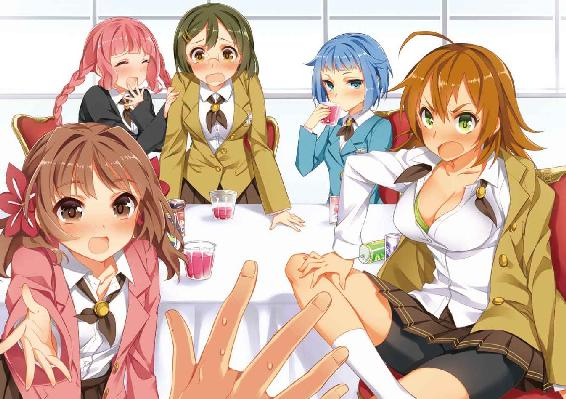
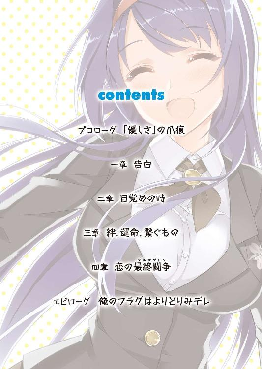
俺のフラグはよりどりみデレ３
小説：栗栖ティナ
挿絵：火曜
あとみっく文庫
※本作品の全部あるいは一部を無断で複製・転載・配信・送信したり、ホームページ上に転載することを禁止します。本作品の内容を無断で改変、改ざん等行うことも禁止します。また、有償・無償にかかわらず本作品を第三者に譲渡することはできません。
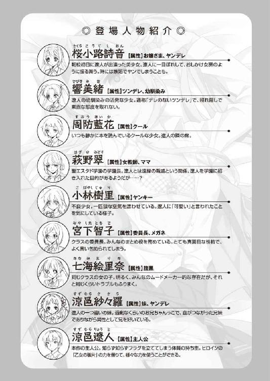
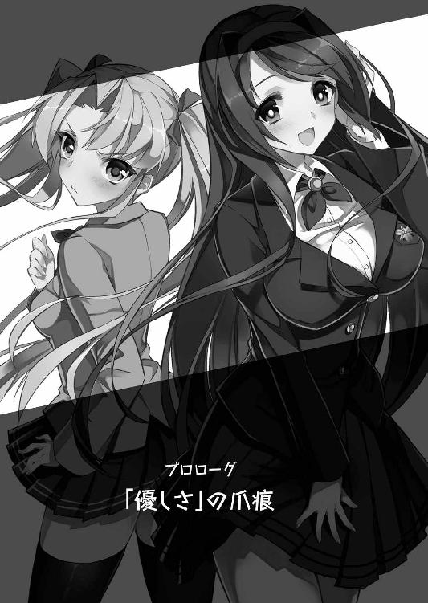
プロローグ 「優しさ」の爪痕
「おにぃ、だーい好きだよ♪ 世界で一番、愛してる！」
「そ、その......気づけよな、鈍感野郎!! 好きじゃなきゃ......口止めのためだけに、身体なんて許すわけねぇだろうが！ ......バカ」
「ふふっ、同感なのです。さすがの絵里奈も、涼邑くんの鈍さには振り回されて、困ったちゃんなのですよ。でもぉ......そんなところも、退屈しなくて大好きです♪」
「涼邑遼人は、私が唯一好意を抱いている異性。この間、図書館で言った気持ちは、日に日に強くなってきている。......あなたの気持ちを教えて欲しい」
可愛い女の子から、愛の告白をされる。
下駄箱にラブレターを入れられたり、放課後の校舎裏に呼び出されたり。クリスマスやバレンタインデーといった、恋のイベントに合わせて。
思春期の少年なら誰もが一度は憧れる、甘ったるいシチュエーション。
フラグメイカーと呼ばれ、現実離れしたトラブルに巻き込まれることが多い少年――涼邑遼人も、そんな甘い青春の一ページを経験したいと、妄想をふくらませたことはある。
（でも、こ、これは現実じゃない！ 現実じゃなさすぎるだろっ!!）
口癖を何度叫んでも足りないくらい、この状況は色々な意味で現実離れしていた。
広々とした寮の食堂、豪華な料理が並んだ長テーブルの脇に押し倒されているというのが、まず一つ。とても、静かに愛を語らう雰囲気とは言い難い。
「えへっ、おにぃの匂い～......はふっ、やっぱり落ち着くよぉ」
仰向けに転がる遼人の上、まるで赤ちゃんラッコのように乗っかり、胸板に鼻先を擦りつけてくる、ふわふわと短めのツインテールに髪をまとめた少女。
超がつくブラコンで、兄である自分に対する想いを隠そうともせず、ストレートにぶつけてくる紗々羅。それが行き過ぎ、ついさっきまで一同を巻き込む大きな騒動を起こしてしまっていた彼女の暴走は、まだわからないでもない。
「何だよ、その顔は！ そんなに......あ、あたいに告白されて迷惑かよ!! ざけんな、人の初めて......あんな風に奪いやがったくせに......」
「あっ、い、いや、迷惑に思ってるわけじゃなくて、あの......」
シャツ越しにもはっきりわかるくらい、形よく大きな双乳。その谷間へ少年の右腕を挟むように添い寝しているヤンキー少女に、慌ててフォローの言葉をかける。
小林樹里。初対面が闘争の場で、しかも結果的に敵として打ち倒すことになってしまった彼女から、こんなにストレートな告白を受ける理由がまるで思いつかなかった。
（初めてを奪ったって......確かにしちゃったけど、でも、あれはなんていうか、絵里奈に煽られて、成り行きだったし......まさか、そんな......）
「普段が強気なだけに、こうしてデレると破壊力が半端ないですねぇ、樹里さんは。でもでもぉ、乙女道の師匠として、絵里奈も負けるわけにはいかないのですよぉ～」
華やかなピンク色髪を三つ編みのおさげにまとめた、トラブルを何よりも愛する腹黒娘――七海絵里奈は、樹里と張り合うように少年の左側に添い寝して、そのぷっくりと柔らかい頬を二の腕に擦りつけながら甘えてきている。
性格的に考え、彼女はこの騒動を煽るために悪ノリしているのだろうか。
「言っておきますけど......絵里奈も、本気なのですよ。そうでなかったら、あんな風に自分の初めてを捧げたりしないのです。乙女の純潔がどれだけ尊いものか、それくらいは鈍感唐変木な涼邑くんも、わかっていますよねぇ？」
そんな少年の心を読んだように、絵里奈は上目遣いで訴えてくる。
つぶらな瞳は儚げに潤んでいて、遼人と目が合うとすぐ恥ずかしそうにそっぽを向いてしまう。みんなを手玉に取って暗躍する、腹黒娘らしからぬ純な反応だ。
「......現実じゃない、本当に」
「私は、あなたがそう思うことが現実じゃないと判断する。みんな、包み隠さずに本音で話しているのに、なぜ疑う必要があるのか理解不能」
しみじみ呟いた直後、ニュッと覗き込むように顔を近づけてきたのは、水色の髪を短く切り揃えたクール少女――周防藍花だ。
普段、何があっても決して手放すことのない本を傍らに置き、目を逸らすことなく戸惑う遼人の顔を真っ直ぐに見つめてきている。
「あ、あの、周防さんまで、そんな......」
「涼邑遼人は、私が唯一、好意を抱いている異性。さっきも、そう伝えたはず」
性行為を実体験してみたいからと、図書館で彼女に迫られたのは、ほんの数日前。
そのとき、彼女から告げられた好意が、友情を越えた愛とまでは思わなかった。
（どうして、こうなった......）
胸板やお腹に擦りつけられる、ブラコン妹の慎ましい乳房の感触。両腕を挟む、樹里と絵里奈、それぞれの瑞々しい弾力溢れる双丘の温もり。そして間近に迫るクール少女から漂ってくる、爽やかなミントに似た香り。
それぞれ違った魅力のある乙女達に群がられたまま、遼人は改めてこのありえない状況に困惑してしまっていた。
（参ったな......いつもなら、とっくに横やりが入ってるはずなのに）
フラグメイカーである自分が女の子といい雰囲気になると、決まって何かが起こる。
最近では、口より先に手が出る短気なツンデレ幼馴染みか、自分のこととなるとすぐ狂気をあらわにする、ヤンデレという厄介な属性を持つ幼馴染みが突っ込んでくることが、圧倒的に多い......のだが。
「むにゅぅ......りょうとぉ～、肉まん、あたしにもわけろぉ......はむぅ」
「はふぅっ、んぅっ！ あん、遼くん、今日はとても大胆ですね......はふふっ」
遼人と少し離れた場所で、横向きに抱き合うようにして倒れている二人。
詩音の目を見張る豊かな乳房を鷲掴みにして、何やらご機嫌な金髪ツインテールの少女――響美緒と、くねくねと背中をくねらせ喜んでいる黒髪ロングのヤンデレ少女――桜小路詩音は、揃って茹だったように赤い顔で呂律の回らない声を上げていた。
間近で行われている遼人を巡る騒動に、まったく気づく様子がない。
（詩音や美緒といい、みんなといい......原因は、間違いなくアレ......だよな）
遼人がぎこちなく乾いた笑みを浮かべながら、傍らのテーブルに置かれた、小さな気泡が浮かぶ黄金色の液体で満たされたグラスを見つめた刹那。
「あらあら......もてる男の子は大変ね」
それを取り上げ、香りを楽しむように口をつけた淑女が、楽しげに微笑みかけてきた。
「何を他人事みたいに!! これは、翠さんがっ......」
とりついたまま離れない乙女達を振り払うこともできず、遼人は横たわったまま首を軽く上げ、そんな淑女を睨みつける。
長い髪をゆったりと後ろでまとめた、目元の泣き黒子が妖艶な魅力を漂わせている、聖エスタド学園の学園長であり、この寮の責任者――そして、一連の騒動の黒幕であることを、つい数刻前に自ら告白した萩野翠。
一連の騒動を起こした理由を、みんなで問い詰めよう。そう決めて、紗々羅の歓迎会と称した彼女主催の宴にこうして顔を出したのだが......結果は、ごらんのありさまだ。
「お話の前に、まずは乾杯を」
普段どおりの落ち着いた口調に流されてしまったのが、失敗だった。
（まさか、ジュースじゃなくてシャンパンだったなんて......）
口にした瞬間、口の中が熱くなり、身体がふわふわと浮き上がるような独特の高揚感に包まれてしまったそれは――間違いなく、アルコール飲料の味。
気づいたときにはみんな飲み込んでしまった後で、揃って熱に冒されたかのように頬を赤らめ、夢うつつな表情になってしまったのだ。
『あら、ノンアルコールと、間違えてしまったみたい』
そんな風に嘯く翠へ、遼人は朦朧とする意識を必死に繋ぎ止めて、当初の目的どおり彼女の本心を問い詰めようと試みた......のだが。
「わたしのことより、もっと早く解決しなければいけない問題があるのではないかしら？ みんなも、そろそろ遼人君に気持ちをはっきりさせてもらいたいでしょう」
「へっ？ 翠さん、一体、何を言って......」
「恋も料理も火加減が大切......程よいタイミングを逃すと、上手くいかないものよ。ましてや遼人君にはライバルが多いのだし......ねぇ？」
軽く小首を傾げ、並ぶ乙女達を見渡しながら翠が囁くのに合わせ、場の空気が次第に妙な方向に流れていくのを、遼人は自分に向けられる熱っぽい視線から感じ始めた。
「え、えっと......いや、今は翠さんの......」
「恋は乙女にとって、一番の闘争。......出遅れたら、取られてしまうわよ？」
「おにぃっ！」「す、涼邑......」「うふふっ♪」「......負けない」
「ちょ、な......え......うっ、うわああっ!?」
ダメ押しとばかりに告げられた、そんな煽りの言葉が――開戦の合図となった。
（現実じゃない......とことん、現実じゃない）
アルコールで理性のタガが緩んだのはわかるが、それで、どうしてこんなことになってしまうのか。包み隠さず好意をぶつけてきていた妹はともかく、他の乙女達からもこんなに想われていたとは、遼人にとって完全に予想外のことだ。
（みんな本気なのか？ そりゃ、まあ......嫌われてはいないと思ってたけどさ）
自分に群がる四人、そして傍らで完全に潰れてしまっている幼馴染み二人。全員と、それぞれに理由はあったが肌を重ねた経験がある。しかも、揃って彼女達の方から求めてくる形だったのだ。いくら鈍いとはいえ、それくらいのことは想像がついた。
「おにぃもボクのこと、好きだよねぇ～？ さっき、お腹にたーくさん出してくれたし、いっぱいギュッてしてくれたしぃ......えへへっ」
戸惑う少年を煽るように、上に覆い被さっていたふわふわツインテールの妹が腰を左右にくねらせて、自らの下腹部を擦りつけてきた。
捲れたスカートから覗く、ストライプ柄のショーツ。その薄い布地に浮かぶ、ぷっくりと盛り上がった恥丘が、狙いすましたように少年の股間に押しつけられる。
「んぁっ！ おい、紗々羅!?」
「えへへっ、まだここ、少しジンジンしてるよ。おにぃの......入ってるみたい♪」
慌てる兄を悪戯っぽい子猫のような微笑みで見つめ、恍惚と目を細める紗々羅。
その頬の朱色が濃くなってきているのは、アルコールの影響だけでないのは明らかだ。
ズボン越しに伝わってくる、わずかな湿り気を帯びた肉唇の温もり。ほんの数時間前、妹と禁断の交わりをしてしまったことを嫌でも思い出させる感触に、遼人も否応なしに鼓動が高鳴り、下腹部がじわじわと痺れるような興奮に包まれていく。
「紗々羅、今はそんなことをしてる場合じゃ......って、お、おいっ！」
暴走する妹を窘めようとした刹那、ほんの少し頬を色づかせたクール少女の顔で視界が埋め尽くされてしまった。
同時に頬へ押し当てられた、マシュマロのように柔らかい感触。見て確かめるまでもなく、それが彼女の唇であることは明白だ。
「涼邑君、答えて欲しい。あなたは、私をどう思っている？」
「どうって......んあ!? 周防さん、お、落ち着いて......んくんっ、うっ！」
答えを待つこともなく、いつもどおり感情の読みにくい淡々とした表情のまま、藍花は少年の顔のあちらこちらへキスの雨を降らせてきた。
おでこ、目元、頬、鼻先。わずかに濡れた桜色の唇が、黄色い悲鳴を上げる少年の口元に少しずつ近づいてくる。
触れた部分がクリームのように蕩けてしまいそうな、柔らかい心地よさ。それに合わせて、クール少女の髪から漂うミントの香りも濃くなってきた。
思わずうっとりと浸ってしまい、次はいよいよ唇目指して迫ってくるキスを避けようにも、身体がまったく言うことを聞かない。
「おい、ふざけんな！ あ、あたいにここまで言わせておいて、目の前で他の女とイチャつくんじゃねぇ!! このスケベっ！ 鈍感野郎っ！」
そんな少年の腕を強く引いて咎めたのは、跳ねた癖毛が印象的なヤンキー少女だった。
瞳を涙で潤ませながら、責めるように見つめてきている樹里。それは、誰よりも快活で強気な普段の姿からはかけ離れた、まさに恋する乙女という愛らしい表情だ。
「お前が可愛いとか言うから、あたいは頑張って女らしくなろうと......何だよ......あたいだって、いっぱい気持ちよくしてやっただろ！ ほら、こことか......こっちもぉ」
絶句している遼人を見つめたまま、樹里は身体を上下に揺さぶり始める。
以前、智子と闘争の一環として少年の剛直に奉仕したときを真似るように、豊かな乳房をグニグニと歪めながら、挟み込んだ二の腕へ休みなく擦りつけてくる。
更に逃さないとばかりに、細くしなやかに引き締まった両足を絡めてきていて、張りのある滑らかな太股で、付け根の辺りも同じように擦られていた。
「なっ、んぁっ、樹里、ちょ......そんな......はぅっ、ああっ！」
腕と足に感じる程よい摩擦が、以前、射精に導かれたときの快感を思い出させてくれる。意識してはいけないとわかっていても我慢できず、妹の蜜裂へ押しつけられている剛直が、否応なしに勢いづいていく。
「あはっ、何だかんだ言ってもぉ......ここはノリノリになってきているのですよ。本当に節操なしでイケナイ子ですねぇ......涼邑くんのオチンチンは♪」
「ひぁぁぁっ！ なっ、だ、誰が......うぅっ」
耳たぶを甘噛みし、ふっと甘い息を吹きかけ、悪戯っぽく微笑む腹黒娘。
耳の穴から背筋まで響くほどのむず痒さに悲鳴を上げてしまった刹那、彼女の白魚のように細く長い指が、少年の股間へ素早く伸びてきた。
「あはっ、オチンチンだけじゃなくてぇ......タマタマもパンパンに張ってきているみたいなのです。もう、やる気満々ですねぇ......んぅっ、嬉しい♪」
「そ、そんなこと......なぁ......んぁっ、くぅっ！ やめ、な、撫でるなよ!!」
急所である対の玉を撫で転がされる、下腹が締めつけられるような独特の感触。
完全に動きを封じられてしまっている遼人は、ただ床の上で背筋をくねらせ、情けなく上擦る悲鳴を漏らす以外、何もできなかった。
（現実じゃない!! どうして、ここまでムキになって張り合うんだよ！ 周防さんはともかく、他のみんなは乙女の破片なくなってるはずなのに......わけがわからないよ）
この聖エスタド学園に在籍する乙女が、例外なく身体に宿している不思議な物体。
乙女が持つトラウマの記憶を封印する代わり、元々の性格を極端に強調し、他者との競争心を尋常ではあり得ないレベルまで昂らせるという厄介な副作用を持っている。
だが、樹里、絵里奈、そして紗々羅の三人は、彼女達が生み出した魔物を少年が倒したことで、既に乙女の破片を失っている。それなのに、この暴走はどういうわけなのか。
（乙女の破片がなくなったからと言っても、すぐに影響が消えるわけじゃない......？）
そう考えるしか説明のつかない姿に、なすすべもなく振り回されるしかない。
「あらあら、今日はみんな、随分積極的な。ふふっ、これがよく効いてるみたい」
「はぁっ、くっ、み、翠さん、何を......んふっ、考えてぇ......」
「わたしが考えているのはただ一つ、素敵な物語を作ることだけですよ。遼人君、あなたを主人公にした、乙女達との甘く華やかなお話を。......それでは、裏方はこの辺りで退散させてもらおうかしら。ふふっ、素敵なひとときを楽しんでくださいね」
手にしたグラスの中身を一気に呷った淑女は、そのまま食堂を後にしてしまった。
「翠さん、待って！ た、楽しめって、そんなっ!!」
「おにぃ......いいよね、そろそろ......」
寮の責任者である淑女の言葉を合図に、まず上に乗っかった妹が、妖しく瞳を輝かせながら訴えてきた。他の三人も瞳をうっとりと輝かせ、じっと少年を見つめてきている。
「いや、そろそろって......今は、そんなことしてる場合じゃ......うぅっ」
必死に訴えるが、乙女達はまったく聞く耳を持ってくれない。林檎色に染まった顔を見る限り、酔いが本格的に回り、理性が欠片も残さず吹き飛んでしまったのだろう。
「ああ、もう......詩音、美緒！ そろそろ突っ込み入れてくれよぉっ!!」
自力では無理と、いつも土壇場で割って入ってくる幼馴染み達へ救いを求める。
こんな場面を彼女達に気づかれたら、命覚悟の修羅場が始まるのは目に見えているが、それでも流され続けるよりは幾分マシだ。
「うぅっ、ぎ、ぎもぢわるぅ......」
「頭......痛いです。お、お水ぅ......」
そんな遼人の期待も虚しく、抱き合ったまま転がる金髪と黒髪の美少女は、弱々しい呻き声を漏らし、ぐったりとしてしまっていた。
どうやら二人揃って、アルコールに対しての免疫が極端に弱かったらしい。普段は常に対立しているのに、こういうときはなぜか息が合うのが面白い。
（って、そんな微笑ましく見守ってる場合じゃないだろ！ こんな、四人同時に迫られるとか、現実じゃなさすぎる!! 洒落にならないってばっ！）
勇気を振り絞って拒絶するべきか、だが、そう告げた後の反応を想像すると気が萎えてしまって踏ん切りがつかない。
絶体絶命。そんな単語が脳裏を過ぎった――直後だった。
ダァァァァァァンッ！
「ひっ!?」
何かをテーブルに打ちつけた大きな音が、食堂に広がっていた桃色の甘い雰囲気を一瞬のうちに吹き飛ばした。
遼人、そしてそれぞれのやり方で迫っていた乙女達は凍りついたように動きを止め、その音のした方へ一斉に視線を向ける。
「......不道徳です。あまりにも不道徳すぎますっ！」
ただ一人、姿勢正しく席に着き、黄金色の泡立つ液体で満たされたグラスを手に叫んでいるのは、眼鏡が知的な雰囲気を醸し出しているショートヘアの少女。
『乙女の破片』という厄介なものを宿している影響で、やたら暴走癖のある乙女達の中ではおとなしく、いつもブレーキ役を担ってくれている学級委員長、宮下智子だった。
「あ、あの......委員長？」
「五人でなんて、不謹慎にも程がありますよ！ それも、こんな場所で......破廉恥です、変態です、淫乱です、獣じみてます!! 絶対、見過ごせません！」
手にしたグラスの中身を一息で呷り、傍らの瓶から残りを注ぎながら叫ぶ委員長。
遼人の記憶にある限り、瓶にはまだ四分の三以上残っていたはずの液体が、その一杯で空になってしまっていた。この騒動の中、一人延々と飲み続けていたのだろうか。
「な、何だよ、委員長！ 今、あたい達は忙しい......」
「黙れ、そして下がりなさいっ！ この不埒な女どもっ!!」
ダァンッ！ 再び一息で空けたガラスのグラスを、砕けてしまわないか不安になる勢いでテーブルに叩き置くと同時に叫んだ智子が、乱暴に席を立つ。
普段のおとなしく控え目な印象からは想像もつかない、直視するのもためらわれる恐ろしい迫力。強気な樹里ですら、恐怖に小さく肩を震わせて、そっぽを向いてしまう。
「どいつもこいつも、あまりにも身勝手です！ 人の気持ちも考えずに暴走して、盛りのついた雌猫よりも浅ましい！ あまりにもゲスです!!」
ガシャンッと今度は椅子を蹴飛ばしながら、遼人達の方へ歩み寄ってくる委員長。その目は完全に据わっていて、有無を言わさぬ殺気を放っている。
（で、泥酔してる......間違いなく......）
一人であれだけ空けたのだから、無理はない。酔いが、普段、押し殺している鬱屈を表面に押し出しているのだろうか。逆らうことを許さない、恐ろしい迫力だ。
「少しは年相応の慎ましさを持ちなさい！ ほら、とっとと下がるっ！」
「「「「は、はい！」」」」
踏み抜かんばかりの勢いで床を蹴った委員長の命令で、遼人に群がっていた乙女達はまるで新兵のように声を揃え、逆らうことなく引き下がっていく。
我の強い乙女達にしては、珍しく素直な反応。それだけ、酔いに支配された委員長が恐ろしいということだ。『鬼軍曹』という表現が、これほど似合う雰囲気はない。
（た、助かった......？）
解放され、大きな安堵と少し残念な気持ちを吐き出すように息をついた刹那。その顔を覗き込むように、迫力溢れる三角眼になった智子が近づいてきた。
「そもそも、遼人君が悪い！ あなたの態度は、あまりにも不誠実です!!」
「へっ？ お、お、俺が？ あの、どうして......」
「みんなの気持ちを弄んだ挙げ句、答えも出さないなんて、無責任だと思いませんか!?」
「そ、それは......」
痛いところをズバリと突かれ、遼人は何も言えず顔を背けてしまう。
いくら強引に迫られているとはいえ、自分がしっかりと意見を言えば、ここまで振り回されたり、場の空気が荒れることもない。少し考えれば、わかる話だ。
（でも、きっぱり断ったりしたら、みんなを傷つけちゃう......いや、俺がそう怖がっているだけで......っ......何だよ、これ......胸が、ズキズキする......）
まるで針で執拗に突かれているかのような鋭い痛みを覚え、顔を顰めてしまう。
そんな遼人へ、酔いに背を押された委員長が更に詰め寄ってくる。
「そして......何より、不公平です！」
身体が火照っているからか、イチゴジャムのように濃密な甘い香りが強く漂ってきて、それに惹かれるように智子の方を向き直った瞬間。
――ちゅっ。そんな小さな音と共に、熱い唇が口元に接触した。
「んぁっ!? なっ、え、あっ、い、今、ええ、キ、キス......」
事故のような接触に慌てふためき、言葉を失う。そんな遼人と鼻先が触れ合う至近距離まで顔を近づけている委員長は、相変わらず据わった目で少しも動じる様子はない。
今のは、何だったのか。不規則に高鳴る鼓動を堪えつつ、問いかけようとするよりも先に、なぜか自らの襟元に手を伸ばしてそこを緩め始めた智子が叫ぶ。
「みんな......妹の紗々羅ちゃんとまでエッチしているのに、どうして私にだけ何もしてくれないんですか！ 寮仲間を不公平に扱うなんて、酷いです！ 甲斐性なしですっ!!」
「はっ？ あ、あの、それ、どういう......って、ちょ、あ......」
暴走する委員長は制服とシャツの胸元を大きくはだけさせた挙げ句に、戸惑う遼人の股間へ手を伸ばしてきた。
少し手こずりながらも、ベルトとズボンのボタンが順々に外される。
先程、四人に迫られた甘い雰囲気に乗せられて勃起してしまった剛直が、その開いた隙間からバネ仕掛けのようにピンッと勢いよく立ち上がった。
「私だって、遼人君が好きなんです!! ちゃんと、みんなと平等にしてください！」
そんな厳しい声と共に、間髪入れずそこを手で強く掴まれてしまう。
「なっ、あの、ど、ど、どこを......んくっ、落ち着いてくれ！ あぐぅっ!?」
酔いのせいで加減がわからなくなっているのか、比較的に小柄な体型に見合った細い指が、竿肌に浮かんだ血管を潰さんばかりの勢いで食い込んでくる。
ふくれあがった海綿体が押される鈍い痛みと、それを塗り潰す心地よく痺れる圧迫感。
意志に関係なく硬さが増し、指を押し返さんばかりに表皮が張ってきてしまった。
「むぅ、どんどん大きくなってきてますね。これは、ちゃんと反省してくれているということですか？ 私も、みんなと同じようにしてくれるんですね！」
素直な反応を見せる剛直を満足げに見つめながら、眼鏡の委員長は慌ただしくスカートを捲り上げ、その生真面目な性格に似合う純白のショーツをさらけ出す。
更に片手でその股布を横へずらし、薄茶色の茂みから見え隠れする割れ目をあらわにしながら、そこをためらいもせずに肉幹の先端へ擦りつけてきた。
ヌチュッ......ニチュッ......。
「ひぅっ!? 同じようにって、まさか......委員長、落ち着け......うわあっ！」
亀頭をじわりと湿った肉粘膜で舐め上げられる、甘い快感。
何をやろうとしているのか察し、慌てて止めようとしたときには手遅れだった。
ズップゥッ、ズブブブッ、ズボォッ!!
「はぐぅんっ！ ひぃっ、くっ、お、大きいぃ......んぐっ、はぁ、ふぁんんっ！」
ヌルンッと滑る感触と共に、肉槍が茹だるように熱い膣壺へ入り込んでいく。
特に狭まった部分でも止まることなく突き進み、遼人が声を出す間もなく、そのすべてがしっかりと埋まってしまった。
「こんな、は、入っちゃってる......うわっ......」
「はぁ、はい......これで平等ですぅ。私の初めても、ちゃ、ちゃんと遼人君にぃ......」
驚き、目を見開いて訴える遼人へ、頬を真っ赤に染め上げた委員長が満足げに返す。
その喜びを訴えるように、熱く滑る膣壁が収縮し、中を埋める屹立を圧迫してきた。
軽く首を上げて結合部を覗き込むと、突き刺さる肉竿を伝い、赤い破瓜の証が早くも溢れ出てきているのがはっきりと見える。
（う、嘘だろ！ こんな形で委員長の初めて......洒落になってないっ!!）
「でも、まだです。ちゃんと、最後までエッチ......んはぁっ、し、してくれないとぉ」
呆然とする遼人を見下ろしながら、智子は息をつく間もなく腰を振り始める。
小さめの尻房を弾ませ、トレードマークとも言える眼鏡がずり落ちてしまいそうな激しさで、全身を上下に揺さぶる。
「委員長、ま、待った！ いきなり、そんな......うぐっ、あぁっ、うぅっ!?」
純潔を失ったばかりの狭苦しい肉壺で、肉幹が根元から先端まで熱く扱かれる。
こんな形で学友の初体験を奪ってしまった罪悪感も吹き飛んでしまう、竿肌が少しずつ舐め溶かされていくかのような、甘美な刺激。
皺がなくなるくらい伸びきった壁面に雁首が食い込み、出入りに合わせて押し込まれたり捲れたりするのが、特に強い、ズンズンと腰まで響く快感流を生み出す。
「はひぃっ、はぁ、何だかぁ......お股がジンジンしますけどぉ、でも、らぁ......らいじょうぶそぉ......んふっ、もっと痛いかと思っていましたけど、問題ないですぅ」
「そ、それはよかったけど......でも......」
「ふぁんっ、はぁ、はふっ!! ほら、涼邑君も動いて......んくっ、女の子だけにさせるなんて、不公平です！ ちゃんと、一緒に......きゃふっ、んっ、はんんっ!!」
「い、いや、そんなことより、どうして、こんな......んぁっ、うぅっ」
「私も遼人君が好きだって、言ったじゃないですか！ 女の子の一世一代の告白を信じてくれないなんて、不誠実です!! そんなの......んふっ、はぁ、お、お仕置きです！」
グッチュッ、ヌプッ、ズブリュッ！
戸惑う遼人を責めるように、委員長の腰使いが激しさを増していく。
上下運動だけではなく、踊るように前後や左右への揺さぶりも加わり、肉槍が熱く蕩けた膣内をマドラーのごとく掻き回す形になる。
一部が強く擦れたり、そっと撫でるような淡い接触になったり。刺激の緩急が大きくなり、それが昂りをますます押し上げてくれた。
（それに、胸が......さっきから、凄くゆ、ゆ、揺れて......）
ぶるんっ、ぶるんっ。そんな音が聞こえてきそうな勢いで、はだけた胸元からこぼれる双乳が、ダイナミックに揺れる。動きに合わせて、縦長や横長に形を変える隆起。その頂点を飾っている桃色の突起はツンと可愛らしく尖り、彼女の昂りを訴えていた。
「んぁっ、はぁ、涼邑君、目がエッチになってます！ 盗み見なんてぇ......はひっ、よ、よくないです！ とっても......んふっ、はぁ、不道徳ですぅっ、ふぁ......んっ、でも、今はエッチをしているからぁ......それでいいのでしょうか？」
「うぁっ、はぁ、き、聞かれても......そんな......んっ、うぅっ」
「あはぁっ、はぁ、そう言えば......前に樹里さんとの闘争でしたときも、ここ、凄く見てくれていましたね。私、あのときからずっと......涼邑君のことぉ......」
「闘争......うっ、そう言えば、そんなことも......」
少し懐かしげに目を細めながら、智子の腰使いが加速していく。
更に強くなる摩擦に加え、以前の闘争――今、目前で悩ましく震えている双乳で扱かれたときのことを思い出してしまい、屹立の感度が更に高まってしまう。
「ひゃぅっ、んっ、オチンチン、ビクビク動いて......んふっ、ほ、本当にエッチで不道徳です。もっともっと、いっぱいお仕置きしてあげないとダメ......くふぁっ、あんっ！」
「そんなっ！ む、無理......こんなに動かれたら、誰だって......あぐっ、ああっ！」
じゅぶじゅぶと卑猥な水音を高く響かせながら続く、リズミカルな抽送。
結合部から飛沫となって飛び散る淫液は、破瓜の証の赤色がかなり薄まって淡い桜色になってきていた。それだけ、この眼鏡の委員長も甘い快感に襲われている証拠。竿肌に感じる摩擦が、最初よりもはっきりと湿り気を帯びていることも、それを裏付けている。
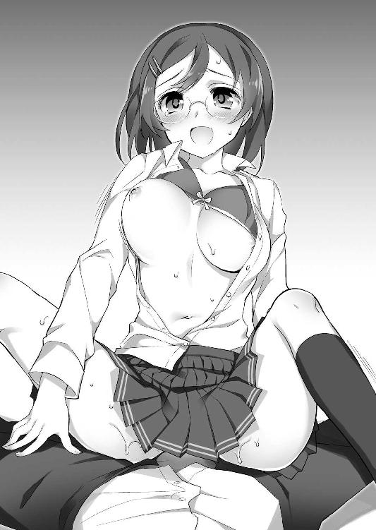
「はふっ、遼人君！ もっとぉっ、はぁっ、はぐぅっ、んぅっ！」
「委員長......お、俺......」
そんな物理的な刺激と同じくらい、誰よりも生真面目な乙女が自分への想いを包み隠さずに訴え、淫らに、責めてくる姿にも興奮を覚えてしまう。
頭の芯から爪先まで、そんな熱い昂りでジンと痺れ、抵抗する力が消えていく。
（でも、これはさすがに......というか、だ、誰か止めないのかよ！）
自力での制止を諦め、救いを求めて傍らに目をやる――が。
「うわっ、あ、あんなに腰振って......出たり、入ったり......うぁぁっ」
「おぉっ、おっぱいがぷるんぷるんっと......凄い迫力なのです」
「......小さくても、気持ちよくしてあげられるもん。おにぃ、喜んでくれてたもん」
「宮下智子の、普段とは違う一面......興味深い」
普段の強気な姿が嘘のように、顔を赤らめて恥じらう癖毛のヤンキー少女。
豊かな乳房の揺れを目で追いながら、それぞれの反応を見せる腹黒娘とブラコン妹。
トレードマークの本をいつの間にか拾い上げていたクール少女は、持ち前の好奇心の強さを存分に発揮し、普段とは違う委員長の行動をじっと観察している。
さっきの厳しい一喝と、人目を気にしない大胆な行動に度肝を抜かれているのだろう。割り込むタイミングを見いだせず、傍観するしかない様子。助けは期待できない。
「もうっ！ 今、私としているのにぃ......んはぁっ、よそ見するなんて、とっても不誠実です！ そんな......んふっ、はぁ、よくないこと、ダメ......ひぐぅっ、はぁんんっ！」
ンチュッ、ズップゥッ、ヌプリュゥッ！ ジュブゥッ、ズップゥゥゥッ!!
視線を泳がせる少年の注意を自分へ引きつけようと言わんばかりに、智子の動きが荒々しくなってきた。甘酸っぱい匂いの愛液を撒き散らしながら、遼人の腰上でトランポリンに乗っているかのような軽さで、その小柄な肢体を跳ねさせる。
「ふぁっ、ああっ!! 委員長、ストップ！ もう、俺、そんな......出る、やばいぃっ！」
濡れた膣肉に屹立を隅々まで乱暴に舐め上げられ、尿道に込み上げてきている熱いものを搾るように圧迫される快感。身体が痺れて振り払う余力も残っていない遼人は、その甘美流に意識が流されそうになるのを紙一重で堪え、必死に訴え続ける。
「はひっ、何だか、わ、私もぉ......んんくっ、身体、ふわふわぁっ、あひぃっ、こ、この感じ......素敵ですぅっ、とっても......はひっ、いぃっ、きゃふぁああっ！」
そんな声に耳を貸すこともなく、委員長は眼鏡が吹き飛びそうな激しさまで腰振りを加速させ、恍惚と甘ったるい叫びを上げていた。
頬が鮮やかな苺色に染まってきているのは、そのハードな運動で酔いがますます回ったせいだけではなく、彼女もまた恍惚の快感に浸っているからだろう。
（委員長、本当に気持ちよさそう。......俺のこと、本気で......？ だから......）
普段の真面目さとのギャップが大きい、うっとりと蕩けかけた表情。
それが自分への確かな想いがあるからだと思うと、もう高鳴る鼓動と射精の欲求を抑えきれない。応えたいという衝動が本能的に込み上げてきて、腰が自然と浮いてしまう。
ズップゥッ、ヌプリュゥゥッ！
「んくぅっ、ふぁあああっ！ イィッ、んふっ、し、しきゅぅ、くりゅぅぅぅっ!!」
ミチィと狭まる肉壺を押し分け、亀頭が子宮口を貫かんばかりの勢いで衝突した瞬間、智子の嬌声が一オクターブ高く跳ね上がった。震える膣壁が収縮し、根元から先端の方へ休みなく波打つ動きが、込み上げてきていた射精欲の塊を弾けさせる。
「俺......もうっ、おぉっ、で、出ちゃうよ、委員長、あぁっ、うああああっ！」
ビュップゥッ、ドプゥッ、ビュブブブッ！
軽く背筋を仰け反らせながら、遼人は意識が吹き飛ばされそうな甘美な波に身体を震わせつつ、狭く熱い肉壺の中で盛大に達してしまった。膣壁まで振動させるような勢いで肉槍が脈打ち、ねっとり熱い白濁液を子宮口に遠慮なく浴びせかけていく。
「あふぅっ、んんぅっ！ ふぁ、熱いのきてますぅ、これ......射精......はひっ、んぅっ、おっぱいでしたときよりもぉ、ドピュドピュたくさん出てりゅっ......はふぅ♪」
「だ、だって......こんなに締めつけられたら、止まらない......んぁっ、うぅっ」
もっと、もっと。そうねだるように、短い間隔で収縮を繰り返す膣壺。個性の強い面子の中、控え目な性格の委員長とは思えない貪欲さで迸りを求める動きに、遼人は腰が気だるくなるまで、長々と射精を強いられてしまった。
抽送で泡立った桃色淫液に塗れた結合部は、吹きこぼれてきた膣内射精の残滓も混ざって、より卑猥な光景になっている。むしゃぶりつくように剛直の根元を締める肉ビラの隙間まで塗れ、充血した朱色と白のコントラストが何とも言えない艶めかしさだ。
「んぁっ、遼人君......そんなにじっと見るのは恥ずかしいです、エッチなのはよくないですよぉ......お仕置き、もっとしないといけないでしょうかぁ～」
「へっ!? あっ、ちょ、そ、それは......いや、でも......」
絶頂の余韻から抜け出せず、遼人は強く拒絶できずにうろたえる。
それを肯定の返事と受け取ったのか、唇を緩めてうっとりと微笑む智子が、再び腰を振り動かしかけた――その刹那だった。
「ま、待ちやがれ!! いつまでやってるんだよ、このドスケベ委員長っ！」
「むぅ、独り占めはＮＧなのですよ！」
暴走に圧倒されていた樹里と絵里奈が、ようやく我を取り戻して割って入ってきた。
二人で智子の両手を掴み、そのまま有無を言わさず引っ張り立たせ、少年を解放する。
「あんっ、もう、何をするんですか！ 人の恋路を邪魔するのはよくないです!!」
「ざけんなっ、最初に邪魔をしたのはてめぇだろ!!」
「そうなのです！ 真面目ちゃんだと思って油断していました。まさか、土壇場でここまで大胆になれるなんて～......思わぬ穴馬出現で、びっくりなのですよ」
不機嫌そうに頬をふくらませて抗議する眼鏡の委員長に、すっかり自分のペースを取り戻したヤンキー少女と腹黒少女が一歩も引かずに言い返す。
「おにぃ、大丈夫？ ごめんね、助けられなくて......うぅ、待っていて、今、ボクが汚れちゃったおにぃの身体を綺麗にしてあげるから」
「......抜け駆けはよくない。普通に介抱してあげるべき」
その隙に、まだ倒れたままだった遼人は、駆け寄ってきた妹とクール少女に助けられ、ようやく身体を起こすことができた。
（......現実じゃない。委員長の初体験まで、俺が......）
これでこの寮で共に暮らす学友達――実の妹も含め、そのすべての初めてを自分が奪ったことになる。ハーレムという単語が脳裏に浮かんできたが、まさにそのとおりだ。
年頃の少年として素直に嬉しいと思ってしまう反面、大それたことをしてしまったという後悔の念も強く沸き上がってきて、言葉を失ってしまう。
やむにやまれぬ理由があったり、向こうから迫ってきたり。自分から積極的に口説き、騙すようなことをしたわけではないが......それでも、割り切れないものがある。
（女の子の初めてって、凄く大切なもののはずなのに。それを、何か勢いで流されてしてばかりで......いいわけないよな、絶対）
そんな自己嫌悪に沈んでいる合間にも、目前で繰り広げられる口論は激化していた。
「ったくよ、卑怯にも程があるぜ！ クソ真面目な委員長らしくないやり方だろ!!」
「さっきから、真面目、真面目って......何なんですか！ そんな言い方、不愉快です!!」
「それは事実だと、絵里奈も思うのですよ。みんなが楽しくしているときも、一人だけ生真面目で、融通が利かなくて......可愛げないじゃないですか！」
「可愛げ......ない......そんなっ......私......」
目の前で衝撃的な光景を見せつけられた上に、まだ酔いも残っているせいだろう。みんな物言いに遠慮がなく、雰囲気がどんどん刺々しく、殺伐となっていく。
集中攻撃を浴びる智子は次第にはっきりと言い返す勢いを失い、投げつけられた言葉を反芻するように、小声でぶつぶつと呟くようになっていた。
行為の余韻が色濃く残る、淡い桜色に染まった肌。そこから、少しずつ黒い霧のようなものが立ち上り始めるが、彼女を糾弾することに夢中の二人は気づかない。
「うん、真面目で堅い人だと思ってたから、すっかり油断しちゃってた......うぅ、目の前でおにぃが襲われてたのに、動けなかったなんて！ ボク、一生の不覚だよ!!」
「宮下さんが真面目なのは、言うまでもない事実と認識している。......涼邑君は？」
「......えっ、あ、ああ。まあ、委員長は真面目だよな」
樹里や絵里奈に追従し、唇を噛んで悔しがるふわふわツインテールの妹。そして淡々とした口調で頷き、同意を求めるように問いかけてくる水色髪のクール少女。
「真面目......って、まあ、それは確かに」
一人、思い悩んでいた遼人は、反射的に頷いて返す。彼女が真面目で、この個性派揃いの面々にとっては必要不可欠な押さえ役なのは事実だ。
......それだけに、今、露呈した酒癖の悪さが衝撃的なわけだが。
そんなことを考えつつ、小さく息をついた――直後。
「遼人君まで......そんなことを......あの人と同じです。そんなの......不誠実」
「えっ......」
今までに聞いたことのないくらい、低く暗い声。何か余計なフラグを立ててしまった、そんな嫌な予感に背を押されて顔を上げた遼人の目に飛び込んできたのは――。
「真面目で......堅苦しい。みんなが楽しく学園生活を送れるように、一生懸命頑張っているのに......どうして、そんな風に言うんですか」
うつむき、怒りを噛み殺しているかのように声を震わせている委員長。その身体が、まだはだけたままになっている胸元から噴き出る黒い霧に包み込まれていく。
「お、おい、これ......」
「何だか、とっても嫌な予感がするのです」
ただならぬ気配を察知し、率先して問い詰めていた樹里と絵里奈が後ずさる。
その間にも霧はどんどん濃くなり、やがてそれが何かの形を作っていく。
「私は引っ込み思案で、なかなかクラスの子と馴染めなくて......でも、みんなのために頑張って働けば受け入れてもらえると思って、無理をして頑張って......それなのに、堅苦しくて鬱陶しいって......みんな、私を仲間外れに......あまりにも不義理です！」
乙女の破片は、トラウマを持つ少女にのみ宿る。
今、口にしている過去の記憶が、おそらくはそれなのだろう。
遼人が頭の片隅に残った冷静な部分でそう推測していた間に――眼鏡の委員長は糸が切れた人形のように倒れ、それを合図に不気味な形を作る黒霧が実体化した。
対となった足が八本、そして巨大なハサミをかたどる二本の腕。全身が漆黒の甲殻で守られたそれは、少年の三倍近くの体格を誇る、カニに似た魔物だった。
「ひゃうっ!? おにぃ、ボク、怖いよぉ！」
本当に怖がっているのか、それともいいチャンスだと狙ってやっているのか。
黄色い悲鳴を上げてしがみついてきた妹を抱きかかえた遼人は、呆然と唇を震わせる。
「また、このパターンかよ......現実じゃない」
乙女の破片を持つ少女が、そのトラウマを抉られて絶望したときに生み出す、本能の赴くまま暴れる、おぞましい魔物。つい数刻前、甘えるように縋りついてきている紗々羅が生み出したそれと、大立ち回りを演じたばかり。
日に二度もこんな修羅場に出くわすなんて、現実離れしているにも程がある。
「おい、涼邑、ぼけっとしてんなっ！」
「そうなのです！ 早く主人公の力をっ!! ......きゃぅっ!?」
ドガッ、バギィッ、バギギギギィッ！
つんざくような乙女の悲鳴と、派手な破壊音。ハッと我に返って顔を上げた遼人の視界に飛び込んできたのは、巨大なハサミを振り回して暴れるカニの魔物と、その攻撃を必死に避け続けるヤンキー少女と腹黒少女の姿だった。
鋭いハサミの破壊力は、見た目から想像できる以上。
食堂に置かれていた長テーブルや椅子、更に天井に吊るされたシャンデリアまでもが、その妖しく輝く刃でバターのようにたやすく切り裂かれていく。
「はぅっ、破壊力も凄いし......それに、身体もカチカチで厄介そうなのです！ 硬くて嬉しいのは、男の子のアレだけだと絵里奈は思うのですよ!!」
「そんな下ネタをほざいてる場合か......って、ぬわっ!?」
魔物を倒されたことで乙女の破片が消え、常人離れした力を与えてくれるその恩恵を失いつつある。先程、すべての黒幕と嘯いた学園長の口から語られたとおり、今、人外に襲われている乙女達に、立ち向かう術は残されていない。
ただひたすら逃げ惑っているが、それでもその素早く重い攻撃をすべて避けることは叶わず、服の端々や髪の先などが次々切り裂かれていく。

真一文字に破けた胸元から覗く、スポーツブラに包まれた豊かな双乳と、魅惑的な桃色レースブラで飾られた、小ぶりで愛らしいふくらみ。
複数の裂け目が走ったスカートからは、白く眩しい太股が見え隠れしていて、その表面にはところどころ糸のように細い血の滲んだ跡も浮かんできていた。
これがアクション映画の一場面なら、ヒロイン達のセクシーなアクションシーンとして見入ってしまうかもしれないが、これは残念ながら現実。悠長に構えていられない。
「主人公の力......って、言われても......」
乙女の破片を持つ少女と協力し、恐ろしい魔物すらも打ち倒す力を得る。
どういうわけか、『主人公』という特殊な力を持っている遼人だけが使える、まさに最後の切り札。それを発動させる以外、この修羅場を切り抜ける術はないだろう。
（でも、どうしよう。誰の力を......）
しがみつき、ちゃっかり鼻先を子犬のように擦りつけて甘える妹は、兄である少年の手で魔物を倒され、乙女の破片を失ったばかり。
彼女との戦いで主人公の力を発動させた、幼馴染みの少女二人は――。
「うぐっ、頭......ズキズキするぅ～......おぇぇ......」
「うぅっ、目がぐるぐる......遼くんがいっぱい見えますぅ......」
この騒動を傍目に、未だ床に転がったまま、苦しげに呻いているだけ。とても、力を借りられるような状態ではなかった。
（となると、残りは......）
最後の一人を思い浮かべた途端、横から伸びてきた手に、右腕を強く引っ張られた。
「涼邑君、私と主人公の力を。他に、方法はない」
この修羅場でも、普段どおりのクールな態度を崩さず呼びかけてくる、水色髪の少女。
そのまま彼女の慎ましい胸元へ右の手の平が導かれていくと、それに応えるかのようにちょうど谷間の辺りが青白い光を放ち始めた。
主人公の力を発動させるとき、決まって起こる反応。光は次第に遼人の右手だけではなく左手も輝かせる。それが音もなく弾けた後には、右に黒、左に白、ずっしりと重い二丁の全自動拳銃が現れていた。
以前、詩音の暴走を止めるときにも使ったことがある、馴染みある主人公の力だ。
「涼邑君、油断は禁物。あの魔物の装甲は、かなり硬いと推測される」
「ああ、見るからにそうだよな。......紗々羅、ちょっと離れてろ」
抱きつく妹を下がらせて立ち上がった遼人は、銃を持つ両手を胸の前で×字型にクロスさせてポーズを決めつつ、暴れ狂うカニ型魔物をじっくり観察する。
無意識のうちに身体が動いて格好つけてしまったり、頭の回転が普段からは想像もつかないくらい速く、そして柔軟になるのも主人公の能力の一つだ。
（委員長と使った主人公の力は、何でも反射する絶対防御だったよな、そう言えば。生み出される魔物の特徴と、共通点があるものなのか......）
周囲から音や色が消えるほど集中し、まるで深い雪に包まれた灰色の世界に一人佇んでいるかのような気分で、暴れる魔物を眺める。
（甲殻のつなぎ目を狙う......でも、普通に撃つだけじゃダメだ。もう一工夫......っ！）
唯一とも言える勝利の方程式を導き出した刹那、両手の銃を前に向けて構え直した少年が、シャンデリアのガラスやテーブルの木片が飛び散る床を蹴って飛び出す。
「下がれ、樹里、絵里奈っ!!」
逃げ惑う二人の乙女へ呼びかけるや否や、黒白に塗り分けられた二丁の全自動拳銃がわずかにタイミングをずらして火を噴く。
ダンッ......ダァァァンッ！
先に放たれた黒拳銃から飛び出す銃弾が、今、まさに癖毛のヤンキー少女を捕らえようとしていた大バサミの付け根に命中する。しかし、最初に藍花が注意したとおり、その一発で分厚い装甲を撃ち抜くことは叶わず、キンッと甲高い音を響かせながら、斜め下――魔物の胴体めがけて跳ねていく。
「よしっ、いけええええええっ！」
――キィィィンンッ！
直後、それを後押しするかのように、遅れて放たれた白拳銃から打たれた銃弾が衝突する。二発分のエネルギーを宿して急加速したその弾は、狙いすましたかのように、魔物の蛇腹に折り重なった甲殻の隙間を射抜いた。
キンッ、キンッ、キィィンッ、キキィィンッ！
立て続けに鳴り響く、高い金属音。甲殻の内部に侵入した銃弾が、何度も跳ねながら魔物の体内を容赦なく貫いているのだ。
「硬い装甲も、逆手に取れば......こっちの武器になるってことだ」
これも、主人公の力の影響だろう。普段なら決して口にしない気障な言い回しと共に両手の拳銃をクルクル回した直後。
「オオオオォ......」
低い断末魔の叫びを残し、巨大なカニ型の魔物ががっくりとその場に崩れ落ちる。
身体の端から急速に元の霧へ姿を戻し......やがて、光り輝く小さな粒だけを残して、跡形もなく消え去ってしまった。
「終わった......っ......委員長、大丈夫か!?」
小さく息をつき、それを合図に両手の銃も消えたのを確認した後、遼人は小走りで床に倒れたままになっていた智子へ駆け寄っていく。
「うっ、うぅ......頭......痛い。こんなに......胃が不快な気分......初めてです......」
仰向けに倒れたまま、青白い顔で呻く眼鏡の委員長。ざっと見たところ、特に大きな外傷のようなものは見られない。
（胃が不快って......それは魔物云々じゃなくて、ただ飲み過ぎが原因......かな？）
今まで魔物を生み出した他の乙女達は、特に疲労以外の症状を訴えることはなかった。
意識を取り戻すのに時間はかかりそうだが、とりあえず大事に至らないだろう。
（まあ、一安心......かな。......目を覚ましたら、謝っておかないと）
あれだけ酔っていたなら記憶も吹き飛んでいるかもしれないが、襲われた形とはいえ一線を越えてしまったのだから、何事もなかったと流すわけにはいかないだろう。
（考えてたら......俺も胃が重くなってきたな）
片手でお腹を擦り、うなだれたときだった。
「お疲れ様でした、遼人君。ふふっ、一日に種を二つも......助かります」
いつ、食堂に戻ってきていたのだろうか。
いきなり現れた翠が、落ちていた輝く粒を拾い上げて、おっとりと微笑む。
「こういう展開になってくれればと、期待したとおり。さすがは主人公、物語の盛り上げ方をよく理解してくれていて、助かるわ」
「......翠さん、一体、どういうつもりでこんな......」
悪びれず言う淑女に、遼人は呆然と肩を震わせながら訴える。
種――それは乙女の破片が結晶化し、体外に排出されたもの。理由はわからないが、この温和な仮面の裏に隠した顔を見せない淑女は、それを集めることが目的の一つらしい。
「ふふっ、明日も授業がありますし、みなさんもほどほどで切り上げてくださいね」
翠は拾い上げた種を大事そうに小箱にしまうと、呻くように問いかけた遼人に答えることもなく、踵を返して立ち去っていく。
「待ってくださいよ、翠さん！ わけを話してください、わけを!!」
本来、今夜の目的は彼女の真意を知ること。このままうやむやで誤魔化されるわけにはいかないと、慌てて呼び止めた遼人の手を――背後から、何者かが掴み止めた。
「......お疲れ様、涼邑君。......今日も、見事な『主人公』だった」
「ああ、周防さんのおかげだよ。力を貸してくれて、ありが......んぐっ!?」
呼びかけに応えて振り向いた刹那、いきなり唇を柔らかい感触で塞がれる。
鼻腔いっぱいに広がる、ミントに似た爽快な香り。思い切り背伸びした水色髪のクール少女がその小さな唇を押しつけてきたのだと気づくまで、数呼吸の時間を要した。
「んぁっ、ぷはっ、はぁはぁ......周防さん、な、な、何を......」
「『代価』。主人公の力を使った後には必要なことだと、涼邑君も知っているはず」
主人公の力を使った後、昂っている乙女の破片を鎮めるために行う儀式。それを怠れば、乙女の破片の力が暴走して命を失うことになりかねない。その危険性は、もう何度も主人公の力で戦ったことがある遼人も、十分に承知している。
（でも、別にキスまでしなくても......）
代価は、恋人同士が行うようなことならば何でもいい。例えば抱き合ったり、手を繋いだり程度でも問題はないのだ。
それなのに、ここまで大胆な行動に出た理由は――。
「涼邑君、もっと代価が欲しい。できれば、二人っきりでゆっくりと」
立ち尽くす少年のシャツの胸元を掴み、上目遣いで尋ねてくる藍花。
その瞳はなぜか妙に潤み、頬もほのかに火照っていることにすぐ気づいた。
それはつい先程、床に押し倒されていた自分に迫ってきていたときと、同じ表情。
（まさか......まだ、酔いが残ってる!? い、いや、これだけ大騒ぎしたんだから、普通は正気に戻るだろ！ こんな......現実じゃないっ!!）
そう心の中で悲鳴を上げたのも虚しく、事態はどんどん悪化していく。
「て、てめぇ、周防！ ちゃっかり抜け駆けしてんじゃねーよっ!!」
「むむむっ、周防さんが代価と言うなら、絵里奈はまた命を助けてもらったお礼ということで、ご奉仕させてもらうのですよ！ ふふっ、いかがですか、涼邑くん♪」
「ダメ!! おにぃにご奉仕するのは、妹であるボクの仕事なんだからね！」
そんなクール少女の行動に煽られたかのように、他の三人も一斉に群がってきた。
両手に樹里と絵里奈、背中に紗々羅、そして正面に藍花。
四方を独特の柔らかさを持つ女の子の身体で取り囲まれ、ただうろたえるしかない。
「みんな、落ち着けって！ その、今は先に委員長の介抱とか......あの......」
必死にみんなを宥めようとするが、身体のあちらこちらにむにゅりと潰れる心地よい弾力を感じると、言葉が詰まり、反射的に頬が緩みそうになる。
（どうなってるんだよ、こんな......みんな、まだ酔ってるのか!?）
必死に表情を取り繕いながら、群がる乙女達の顔を一人ずつ眺めていく。
さっき同様、揃って頬をうっとり赤く染め、甘い雰囲気を漂わせている。だが、恥ずかしそうに視線を泳がせている樹里に比べ、他の三人は幾分余裕があるように見えた。
いつも表情を変えないクール少女はともかく、特にふわふわ髪の妹とピンクお下げの腹黒少女は、何か企んでいるかのように不敵な笑みを口元に浮かべている。とっくに酔いなど吹き飛んでいるのに、これ幸いと悪ノリを続けているのではないだろうか。
「あ、あのなあ、いい加減に......本当に困るって！」
「むぅ、こんな美少女達に取り囲まれて、何が不満なのですか？」
「はっきりボクのことを愛してるって告白してくれれば、先輩達も諦めると思うよ？」
「どさくさに、何を言ってやがる！ い、妹とそんな......やばい関係になるくらいならさ......その......あ、あ、あたいと......」
「涼邑君、早急に代価を。今、何より優先すべきことは、それのはず」
少年の訴えに耳を貸すことなく、グイグイと惜しみなく胸を押しつけるようにして迫ってくる乙女達。情熱的な想いに気圧された遼人は、ただ乾いた笑みを浮かべるしかない。
（もう、こんなトラブルだらけの一日なんて、現実じゃない！）
心の中で叫んだ瞬間、ハッと気づく。自分がこういうことを思ってしまうと、また余計なフラグが立ち、ますます事態が悪化してしまうのではないかと。
「......りょ～う～と～？ あんた......何してるの？」
「おかしいです......こんなの現実じゃありません。妻の前で、堂々と浮気なんて......」
怒りに震える声と、少年の口癖を真似た、抑揚がなく冷たい声。
肌に突き刺さるような殺気を察知し、遼人は瞬時に顔を青ざめさせる。
「やっ、やばっ......みんな、伏せろっ!!」
叫び、取り囲む乙女達の頭を押すようにして、その場に屈み込んだ直後。
ゴォォォォォォォッ！ キーンッ!!
つい一呼吸前まで自分達の頭があった辺りを、赤々とした炎の渦と銀色の輝く刃が駆け抜けた。舞い上がる断ち切られた髪が数本、それが焦げる不快な匂いが鼻を刺激する。
「あっ、危なっ......」
しゃがんだ面々を見渡し、ひとまず誰も怪我がないことを確かめた直後。
「な、な、な、何をやってたのよ、この変態！ 不潔、不潔すぎ!!」
「遼くん......詳しく、お話を聞かせてくださいますか？ ふふっ......」
わざとらしく大きな足音を立てながら、歩み寄ってくる二つの影。
恐る恐る見上げた少年の視界に飛び込んできたのは――金と漆黒の鬼だった。
「美緒、詩音......お、起きたの......？ あははっ」
ついさっきまで酔いで完全にダウンしていた、『ツンデレ』と『ヤンデレ』という、一際攻撃的で危険な属性を持つ二人の乙女。
助けが欲しいと思っているときは間に合わず、どうしてこのタイミングで目を覚ましてしまったのか。自分のフラグ気質を、改めて嘆きたくなる。
「離れなさいよ、早く！ こんなところで、露骨にイチャイチャ......いやらしい！」
「それより、この害虫どもの首と胴を切り離したほうが早いでしょうか？」
身体に宿る乙女の破片の力を発動させ、両手に炎を宿した美緒、銀色に妖しく輝く太刀を構える詩音。まだ少し酔っているのか、ハイライトが消えた瞳は据わっていて、普段以上に反論を許さぬ、恐ろしいプレッシャーを感じさせる。
「いや、あ、あの、落ち着いてくれよ！ これは、その色々あって......だから......」
とにかく、二人を宥めなければいけない。そんな思いに背を押されて立ち上がった遼人が、必死に場を取り繕おうと言い訳を並べ始めた直後。
「んだよ......好きな男に好きって言うことの、何が悪いんだ！」
続けて立ち上がった癖毛のヤンキー少女が、開き直ったように胸を張り、顔全体を真っ赤に染めながら叫ぶ。
「なっ、す、す、す、好きな男って......何よ、それ！ そんな......いきなり......」
「元々、頭の出来はよくないと思っていましたけれど、ついに壊れましたか、不良娘！」
ストレートな告白に、一瞬後ずさりしながらも反論するツンデレ少女と、怒りを訴えるように刀の束をギュッと硬く握り締めて叫ぶヤンデレ少女。
対決を煽るかのように、続けて立ち上がった他の乙女達も負けずに反論していく。
「樹里さんの言うとおりなのです！ まだ正式に涼邑くんの恋人でもないお二人に、あれこれと文句をつけられる筋合いはないと思うのですよ」
「何を妄言を......私が遼くんの妻だというのは、宇宙創世のときから定められた運命なんです！ 私の王子様を奪おうと言うなら、絶対に容赦はしませんよ!!」
「それ、詩音お姉ちゃんが勝手に言ってるだけだよね？ まだ、おにぃからははっきり返事をしてもらってないのに、思い込みが激しすぎ！ 重いよ、そういうの」
「......涼邑紗々羅に同意。勝負は、まだ決まっていない」
「っ......諦めが悪い雌豚どもですね！」
「何を言ってんのよ、しーちゃんが思い込み激しいのは事実でしょ！ あんたも、いい加減に少し自制しなさいよ!! 昔から、そうなんだから......」
「くっ、あなたにだけは、言われたくありません！ この暴力ツンデレ女ッ!!」
「だから、あたしにそんなキモいレッテルを貼るなっての！ このっ!!」
キャーキャーと黄色い怒声を上げ、激しくいがみ合う乙女達。
乙女の破片を持つ副作用として、異常に競争心が昂ってしまう彼女達の間では、もうお馴染みになった光景。だからと言って、黙って見てはいられない。
「あ、あの......落ち着けよ、みんな。今はそんなことで言い合ってる場合じゃ......」
智子の介抱、種を持って立ち去った翠を追及すること。すべきことは、他にもある。
ぎこちなく作り笑いを浮かべて宥めようとする遼人だったが、そんな彼の左右の腕へ未だ抱きついている樹里と絵里奈から、ほぼ同時に抗議の言葉が叩きつけられた。
「何が落ち着けだ！ そもそも、一番悪いのはてめぇだろ、涼邑!!」
「そうなのです。曖昧に誤魔化そうとしないで、はっきり絵里奈達をどう思っているのか言って欲しいのです。結論を先送りにするから、こうして荒れてしまうのですよ」
「そ......それは......」
否定しようのない正論に、遼人は顔を強張らせて言葉を詰まらせる。
「そんなこと言う、必要はありません！ 私と遼くんは、生まれながら魂が繋がっている最良のカップルなんですから!! 見つめ合うだけで、気持ちが伝わってきます！」
「それを言うなら、妹であるボクが、一番絆が深いよ!! だって、生まれたときから今日まで、ずっと離れずに同じ屋根の下で暮らしてたんだからね！」
一歩も引かずに反論する、詩音と紗々羅。ますます口論が盛り上がっていく傍らで、当事者でありながら蚊帳の外になった遼人は、胸に疼痛を感じ始めていた。
（俺がはっきりしない......から......）
まだ自分の気持ちが完全に定まっていないし、はっきりと口にすると傷つけてしまうかもしれない。理由はいくらでも浮かんでくるが、そんなものはその場凌ぎの言い訳にすぎないと、自分自身でもわかる。
「俺って、いつもそうだ。......あのときだって、結局は俺が......」
「......涼邑君？ 顔色が悪い、どうかした？」
小声で呟いていた遼人は、胸の中から顔を見上げてくるクール少女の声で我に返った。
（......あのとき？ 俺、今、何を思い出しかけてたんだ......っ......何だ、これ）
記憶を手繰ろうとすると、胸の疼きがズキズキと本格的な痛みに変わってきた。
頭も顔を上げられないほど重くなり、胃も穴が開きそうなくらいムカムカしてくる。
そんな少年の異変に、他の乙女達は気づくこともなく、口論を激化させていた。
「だから、涼邑の口から答えを聞かなきゃ、わかんねぇだろ！」
「目を見れば伝わってくると、何度言えばわかるのです！ それに私を抱いてくれるときの遼くんはとても優しくて、激しくて......とても大きな愛を感じますし！」
「それはヤンデレ特有の思い込みにすぎないと、絵里奈は突っ込むのですよ！ 大体、抱いてもらったことなら絵里奈だってありますし、負けていませんし～」
「だから、おにぃはボクのおにぃなの！ もう、素直に諦めてよね!! おにぃがいっぱいボクを愛してくれたの、詩音お姉ちゃんは目の前で見ていたでしょ!?」
一歩も引かず、視線の火花を散らしていがみ合う面々。その殺伐とした空気に業を煮やしたように、ツンデレ少女が金色のツインテールを振り乱して叫ぶ。
「あー、もう！ うるさい!! だ、だ、抱いてもらったとか何とか、そんな不潔なこと、大声で言うな！ 常識がない!! 女の子として、恥知らずでしょ!?」
「黙りなさい、この金髪ゴキブリ!! そもそも、あなたがなぜ口出しするんです!! 私達は遼くんを愛する者同士、気持ちをぶつけ合っているんですよ？ あなた......一度でも、遼くんのことをどう思っているか、口にしたことがありますか？ この学園で再会した後はもちろん、私の記憶にある限り、小さい頃も言っていなかったはずです！」
激高する美緒に引くことなく、幼馴染みのヤンデレ少女が厳しく反論する。
「そ、それは......あたし......」
「へっ、確かに、桜小路の言うとおりだな！ くだらねぇモラルがどうこう言ってるだけなら、お前は引っ込んでてくれよな、響!!」
「絵里奈も、そう思うのですよ。恋の闘争に参加する資格があるのは、それを口にした者だけ......それは最低限守らなければいけない、ルールです」
「はっきり言えないくせに、こういうときだけ口を出して足を引っ張るなんて卑怯!!」
口論を止め、戸惑うツインテールのツンデレ少女へ口々に抗議する乙女達。
強気で引くことを知らない美緒だが、その猛攻撃の前に後ずさり、珍しく言葉を詰まらせてしまっていた。
「何よ......わかるでしょ、そんな......だって、あたしだって遼人と何度も......」
「それはあなたの勝手な思い込みでしょう、ツンデレ女！ 生まれながら繋がっていると自負している私でも、日々、言葉で気持ちを伝えることを怠っていません!! それだけ、人の気持ちというものは口にしなければわからないものなんですよ？」
「うるさい!! そんな......だって、言う......なんて......」
立て続けに怒鳴る黒髪の美少女に圧倒され、美緒はその桜色の小さな唇を悔しそうに結び、握り締めた拳を震わせ始める。
全身を襲う不快感に苛まれていた遼人も美緒の異変に気づき、弱々しく顔を上げた。
「......いいわよね、言える人は。あたしも......昔から......」
聞き取れない小声で呟く、その弱々しい姿は普段の勢いからは想像もつかない儚さ。
こんなに追い詰められている彼女を見るのは、幼馴染みの遼人も初めてだ。
（まさか、魔物......生まれる？）
そんな嫌な予感が胸を過ぎり、唇を噛み締める。
この体調で魔物と戦うのは、正直なところかなり厳しい。もし、そうなったらと不安に思うと同時に、胸の痛みが激しさを増してきた。
（美緒があんな顔してるのも、俺のせい......なのかな、やっぱり）
そう心の中で呟いた直後、ふと顔を上げたツンデレ少女と視線が合った。
いつも前向きで強気を失わない彼女の瞳に浮かぶ、大粒の涙。それを見た途端、まるで鋭いナイフを突き立てられたかのように、胸の痛みが一気に強くなる。
「み、美緒......あの......」
「もう......知らない！ あたし......バカ、バカぁぁぁぁぁっ!!」
絞り出すような声で叫んだ直後、美緒は呼び止めようと手を伸ばした少年の方を振り返ることもなく、食堂から飛び出していってしまった。
「待って......っ......俺......あぐっ、あ......」
追いかけようと一歩踏み出したところで、胸の痛みが呼吸もできなくなるほど強くなって、たまらずその場に跪いてしまう。
（そうだ......俺のせいだ、全部。あのときだって......結局......）
次第に意識が遠のいていく中、脳裏にぼんやりと浮かんでくる光景。
それは小さい頃、毎日のように通っていた公園で――。
「ごめん、俺......」
呻くように呟きながら、反射的に両手をあてがった胸元。そこに一瞬、黒いものが浮かんで見えたような気がしたが......それを確かめる余力も、もうない。
「涼邑君？ それは......」
「りょ、遼くん!? しっかりしてください！」
「おにぃ!?」「おい、どうしたんだよ！」「た、大変なのです！」
重々しく呟くクール少女と、一歩遅れて少年の異変に気づき、慌ただしく叫び始めた乙女達。その声に答えることもできず――遼人は全身が引き裂かれそうな苦痛に襲われたまま、意識を手放してしまった。
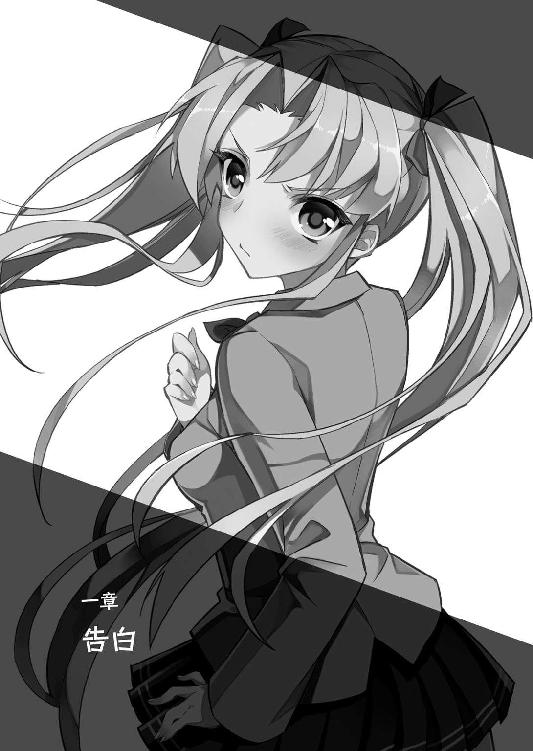
一章 告白
「熱はないみたいね。これならそろそろ意識も......」
呼吸に合わせ、頭の芯を金槌で叩かれているかのような鈍痛が襲ってくる。
そんな不快な睡眠から少年を目覚めさせてくれたのは――鼻腔をくすぐる蜂蜜のように甘ったるい匂いと、額を撫でる絹のように柔らかな手の平の感触だった。
（俺、今、どうなって？ 確か、食堂で......）
自分が倒れたときのことをおぼろげに思い出しつつ、まるで鉛でもぶら下げられたかのように重い瞼をゆっくりと開く。
その直後、視界に飛び込んできたのは、唇が触れ合いそうな至近距離で自分の顔を覗き込んできている、少し垂れ気味の穏やかな瞳だった。
「み、み、翠さん......!?」
「よかった、目が覚めたのね」
反射的に飛び起きた遼人に合わせて身体を起こした淑女が、ホッと頬を緩める。
息苦しかった胸がスッと楽になり、しつこい頭痛も和らいでいく。見ているだけで心をしみじみと落ち着かせてくれる母性溢れる微笑みに一瞬だけ見とれてしまった少年は、すぐ我に返って周囲を見渡し、状況を確認する。
引っ越してきて数日、ようやく馴染んできた寮の自室。カーテンが開け放たれた窓からは、眩い日差しが差し込んできている。
（あれから朝まで、ずっと気を失っちゃってたのか......）
枕元に置かれていた携帯を確認すると、既に朝というよりお昼前と言った方がいいような時刻。たっぷり半日以上、眠り込んでしまっていたらしい。
（俺、どうしちゃったんだ。昨夜、確か......）
自分を挟んで争う乙女達を見て、それで妙な息苦しさを感じて――。
「男の子は、女の子よりも苦痛に対する耐性がないと聞きますけど......それが、よい方向に働いたのかもしれないわ。普通なら、きっと昨夜の時点で手遅れに......」
呟く声に振り向くと、目元の泣き黒子が妖艶な雰囲気を漂わせている淑女が、いつになく真剣な表情で何か思案していた。
それを見て、遼人はハッと気づく。自分を看病してくれていた彼女は、今、乙女の破片という奇妙なものが引き起こしている事件の中核にいる、疑惑の人物だったと。
「あ、あの、翠さん！ 一体、これ......」
「ふふっ、心配しなくても大丈夫よ。昨夜はあの後、みんなあなたを気遣って、闘争どころではなくなってしまったから。あなたを誰が看病するかで、少し雰囲気が悪くなってしまったけれど......それも、わたしが『お話』をしたら、すぐ落ち着いてくれたわ」
問いかけを制するように、穏やかで底知れぬ微笑みを浮かべた翠が説明してくれる。
「そう......ですか」
そう言えば、制服姿で倒れたはずなのに、ちゃんと愛用の空色パジャマに着替えさせてもらっている。これもこの世話好きな淑女がしてくれたのだろうか。
看護のためとはいえ、意識がないうちに肌を見られたことが少し気恥ずかしい。
「今朝も、誰が看病するかで少し騒ぎになったけど、わたしが引き受けるということで納得してもらったの。だから、心配しないで......ゆっくり休んで」
「わかりました。......そうします」
自分が原因で巻き起こった争いが、本格化しなかったことに安堵の息を漏らす。
頭と胸の芯に残る鈍痛が少し弱まった気がするが、まだ完全に気は晴れない。
（俺が悪いんだ。俺がはっきりしないから、あのときも......あのときって、いつだ？）
「遼人君、あまり考えすぎてはダメ。今、思い悩んでもただ苦しくなるだけ......お料理の味付けにも考えごとにも、タイミングというものがあるわ」
うつむき、深く悩み始めた最中。そう優しく諭すように語りかけてきた淑女が、遼人の前にスープの入った小さなカップを差し出してきた。
「これを飲んで、少し落ち着いた方がいいわ。お腹、空いているでしょう？」
「は、はい......」
言われるままカップを受け取り、程よく湯気の立っている中のコンソメスープを一口啜る。料理好きが高じ、理事長室にまで厨房を作っている彼女のことだ。出来合いのものではなく、ちゃんと自分で出汁を取ったのだろう。旨味がしみじみ口内に染み渡り、疲れた身体に少し活力が戻ってきた感じがする。
「美味しいです、これ......凄く」
「ふふっ、美味しく食事ができるということは、身体が元気になってきている証拠よ」
スープを味わう少年を、傍らで優しく見守ってくれている翠。垂れ気味の目を少し細めたその表情からは、嘘偽りなく自分を気遣ってくれている、深い優しさが伝わってくる。
（でも、翠さんが犯人......なんだよな。紗々羅のこととか）
絶対に悪人とは思えないこの淑女が、妹の事件の首謀者であることは本人が告白した事実。乙女の破片の力で生み出された魔物が主人公の力で倒された後、そこに残る種を集めているという事実から推測して、他の件にも彼女が関与している可能性は高い。
「翠さん、あの......」
「どうかしたの？ まだ気分が悪い？」
少年を制するように、艶やかな学園長がベッドに腰を下ろして身体を寄せてきた。
いつも着ている愛用のスーツ。わずかに開いた胸元から覗く、対の雪山のように白く大きな乳房が、わざとらしく二の腕辺りに押しつけられる。
むにゅりっ。そんな音が聞こえそうなくらい、柔らかく弛んで形を変えていく。その温もりともっちりとした弾力感に、思わずゴクリと生唾を飲んでしまった。
「看病......しましょうか？ あまり余計なことを考えなくて済むように、少し身体を動かして運動した方がいいかもしれないわ。しっかりと汗をかいて......ね？」
ふぅっと小さく耳たぶに甘い息を吹きかけられると同時に、淑女の右手が自然と股間へ伸びてきた。目覚めた直後だというのに――いや、だからこそか。少し硬くなってきていた屹立が、円を描くような動きでズボン越しに撫で回される。
時折、爪を立てられて、まるで中が透けて見えているかのように、雁首や鈴口の敏感な部分を強く刺激され、剛直は否応なしにますます勢いづいてきてしまう。
「んぁっ、あっ、あの、翠さん。こんな......」
「ここが元気なのは、具合がよくなってきている証拠ですから。だから......ね」
身体を軽く上下に滑らせ、双乳で挟み込んだ二の腕を優しく擦る。まるで屹立への胸奉仕を思わせる動きに、撫で回される股間が自然と甘く疼き始めてしまった。
「遼人君、いい子だから、おねんねしましょうか。ふふっ、そうしたら......」
「ど、どうしてなんですか！ 何で、翠さんは......こんな......」
流されそうになる瀬戸際、遼人は理性をかき集めて、その誘惑を振り払う。
先日、浴室でしてもらったように。このまま優しく妖艶な学園長にたっぷりと甘やかしてもらいたい。だが、それではまた疑念を感じたまま学園生活を送ることになる。
一時の快楽と引き替えにするには、大きすぎる代償だ。
「翠さん、お願いだから教えてください。一体、何を考えて......」
「......守りたいからです」
さすがに、もう誤魔化せないと悟ったのだろう。憂いを帯びた悲しげな笑みを浮かべた淑女は、そう一言呟きながら身体を離した。
「守りたい......？」
「遼人君、結果的にあなたや多くの子を巻き込み、利用してしまっているのは事実です。でも、そうしてでも成し遂げなければいけないことがわたしにはあるの。数百年の時を経て続く呪いから乙女達を......あの人の忘れ形見を救うという目的が」
切々と語る翠は、いつものおっとりとした優しいものとはかけ離れた、強い意志を感じさせる厳しい表情に変わっていた。
今までに見たことのない淑女の姿に威圧され、遼人は何も言えなくなってしまう。
「お願いします、遼人君。もう少しだけ、わたしを信じて......『主人公』を演じ続けてくれませんか。あなた自身と、あなたが大切に想う乙女達のためにも」
そう言い残すと、翠はちょうど空になった遼人の持つカップを受け取って立ち上がる。
「み、翠さん......それって、あの......」
「罪は必ず償います。すべての乙女が救済された......その後に。だから......」
少年の問いかけに振り向くこともなく、翠はそのまま部屋を出ていく。
いつも超人然とした落ち着きを見せていた学園長が、初めて覗かせてくれた苦しげな胸の内。誤魔化しではなく、本心だとはっきりわかる態度だっただけに、遼人は後を追って更に問い詰めることもできず、ただ黙って見送るしかなかった――。
「主人公を演じ続ける......乙女達を救うために......」
それから小一時間。再び疲労を覚えてベッドに横たわった遼人は、淑女が言い残した願いを何度も反芻して呟き、そこに隠された意味を考え続けていた。
どうしても彼女が悪人と思えないのは、そのおっとりとした美しさに魅了されているわけではないと思う。先程見た真剣な表情は、間違いなく本物だった。
（あの人の忘れ形見って、どういうことなんだろうな。もっとはっきり言ってくれなきゃわからないこと......だらけで......）
まだ体調が完全ではないせいか、寝転んだまま考えているうちに意識が少しずつ遠のいてきた。いつしか再び眠りに落ち――どれくらいの時間が過ぎただろう。
「まだ、寝てる？ ......大丈夫......なの？」
少し不安げな呟きと共に、再び額に柔らかな手の平が当てられた。
また翠が様子を見に来てくれたのだろうか。だが、手の平の感触は先程のものとは少し違う。一回りほど小さく、少しひんやりと心地よい。何より、ほのかに漂ってくるラベンダーのように爽やかな香りが懐かしさを感じさせてくれる。
うっすらと目を開けてみると、視界に飛び込んできたのは、少年の顔を心配そうに覗き込んでいる――金髪ツインテールの幼馴染みの顔だった。
「......美緒」
「ふぇっ!? なっ、お、お、起きてるなら、そう言いなさいよね！ エッチ!!」
「エッチって、何だよ、それ。......というか、勝手に部屋に入ってきたのはそっち......」
「仕方ないでしょ！ ノックしても返事なかったし、起こすのも悪いと思って......」
少年の抗議に、いつも強気な幼馴染みは意外とあっさり引き、気まずそうに視線を泳がせながら、もごもごと小声で言い訳を始めた。
普段なら、こちらが折れるまで理不尽に怒られるパターンなのに、珍しい。少し怪訝に思いながら身体を起こし、ふと枕元の携帯に目をやる。
「あれ、まだ授業終わってない時間だよな。どうして、ここに居るんだ？」
時刻は昼下がり、学園では午後の授業の真っ最中のはずだ。
「そ、それは、あの......違うのよ！ あ、あたしは別に、あんたのことをそこまで心配してたわけじゃない！ うん、そんなに過保護じゃないんだから!!」
「それなら尚更......」
「ただ、周防さんがね、その......『今、学園長だけに涼邑君を任せるのは、何だか不安な気がする』って、あたしに言ってきて......それで......」
美緒は頬を少し桜色に染め、落ち着かない様子で身じろぎしながら説明する。
「......なるほど」
その言葉に、遼人も納得して小さく頷き返す。
すべての黒幕と自ら告白した翠のことを疑ってしまうのは、仕方がないことだ。
「それで、具合はどうなの？ 学園長に、何かされなかった？」
「具合は......まあ、もう大丈夫かな。翠さんとも、問題ない。何が目的なのか、はっきりとは聞かせてもらえてないけど......でも、悪い感じはしなかったよ」
「そう。でも、油断しちゃダメよ。だって、遼人の妹ちゃんに乙女の破片を植え付けたのは、あの人なんだから。他にも、無茶なことしてるかもしれないし」
「それは、そうだけど......」
ベッドの端に腰を下ろし、少し吊り目気味の瞳に厳しい光を浮かべる美緒。人を前にした野良猫のように警戒心剥き出しの姿に苦笑しつつ、ふと昨夜のことを思い出した。
「そう言えば、美緒、昨日の夜だけど......」
いつになく弱々しく沈み、逃げるように食堂を飛び出した。そんな彼女を追いかけようとした刹那、胸の痛みが強くなって気を失ってしまったのだ。
あの後、大丈夫だったのだろうか。今更ながら、心配になってくる。
「ゆ、ゆ、昨夜？ あれは、えっと......あの......」
「......ごめん。俺が悪かったんだよな」
「な、何よ、それ！ 別に、遼人が謝る必要はないでしょ!! お門違い！」
「だってさ、原因は俺だったんだし......」
全員が本気だったかどうかはともかく、口々に自分への好意を訴える少女達の争いだったのだ。それを改めて思い出すと、また昨夜と同じように胸の奥を針で突かれるような鋭い痛みが、断続的に蘇ってきた。
その異変に気づかれて余計な心配をかけないよう、努めて平静を装おうとする少年の傍らで、ツインテールの幼馴染みが少し呆れ顔でため息を漏らす。
「そういう気弱でお人よしなところ、本当に昔から変わってないわね」
「そ、そうかな？ 昔か......美緒は、結構変わったよな」
「にゃ!? ど、ど、ど、どういう意味よ、それ！」
何気なく呟いた一言に、幼馴染みのツンデレ少女が異様なくらい取り乱す。
「いや、言葉どおりだけど。一応、少し丸くなった......というか」
今でも我が道をいく女王様タイプの少女だが、幼い頃、公園に集まる子供達の支配者として君臨していた彼女は、もっと近寄り難い恐ろしさを漂わせていた気がする。
「あの頃の美緒、本当に怖かったからなあ。というか、俺、今でもトラウマが......」
「う、うるさいわね!! それは、その......仕方ないでしょ！」
別に責めるような口調ではなく、しみじみと思い出話をするように呟いた少年へ、顔を真っ赤にした美緒が言い訳がましく反論を始める。
「だって、遼人が全然わかってくれないから！ だから、イライラしちゃったし、それに......あたしの方をとにかく向いて欲しくて。その、こ、子供って、わかって欲しいから、ついいじめちゃうことってあるじゃない！ よく聞く話!!」
「へっ？ わかって欲しいから？ よく聞く話って......？」
このツンデレ少女は、一体、何を言いたいのだろう。意図がさっぱり読めずに首を傾げている遼人へ、美緒が少しヤケクソ気味の口調で叫ぶ。
「だからっ!! き、気持ちに気づいて欲しく......ああ、もう！ 昨夜もそうだけど、どうしてそう、自分に向けられる好意に鈍いのよ!! 鈍感ってレベルじゃないわ！」
「好意......鈍感......っ......」
幼馴染みの厳しい一言に合わせ、胸に感じていた鋭い痛みがズキンッと強くなった。
まるで古傷をナイフの先で抉られたような、呼吸もままならぬ激痛。瞬く間に顔から血の気が引き、胸を両手で押さえたまま前のめりに伏せてしまう。
（そうだ、鈍感だから......あのときも、俺が気持ちに気づけなくて、それで......）
「りょ、遼人!? ちょっと、どうしたの！ しっかりして！」
蘇りかけた暗い記憶の海に沈みかけた少年を、美緒の悲痛な叫び声が呼び止める。
「美緒......俺......はぁ、はぁ......」
今にも泣き出しそうな表情で見守る、ツインテールの幼馴染み。その顔を見ていると、おぼろげな記憶がますます鮮明になってきた。
昔もこうして、彼女や......もう一人の幼馴染みを泣かせてしまったことがある。
自分が鈍感で、情けない男だったから。すべては、そのせいで......。
（ダメだ、考えちゃ。このままだと、俺......）
何か胸に黒いものが込み上げてくる予感が脳裏を過ぎり、先程翠から告げられた意味深な助言を思い出す。大きく深呼吸をして、蘇りそうな記憶を底の方へ押しやる。
近い将来、向き合わなければいけないことだと本能的に察するが、今、傍に居る幼馴染みにこんな辛そうな表情をさせてまで、思い出すことではないはずだ。
「大丈夫なの、遼人？ ごめん......あたし、余計なこと言った？」
「そうじゃない。だ、大丈夫......だから。ははっ」
「あたし、こういうことばっかり。......資格がないって言われても、仕方ないよね」
珍しく弱気な口調で呟き、がっくりとうなだれる美緒。
いつも前に立って自分を引っ張ってくれる元気な少女の意外な姿に、遼人は胸の痛みも吹き飛んでしまうくらい驚き、慌ててしまう。
「何を、そんな大げさに言ってるんだよ、美緒。資格って......」
問いかけようとして、昨日、自分が気を失う直前のやり取りを思い出す。
『この争いに参加できるのは、遼人に対して愛を告白した乙女だけ』
それぞれに言い方は違ったが、それがツンデレ少女以外の乙女達の意見だった。
「あの、美緒。それはつまり、その......」
「いじめて気を惹こうとしたり、あんたに近寄る女の子に嫉妬したり......そういうやり方ばっかりで、素直に気持ちを伝えられなかった。ツンデレ......キモい呼び方するなって、いつも抗議してたけど......あたしって本当、そういう面倒な性格よね」
自嘲気味に呟いた金髪ツインテールの少女は、呟きながら自らの手で目元を拭い、意を決したように改めて遼人の方を振り向いた。
先程までの弱気は消え、いつものように前向きな光が宿った、少し吊り気味の瞳。
頬はほのかに上気し、桜色の唇が程よい湿り気を帯びて、健康的な魅力を醸し出す。
ドクンッと鼓動が跳ね上がる音を聞きながら見とれてしまっていた――その刹那。
「でも、今日で終わりにする。このまま遼人を取られたら、一生後悔するから」
「美緒、それって......んぁっ、んんっ!?」
問いかけようと開きかけた唇が、迫ってきたツンデレ少女の小さな唇で塞がれた。
ふわりと柔らかくて甘い、コットンキャンディのような感触。
彼女の唇を味わうのは、これが初めてというわけではない。
だが、今までは主人公の力を使った代価という、正当な理由があったからだ。
そうではない、ただ想いを伝えるためだけの純粋な口づけは、初めて彼女と唇を重ねたときと同じくらいの驚きと、目眩がするほどの昂りを感じさせてくれた。
舌を絡ませるわけでもない、本当に唇を接触させるだけの、挨拶のようなキス。
無限にも感じた数秒の後、それがゆっくりと離れた直後、遼人はガバッとバネ仕掛けの人形のような勢いで飛び起き、照れくさそうに頬を染める幼馴染みを見つめた。
「み、美緒、今の......その......キス......」
「好き。......昔からずっと、あたしは遼人が好きだった。今も、気持ちは変わっていないわ。どう？ これだけはっきり言えば、鈍感なあんたでも誤解しようがないでしょ！」
ぶっきらぼうに、少し乱暴な口調できっぱりと言い放つツンデレ少女。
彼女の言うとおり、意味の取り違えようのないストレートな告白に、遼人は酸欠の金魚のように口をパクパクと開閉させ、絶句してしまう。
何も感じていなかったとは言えない。だが、いじめっこのイメージがあまりにも強すぎた。乙女の破片の副作用である異様な競争心の高まりのせいで、自分に対して積極的に迫る詩音に対抗しているだけ。そんな風に思い込んでしまっていた。
だが、今、目の前でその小さな肩を震わせ、熱っぽく潤んだ瞳で見つめてくる美緒を見ていると、今の告白が真実だと心の底から実感できる。
「そんな、美緒......俺......」
「べ、別に返事は今じゃなくていい。優柔不断なあんたが、即答してくれるなんて初めから期待してないし！ ......ゆっくり、考えてくれればいいから」
言いよどむ遼人を気遣うように少し早口でまくし立てた直後、ツンデレ少女は意を決したように苺色に染まった唇を噛み締め、少年の胸に身を投げ込んできた。
「ただ、一つだけお願い......聞いて。やり直しさせて欲しいの、あたしの......初めて」
緊張しているのか、頬がピクピクと引きつってしまうくらい顔を強張らせ、顔を覗き込むようにして訴えてくる金髪の幼馴染み。
その言葉の意味を察した遼人は、彼女と同じように顔を強張らせて絶句する。
「初めて......それ、あの......」
この状況で言う『初めて』は、初体験――肌を重ねること以外にはない。
「だって、寂しいもん。好きな人との初体験が、代価のためなんて。ちゃんと一人の女の子として、純粋に......好きな男の子を感じたい。一生の思い出にしたいの」
「でも、俺......」
「それで、あたしを選べなんて言わない！ 本当なら、いけないことだろうけど......もうしちゃってるんだから、仕方ないでしょ!! 思い出作りだと思って！」
即答できずに戸惑う遼人へ、美緒は頬を瞬く間に濃い林檎色へ染めながら、何度も繰り返し懇願してくる。いつの間にか腰に回されていた手に力が入り、ためらいもなく胸板に押しつけられた形よい乳房が、プルプルと瑞々しい弾力を感じさせてくれていた。
ツインテールの髪から漂うラベンダーの匂いが、いつもより鮮やかに感じられる。
口を開くと、そこから心臓がすぐ飛び出してしまいそうなくらい鼓動が高鳴り、身体の芯が燃えているかのように熱くなってきた。
既に肌を重ねたことがある関係だというのに、初めてのときと変わらないくらい緊張してしまう。想いを伝えられただけで、こうも新鮮に感じてしまうなんて不思議だ。
「お願い、遼人。ちゃんとした幸せな初体験......あたしにプレゼントして」
涙の雫が火照る頬を伝って流れ落ち、首筋の辺りまで濡れてしまっている。普段強気な分、より儚い印象を強く感じる美緒の懇願に、遼人は軽く唇を噛んで気持ちを固めた。
美緒に指摘されたとおり、まだ気持ちがこんがらがって即答はできない。
それでも、この真っ直ぐな願いをはね除けて、彼女を悲しませたくないと思う。
「美緒、俺、まだ返事はできない。でも......」
「んっ......いい。無理を言ってるの、あたしだもん。だから......」
もう、言葉はいらない。そんな想いを伝えるように自ら少年の膝上に腰を下ろし、そっと瞳を閉じた幼馴染みに応え、遼人はそっと唇を寄せていった。
「ふぁっ！ んふぅっ、あぁっ、遼人ぉ」
まずは先程と同じように、その温もりや柔らかさを確かめるように優しくそっと重ねる。朱に染まった顔を間近で眺め、火傷しそうなくらい熱くなった唇を感じていると、早くも身体が震えてしまうほど、不思議な喜びが背筋を駆け上ってきた。
「美緒、えっと、し、舌も......」
「はむっ、はぁ、ま、任せる。あたし、もう頭ぼーっとしちゃって......はふぅっ、んっ、何も考えられなく......なって......はぁ、んはぁっ、ちゅっ、んっ」
まるで小鳥が餌を啄むように、少年の唇へ短い間隔で淡いキスを繰り返しつつ、ツンデレ少女がうっとりとねだってくる。
緊張のあまり真一文字に結ばれていた唇もためらいがちに綻び、その隙間からわずかに顔を覗かせる苺色の舌先が、せがむようにチロチロと上下に動いていた。
「わかった......んっ、俺に任せて......はむっ、ちゅっ、はぁ、れろぉっ、んふぁっ」
頭が真っ白になるくらい緊張しているのは、遼人も同じ。だが、こういうときは強がってでも男がリードしてあげなければならない。
そんな使命感にも似た気持ちに心を奮い立たせながら、幼馴染みの舌を自らの舌で優しく搦め捕り、唾液を分かち合うようにねっとりと擦り合わせていく。
「むふっ、んぁっ！ りょぉ......と......んちゅっ、ちゅっ、はむぅっ、ふぁあっ」
「はぁ、はぁ、んぐっ、美緒......何だか唇、凄く甘い。さっきより......」
「はひぃっ、ひんんっ、ああっ！ わ、わかんない。あらひぃ......もぉっ、れろぉ、遼人の舌、熱くて......んふっ、はぁ、と、溶けちゃうみたい......じゅるぅっ、はむぅ!!」
甘く上擦る少女の声と共に、舌先に練乳のように濃厚な甘さが染み込んでくる。
もっと味わいたい。そんな衝動に促されるまま、ピチャピチャと小さな水音を響かせながら舌同士を擦り、更に少女の口内深くまで突き進めていく。
「はひぃっ、んんっ、あぁ、もっと......いっぱい......口の中、遼人でいっぱいにぃ」
鼻にかかった甘い声と共に、腰に回されていた右手が背中伝いにゆっくりと這い上がってきた。肩まで届いたところで今度は腕を撫でるように下へ滑り、指が何かをねだるように少年の手の平へ絡みついてくる。
少し悩んだ後、手を繋ぎたいと言っているのだと悟った遼人は、幼馴染みの求めに応えて手の平を正面から重ね、指同士をそう簡単には離れないようにしっかり絡めてやる。
「ふぁふっ、んっ......いい、こういうの。くっついて......ちゅっ......キスして」
「うん、んっ、はぁ、ちゅっ、くっ、はぁはぁ......はむっ」
キスの合間に美緒が嬉しそうに呟き漏らしたとおり、ただこれだけのことで場の空気が蜂蜜を塗したかのようにトロリと甘ったるくなってきた。
「ちゅぱぅ、はぁっ、美緒の舌、甘くなって......んふっ、れろぉっ、ちゅぱぁっ」
「はひぃっ、ん、遼人も......んぁっ、何で、こんなに甘いの......おかひぃっ、こんな......ちゅっ、はぁ、ふ、不思議......れろぉっ、んぐぅっ、ちゅっ、んんんっ!!」
自然と舌の動きも活発になり、唇の隙間から卑猥な水音が大きく鳴り響く。
絡みつく舌はじっとりと熱く火照り、吐息も荒く切れる。
身体を起こしているのも辛いのか、ぐったりと少年の胸板にもたれかかってきた。
「んっ、ちゅっ、遼人、そろそろ......いい。キス以外も......んちゅっ、んっ」
唾液の糸を引きながら一度唇を離した美緒が、潤み輝く瞳で遼人の顔を見上げ、少し恥ずかしそうな小声でねだってきた。
同時に身体が小刻みに揺さぶられ、胸元の隆起が優しく胸板へ擦りつけられる。
（さ、触って欲しいってことだよな。......そうだよな、初体験のやり直しなんだから、キスだけじゃなくて、愛撫とか、そ、その先も全部......）
改めてこれからすることを脳裏に思い浮かべると、反射的に生唾を飲んでしまう。
何だか本当に、初体験を思い出させる緊張感。遼人は美緒と繋いだ左手に少し力を入れつつ、空いている右手をゆっくりと彼女の胸元へ伸ばしていく。
（まず、ボ、ボタン......ブレザーと、シャツの！ それと、ネクタイも......）
半ばパニックになりつつ、遼人はじっと愛撫を待つツンデレ幼馴染みの胸元をまさぐって、その中に隠されている双乳を露出させようと一生懸命になる。
だが緊張しているせいなのか指が上手く動かず、ボタン一つ外すのも大仕事。
ネクタイを解こうとしたときには引っ張りすぎ、軽く彼女の首を絞めた。
「んぁっ、んっ......遼人、ゆっくりで大丈夫だから」
「うん。......ごめん、何か、上手くできなくて......」
「いいわよ。だ、だって......初めてだもん。戸惑って当然！ それが普通!!」
そう落ち込んでしまった遼人へ、美緒は恥ずかしそうに視線を泳がせつつ、いつもより少し早口にフォローの言葉を投げかけてきた。
「そ、そうだけど......でも、俺は......」
「遼人も初めてのつもりで！ 別の女の子とした経験、生かされても......嬉しくない」
言い聞かせるように、少し充血した瞳で少年を見上げて訴える美緒。
その言葉に美緒の複雑な想いを悟った遼人は、ただ小さく頷き返した。
（初めて......美緒がそう言ってくれているんだから）
上手くできなくても、当然。それで大丈夫。
そう思うと気が少し楽になり、指もスムーズに動くようになってきた。
手間取っていたボタン外しもはかどり、そう時間もかからず金髪少女の胸元をすべてはだけさせて、ブラジャーのフロントホックも一発で外し、双丘を露出させる。
「はぁっ、んっ......あぁ、む、胸......見えちゃってる......」
「うん。美緒のおっぱい、綺麗だよね。お椀型で......乳首が桜色で......」
「ふぁっ、あ、あんまり言わないでよ、バカ遼人......見られてるだけでも、恥ずかしくて頭がおかしくなりそうなのに。もう......はぁうっ、いじわる、ちゅっ、んんっ」
少年の口を封じるように、美緒は背伸びをして再び唇を押しつけてきた。
その心地よい接触と、舌に絡みついてくる甘い味わいに胸を熱くしながら、遼人は早速右手をあらわになった隆起へ伸ばしていく。
絹のように、白く滑らかな乳肌。まずは指先を立てて、その表面をくすぐるように軽く撫で回してから、瑞々しい弾力を楽しむように食い込ませる。
「くふぅっ!! ひぅんぅっ、んちゅっ、はぁぅっ、胸、くすぐったい......んっ！」
「くっ、んっ、はぁはぁ......まだ少ししかしてないのに。美緒、敏感だよね」
「し、知らない、そんな......言われても、あたし......んちゅっ、くふぁあっ」
小さく首を横に振りながら、遼人と繋いだ手にギュッと力を入れて訴える美緒。
頬を染めた朱色も更に濃くなり、重ねた唇から漏れる吐息もより熱くなってきた。
その感じ方が、何だか褒めてもらっているような誇らしい気分を味わわせてくれる。
もっと悦ばせたい。込み上げてくる想いに背を押され、遼人は右手で幼馴染みの乳房を包み込み、大きく回すようにマッサージを始めた。
「ひぃっ、はぁ、ひふぁっ、あんんんっ！ 遼人ぉ......そ、そこ......はひぃっ、はぁ、はんんっ!! 胸......いっぱい、くふっ、はぁ、ジンジン痺れるぅ、んんんぅっ!!」
指が深く食い込んで、お椀型の乳房をグニャリと潰す度、重ね合わせた唇が反射的に離れて、そこから甲高く掠れた嬌声が漏れる。
生クリームを塗ったかのように白一色だった乳肌もほのかに色づき、手の平の中央に当たっている肉粒はツンと硬く尖り、小さく痙攣を始めた。
「乳首も弄って欲しいって、おねだりしてるみたい。......ここもしていいよね」
「ふぁっ、んっ、い、一々聞かなくても、任せる......んふぁぅっ、ひぃぃっ!?」
美緒の返事を聞く前に、遼人は指の隙間で尖る乳首を挟み込み、根元の部分を緩急つけて締めつけた。残りの指で火照る隆起を揉みしだき、休む間も与えず刺激する。
「りょ、りょうとぉっ、はんぅっ、そんな、おっぱい......するのぉ......んくぅ、はぁ、あたし......変......熱くなりすぎて、もう......くふぅっ、ふぁっ、あんんっ！」
繋いだ方の手に痛いくらい力を込め、切々と訴える金髪ツインテールの少女。
重なった手の平も、揉み解す乳房も、細かい汗の粒でじっとり湿ってきていた。
啄むように繰り返し接触させている唇も、もう茹だったように熱くなっている。
少年を見つめる瞳も恍惚と蕩け、今にも気を失ってしまいそうな感じだ。
（そろそろ大丈夫......かな。......焦らすと、可哀想だ）
心の中で呟きながら、遼人は少し名残惜しさを感じつつ、吸いつくほどしっとりとした乳房から右手を離す。そのまま彼女のほっそりと引き締まった脇腹を伝って手の平を下に滑らせ......スカートから伸びた眩しい太股を撫で回す。
「きゃふぅっ!! りょ、遼人、あの......んふっ、はぁっ、くんっ！」
次にどこを責められるか悟ったのか、ツンデレ少女はボーッと緩んでいた頬を引き締めて、少し緊張したように声を震わせる。
「んっ......任せて、美緒。優しくする......ちゃんと......」
遼人はそんな幼馴染みを落ち着かせるように優しいキスを繰り返しながら、太股の付け根の方まで手を滑らせ――大切な部分を包み隠している薄布の中央を、指先で突いた。
「ふぁああっ、んふぅっ、はぁっ、ひぅんんんっ!? そ、そこぉっ、ふぁあぁっ」
直後、美緒は大げさなくらい背筋を仰け反らせ、甘ったるい嬌声を漏らした。
同時に布地からトロリと熱い液体が滲み出て、少年の指を伝って垂れる。
独特の甘酸っぱいラズベリーのような匂いのそれは、見て確かめるまでもなく愛液。
既にショーツの薄布では止められない量の蜜が、割れ目を湿らせているようだ。
「美緒、もうトロトロになってる。ショーツ、びっしょりだ......」
「だ、だって......嬉しいからぁ......やっと、素直に好きって言えて......遼人にちゃんとしてもらえるの、嬉しく......んふっ、はぁ、幸せ......ちゅっ、んふぅっ、ああんっ」
言葉の合間にチュッと軽いキスを混ぜながら、切々と訴えるツンデレ少女。
長い付き合いである遼人でも初めて見る、真っ直ぐ気持ちをさらけ出したその姿は、その細い身体が折れてしまいそうなくらい抱き締めたいと思うほどに可愛らしい。
加速する鼓動に合わせて下腹部に熱いものが込み上げ、パジャマのズボンから飛び出してしまいそうな勢いで屹立が勢いづいていく。
「りょ、遼人も......元気になってるじゃない。さっきまで、体調悪くて寝てたくせに」
「仕方ないだろ！ こんな......元気になるなって方が無理だよ。俺、もう......」
「あたしも。もう......大丈夫だから。胸がドキドキして、身体の奥まで疼いてきちゃってる......遼人と一つになりたくて、我慢できないくらい」
指を絡めた手を引っ張るようにして少年を抱き寄せたツンデレ少女が、上目遣いで甘く誘いかけてくる。ショーツ越しに溢れる愛液も、その言葉に合わせて増える一方。そこを突く遼人の指の付け根から手の平まで、びっしょりと濡れ塗れてしまっている。
これだけ濡れていれば、ここを解す必要はもうないだろう。遼人は昂りと緊張を生唾と共にゴクリと飲み込みながら、じっとりと濡れ張りついてしまっている股布を少しずつ横にずらし、柔らかく盛り上がった蜜裂を露出させた。
「美緒、それじゃあ......」
「うん。あの......こ、このままでいい？ ずっと、こうして遼人にギュッと抱いてもらったまま感じたいの。手も繋いだまま......離れたくない......」
さすがに甘えすぎだと恥じているのか、視線を逸らしてねだってくる幼馴染み。
その健気で愛らしい姿に自然と頬を綻ばせながら、遼人は言葉で返す代わりに、彼女の赤く染まった頬へ唇を押しつけ、小さく頷き返した。
「いくよ、美緒。初めて......やり直そう」
「んっ、して。いっぱい......遼人のこと、奥まで感じたい...」
向き直り、改めてねだってくるツンデレ少女に応え、遼人は彼女の愛液で濡れた右手で自らの肉槍を取り出すや否や、それを濡れ綻んだ割れ目の中央へ押しつけていった。
――ズプゥッ、ヌプリュルルルルゥッ、グブプッ、ヌリュルゥ!!
「くふぅっ、んぅ、あぁっ、ひふぁあああっ！ いぃっ、き、きてるぅ、遼人の......遼人の熱いの、お腹......んふぅっ、お腹の奥まで届くのぉっ、んふっ、ああー！」
腰を軽く突き上げ、濡れた粘膜肉が押し分けられる卑猥な水音を響かせながら、剛直を小柄なツンデレ少女の膣壺へ沈めていく。
待ちわびていたかのように、入口から奥へ向かって波打つ肉壁。その動きに促されるまま、屹立はあっという間に奥深く、子宮口の手前まで突き刺さってしまった。
「くんぅっ、はぁっ、い、いっぱい......遼人でお腹いっぱいになって......はふぅっ」
「うん、全部入った......何か、美緒の中、きつ......くっ、うぅっ」
「いぃ、これ好き......んふっ、遼人、好き......んくぅっ、ふぁんっ、うぅっ！」
声が途切れる度、ギュッギュッと音が聞こえそうな強さで収縮し、肉槍を締める。
ツンデレ幼馴染みの指摘どおり、この甘い雰囲気に促されて遼人も普段より興奮しているせいもあって、その圧迫感は腰を振り動かすのも困難なほど。
まさに初めてを彷彿とさせる、息苦しいくらいの締めつけだ。
「遼人......動いて。大丈夫だから......いっぱい、奥まで遼人のこと感じたい」
「うん、ゆっくり動くから。苦しかったら言ってね」
本当に初めてのときと同じようなやり取りを交わした後、遼人は甘い痺れを感じている腰に力を込めて、ゆっくりと抽送を始めた。
幼馴染みの小ぶりな尻房を跳ね上げるように腰を突き出し、肉槍の先が行き止まりの子宮口に衝突した反動で一気に引き戻す。
壁面で蠢いている皺を引っ掻き、剛直を離したくないと言わんばかりに窄む穴口を卑猥な形に捲る雁首。そこを中心に思わず顔を顰めてしまうほどの強い快感が走り、腰使いが意識しなくても自然と加速していってしまう。
ヌッチュゥッ、ズプリュゥッ、ズブブブゥッ！
「ひぅんっ、はぁ、ふぁんぅっ、あああっ！ りょぉ......と......んふぅっ、ああっ、いいよ......中......お腹の中、遼人の形にされてるぅ......覚え込まされてるぅっ!!」
胸板に縋りつくようにして喘ぎ悶えるツンデレ少女は、火照る頬を込み上げてくる喜びに緩め、絶え間なく甘く甲高い嬌声を漏らしていた。
リズミカルな抽送で彼女の肢体を揺さぶりながら、遼人はそんな幼馴染みの顔にしみじみと見とれ、思わず深いため息を漏らしてしまう。
「......可愛いね、美緒」
「はぅっ、んぅっ、な、何よ、急に......んくぅっ、はぁ、それじゃあ、あたしが普段は可愛くないみたい......じゃない......はんっ、はぁ、あふぁあっ！」
「い、いや、そうは言ってないけど......でも、普段はその......怖い印象が......」
抗議してきた幼馴染みに、遼人はつい反射的に本音で返してしまう。
小さい頃のトラウマが根強く残っているせいか、この金髪ツインテールの少女には、そういう恐怖心や苦手意識を拭えない部分が大きいのは、否定できない事実だ。
「怖い......んっ、あたしが？ はぁっ、あんぅっ」
遼人の言葉に思うところがあったのか、ツンデレ幼馴染みはその吊り気味の目を伏せ、何か思い詰めたように考え込み始める。
余計なことを言ってしまった、そう反省した少年がフォローするよりも早く――。
「それなら......んふっ、も、もう怖いって思わなくなるように......はふぅっ、し、し、仕返し......していいわ。あたしに......昔、いじめちゃってた分」
「へっ？ い、いや、仕返しって。あの、今、そんなことは......」
「いいから！ あ、あたしも反省してるし......んぅ、こういうときでもできるお仕置きって、色々あるでしょ。例えば、お、お尻とか！ だから、ね？」
ためらいがちに呟く美緒が、遼人の背中をポンッと軽く平手で叩く。
お尻を、こうして欲しい。まさか、そういう意味なのだろうか。
（そ、そりゃ、そういうエッチもあるのは知ってるけど！）
いきなりの申し出に戸惑う少年だったが、罰を与えられることを望むツンデレ少女は、早くも意を決したように唇を一文字に結び、じっとこちらを見上げてきていた。
ここで下手に気を遣うと、逆に彼女を傷つけてしまうかもしれない。
（あの美緒にお仕置きとか......現実じゃない）
幼い頃のことを思い返しつつ、しみじみと心の中で呟きながら、覚悟を決めた。
今はただ、この可愛らしいツンデレ少女の望みに応えてあげたい。その想いだけが、胸いっぱいに込み上げてきている。
「いくよ、美緒。お仕置き、するから......くぅっ、んんっ！」
そう囁きながら彼女の腰に回していた右手を滑らせ、捲れたスカートの中、自らの膝上で繰り返し弾んでいた小さな尻房を掴む。
しっとりと張りのある肌触りを少し楽しんでから、遼人は小さく息を吐き、おもむろに片方の尻たぶめがけて平手を振り下ろした。
――パチィィィィィィィィィィンッ!!
「ひぃっ、くんっ、うっ！ あっ、あひぃっ！」
乾いた打撃音が響くと同時に、金髪の幼馴染みの声が熱く上擦る。
肉幹を包む膣内が狂おしげに収縮し、壁面から大量の熱液が滲み出てきて、茹だるような中の熱気が一層高まってきた。
「くふっ、んんっ！ いぃっ、はぁ、遼人、はふんんっ、うぅっ!!」
「あ、あの......強かったかな？ 大丈夫か、美緒？ 凄く、声が苦しそうに......」
「平気よ、お、お仕置き......なんだから。もっと......んふっ、はぁ、んんっ！」
気遣う少年の顔を見上げ、美緒は小さく首を横に振って答えてきた。
未だ絡めたままの指にも力が入り、もっとして欲しいとねだっている。
少し弱々しく潤んだ瞳が、何だか妙に可愛らしく、思わず見入ってしまう。
「それじゃあ、もっと......」
背中から頭の芯まで痺れてしまいそうな興奮を噛み締めながら、遼人は望まれたとおりに何度も立て続けに平手を打ちつけていく。
パチンッ、バチンッ、バチィィィンッ！
「ひぐっ、くんんっ、んんっ！ あふっ、お、お尻......熱い......はひぃっ！」
右、左。双方の尻たぶを打つのに合わせて、膝上で震えるツンデレ少女が甘く喘ぐ。
平手に伝わってくる熱感が高まっていることから察するに、白い尻肌は少しずつ腫れて赤く染まってきているはず。それでも彼女の口から、制止の言葉は出ない。
むしろ喜ぶように腰が左右へ激しくくねり、抽送を激しくしてきているほどだ。
「美緒......もしかして、感じてる？ お尻......」
「にゃぅっ!? にゃっ、んっ、そ、そんな......あたし、お、お仕置きだから我慢してるだけよ！ そんな、べ、別に前から興味あったとか、ちょっと趣味に目覚めそうとか、そういうことは少しもない！ まったくないんだから......んはぁっ、んんっ!!」
早口で言い訳がましく訴える、ツンデレ幼馴染み。
だが休みなく痙攣し、大量の愛液を滴らせている膣内の反応から察するに、少なくともこの背徳的な行為を嫌悪していないのは間違いない。
照れて素直に認められず、視線を泳がせる。
そんな表情もまた可愛らしく、遼人は自然と頬が緩んできてしまった。
「やっぱり、今の美緒は怖くない。......可愛い女の子だよ」
「んにゃっ、にゃっ、遼人、な......んふぅっ、ちゅっ、むんっ、はむぅっ!!」
金髪の幼馴染みの反論を封じるように、隅々まで唾液で濡れた唇を隙間なく重ねる。
すぐさま舌を挿し入れて絡め合わせると、さっきよりも濃厚な甘みが感じられた。
彼女が甘い快感に浸り、より強く自分を求めてくれている何よりの証拠。そんな風に感じながら、遼人は腰と手の動きを更に加速させていった。
ズップゥッ、ヌチュルゥゥッ！ パチンッ、パンッ!!
「ふにゃぅっ、んぅっ、ちゅぅっ、はぁ、りょぉ......と......んふぅっ、あんんっ!!」
辺りに響く乾いた打撃音と、蜜液塗れの粘膜肉を擦る水音。
あまり強くする気にはなれず、音が鳴る程度に軽く叩くだけのスパンキングだが、それでも打撃に合わせて膣壺は急速に火照り、肉壁が剛直を舐めしゃぶるように蠢く。
もっと深くまで感じたい、感じてもらいたい。そんな思いに突き動かされて腰を振り、今までよりも更に奥――子宮口に亀頭が埋まってしまいそうな勢いで肉槍を突き立てていくと、美緒は長い金髪ツインテールを振り乱し、恍惚と甘い嬌声を上げ出した。
「はぁっ、んぅっ、美緒......んちゅっ、俺......んふっ、れろっ、はむぅっ！」
「遼人......んにゃっ、んっ！ あたひぃっ、もぉっ、らめ......何だか、身体が熱くなりすぎてぇ......と、溶けりゅっ、んちゅっ、はぁ、しゅき......くんっ、うぅっ！」
今まで言えなかった鬱屈を晴らすように想いを叫びながら、ツンデレ幼馴染みは深く腰を落とし、少年の腰骨の辺りへ自らの肉唇を擦りつけるように動き始めた。
濡れ開いた大陰唇が屹立の付け根を舐めるように張りつき、その端で震えている雌核がコリコリと独特のアクセントを与えてくれる。
このまま離れず、最後まで。そんな無言の訴えを動きと重ねた唇から感じた遼人は、ただ動きを激しくしていくことで、その想いに答える。
「美緒......俺......んちゅっ、ちゅぱっ、むんっ、はぁ、はむぅぅっ！ イッ......んくっ」
「わらひもぉっ、んぐっ、れろっ、はぁ、はむぅっ、んんんんっ！ おひりぃ、ジンジンして......にゃふぅっ、ふぁぁっ、きぃっ、きて......んふっ、あああっ!!」
バチィィィィィィィンッ！ ズップゥッ、ズブリュルルゥッ！
求めに応えて少し強めに平手を尻房へ叩きつけ、同時に腰を勢いよく跳ね上げた。
壁面の皺が活発に蠢き、幹胴と亀頭が隅々まで舐めしゃぶられる刺激を味わいつつ、子宮口に鈴口が密着した瞬間、気が遠のきそうな射精衝動が爆発する。
「で、出る、俺、美緒......んくぅっ、うぅっ！」
「きて、遼人ぉっ、んふぅっ、はぁっ、好きぃっ、しゅきっ......んふぅっ！ しゅきだからぁ......きてぇっ!! 熱いのぉ、赤ちゃんの素、ドクドクしてぇっ！」
――ドップリュゥッ、ビュルゥッ、ビュブブブブッ！
愛らしいツンデレ少女が愛をストレートに叫ぶのを聞きながら、狭まる膣壺の中で盛大に白濁を迸らせていく。
低く唸るような音と共に噴き出した熱液が子宮を打ち叩く感触に、金髪の幼馴染みは雷に打たれたかのようにガクガクと身体を痙攣させ、激しい絶頂に昇りつめていた。
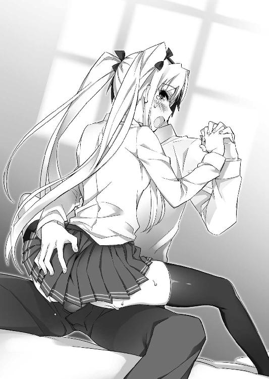
「ひふぁああっ、うっ、奥にきてるぅ！ お腹に、遼人の赤ちゃんの素......にゃぁっ、んんっ、あ、熱いのぉ......はひぃ......はぁ......ふぁぅ......好きぃ、りょうとぉ......」
「美緒......んっ、はぁ、はぁ......凄かった」
意識が遠のきそうな快感を噛み締めつつ、遼人は名残惜しげに締まる膣壺に促され、尿道に残った最後の一滴まで、すべてツンデレ幼馴染みの胎内へ注ぎ込んでいく。
「やぁっ、あ、溢れる......遼人の、漏れちゃダメぇ。全部、中に欲しいのにぃっ」
肉室をあっという間に満たし、結合部からゴボリと逆流してくる白濁に、ツンデレ少女が心から残念そうに呟く。少しでも流出を止めようと膣口をキュッと窄めるが、それでもわずかな隙間から精液が滲み出し、屹立の付け根辺りを白く染めていく。
「でも、お腹いっぱい。んっ、遼人......たくさん出してくれた......ふふっ」
「うん。だって、気持ちよかったから......はぁ、んんっ」
射精の心地よい疲労感に浸りつつ、遼人はぎこちなく頷き返す。
心の片隅に、また流されるまま膣内に出してしまったという罪悪感が過ぎったが、それも幸せそうに涙すら浮かべている美緒の顔を見ていると、すぐ吹き飛んでしまった。
「......ありがとっ、遼人。幸せ......んっ、ちゅっ、はぁ、やっと本当の初めて、できた気がする......んはぁっ、ちゅぅっ、んぅぅっ、好き......大好き♪」
「んくっ、み、美緒......はぁっ、はむっ、れろっ......んんんっ！」
快感の余韻が引いても身体を離すことなく、愛の言葉を囁きながらキスをねだってくる金髪ツインテールの幼馴染み。遼人もそんな彼女を抱き締め、最後まで繋ぎっぱなしだった手を離すことなく、甘く激しいキスで応え続けた――。
（よかったのかな......これで）
未だ左手に感じる温もりを意識しながら、遼人はしみじみと心の中で呟き漏らす。
「......ぅぅ」
ベッドの端、恥ずかしいのか自分とは反対の方を向いて座っているツンデレ少女は、それでも繋ぎっぱなしの手を離さずに、しっかりと指を絡めてきている。
服の乱れを整える間も離してくれず、着替えに随分時間がかかってしまった。
（離そうとすると、凄く寂しそうな顔するんだもんな）
素直に告白した分、今まで隠していた甘えん坊な面が出てきているのだろうか。
いつも強気に自分を振り回していた少女の意外な姿に驚きつつ、愛しく思ってしまう。
（でも、俺......言えない。美緒に、はっきりと好きって......）
好ましく思っているのは事実だが、自分の胸の中にいる少女達の中で彼女が一番なのかどうか、まだ胸を張って断言できない。
胸の中がモヤモヤとして晴れず、そのことに自己嫌悪を感じてしまう。
「......遼人、き、気にしなくていいから。今のは、あたしが無理強いしただけ！ 別にこれで責任取れとか、卑怯なこと言うつもりはない！ 本当にないからね!!」
そんな少年の胸中を読んだかのように声をかけてくれる、金髪の幼馴染み。
まだ顔はそっぽを向いたままだが、強がって言っているであろうことは、絡めたまま小さく震える指が何よりも雄弁に教えてくれていた。
（最低だ、俺。こうやって、優柔不断だから、昨夜もみんなを振り回して。......あのときだってそうだ。......あのときって......っ......一体......）
何かを思い出しかけた刹那、昨夜と同じような胸の激しい痛みが蘇ってきた。
自然と息が荒くなり、表情も険しくなっていく。
「遼人、どうしたの？ また、具合悪くなっちゃった？」
「い、いや、大丈夫。また、少し休めばよくなると思うしさ」
「それなら......あたし、そろそろ戻る。あんたと二人っきりでこうしてたら、また変なフラグ立って、面倒なことになりそうな気もするし......」
「フラグって......あ、あんまり言うなよ、美緒。本当に、何か起こりそうな......」
少し心配そうに呟いた美緒の言葉に、遼人が嫌な予感を覚えた――その瞬間。
――バギィッ！
甘酸っぱい雰囲気を吹き飛ばす破壊音が、室内に大きく響き渡る。
反射的に振り向いた遼人の目に飛び込んできたのは、木製の扉を真っ直ぐに突き破っている白銀の刃。危険なフラグが立ってしまったという、何よりの証。
「ま、まさか......」
乙女の破片の影響で、何かと暴走癖のある学園の少女達。その中でも、ここまで大胆な行動を起こしそうな人物は、少年が知る限りただ一人。妖しく輝く日本刀を愛用する、この金髪幼馴染みとの密会を誰よりも知られたくない、黒髪のヤンデレ少女しかいない。
バギバギィッ、ドガァァァッ！
その直後、突き立てた刀で扉を真っ二つに切り裂き、残骸を蹴り飛ばして部屋に乱入してきたのは、まさに遼人が思い浮かべたその当人だった。
「見つけましたよ、金髪ゴキブリ。遼くんに害なす......毒虫っ！」
「し、詩音......」
「......しーちゃん、きたんだ」
黒髪の幼馴染みの名を呼び、ただ絶句するしかない遼人。その傍らで、瞳に決意の光を浮かべて立ち上がる美緒。
一触即発。胃が痛くなる緊迫の空気が、瞬く間に部屋を包み込んだ――。
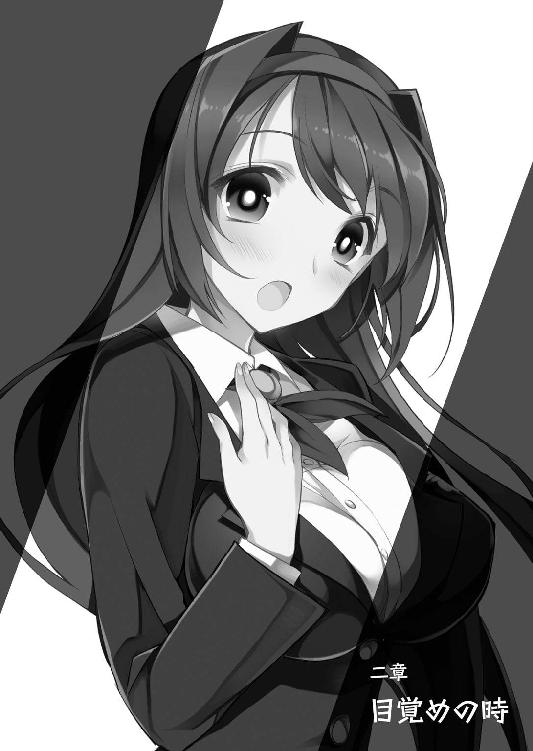
二章 目覚めの時
「最近、すっかり姑息な手段を覚えてしまいましたね！ 髪型だけではなくて、性根までゴキブリのように腐ってしまいましたか、このツンデレ女っ!!」
「だから、あたしをツンデレとかゴキブリとか、キモい呼び方するな！ 大体......いつも遼人にストーカーしてるしーちゃんに、性根が腐ったとか言われたくない！」
激しく罵り合う黄色い叫び声と共に、妖しく輝く銀色の刃が大気を切り裂き、紅蓮の炎が燃え上がる音が、閑静な寮の裏庭に響き渡る。
「大体......どうして、しーちゃんがここにいるのよ！ 授業、まだ残ってたでしょ!!」
「周防さんが、教えてくださったんです!! あなたが遼くんの看病をするため、早退したと！ そんな話を聞かされて、授業なんて受けていられません!!」
「うぅいっ、何で話しちゃうのかな、藍花ちゃんは！ 信じられない!!」
ヒステリックなやり取りと共に、二人は引くこともなく正面からぶつかり合う。
「詩音、美緒......」
そんな激しい闘争を、遼人は少し離れた柱の傍に立ち、呆然と見守り続けていた。
『表へ出ましょう』
詩音に促されるまま、無言でこの庭に出てきた途端、合図もなく始まった死闘。
ここ最近、このツンデレ少女とヤンデレ少女の衝突は、学園や寮の風物詩と言ってもいいくらい、繰り返し行われてきた。
だが、今日のこれは、今までのものとは明らかに質が違う。一撃一撃に強い殺気が感じられ、口を挟むのもためらってしまうくらいの鬼気迫る雰囲気を醸し出している。
「一体、何度言わせればわかるのですか！ 遼くんは私の王子様!! 私と結ばれる運命を背負った男の子なんです！ それを横取りしようなど、神に唾を吐く行為ですよ！」
「人の恋路を邪魔する神様なんて、あたしは信じない！ そんなの、乙女の敵!!」
一度火がつくと止まらない、暴走癖のあるヤンデレ少女。
彼女がこうして激高するのはある意味見慣れた光景だが、今日は対峙するツンデレ少女も、引けを取らないくらい熱く燃え上がっていた。まるで、その手から放つ炎のように。
「何が恋路ですか！ 昨夜の言葉を忘れましたか、このヘタレツンデレ女!! 遼くんへの想いを、素直に口にできないような人間が、戦いの場に上がる資格など......」
「資格なら、ある！ あたしだって言えた!! 遼人に大好きって言えたんだから！」
程よく形よい胸元を張り、金髪ツインテールの少女が堂々と言い放つ。
その叫びを合図に、争う乙女達の動きがピタリと止まった。
「言った......ですって？ あなたが......好きと？」
「そうよ！ あたしだって、ずっと遼人が好きだった!! クラスのみんなや......しーちゃんに、渡したくない！ あたしが遼人を独り占めしたいの！」
剣を握った手をだらりと垂れ下げ、暗く淀んだ瞳で問いかけるヤンデレ少女。そんな同性の幼馴染みに、美緒は少し頬を赤く染めながらもはっきりと宣言する。
いつも大事なところで照れてしまい、怒鳴りながら暴れて誤魔化す。『ツンデレ』という、自らにかせられた面倒な属性を振り払っての告白。
先程、一対一ではっきりと告げられたばかりの遼人も、その真っ直ぐな言葉に胸が締めつけられるような思いを感じてしまう。
「......だから、あたしは戦う。運命とか......そんなことに負けて、遼人を諦めたくないから。もう、絶対に負けないよ、しーちゃん」
決意の台詞と共にパチンッと右手の指を鳴らし、そこから放たれた炎をグローブのように纏いつつ、拳を硬く握り固める。
そうして対決姿勢を明確に出すツンデレ少女の前で、詩音は未だうつむいたまま、指一本動かさずに沈黙を保っていた。
ライバルがついに一歩前に踏み出したことが、それほどショックなのだろうか。
（いや、違う。こういうときの詩音が、それくらいで固まるなんて......）
見守る遼人が、思わずそんなフラグを立てる台詞を心の中で呟いた――刹那。
「くくっ、あはぁっ、あはっ......あはははっ、アァハハハハハハハハハハッ！」
空いた片手で口元を押さえた黒髪のヤンデレ乙女が、うつむいたまま、庭全体に広がるような笑い声を上げ始めた。腹の底まで響くような、明らかに普通ではない、底知れぬ狂気を孕んだ恐ろしい笑い。
乙女の破片の不思議な力が、そこにも込められているのだろうか。思わずそんな考えが頭を過ぎってしまうくらい腹の底から震えが込み上げ、身体が凍りついてしまう。
「何よ、しーちゃん！ 何がおかしいの!? わけわかんない！」
業を煮やしたツンデレ少女が怒鳴りつけると、笑いを止めたヤンデレ少女が顔を上げ、いつもよりもはるかに低い声で吐き捨てるように答えた。
「あなたに、遼くんを好きになる資格があると思っているのですか？ さすがは自分勝手なツンデレ女らしい考え......これを笑わずに、何を笑えと言うのです！」
「どういう意味よ！ ひ、人を好きになるのに資格なんて......」
「ふざけないでください！ 私達が出会ったあの頃......遼くんを虐げ、苦しめていたのは誰だったか......まさか、忘れたとは言わせません！」
ムキになって反論しかけた美緒を、今度は腹の底から絞り出したような厳しい声で怒鳴りつける詩音。その叫びに、身に覚えのあるツンデレ少女は言葉を詰まらせる。
「毎日のように、周りが止めるのも聞かずに遼くんを苦しめて......あのとき、あなたに怒鳴りつけられる度に遼くんが震えていた姿は、まだ瞼に焼きついています！」
「あれは......だって、仕方ない。あたし、遼人に振り向いて欲しくて。だから......」
うつむいたまま、つい先程、その当事者である少年に話したのと同じ本心を語り出すツンデレ少女。だが、火がついた黒髪の乙女は一向に耳を貸さず、彼女を罵り続ける。
「今、はっきりと思い出しました。あのとき......私達が遼くんと離れ離れになるきっかけとなった、事件！ あのとき、私がどうしてあんなことをしたのかをっ!!」
だらりと下げていた刀を正面に突き出し、怒りの炎が噴き上がりそうな厳しい目で沈む美緒を睨みながら、詩音が叩きつけるように叫ぶ。
「私は......守りたかったんです。遼くんを！ あなたの魔の手から救うために......だから、あなたを消そうとした!! 遼くんを傷つける、忌まわしい害虫を」
そこで言葉を止めた黒髪の少女は、悲しげに目を伏せ、天を仰ぐ。
「ですけど......皮肉にもそれが、遼くんをより深く傷つける形になってしまいました」
その呟きを聞きながら、遼人は半ば無意識のうちに脇腹の古傷へ手を伸ばす。
二人の喧嘩を止めようと割り込み、代わりに傷を負い......それをきっかけに、自分は女性恐怖症になって、一年近く、実の妹とすらまともに話せない状態になってしまった。
ずっと忘れていた記憶は、紗々羅の暴走を止める流れの中で蘇ったが、喧嘩そのものがどういう流れで起こったのかは、今、初めて思い出した。
（詩音が思い詰めた表情で公園に入ってきて、いきなり美緒を怒鳴りつけて......）
まさに今、この状況と同じように。戸惑う美緒を厳しく怒鳴りつけた詩音が、口論の末にハサミを取り出して襲いかかった。
（俺、自分のせいで争ってるんだってわかってたのに、ギリギリまで止めに入れなかったんだ。......今みたいに、どっちつかずで......）
それでも瀬戸際で身体が勝手に動いて、二人の間へ割り込み......美緒の代わりに、詩音が振り回していたハサミを受け、脇腹に切り傷を負った。
飛び交う悲鳴、大人を呼ぶ子供の声、血相を変えて駆けつけてきた遊び仲間達。
確か、季節は夏。その焼けるように熱い日差し、蝉の鳴き声、舞い上がる埃の匂い。あのときの記憶が、そんな周囲の状況まで含め、鮮明に蘇ってくる。
「遼くんを傷つけたあなたが、今更、告白？ ふざけるのも、大概にしなさい、このわがままツンデレ女っ！ あなたに......あなたにだけは、決してその資格はありません!!」
一歩ずつ、その燃え上がる怒りを地面に叩きつけるような足取りで美緒との距離を詰めていく詩音。殺気立つ姿に、遼人はハッと我に返った。
今は、過去の記憶にこだわっている場合ではない。
「詩音、いいんだ、もうそれは!! あのときの気持ちも聞いて、納得したことだから......」
黒髪のヤンデレ少女を引き止めようと、駆け出しながら声をかける。
だが、そんな少年の叫びに振り返りもせず、思い詰めた黒髪の少女は刀を両手でしっかりと正眼に構え、立ち尽くす金髪ツインテールの少女との距離を詰めていく。
「遼くん、下がっていてください。これは私とこの女で決着をつけるべきことなんです。遼くんがはっきり気持ちにけじめをつけられるよう......この女を、ここで断ちます！」
「気持ち......けじめ......はっきりっ......うぐっ、あぁっ、うっ」
迷いなく、凛とした声で叫んだ詩音の宣言。それを聞いた途端、遼人は再び胸にナイフを突き立てられたかのような激痛に襲われ、その場で蹲ってしまった。
（何だよ、これ......どうして、また......）
『はっきりしない』という言葉がやまびこのように繰り返し脳裏に響き、それに合わせて胸の痛みが強くなり、全身から血の気が引いて耐え難い寒気に襲われる。
（俺がはっきりしないから、今も、あのときも......俺のせい？）
暗く淀んだ記憶の一部が少しずつ晴れ、何かを思い出しそうになった刹那。
「覚悟はいいですか、毒虫！ 遼くんを傷つけ、汚した罪......償いなさいっ!!」
ついに美緒の目前まで迫った詩音が、厳しい怒鳴り声と共に刀を振り上げる。
それでも尚、美緒はうつむいたまま、逃げることも抵抗することもせずにいた。
「好きなのに、素直に言えなかった。だから、嫌われた......嫌だった、あたしだって素直に......好きって......大好きって言いたかった。言えたらよかったのに......」
わずかに聞こえてくる、ブツブツと呟く声。それが少しずつ大きくなってくるのに合わせて、美緒の身体から少しずつ黒い霧が立ち上ってきた。
「あ......まさか......」
「ふっ、それがあなたのトラウマですか、ツンデレ女っ！ 自分で遼くんを傷つけておいて、自分が傷ついたと泣き言を......認めません、そんなこと!!」
その変化にうろたえることなく、詩音が振り上げた刀を振り下ろしかけたとき。
――ドゴォォォォォォッ！
「っ!? きゃああああっ！」
爆発的な勢いでふくらんだ黒霧に、詩音は踏ん張ることもできず吹き飛ばされてしまった。不意打ちで受け身を取ることもできず、スカートがお腹の方まで捲れ、黒いセクシーなレースショーツが丸見えになってしまうあられもない姿で、地面に倒れてしまう。
「し、詩音！ しっかり......うぐっ、あ......」
まともに歩くことも困難な胸の痛みに耐えつつ、遼人は必死に倒れた黒髪の幼馴染みへ歩み寄り、彼女を助け起こす。
「あうっ......ごめんなさい、遼くん。さっさと片付けるつもりが......」
「そんな、物騒なことを言うなって。幼馴染み同士なんだから、仲良く......っ......」
忌々しそうに言う詩音に肩を貸しつつ、遼人は更に強くなってきた胸の痛みに呻く。
（仲良くできないのは、俺のせいなのか。俺が曖昧な態度で、誤魔化すから......っ......一体、どうなってるんだよ、これ。胸が苦しくて、何だか......）
これ以上思考の海に沈めば、危険なことになる。本能的にそう察知した遼人は、首を軽く横に振って気持ちを無理矢理切り替え、正面のツンデレ少女の様子をうかがう。
「あたし、嫌だ！ 遼人、好きなのに......傷つけた......嫌われた......嫌、嫌ぁぁっ!!」
振り絞るような悲痛な声で叫んだ途端、彼女の身体を包み込んでいた黒い霧が、一瞬で赤々と燃え上がる紅蓮の炎にすり替わった。
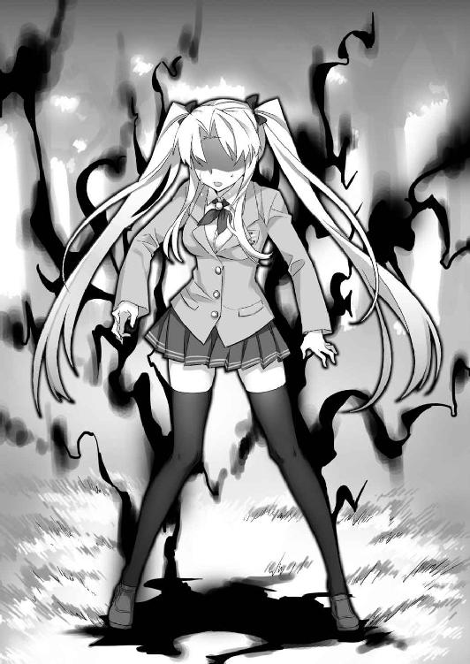
その中で美緒が力なく崩れ落ちると同時に......炎は巨大な人型に姿を変えていく。
「くっ、あれが......美緒の魔物か」
乙女の破片を持つ少女が、そのトラウマを強く抉られたとき、力の暴走で生み出されるもの。美緒のそれは、彼女が操る炎の力を映し出すような姿だった。
（俺がはっきりしないから、美緒も詩音も苦しめて......）
込み上げてくる自己嫌悪に押し潰され、また胸の痛みが強くなりかけたとき、少年を庇うように黒髪の少女が前へ歩み出た。
「魔物を生み出そうが、私のなすべきことは変わりません！ 遼くんに仇なす害虫を始末して、二人の幸せな結末を掴み取る......それだけのことっ!!」
「し、詩音、待ってくれ！ 何を......」
「遼くんは下がっていてください。あの金髪ゴキブリの生み出した魔物ごとき、私一人でどうとでもなります！ あのときの恨みも込めて、一太刀で決着を......」
「待ってくれ！ 俺が......俺がやる!!」
今にも飛びかかりそうだった詩音の腕を掴み、その身体を少し強引に抱き寄せる。
「ふぁぅっ!? りょ、りょ、遼くん......？ あのっ、嬉しいですけれど、でも、さすがに今は少し間が悪いです。あの魔物が、間違いなく邪魔をしてくるでしょうし......」
怒りに燃えていた黒い瞳を恍惚と蕩けさせ、甘いため息を合間に交えながら訴えてくる黒髪のヤンデレ少女。そんな拒絶の言葉を呟きながら、しっかりと少年の胸板へメロン大の豊かな胸を押しつけ、スカートから伸びた白く長い脚を絡めて密着してきていた。
少年がその気なら、あとひと押しであっさりと受け入れてくれるだろう。
だが、彼が幼馴染みの少女を抱き寄せたのは、無論、別の理由でだ。
「詩音、力を貸してくれ。......俺がやる。俺が......やらなきゃいけないんだ！」
意を決した重苦しい口調で呟きつつ、遼人は恍惚と自分を見上げているヤンデレ少女の胸元へ右手を伸ばす。指先が、乱れた制服から覗く双丘の谷間辺りへ触れた途端、そこから目が眩むような青い光が噴き上がってきた。
「......主人公の力を使うんですか？ そうですね、私達夫婦にとって一番の障害......二人の力で排除するというのも、素敵です。ケーキ入刀と言うには、少し物騒ですけど」
いつものように一人で妄想を暴走させ、頬を赤く染めながらうっとりする詩音。
そんなヤンデレ幼馴染みへ突っ込む間も惜しみ、遼人は彼女の胸元に触れた手に意識を集中させ......光の中から、歪な形の大剣を取り出した。
主人公が、乙女の破片を持つ乙女から借り受ける超常力――主人公の力。遼人は現れた大剣を両手で構え、まだ恍惚としている詩音を背に庇うように前へ歩み出た。
「グゥオオオオオオッ......」
低い声で唸り、炎でできた長い両手をブンブンと振り回す魔物。
飛び散る火の粉を避けることもなく浴びながら、遼人は魔物の足元に倒れたまま、ピクリとも動かなくなってしまったツンデレ少女の様子をうかがう。
魔物を生み出すと一時的に気を失うが、大事に至ることはない。経験上、わかっていることだが、それでもこの生気を失った姿を見ていると不安が込み上げてくる。
（これも、俺がはっきりしなかったから......）
心の中で呟く度、ズキッと脳天まで響くような苦痛が身体の芯を貫く。
気を緩めると、すぐ倒れてしまいそうな状態。だが、今、寝ているわけにはいかない。
（せめて、俺の手で......決着をつけないと）
そんな悲壮な責任感で自らを奮い立たせ、ずっしりと重い大剣を振り上げる。
「グルゥッ、ガアアアアアッ！」
それを合図にしたかのように、炎の巨人が重々しく大地を踏みしめながら、少年へ襲いかかってきた。立て続けに前へ繰り出された左右の拳から、まるで溶岩弾のような炎の塊が放たれ、立ち尽くす遼人めがけて真っ直ぐに飛んでくる。
「俺、主人公だ......俺がやらなきゃ......いけないんだぁぁ！」
決意の叫びと共に、遼人は歪な刃の大剣をなぎ払うように振り回す。
ブンッと大気を切り裂く音と共に飛んできた炎の塊を叩き落とすと、その勢いのまま一気に前へ踏み出していく。
「せいやあああああああああああああああっ！」
気合い一閃。主人公の力の影響で上がった身体能力を生かし、炎の巨人を見下ろすくらいの高さまで軽々と飛び上がる。
そのまま大剣を掲げ、落下の勢いを刃に乗せて力強く振り抜いた。
ズシャアアアアアアアアアアアアアアッ！
再び拳から炎を繰り出そうとしていた巨人だったが、それよりも早くその身体に食い込んだ大剣に、頭から股下まで一瞬で真っ二つに切り裂かれてしまう。
「これで決まりだ......とりゃああっ！」
膝を曲げて屈むようにして着地を決めた遼人は、跳ねるように立ち上がるや否や、その場で回転するようにして、大剣を無茶苦茶に振り回す。
遠心力を生かして素早く振られた大剣が、一刀両断されていた炎の巨人を横、斜め、細かく叩き切っていく。人型だったそれが炎の細かい破片となり、黒い霧に姿を戻して消えていくまで......要した時間は、ほんの数秒のことだった。
「はぁ、はぁ......くっ、ああ......」
終わった。そう気持ちの糸が切れた途端、無理矢理押し殺していた胸の痛みが一気に強くなり、その場に跪いてしまう。
魔物が消えた後、わずかに残った灰の中にキラキラと輝く石――乙女の破片が結晶化した『種』が落ちているのが見える。だが、それに手を伸ばす余裕もない。
（本当、どうなってるんだよ、これ。一体......）
それでも少し待つと痛みも落ち着いてきて、ふらつきながらも立ち上がる。
苦しいのは、自分だけではない。魔物を生み出して倒れた、美緒も同じだ。
そう思い、未だに倒れたままの金髪ツインテールの幼馴染みへ歩み寄ろうと歩き始めた直後、いきなり腕を掴まれ、強引に引き止められてしまう。
「お疲れ様でした、遼くん！ ついに......やりましたね」
「えっ？ やったって......詩音、それはどういう......」
「美緒さんの......昔から、誰よりも遼くんを苦しめ、しつこくつきまとっていた......忌まわしい金髪ゴキブリを倒したんです！ もう、これで邪魔者はいません!!」
その豊かすぎるくらい成長した乳房の谷間へ、少年の腕を挟み込むように。全力でしがみついてくる黒髪の美少女は桜色に頬を染め、いつも以上に恍惚と蕩けていた。
「紗々羅ちゃんは、所詮、妹。あとの雑魚なんて出会ってまだ一年も経っていない......物の数に入らない雲霞のようなものです。もう、障害は消えました......これで」
火照る頬を少年の肩へ擦りつけ、幸せそうに微笑むヤンデレ少女。
彼女にとって、未だ倒れたまま目を覚まさない金髪のツンデレ少女は、誰よりも目障りで......意識していた存在なのだろう。その相手を倒し、これで遼人を独り占めできるという強い喜びが、全身から蜃気楼のように立ち上って見えた。
できれば同じ幼馴染み同士、そして寮仲間として良好な関係であって欲しい。
喧嘩をしながらも何かと息が合うところを見せる二人だけに、普段から強くそう願っていた遼人にとっては、あまり気持ちがいい言葉ではなかった。
（これも俺のせいだ。全部、俺がはっきりしないから。だから......）
昔、公園で起こった惨劇も、自分がはっきりと言えなかったから。
だから、止められずにみんなが傷つくことになってしまった。すべては自分の――。
少しずつ鮮明になっていく気持ちに合わせ、胸が強く締めつけられ、呼吸もできないくらいの息苦しさが込み上げてきた。
自由になっている片方の手が自然と胸元に伸び、シャツのボタンを千切り取るような強さでそこを握り締めてしまう。
「俺......ダメだ。こ、これ以上......うぁっ、くっ......」
気持ちを鎮めようとしてもどうにもならず、何かが崩壊してしまいそう。そんな危機感が胸いっぱいに込み上げてきたときだった。
「いきましょう、遼くん」
腕にしがみついている詩音が、恍惚と微笑みながら歩き出した。とても振り払えない強い力で引っ張られ、遼人は思わず転びそうにつんのめってしまう。
「し、詩音？ いくって、どこへ！ それより、美緒の介抱を......」
「魔物は倒したのですし、すぐに目を覚ますでしょう。それより、代価の支払いです。今の遼くんは体調がよろしくないようですし、急がないと......」
もっともらしく言う詩音に、遼人は強く言い返せず押し黙る。
乙女の力を使った後、代価の支払いをしなければ、最悪、死に至るほどの悪影響が肉体に生じるというのは、既に何度も聞かされた話。
普段より弱っている今なら、その悪影響が早く出る危険性はゼロと言えないだろう。
「でも、こうして抱き合っているだけでも、十分、恋人っぽいというか......」
「あの、忌まわしい巨悪を倒したんです。この程度ではなく、今まで一番甘くて素敵な代価を支払わなければ、釣り合いが取れないはずです！」
何とか宥めようとする少年の言葉をあっさりと押し切り、ヤンデレ少女は腕を引っ張りながら構わず歩き続ける。
部屋に連れ込まれ、いつものように激しく襲われてしまうのか。こんな状況でも少し期待する気持ちも胸に込み上げてきてしまうのが、我ながら情けなく思う。
（でも、そろそろ他のみんなも帰ってきそうだよな。いつものフラグ的に......）
そんな予感が脳裏を過ぎった直後、遼人は詩音が部屋ではなく、門の方に向かって進んでいることに気づいた。
「えっ......待ってくれよ、詩音！ どこへいくつもりだ？」
「この寮では、また邪魔が入るかもしれません。......ゆっくり、落ち着ける場所で休みましょう。少し、我慢してください。大通りまで出れば、タクシーを捕まえられますし」
「落ち着ける場所って、どこ？ お、おい、詩音！ そんなに引っ張るなって!!」
少年と同じ心配をしていたヤンデレ少女は、呼びかけに答えることもなく、ただにっこりと微笑み、腕を引っ張りながら歩き続ける。
一体、どこへ向かうというのか。遼人は想像すらつかず、未だ目覚める気配のないツンデレ少女の様子を気遣いながら、売られる子牛のように連行されてしまった――。
「ここって......」
まだ少し眠い目を擦りながら、遼人は目前の洋館をまじまじと見つめる。
壁のほとんどが蔦に覆われた、見るからに不気味で薄暗い雰囲気。お化け屋敷とか、霊が出る曰くつきのスポットと言われれば、疑うことなく信じてしまうだろう。
（どこなんだ、ここ......？）
首を傾げつつ、遼人はタクシーの支払いを終え、出てきた黒髪の少女の方を振り返る。
彼女に引っ張られて寮から連れ出され、『具合が悪い遼くんが、寝ていけるように』と捕まえたタクシーに乗せられ、結構な距離を走ってきた。
車に乗った途端、疲労がどっと出てきて失神するように寝てしまったので、ここがどの辺りなのかも、さっぱりわからない。
「ちょっと待っていてくださいね、遼くん。今、鍵を開けますから」
少年の問いかけに答えることなく、詩音は慣れた様子で少し錆のついた鉄の門を開け、重々しい木製の扉の方へ歩いていく。
「あ、ま、待ってくれよ、詩音！」
追いかけようとした刹那、遼人は絡まる蔦の間から覗き見える表札に気づいた。
早速、生い茂っている緑の葉を描き分け......言葉を失う。
大理石の表札に刻まれていた名字は――『桜小路』。
今、鍵を取り出して玄関の扉を開けようとしている、ヤンデレ少女の名字だ。
「まさか、ここ......」
小さく呟いた直後、脳裏にセピア色の光景が浮かび上がってきた。
今よりも蔦が少なく、もう少し明るい雰囲気だった館。
子供らしい無邪気さで、町を探検するといつもよりも遠出したときに通りかかったこの家の前で、寂しげに佇む暗い目をした少女と出会った――運命の瞬間を。
（そうだ、それで俺、何となく気になって声をかけてみて......いつも一人でつまらないって言うその子を、公園まで誘って......それが出会いだった）
「お待たせしました、遼くん。中へどうぞ♪」
自分と――今、扉を開けて自分を誘っている、この黒髪の美少女との。
記憶に色が蘇り、少しずつ鮮明になってくるのを感じながら、遼人は促されるまま薄暗い洋館の中へ足を踏み入れていった。
「ソファーがありませんので、どうぞベッドの端にでも座ってください」
「う、うん。それじゃあ......」
薦められるまま白いシーツが被せられたベッドに腰を下ろし、改めて辺りを見渡す。
シンプルな木製の勉強机と椅子。そしてこのベッドだけが置かれ、装飾の類は壁時計すらない、あまりにも殺風景な部屋。
まったく生活感がないのは、ここに長く誰も住んでいない証拠だろう。それなのにさほど埃が立たず、掃除が行き届いていることに違和感を覚える。
「暇を見つけて、掃除しにきているんです。一応......私の実家ですから」
少年の表情を見て疑問を察したのか、珍しく苦笑を浮かべた詩音が、そう説明しながら隣に寄り添うようにして声をかけてきた。
「......やっぱり、詩音の家だったんだ、ここ」
「っ！ 思い出してくれたんですか、昔のこと!!」
「うん。......俺、よく詩音を誘いにきてたよね、公園にいこうって」
顔を輝かせて問いかけてくる黒髪の幼馴染みに、記憶の糸を手繰りつつ頷き返す。
この家の前で寂しそうな少女――詩音と出会ってから、特別な事情がない限り、ここに迎えにくるのが日課となっていた。
引っ込み思案でシャイな彼女の手を引き、子供達が集まる公園へ遊びにいく。
日が暮れるまでみんなで走り回り、夕暮れ時、また詩音をここまで送り届けた。
いつまでも続くと思っていた、楽しかった輝ける日々。
そんな記憶を、今の今まで完全に忘れてしまっていたことが、自分でも不思議だ。
それだけ、幸せに終止符を打つこととなった、あの流血事件のショックが大きかったということだろうか。何だか、凄く寂しい。
「何ていうか......ごめん。ずっと忘れててさ」
頭を下げた少年に、詩音は寂しげな笑みを浮かべながら首を横に振る。
「昔のことですし、仕方ありません。私も小学生の頃、途中で全寮制の学園に転校するまで、ずっとここに住んでいたのに......ほとんど、何も覚えていないくらいですから」
「覚えていない......？」
「......曖昧なんです、すべてが。私がはっきりと覚えているのは、遼くんと初めて出会ったあの頃から別れるまでの間......そして、こうして再会できて、今日までのことだけ」
そっと目を伏せ、少年の肩にもたれかかりながら呟くヤンデレ少女。
伝わってくる温もりを感じながら、予想外の告白に目を丸くしている少年へ、詩音はそのままポツリポツリと話を続けた。
「ずっとひとりぼっちで、私を見てくれる人なんて居ない。そんな寂しい毎日でしたから......自分が生きているという実感もなく、ただ流されるだけ......思い出そうとしても、霧がかかっているみたいにモヤモヤしていて......」
「ひとりぼっちって......えっと、友達とか！ それに、家族は......？」
「私が同じ年の子達の輪に入れたのは、遼くんが公園に誘ってくれたあのときだけ。家族は......居るのかどうか、実は私もよくわからないんです」
「わからないって！ いや、そんな!!」
思わず驚きの声を上げながら、遼人は蘇りかけた記憶の糸を必死に手繰る。
当時、この洋館の前まで詩音を迎えに来たことは、数え切れないくらいあったはず。
だが......そのとき、彼女の家族と顔を合わせたことが、一度でもあっただろうか。
思い出せない――のではない。なかった......そう、いつも彼女はたった一人、重い鉄の門の前に立ち、自分の迎えをじっと待っていたのだ。
（......どういうことなんだろう、一体）
さすがに詳しく突っ込めず戸惑う少年に、黒髪の少女は上目遣いで苦笑を浮かべる。
「物心ついたときにはもう、父も母も居なかった......それは、確かなことです。......事故か何かで亡くなってしまったのか。それとも私を捨てて、どこかへ出ていったのか」
「じゃあ、あの頃、詩音は一人でここに住んでたの!? いや、まさか......」
「家事は、通いのお手伝いさんがしてくれていました。あと、時々遠い親戚の人が様子を見に来てくれたような気がします。......その人の顔も、今はもう思い出せませんけど」
「そうだったのか......」
少女の口から淡々と語られる、重く辛い記憶。遼人は自らの体調不良も吹き飛んでしまうほどの衝撃を受け、ただ彼女を慰めるように肩へ手を回すことしかできなかった。
あの当時、どうして詩音があんなに寂しそうな目をしていたのか。
自分が励ましてあげればいいと、昔はその理由を深く追求することはなかったが、まさか詩音の家庭環境が、そんなに辛い状況だったとは気づかなかった。
「気づいたときには、ずっと一人で......私、人とどう接すればいいのか、そういうところからよくわからなかったんです。だから、誰かに声をかけることもできずに......どんなに賑やかで楽しい場所に居ても、自分だけが世界から切り離されているような感じでした」
そこで一度言葉を止めた詩音は、遼人の身体に両手を回し、強くしがみついてきた。
まるで親に甘える幼子のような、儚く弱々しい姿。遼人は振り解くこともできず、ただその震える肩を優しく撫で、彼女の話に耳を傾け続ける。
「でも......思い出してしまうのが、辛かったです。遼くんと一緒に居られた日々......私の人生の中で、唯一、幸せで......光り輝いていた日々のこと。......乙女の破片のせいで、遼くんの顔や名前は忘れてしまいましたけど、それでも私の手を引いてくれた優しい男の子......王子様の記憶だけは、忘れることがありませんでした」
嗚咽混じりの震える声になりながら、黒髪の少女は抱きつく腕に思い切り力を込めてきた。二度と離れたくない、そんな叫び声が肌の温もりと共にひしひし伝わってくる。
「王子様......か」
詩音が『ヤンデレ』という厄介な属性に目覚め、『王子様』と自分に対して尋常ではない執着心を抱くようになった理由が、今、ようやくはっきりわかった気がする。
（これだけ俺に頼ってくれていた詩音のことを、ずっと忘れていたなんて）
脇腹の古傷を負う原因となった事件で大きな精神的ショックを受けたとはいえ、込み上げてくる罪悪感を振り払うことができない。
自分がもっとしっかりしていれば、詩音をここまで悲しませることもなかった。今まで学園で起こってきた惨劇のいくつかも、事前に回避できたはず。
（俺のせい......全部、俺の......っ......また、胸が......）
ズキンッと頭まで響く激痛が胸に蘇り、耐えられず顔を顰めた――その直後だった。
「だから......絶対、誰にも渡しません。ようやく再会できた、私だけの王子様......もう二度と離さない。ずっと二人で......二人っきりの世界で......暮らしたい」
振り向いた途端、自分を見上げる黒髪の少女の、光の消えた暗い瞳と視線が合った。
それは、彼女の持つ『ヤンデレ』属性のスイッチが全開になった証とも言えるもの。
「詩音？ あの、落ち着いて！ その......うわっ!?」
肌が粟立つような寒気が背筋に走り、反射的に立ち上がろうとした瞬間。体重を乗せてしがみついてきた詩音に、そのまま押し倒されてしまう。
真っ白なシーツの上に横たわり、ベッドのスプリングで軽く身体が跳ねる。
直後、まるで掛け布団のように上に覆い被さられ、身動きを封じられてしまった。
「絶対、誰にも渡しません。紗々羅ちゃんにも、有象無象の害虫にも......あの忌まわしいツンデレ女にも！ 遼くんは私の......私だけの王子様なんです。永遠に......」
ハイライトの消えた瞳のまま、ぶつぶつとうわごとのように呟くヤンデレ少女。
遼人が声を出すよりも早く、素早く迫ってきた薄紅色の唇で口を塞がれてしまった。
「むぐっ、ふぁむぅっ！ んあっ、し、詩音......んちゅっ、じゅるっ、んんっ!!」
「ぷはぁっ、はぁ、ちゅぅっ、んんっ!! あはっ、遼くんの味、匂いぃ......はむっ、一日ぶりです。この感じ......れろっ、くふっ、はぁ、じゅるっ、んぷっ、はふぅっ！」
伸びてきた熱い舌で唇を強引にこじ開けられ、そのまま口内を乱暴に舐められる。
唇や頬の裏側、更に歯茎から歯の一本一本。そして、凍りついて固まってしまっていた舌。甘い匂いの唾液を執拗に擦り込まれるような、激しすぎるディープキス。
呼吸をすることもままならず、息苦しさで次第に身体の力が抜けてきてしまう。
少女の柔らかい身体をはね除けることも、身体を起こすこともできず、ただ頭上に両手を投げ出してぐったりとしていた最中、カチャリと手首に冷たいものがはめられた。
「んぐっ、はぁ、これ......んちゅっ、て、手錠......んちゅっ、れろっ」
初めから、用意されていたのだろうか。ベッドの柱に片方の輪がはまっているそれに、両方の手首がしっかりと捕らわれてしまった。
慌てて両手を動かそうとしても、輪を繋ぐ鎖が小さな金属音を響かせるだけ。
安っぽい玩具ではなく、本格的なもの。とても引きちぎれそうにない。
「ふふっ、あまり暴れると......手首に傷がついちゃいますよ？ あっ、心配しないでくださいね。もしそうなったら......私がこうして......んふっ、手当しますから」
「詩音、何を言って......ふぁうっ!? ちょ、お、おい......んぁぁっ！」
唇を離し、恍惚と頬を赤く染めて呟くヤンデレ少女が、今度は伸ばした舌先で少年の頬をチロチロとくすぐるように舐め始めた。
舐め上げられたときの、蕩けてしまいそうな熱さ。直後、塗り込まれた唾液が蒸発して冷たくなる。その温度差に、肌の感度が異様なくらい高まってきてしまう。
「何を考えて......詩音、やめろ！ こんな......くぁっ、うぅっ」
「ふふっ、代価ですよ、遼くん。ちゃんとしないと......んふっ、はぁ、主人公の力を使った反動で、身体を壊してしまいます......からぁ......れろっ、はむっ、ふぁあっ」
「いや、こ、こんな......恋人同士ですることか!? リ、現実じゃない......んぁぁっ」
頬だけではなく、額や耳たぶ、そして顎の方まで余すところなく這い回る熱舌。
ピチャピチャと子猫がミルクを舐めるような音と共に塗り込まれる唾液の感触に、少年はなすがまま身悶え、熱く息を切らすことしかできなくなっていた。
「はぁ、んふっ、遼くんの顔、もう私の唾液でベタベタ......ちゅっ、匂い、いっぱい染み込ませてしまっています......んふっ、れろっ、ちゅっ、はぁはぁ......」
荒く息を切らし、光の消えた暗い瞳を見開いた、鬼気迫る雰囲気。
ヤンデレ属性のスイッチ全開のまま、詩音は片手で自分と遼人のシャツのボタンを交互に外し、それぞれの胸元を大胆にはだけさせていく。
「んうっ、シャツ、邪魔です。私と遼くんを遮るものなんて......全部、いりません！」
苛立ちをあらわに叫んだ詩音は、片手を中に伸ばして短めの短刀を取り出すと、切っ先を遼人の胸元に押しつけてきた。
「んぁっ、ちょ......ひっ、うああああっ!?」
薄いアンダーシャツ越しに感じる、冷たく鋭い刃の感触。気が遠のきそうな恐怖に、堪えきれず悲鳴を上げながら身震いした直後。それが真っ直ぐ下へ滑っていった。
無地のシャツは音もなく裾まで切り裂かれ、その下から肌があらわになる。
「んぅっ、遼くん、暴れちゃダメです。少し手元が狂って......ほら、傷が......ちゅっ」
切り裂かれた少年のシャツを乱暴に剥ぎ取って床に投げ捨てながら、黒髪の少女はさらけ出された胸元へ、唇を這わせてきた。
薄皮を切られてしまったのか、ところどころに浮かんでいる赤く細い筋。そこをなぞるように熱舌が動き、唾液が塗り込まれていく。
「んちゅっ、ああ......遼くんの味ぃ......とっても濃い......はむっ、ちゅっ、はぁ、赤ちゃんの素とは、また違う味......好き......これも好きですぅっ」
「やめ......て......んっ、はぁ、はぁぅ、うっ......ああ」
「ダメです。傷跡が残らないように、しっかり治療......しないとぉっ、れろぉっ」
恐怖に上擦る声で懇願する少年に構わず、詩音は血をあらかた拭い取った後も、執拗に舌を動かし続けていた。それなりに筋肉のついた胸板全体を舐め回し、尖る乳首を突くように弾く。その合間に、わざとらしいくらい大きなキス音と共に唇も押しつけられ、赤い痣が肌のあちらこちらに刻み込まれてしまう。
「んぐっ、はぁ、詩音、な、何を......くふっ、はぁ、んんぁっ！」
思わず背筋をくねらせてしまうむず痒さと、合間に走る甘い痺れ。
次第に全身から力が抜けてきて、遼人は恍惚と暴走するヤンデレ少女に身を任せ、なすがまま貪られることしかできなくなってきていた。
（詩音、今日はいつもよりヤバイ......スイッチ、全開なんてもんじゃないぞ！）
普段の何倍もの狂気を感じさせる姿に、背筋に冷や汗が浮かんできてしまう。
今、下手に刺激したらどうなるかわからない。遼人はゴクリと生唾を飲み、何とか彼女を宥める糸口を掴めないものかと、必死に様子をうかがう。
「あは、遼くんの身体......印がいっぱい。私の王子様だという証......ちゅっ、はぁ、たくさんつけちゃってます。ふふっ、うふふっ、あは、キャハハハハハハハハッ！」
赤いキスマークだらけになった少年の胸板を見つめ、黄色い笑い声を上げる。
その瞳が――一瞬、赤く輝いたように見えた。
「っ!? 今の、一体......あの、詩音......うっ、はぅっ！」
今までに一度も見たことがない異変に、嫌な予感が脳裏を過ぎる。だが、それを深く追及することを許さない甘い快感が、直後、股間に襲いかかってきた。
「んふっ、はぁ、遼くん、元気になってきています。具合......もうよくなってきているみたいですね。ちゅっ、んふっ、もうカチカチ......元気な勃起チンポになってます♪」
胸元だけに飽きたらず、みぞおちやお腹の方にまでキスマークを刻み込もうと唇を這わせながら、詩音ははだけた胸元からこぼれた双乳を股間に押しつけてきていた。
既にブラジャーも下にずれ落ち、完全に露出してしまっているふくらみ。何度見ても圧倒されてしまう、熟れたメロンを並べたような爆乳が、勢いづいてきていた剛直をズボンの布地越しにグイグイと刺激してくる。
「やめ......んぁっ、ああっ！ 詩音、こんな......んぐっ、うぅっ!!」
ズボンに浮かび上がっていたふくらみが、柔らかく弛む乳肉に埋まってしまう。
表面がふわふわ柔らかく、その下から強い弾力で押し返してくる。何度味わってもうっとりとしてしまう、極上の乳圧。
情けなく上擦る声と共に、剛直の勢いは否応なしに増してきた。早く解放して欲しいと言わんばかりに脈動を繰り返し、焼けるように熱く火照ってきている。
「んちゅっ、はぁ、嬉しいです。遼くんが、私を求めてくれているのぉ......私と一つになりたいって、言ってくれてる......幸せ。あはっ......あはははっ」
うっとりと妖しい微笑みを浮かべながら、ヤンデレ少女は軽く身体を起こし、息を切らす少年へ見せつけるように、自らのスカートの裾を摘み上げた。
捲れた紺色の布地の下から覗く、黒いレースショーツ。先程、美緒との戦いの最中にも見てしまった扇情的な下着の股布から、透明の雫が絶え間なく垂れてきている。
身体中に塗り込まれた唾液より、更に甘酸っぱくむせ返る濃い匂いが漂う。
詩音が貪欲に自分を求めてくれていると、何よりも雄弁に伝えてくれる愛液臭だ。
「遼くん、代価をお願いします。私のオマ○コぉ......初めても、二度目も......すべて遼くんに捧げてきたオマ○コ......今日こそ、遼くんのチンポで嫁マ○コに躾けてください」
うろたえる少年を見下ろす、ヤンデレ少女の暗い瞳。
そこに、再び血のような赤い光が浮かんで見えた。
「詩音、待って！ そ、その目は......」
今までにないくらい危険なフラグが、そこに隠れている。そんな予感に背筋を震わせながら必死に叫ぶが、暴走する詩音の動きは止まらなかった。
「遼くん......私、昨日、一つ嘘をついちゃいました。実は......今、ちょうど排卵日なんですよ、私。遼くんの精子、一番受精しやすい時期......ふふっ」
肉唇に濡れ張りついた股布を指でゆっくりと横へずらしながら、詩音がうっとりと甘い声で囁いた、衝撃の告白。いきなりのことに、遼人は悲鳴も上げられず言葉を失う。
（昨日、紗々羅や美緒としたとき、大丈夫って......そんな......）
大丈夫と言っても、確実ではない。いざというときは責任を取らなければいけないという覚悟は持っていたが、それでも聞き流すことはできない事実。
「って、待った!! それなら、尚更、今日は......あの......」
過ぎたことはともかく、今、新たな危険を犯すのはダメだ。ハッと気づき、慌てて止めようとした――そのときには、もう亀頭の先端に熱く滑る粘膜肉が押し当てられていた。
ヌチュゥッ、ズリュルルルゥッ、ズップウウウウウッ！
「んくぅぅっ、ふぁひぃっ、あああーっ！ あはぁっ、きたぁ......んふっ、遼くんの勃起チンポぉ......中にぃっ、私の危険日マ○コに、ズボズボくりゅっ、ひぎっ、ああっ!!」
ヤンデレ少女の歓喜に震える声が、殺風景な部屋全体に響く。
それと同時に少年の剛直は、熱い蜜液にコーティングされた膣道へ滑るように侵入し、そのまま根元まで余すところなく咥え込まれてしまった。
「はふっ、あぁっ！ イッ......あひぃぃっ!! これぇ、こ、この感じぃ......遼くんの熱いチンポで、オマ○コいっぱいにされる感じ、やっぱり幸せ......んひっ、ああっ！」
「はぁはぁ......うぅっ、詩音、やめ......んぁっ、こ、こんなの......」
必死に身体をくねらせ、何とか暴走する黒髪の幼馴染みから身体を離そうと試みる。
だが、手錠の鎖がカチャカチャと虚しい金属音を響かせるだけ。
腰も肉槍から伝わってくる甘い痺れで脱力してしまっていて、さして重くもない少女の肢体をはね飛ばすこともできない。
何より、入れるときは柔らかく綻んでスムーズに迎えてくれた膣壺が、今はゴツゴツとした竿の形に沿って壁面を波打たせ、隙間なく吸盤のように張りついてきている。
軽く腰を引こうとする度、表皮が持っていかれそうなくらい強い摩擦を感じ、その刺激でますます身体が熱く痺れてきてしまう。
「ふふっ、動きたいですか？ 遼くん、今日は積極的ぃ......危険日マ○コって聞いて、興奮しちゃいました？ 私を孕ませたくて、我慢できなくなっているんですね」
「ち、違う！ むしろ逆というか......」
「やっぱり、遼くんは私の王子様。考えていることが同じです。私も、今日はいつもより感じやすくなってるんです......んっ、孕みたくて......今日こそ遼くんの赤ちゃんをしっかりと孕んで、愛の証を......作りたい......んくっ、ふぁふっ、はひぃ、イィッ!!」
恍惚と呟きながら、詩音がその荒ぶる気持ちを全身で表すような勢いで動き出す。
竿肌に沿って蠢き、ねっとりと舐め上げるように擦れる膣壁。滴る大量の愛蜜が情欲をそそる淫靡な水音を奏でながら、たっぷりと溢れ出てくる。
「くぅっ、はうっ、くううっ！ う、動くの......ダメだって!! やぁっ、ひぐっ、こ、こんな......きつっ、うぅっ！ す、吸われるみたいなぁ......あああっ！」
暴走する幼馴染みを止めようとする声も、背筋を駆け上る快感電流で上擦ってしまう。
いつも以上に強烈な密着感が、単純な摩擦ではない、まるで尿道を吸いしゃぶられているかのような刺激も与えてくれていた。
ふわりと柔らかく舞い上がるスカートから覗く、むっちりと艶やかな尻房。そこが腰の付け根に叩きつけられると同時に、亀頭が行き止まりに衝突する。
すると、小さな肉室の入口が生き物のように蠢き、透明のカウパー腺液が滲む鈴口を咥え込もうと言わんばかりに絡みついてきた。
「あふぅっ、んんぅっ！ そこ、そこですぅ!! 子宮、子宮に感じるっ、かぁ、感じたいのぉっ、んふっ、精液、熱いのドクドク......ひぐっ、はぁっ、ひいっ！」
男と女の本質的な部分で行う、熱いディープキス。その快楽に酔いしれた詩音は、座り込んだまま踊るように腰をくねらせ始めた。
ヌチュゥッ、グチュルルルゥッ、ヌップゥッ！
白い太股で少年の胴を締めつけ、腰骨に滑らかな尻肌を擦りつけながら、大きな楕円を描くようなイメージで身体を回す。
濡れた媚肉を掻き分ける音と共に、奥に押し当たっている亀頭が子宮口を錐のように突き抉る形となり、より深々と埋まっていくのが強くなる締めつけでわかった。
長い黒髪がなびき、こぼれ落ちている巨大な双丘が水風船のようにたぷんっと瑞々しく暴れ跳ねる。そんな乱れる美少女の姿で、視覚的にも欲情してしまう。
「こんなっ、し、詩音、激しい......うあぁっ、ああっ！」
ダメ押しとばかりに、張りつく肉壁が根元の方から奥に向かって波打ち始めた。
込み上げてきているものを、そのまますべて搾り出されてしまいそうな動き。
理性で抑えられるような、生半可なものではない。ためらいなどすべて吹き飛び、ただこの昂りを発散させたいという衝動に、頭の中が支配されてしまうほどの快感。
密着した粘膜壁を押し返さんばかりの力強さで肉幹がふくらみ、振動を始める。
「はふぅっ、はぁんんぅっ！ きて、遼くん、私の危険日マ○コで射精して、早くぅっ、種付け......いっぱいドクドク種付け射精して！ 私にぃっ、か、家族くださいぃ！」
「なぁっ、うぅっ、俺......うぅっ、くんんっ、はぐっ、うああっ!!」
鼻にかかった甘ったるい叫びと共に、黒髪の美少女の背筋がビクンッと跳ねた。
波打つ膣道が、少年の中に残ったわずかな理性も砕く強さで収縮し、脈動する剛直が一回り小さく潰されてしまいそうな強さで圧迫される。
竿を走る甘美な痺れが、芯に凝縮されていく恍惚快感。遼人はだらしなく開いた唇から荒く息を吐き、反射的に腰を浮かせてしまう。
「イッ......イク、出る!! 俺ぇっ、うっ、うあぁぁぁっ!!」
「んふぅっ、はぁ、きてぇ！ 遼くんのチンポで種付けぇ、種付けアクメさせてぇ！」
ビュルゥゥッ、ドップゥッ、ビュルルルルルルルゥッ！
黄色く上擦った声で叫ぶと同時に、肉壺に潰された屹立の先から、噴火のような勢いで白濁が迸る。密着する子宮口を乱暴に打ち叩き、綻んだ隙間から中へ流れ込む。見えるはずのない光景を、亀頭を吸いしゃぶる入口の蠢きが教えてくれている。
「くひぃっ、はぁっ、ひんんんっ！ あはぁっ、イィッ、きぃっ、きてますぅ、遼くんのザーメン......赤ちゃんの素、私の危険日子宮にいっぱいくりゅぅっ、んんぅっ♪」
腰を大きく回し続けながら、ヤンデレ少女は膣内射精の快感に酔いしれていた。
ドクンッと跳ねる肉幹から濃い白濁が噴き出る度、詩音は胸のふくらみを艶めかしく揺らしながら、背筋を大きく仰け反らせる。
「子宮に染みてきます、熱いぃっ、ふぁっ、あぁ、あちゅいぃ......遼くんの精液で、子宮火傷しちゃいそぉ......んふっ、はぁ、幸せです、これぇ、この感じぃ」
綻ぶ濡れ唇の隙間からうっとりと甘い呟きを漏らしつつ、黒髪の少女はまるで糸が切れてしまったかのように、ぐったりと前のめりに倒れ込んできた。双乳が赤い痣だらけになった胸板の上で扇情的に弾み、鼻先が触れ合いそうな至近距離まで顔が近づいてくる。
「詩音、俺......んっ、あ......あの......」
「夫婦です、遼くんと私......可愛い赤ちゃんをたくさん作って、幸せな家族に......」
息を切らして呟く詩音の瞳には、また尋常ではない赤い光が浮かんで見えた。
いつもの光が消えた暗いものより、更に底知れぬ狂気を漂わせている。
下手に刺激したら、間違いなく恐ろしい破滅が訪れてしまう。そんな嫌な予感が胸を過ぎり、絶頂で火照っていた身体が急速に冷えていく。
「幸せな家族って......んっ、はぅっ、くっ......」
まだ物足りないと言わんばかりに、射精を終えたばかりの肉槍を締めつけてくる膣内。
じっとしていられないほどのくすぐったさが竿の芯を走り、落ち着かなく腰を震わせながらも、遼人は何とか彼女を落ち着かせる糸口を掴もうと問いかける。
「欲しいんです、家族......もう、二度と寂しい思い......したくありませんから。だから、遼くんと一緒に......ちゅっ、はぁ、作るんです。私だけの家族ぅ......んふぅっ」
額、頬、唇の脇。雨あられのように優しいキスを落としながら、詩音が切々と語る。
「ずっと一人だったこの家を、私の家族でいっぱいにするんです。私を見てくれる、私を愛してくれる大切な人達......それが、私の一番の夢。この寂しい屋敷を掃除するとき、そればかりを空想しているんです。いつも......いつも」
「家族......」
「はい。旦那様は遼くんで、お母さんは私。最初の子供は、やっぱり遼くん似の男の子がいいですか？ 跡継ぎですし。あっ、でも、女の子の方が育てやすいとも聞きますね。ううん、遼くんと私の血を引く赤ちゃんなら、性別なんてどうでもいいくらい、愛しくて大切な子供です。どっちもたくさん......たくさん愛してあげないと」
瞳の赤い輝きを更に強めながら、ヤンデレ少女はいつも以上の早口で語り続ける。
「もちろん、兄弟......弟か妹もたくさん作りましょうね。だって、一人っ子は寂しいですから。家の中が、いつも子供達の明るい声でうるさいくらい賑やかになるように、たくさん......大丈夫です！ この家は無駄に広いので、四人や五人......野球チームが作れるくらい赤ちゃん産んでも、余裕なくらいですし。家計も心配いりません、遺産か何かわかりませんが、私名義の口座に十分な額がありますからね。だから、遼くんは余計な心配は一切せずに、私を......私と私達の家族を愛してくれることだけ、考えてくれればいいんです。何だか想像するだけで、楽しくなってきちゃいました。子作りだけじゃなくて、躾も頑張りましょうね。でも、私......遼くんと私の可愛い子供を、ちゃんと叱れるかどうか少し不安です。つい、甘い顔ばかりしちゃいそう。そのときは、遼くんが父親として威厳あるところを見せてくださいね。フォローは私がしっかりしますから」
「あ、あの......詩音。落ち着いて！ 俺達、まだ学生だし、その......」
息つく間もなく妄想を語り続ける詩音に、遼人は必死になって声をかける。
この少女の暴走癖にはだいぶ慣れてきたはずなのに、今日はその中でも別格。今までにないくらいの狂気と、鬼気迫る思いが伝わってきた。
「学生？ そんなの、私達の愛に比べれば些細な問題です。あんなところに、未練なんてありませんから。......それとも、遼くんには何かあるんですか？」
「えっ、えっと、それは......」
「あの金髪ゴキブリ？ 暴力しか脳のないヤンキーの小娘？ 作り笑いばかり上手な腹黒女？ 真面目バカの眼鏡？ 根暗な本オタク？ それともブラコン妹？ まさか、私達を利用している、料理しか脳のない年増女ではありませんよね？」
寮に住む仲間達を一人ずつ罵倒する声と共に、ちょうど肩を掴んできていた黒髪の少女の手に強い力がこもってきた。爪が皮膚に食い込み、鮮血が滲む。だが、そのジンジンと響く痛みを気にしている余裕もないくらい、ヤンデレ少女の詰問は続く。
「遼くんは優しすぎます。だから、あの雌豚どもをはっきり拒絶できずに、期待を持たせてしまうんです。......あっ、でも、いいんですよ。そういう優しい遼くんだからこそ、私は好きになったんです。優しさにつけ込む恥知らずの害虫は、始末すればいいですし♪」
「優しすぎる......っ......いや......はっきりしないだけだ。俺......」
そう呟くと同時に、忘れていた胸の激痛が蘇ってきた。
（結局、詩音がこうして暴走するのも、俺がはっきりしないからだ。受け入れるか、拒絶するか。どっちもできずに、言葉を濁すだけ。優しいって言葉を免罪符にして......）
昨日から何度も心に浮かんでくる、後悔の念。
考えるほど胸の痛みが強くなり、鉛でもつけられたかのように身体が重くなる。
（全部、俺が......）
いよいよ、何か決定的なものが胸の奥から込み上げてきそう。
言い知れぬ不安に、目の前が真っ暗になりかけた――そんな少年を現実の世界に引き戻したのは、首筋に走った鋭い痛みだった。
「あぐっ!? なっ、えっ......し、し、詩音、何を！」
顔に口づけの雨を降らしてきていた黒髪の美少女が、いつの間にか自らの首筋へ顔を埋め、そこへかぷりと噛みついてきていたのだ。
尖った八重歯が汗ばむ肌に食い込み、そこから赤い鮮血が滲んでしまっている。
「んふっ、はぁ、マーキングです。ふふっ」
唇を離し、そこに付着した血を舌でチロリと舐め取りながら答えるヤンデレ少女。
赤い瞳の輝きのせいもあり、まるでホラー映画に出てくる吸血鬼のような雰囲気。
恐怖で問いかけようとする声が喉の奥に引っかかり、ただ震えることしかできない。
「遼くんは優しいから、言葉で雌豚どもをはね除けることができませんよね？ だから、こうして刻み込んでおくんです。全身に、もっと......ちゅっ、はぁ、遼くんが私だけの王子様である証ぃ......んぐっ、ちゅっ、ちゅぅぅっ、はぁ、ちゅぱっ！」
熱く掠れた声で説明しながら、詩音は再び少年の首筋へ顔を埋め、そこに繰り返し噛みついてきた。前歯と八重歯を肌に食い込ませ、いくつもの歯形を刻み込んでいく。
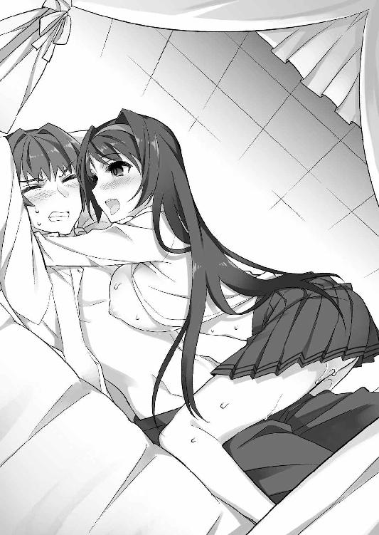
「あはぁっ、んぅっ、ちゅぅっ、遼くんの血が私の身体に入り込んでくる感じ......身体が遼くんと一つになっていくみたいで、好き......んちゅっ、はぁ、幸せですぅ」
「ひぃっ、くんっ、うっ、ああっ!! やめ......ひっ、ひぃっ、ああ......」
このまま、喰い尽くされてしまうのではないか。
さすがにそれはありえないとわかっていても、恐怖を感じてしまう。
逃れようにも手首の拘束は解けず、茹だるような熱さになった淫液塗れの膣壺も、噛みついてくる歯に負けない強さで肉槍を咥えしゃぶったまま。
何もできず、ただこのヤンデレ幼馴染みの思うまま貪られるしかない。
「んぅっ、はぁ、痛いですか？ ちゅっ、じゃあ気が紛れるようにぃ......はふぅっ」
グチュッ、ヌプルゥゥッ......ズリュゥッ、ズチュゥッ......。
顔を強張らせる少年を上目遣いで見つめながら、詩音はゆっくり腰を動かし出した。
濡れ張りつく膣壁が、この背筋が凍るような状況でも尚、硬さを失っていない屹立の表面をねっとりと熱く舐め擦ってくる。
「はぁっ、んぁっ、うぅっ！ ま、また......くぅっ、ああっ!!」
歯を立てられる鋭い痛みに混ざり、下腹部から幹竿が少しずつ蕩けてしまうような、甘く痺れる快感が込み上げてくる。二つの感覚と様々な思いで頭の中をごちゃごちゃに掻き混ぜられ、もう正気を保っていられるか不安なくらい、混乱してしまう。
「んぁっ、し、詩音......こんな、痕、いっぱい......んぅっ、はぅっ、ううっ！」
首筋だけではなく、鎖骨の辺り。そして既にキスマークが刻まれた胸板まで。
立て続けに噛みつかれ、赤い血の滲んだ歯形がいくつも刻み込まれてしまう。
肉体が自分のものではなく、ヤンデレ少女の所有物にされていくような感覚。瞳が涙で潤んでしまうと同時に、背筋がゾクゾクと震える、不思議な悦びも込み上げてくる。
「はむっ、ふふっ、私の王子様......んちゅっ、はぁ、私の匂い......いっぱい染み込ませて......もう、誰にも渡さない。ずっと、二人だけの世界......んちゅっ、はむぅっ！」
「詩音......はぅ、くぅっ、ああっ！ 俺......んぅっ、うぅっ！」
気が遠のきそうなほど怖いけれど、この美しい少女の自分に対する強い想いは、嬉しく感じてしまう。このまま流されてしまえば――そんな衝動が脳裏を過ぎるが、その度、置き去りにしてきたツンデレ幼馴染みや、自分に想いを告げてくれた他の乙女達の顔が脳裏を過ぎり、紙一重で踏みとどまらせてくれる。
（ダメだ、ちゃんと返事をして......けじめ、つけないと。それに、今の詩音は......絶対におかしい。スイッチが入ってるどころの騒ぎじゃないし......）
「あはぁっ、ちゅっ、はぁはぁ......もう、口の中......んちゅっ、遼くんの血でいっぱい。精液の匂いと混ざって......とっても刺激的......んっ、はむっ、れろぉっ」
自ら刻み込んだ歯形へ舌を這わせ、滲む赤い液体を愛しげに舐める詩音。
血の色を映し出すように、瞳の輝きも真紅へと変わってきている。
恐ろしく思う反面、妖艶な淫魔に魅入られているかのような感覚を味わわせてくれ、身体の芯の火照りがどうしようもないくらい高まってきてしまう。
「どうしました？ そんなに私の顔を見て......ふふっ、遼くんも......私のこと、もっと味わってみたくなっちゃったんですか？」
言葉もなく見つめていた少年の視線に答えるように、黒髪の美少女は悪戯っぽい微笑みを浮かべながら――おもむろに、自らの歯で濡れた唇を噛んでしまった。
鋭い歯先が食い込んだ皮がプツリと破け、そこから真っ赤な雫が滲み出てくる。
「詩音！ な、何をして......んぐっ、ちゅっ、むうううっ!?」
驚き、気遣って声をかけようとした刹那。血で濡れた唇で口を塞がれてしまう。
叫びが喉の奥へ押し戻されると同時に、甘い唾液と鉄臭い独特の匂いが口いっぱいに広がってきた。伸びてきた舌で、口内粘膜にその熱い液体が強く塗り込まれ、少し塩っ気のある味わいがどんどん濃くなってくる。
「はむっ、じゅるっ、はぁ、舐めてぇっ！ 私のことも舐めて、食べて......ちゅっ、たくさん味わってください。んぐっ、じゅるるぅっ!! こうして、血も分け合って......一つに......んふっ、二度と離れないように一つになりゅっ......んちゅっ、ふぁむっ！」
「これ......んはぁっ、ち、血の味......混ざって、んぅうっ、はむっ、あああっ！」
押し返すこともできず、口内を蹂躙するように這う舌先。
熱い鮮血の塩っ気と、それとは少し違う味の塩っぽさも染み込んでくる。
おそらく、彼女が執拗に舐めていた自らの血の味なのだろう。今、いかに常軌を逸した交わりをしているのか改めて自覚するが、不思議と嫌悪は感じない。
（詩音と一つに......俺......本当に......）
どんな目に遭わされたとしても、やはり自分はこの少女を想っているのだろう。
胸に込み上げてくる甘い感情が、改めてそれを自覚させてくれた。
「はむっ、はぁ、チンポ、大きくなってきました♪ 遼くんも嬉しいんですね......私と一つになって、喜んでくれて......あはぁっ、幸せ、幸せですぅっ！」
ズリュゥッ、ヌップゥッ、ズブッ、グチュルゥッ！
熱に冒されたかのような恍惚とした声と共に、詩音は尻たぶを悩ましく揺さぶり、抽送の動きを加速させてきた。
「うあぁっ、んんぅっ、こんな......ちゅぱっ、はぁ、激しい......んぐっ、ああっ!?」
スカートがふわふわと舞い上がらせながら、震える肉唇を屹立の根元に打ちつけるように、深々と腰を落としてくる。じゅぶぅっと卑猥な水音と共に、膣口の隙間から吹きこぼれてくる泡立った淫液。その生温かい感触と独特の甘い匂いが鼻孔まで届き、口内に塗りたくられる血や唾液の香りと混ざり、意識を蕩けさせてくれた。
「はむっ、はぁ、一緒に......んぐっ、はむぅっ、このまま蕩けましょう！ オマ○コもチンポもドロドロになって、家族、たくさん作りながら一つに......んちゅっ、はぁ、はむ、んんぐぅっ、もぉっ、は、離しません......ずっとここでぇ......んぐっ、れろぉっ」
「はむっ、んんっ！ こんな......んふぅっ、はぁ、ひむぅっ、ふぁあっ!!」
息つく間もなく与えられる快感と、情熱的な告白。
身体が押し潰されてしまいそうな重く熱い愛情が、全身の感度をおかしくなってしまいそうなくらい高めてくれる。未だに隙間なく張りついたままの膣壁に竿肌がねっとりと舐め擦られる度、意識が白く混濁し、少しずつ理性が打ち砕かれていく。
「詩音......んぐっ、ちゅっ、はぁ、もぉっ、俺......んぐっ、れろぉっ!!」
気づいたときには自分から舌を動かし、もっとこのヤンデレ少女を深く味わいたいと言わんばかりに夢中で唇を舐めしゃぶり始めていた。
少し塩っぽい血の味が混ざっているせいか、さっきまでよりも甘美に感じられる唾液。
それが舌先に染み込む度、そこから全身に彼女の深すぎる愛情が流れてくるよう。
痺れていた腰もぎこちなく跳ね、その求めに応えたいという思いだけが胸を満たす。
「はむっ、はぁ、遼くん、出してぇっ！ もっとグチュグチュぅっ、んっ、チンポで危険日マ○コにザーメン押し込みながらぁ、もっと射精ぇ......種付けしてください！ あなたの嫁マ○コに......んふっ、はぁ、赤ちゃん......私の家族プレゼントしてぇっ!!」
腰を大きく回し、再び子宮口を亀頭へ擦りつけてきながら、熱心に求めてくる詩音。
膣口が吸盤のように亀頭へ張りつき、膣口は根元を食いちぎらんばかりに締める。
狂気に満ちた少女の強すぎる想いを訴える膣内の動きに、表皮が舐め溶かされて快感神経が剥き出しになったかのような剛直が、脈動で応えた。
「詩音、俺......んぐっ、はむっ、はぁぁっ！ 出す、だ、出したい......んぐっ、ちゅっ、はむぅぅっ、はぁ、ふぁあああっ！ イク......ううっ、あふううっ!!」
膣肉に圧迫された尿道をこじ開ける勢いで、根元から溢れてきそうな熱液。
その狂おしい衝動に耐えかね、情けなく涙声で懇願しながら腰を跳ね上げる。
ズッチュゥッ、ヌプッ、ズブブボボォッ！
ヒクヒクと蠢く肉口を捲りながら、素早く出入りする剛直。
肉傘が壁面を抉り、その度に泡立つ淫液が飛沫となって散る。
「あひぃっ、んんぅっ、いぃっ、出してぇっ!! 遼くんの精液でぇ、子宮、パンパンにしてくださいぃっ!! 私の子宮、遼くんの精液袋にしていいですからぁ！」
「せ、精液袋なんて......んっ、そんな、エッチなこと言われたら......」
「興奮しますか？ チンポ、ギンギンに勃起しちゃいますか？ それなら、もっともっと言います。遼くんの前では、はしたなくて淫らな女になりますぅっ、もぉっ、か、勝手になっちゃいますっ、ひんっ、ふぁひぃっ、んんんぅっ！」
競い合うように声を熱く張り上げ、腰を振り動かす。
肉槍が膣壺を抉り掘る音が大きくなるにつれ、痙攣も激しくなってきていた。
下腹部だけではなく、頭の中まで焼けるような強すぎる快感。
強く噛まれた痕の疼きすら甘美に思え、意識がドロドロに蕩けてくる。
「出すっ、もぉっ、もう出すよ！ 詩音の中にぃっ......ううっ！」
「はい、出してください！ もっとぉ、もっとビュルビュルしてくりゃしゃい！ 私のお腹に種付けぇ、早く遼くんの赤ちゃん......んふっ、はひぃっ、はぁんんんっ！」
恍惚と跳ね上がる嬌声に合わせ、肉壺全体が大きく痙攣した。
強く搾り出すような動きに、竿の芯で高まっていた絶頂の予感が一気に弾ける。
「で、出る、またぁ......んぁっ、あっ、詩音、俺ぇ......ふぁっ、あふううっ！」
ビュルルルルルルゥンンッ、ドップゥッ、ドブブブリュッ！
腰まで振動が響いてくるような勢いで、熱く迸る白濁。
さっき以上に濃く大量の精液は、蠢く肉壺の動きに促されるまま、恍惚と喘ぎ悶えるヤンデレ少女の子宮へ流れ込んでいく。
「ふぁぁっ、あはぁっ！ イッ......イィ、遼くんの精液、また子宮に届いて......私のオマ○コ孕ませたいって、中で泳いでるのぉっ、んふぅっ、イィッ、もぉっ、し、子宮、嬉しすぎてイキっぱなしになってるのぉっ、ふぁっ、くうううっ!!」
竿の脈動に合わせて膣内を締め、甘えるように唇を強く押しつけてきながら悶える黒髪の幼馴染み。尻房は飼い主に甘える犬のように休みなく振られ、火照った肌が太股の辺りへ執拗に擦りつけられてきていた。
「詩音......くふっ、はぁ、んんっ！ あぁっ、む、胸も......擦れて......」
下半身を痺れさせる絶頂の余韻と、口いっぱいに広がる背徳的な味わい。
心身の疲労も濃くなり、ストンと闇に沈んでしまいそうになっている意識を、彼女に刻み込まれた歯形の疼きが、辛うじて繋ぎ止めてくれていた。
「もっとくださいね、遼くん。このままずっと......もう一生、この家の中で......二人っきりで過ごしましょう。他に何もいりません、私達だけでいつまでもぉ......」
身体を上下に滑らせ、胸板に弛む乳房を押しつけながら訴える詩音。
擦れる、しっとりとした乳肌。傷口に汗が塗り込まれる形になってジンジンと鋭い痛みが強くなり、靄がかかったように混濁した頭の中が少しずつはっきりとしてくる。
「一緒、いつまでも......二人......」
魅力的な誘いだとも思ってしまうが、頷き返すことはできない。
詩音の瞳は、今もまだ妖しく赤く輝いたまま。明らかに普通の状態ではないのだ。
（気持ちに応えるなら、普通のときじゃないと......今の詩音は、絶対におかしいよ）
「好きです、遼くん。私だけの愛しい王子様......んふっ、ふふふっ♪」
うっとりと微笑みながら、また首筋をかぷりと甘噛みしてくるヤンデレ少女。
肌に歯が突き立てられる痛みに顔を顰めつつ、遼人は必死に頭を働かせていた。
（何が原因なんだろう。詩音は、もう乙女の破片を持っていないはずなのに）
魔物を倒されると、乙女の破片が種化して排出される。
ほぼ同時期に魔物を倒された樹里や絵里奈が力を失いつつあるのに、詩音だけ普通ではありえない力を発揮しているのは、どう考えてもおかしい。
「遼くん、もっとしてください。このまま夫婦になりましょう、いっぱい......はふっ、身体中に証を刻み込んで......んふっ、はむっ、はぁ、ひぃんんっ！」
「ふぁっ、んっ、詩音......また、腰......ひぎぃっ、ううっ!?」
少年に思考する余裕も与えず、黒髪の美少女が再び腰を振り始める。
張りのある尻肌を打ちつけ、その勢いを利用して弾ませる抽送。まだ勢いを保っている屹立が出入りするのに合わせて、結合部から淫液がゴボゴボと音を立てて溢れてきた。
「もっとっ、はふっ、溢れた分もいっぱい出してぇ！ 射精......んちゅっ、はぁはぁ、種付けしてください......んぐっ、じゅるっ、はぁ、むちゅっ、んんっ！」
「うっ、んんぅっ、はぁ、はぐぅ、うううっ！ ダメ......こんな、こ、擦れる......」
ヌメヌメとした膣壁に擦られる度、他のことがどうでもよくなってしまうくらい強烈な痺れが、竿の芯から脳天まで響いてきていた。
拘束も解けず、言葉で説得も不可能。脱出はどうあがいても不可能な状況だ。
ここがいつもの寮なら、仲間達が乱入してくる可能性はあった。だが、自分も忘れていた詩音の実家の場所を、彼女達が知っているとは思えない。
（いや......わからない。そういうときに限って、フラグが立つことだって！）
自分の持つ、厄介な属性――フラグメイカーを信じ、一縷の望みを託した直後。
まさにそれがフラグとなったかのように、部屋の扉が乱暴に開け放たれた。
「そこまでよ、しーちゃん！」
「なっ......み、美緒！」
重い木製の扉を蹴り飛ばし、部屋に乱入してきたのは――厳しい顔つきをした、金髪ツインテールの幼馴染み。その顔を見て、遼人は思わず驚きの声を上げた。
魔物を生み出した乙女は、その後、しばらくは目を覚まさないはず。そんな彼女が、なぜ動けているのか。何より、どうやってこの場所にたどり着いたのか。疑問は尽きない。
「遼人、あんたも何でなすがままになってるのよ！ もう少し抵抗するとか、何とかできないわけ!? エッチ、変態、優柔不断男!!」
「て、抵抗って言われても......っ......それより、どうして、ここに？ 身体は......」
「あんな目に遭わされて、仕返しもせずにおとなしく寝てられない！ べ、別に遼人が心配だから無理してついてきたとか、そういうことはない！ 一切ないんだから!!」
戸惑う少年へ、いつものツンデレ節で返してくる金髪の幼馴染み。
その背後から、少し遅れていくつもの足音がやってきた。
「よく言うぜ、遼人はあたしが守るとか、恥ずかしい大見得切ってたくせによ」
「あんな乙女の情熱を見せられたら、ライバルと言えども協力せざるを得ないのです」
呆れ顔で立て続けに声をかけるのは、前髪の癖毛が印象的な樹里、ピンクの三つ編みお下げを可愛らしく揺さぶり、おどけてみせる絵里奈。
「遼人君も詩音さんも、ふ、ふ、ふ、不道徳です！ こんな昼間から、授業をサボってはしたないこと......あぅっ、よ、よくない！ とってもよくないことですよ!!」
「宮下先輩も人のこと言えない！ 昨夜、自分だっておにぃを襲ったくせに」
真っ赤な顔で慌てふためきながら、生真面目に注意してくる学級委員長の智子。
その横顔を冷たく睨みつけながら突っ込みを入れる、ブラコン妹の紗々羅。
そして――最後を締めるように、いつもどおり分厚い本を広げて読み耽っている青髪のクール少女が、部屋に踏み込んできた。
「涼邑君の携帯は、涼邑紗々羅の策略でＧＰＳ機能付きのもの。それを利用すれば、居場所を検索するのは難しいことではなかった」
「桜小路が響を追って寮に帰ったっていうから、やばいことになってるんじゃないかってみんな揃って慌てて帰ってみたら......もう闘争が終わった後で、涼邑も桜小路の姿も見えなくなってて、どうしようかと思ってたんだけどよ」
「妹である紗々羅ちゃんなら、何か居場所を探る手を持っているのではないかと、周防さんが言い出して......見事、ビンゴだったというわけなのです！」
「ＧＰＳ......そ、そうだったんだ」
藍花、そして樹里と絵里奈の説明を聞き、遼人は自分の携帯にそんな機能があったと初めて知って、目を丸くする。
そう言えば機種交換をしようとした際、甘えん坊の妹がやたらと今の機種を勧めてきたことを思い出す。あれは、そのＧＰＳ機能を重視してのことだったのだろう。
（そんなの、何に使うつもりだったんだ......って、聞かなくてもわかるけど）
大好きな兄を、いつでもどこでも探し出せるように。そんな魂胆に違いない。
ジロリと睨みつけてみると、紗々羅はわざとらしくそっぽを向いてしまった。
落ち着ける状況なら、更に追及してお説教の一つや二つ、兄としてしなければいけないところなのだが、今、そんな余裕はない。
「私と遼くんの愛の巣に、土足で踏み込んでくるなんて......どうやら、本当に排除して欲しいようですね、この忌まわしい害虫どもっ!!」
遼人が何か言うよりも早く、ようやく少年から身体を離した黒髪の美少女が、服の乱れを整えながら立ち上がった。思わず背筋が震えてしまうような、厳しい声。強烈な殺気が背中から放たれていて、声をかけるのもためらわれる勢いだ。
「ど、土足じゃない！ ちゃんと靴は脱いできた!! 第一、人を無理矢理さらうような子に、常識なんて語られたくない！ 絶対にっ!!」
そんな詩音に臆することもなく、噛みつくような勢いで美緒が叫ぶ。
怒りを堪えるように、硬く握り固められた拳。いつもなら、ここで乙女の破片の力を発動させ、その手に炎を宿しているはず。だが、先程魔物を倒されて力を失ってしまい、もうそれは不可能なこと。ただ、悔しそうにそれを震わせるだけだった。
「常識なんて、愛の前には些細なことです。まったく......揃いも揃って......散々、痛い目に遭ってきたというのに、まだしつこく私達の邪魔をするのですか」
長い黒髪をかきあげ、大げさに天を仰いで嘆いたヤンデレ少女が、キッと厳しい眼差しで一番後ろに立っていたクール少女を睨みつける。
「あなたまで私の敵に回るなんて、残念です。さっき、情報をくれたことに多少は感謝していたというのに......これで、見逃すわけにはいきませんよ」
「......構わない。私は、私の思うままに動くだけ」
その鋭い視線を物ともせず、いつものように本を読みながら答える藍花を見て、未だに起き上がれないでいる遼人はふと疑問を感じた。
（美緒に、俺の看病をした方がいいって声をかけたのも周防さんなんだよな。それで、詩音もけしかけて......今、ここにみんなを案内してきたのも......周防さん？）
まるで、この一件をあえて修羅場に持ち込もうとしているような動き。
これは気のせいなのか、それとも意図的なものなのか。
だが、それについて細かく追及する余裕もないくらい、状況は悪化してきていた。
「どうして、いつもこういうことばっかりするのよ、しーちゃんは！ 遼人が好きなのはわかるけど......無理矢理連れ出して、こんな風に迫るなんてフェアじゃない!!」
「遼くんを傷つけることでしか傍に居られなかったあなたに、方法についてお説教される筋合いはありません！ そもそも愛する二人の問題に、他人が口を挟んでくることそのものが無礼千万！ 許し難い行為なのだと自覚しなさい!!」
「ちょっと待った！ まだおにぃは、誰が一番好きなのかはっきり言ってない！」
「そういう思い込みで暴走すんのが、てめぇのいけ好かないところだぜ、桜小路！」
悪びれず言い放つ詩音に、顔を真っ赤にして激高する紗々羅と樹里が噛みつく。
「少なくとも、愛する人にこの扱いはなしだと、絵里奈は思うのですよ！」
「遼人君が可哀想です！ 不当な迫り方です!!」
絵里奈と智子も続いて抗議し、睨み合う乙女達の間に緊迫した空気が漂う。
針で軽く突けば、すぐ爆発してしまいそうな感じ。見守っているだけで背筋を冷たい汗が絶え間なく流れ、震えが止まらなくなってしまう。
「や、やめろよ、みんな。こんな......やめて......」
声を振り絞り、どうにか仲裁に入ろうとした刹那。カチャリと手錠の鍵が外れる音と共に、拘束されていた両手が自由になった。
慌てて跳ね起きて振り返ると、枕元に立っていたのは本を手にしたクール少女。
隙をうかがって近づいてきた彼女が、手早く自分を解放してくれたらしい。
「あの......ありがとう、周防さん」
事態を悪化させた影の主犯と言える人物だけに、遼人は素直に感謝の気持ちを出せず、言葉を濁しながらお礼の言葉を告げる。
返事の代わりにパタンと大きな音を立てて本を閉じた水色髪の少女は、そんな少年にただ一言、きっぱりと切り捨てるように返してきた。
「この状況を引き起こしたのは、涼邑遼人。すべて、あなたの責任」
「......っ！」
「誰の想いに応えるか。それを決められずにいたから......争いが起こっている」
立て続けに投げつけられた、昨夜から嫌と言うほど自覚していた事実。
それをこうして、普段、物静かなクール少女から改めて追及され、遼人は呼吸をすることも忘れてしまうほどのショックと、意識が吹き飛びそうな激痛に襲われた。
「俺......がぁっ、うぅっ、ああっ！ 俺......ううぅっ！」
「ちょ、ちょっと遼人!?」
獣のような呻き声を上げて蹲った少年の姿に気づき、乙女達も言い争いを中断し、血相を変えて駆け寄ってきた。
「どうしたんだよ、涼邑！ どこが苦しいんだ!?」
「遼人君、その身体から出ているの......まさか......」
矢継ぎ早に声をかけてくる乙女達の中、真っ先に気づいた委員長が声を震わせる。
ベッドの上に座ったまま、胸を押さえて蹲る少年。その身体から――黒い靄のようなものが、うっすらと立ち上り始めていたのだ。
「俺......うぁっ、くっ、あのときも......同じで......あぅっ、ううっ」
公園で詩音と美緒が争った、悲しい事件のとき。自分のことで口論する二人を宥めるだけで、どちらにつくかはっきり決断することができなかった。
あのとき、自分がはっきりとどちらかについていれば......気持ちにけじめをつけていたのなら。あの惨劇は、避けられたのではないだろうか。
（同じ失敗、俺......何度繰り返してるんだ。何度......っ......ぁ......）
胸が握り潰されそうな苦しさと共に、身体から立ち上る霧が濃くなってくる。
「絵里奈思うのですけど......これって、似ていますよね。魔物を生み出すときに......」
「あ、ありえない！ 遼人じゃないけど、そんなの現実じゃないっ!! だって、あれは乙女の破片を持っている子だけで......乙女の破片は、女の子にしか......」
「おにぃ、しっかりしてよ！ おにぃってばっ!!」
傍でパニック状態になっている乙女達の声が、どこか遠くから聞こえてくるよう。
意識が身体から離れていくような感覚に、遼人は身震いすることしかできなかった。
（俺が魔物を生み出す......？ そんな......現実じゃない......）
「予想どおり。やはり、涼邑遼人には......それなら、主人公とは......」
「待ってください、藍花さん！ 予想どおりって、どういうことです？ 説明を......」
ただ一人、冷静さを失わずにポツリと呟いたクール少女に、慌てふためく智子が珍しく強い口調で問い詰めた――そのときだった。
「ダメだ、もう、俺......っ......みんな、は、離れて......」
胸の痛みが加速する鼓動と共にふくらみ、いよいよ弾けそう。そんな予感に、遼人が最後の力を振り絞って警告の言葉を叫んだ――その直後だった。
「離れなさい......遼くんを......私の王子様を汚すな、雌豚どもっ!!」
壁が震えるような怒号が、室内に響き渡る。
反射的に背筋が伸び、まるで蛇に見つめられた蛙のように身体が凍りつく。本能的に恐怖を感じてしまう、恐ろしい声。
脳裏に渦巻いていた自己嫌悪の思いも一瞬吹き飛び、それが功を奏したのだろうか。胸に感じていた切羽詰まった痛みが静まり、身体から立ち上る霧も薄れてきていた。
（助かった......い、いや、助かってない！）
ホッとしかけた刹那、ゾワッと全身の毛が逆立つような不安を感じ、顔を上げる。
自分と同じようにショックを受け、呆然と立ち尽くす乙女達。
その向こうに......一人の少女、いや――鬼が立っていた。
「よくも遼くんを苦しめましたね、ウジ虫以下の害虫ども。あなた達を生かしておいたことを......今日ほど後悔したことはありません！」
爪が手の平に食い込み、血が溢れ出てくるほどの強さで拳を握り固めた黒髪の少女。
大きく見開かれたその瞳は真紅一色に染まり、目を見ただけで石化してしまう、ギリシャ神話のメデューサのような言い知れぬ恐ろしさを漂わせていた。
「遼くんを......私の王子様を、たった一人の家族を潰して！ 私を一生、一人にしようというのですか？ そんなの許さない......絶対に許しません......ふふっ、アハハハハ」
「し、しーちゃん......その目......」
「何だよ、ありゃ。や、やばい雰囲気じゃねえか、凄く......」
「......あははっ、ちょっと洒落になっていない感じが......」
うわごとのように呟きながら、目を赤々と輝かせる狂気の少女。その殺気だった姿に、普段は好戦的で負けず嫌いの乙女達もおののき、自然と後ずさりを始めてしまっていた。
「や、やばい......逃げろ、みんな！ 早くっ......」
まだ完全に鎮まっていない胸の痛みを堪えつつ、遼人が必死に叫んだときには、既に虐殺の火ぶたが切って落とされてしまっていた。
「――死んじゃえ」
感情をまったく感じない、淡々と冷たい声。その呟きと同時に、立ち尽くす黒髪の少女の周りに、妖しい銀色に輝く無数の刀が落ちてきた。
鋭く床に突き刺さって立つ、十を軽く超える本数の日本刀。そのうちの二本を両手で無造作に引き抜いた詩音が、かけ声もなく走り出す。
「ふぇっ、きゃっ、きゃああああああっ!?」
「し、詩音お姉ちゃん、やめ......はぅっ！」
無造作に振り下ろされた銀刀が、まずは傍に立っていた智子と紗々羅を打ち抜く。
刀の峰の辺りで脇腹を打たれた二人は、そのままボロ雑巾のように軽々と吹き飛び、装飾のない白い壁に叩きつけられ、呻き声と共に崩れ落ちてしまった。
「っ！ 委員長!? てめぇ、桜小路！ 何を......」
「さすがにやりすぎ......ひっ、きゃぅっ!?」
抗議の声に反応することもなく、ヤンデレ少女は手に持っていた刀を立て続けに樹里と絵里奈めがけて投げつけた。
間一髪、横に跳んで髪の毛数本を犠牲にしただけでそれを避けた二人だったが、初めからその隙を狙っていたかのように、新しい刀を引き抜いた詩音が襲いかかる。
「いなくなりなさい......遼くんと私以外、みんな......」
そんな抑揚のない呟きと共に、軌跡が見えないほどの速さで振り抜かれた双刃。
揃って背中を峰で打たれたヤンキー少女と腹黒娘は、悲鳴を上げる間もなく吹き飛び、先の二人を真似るように床へ倒れ伏してしまった。
「し、しーちゃん、何を考えて......やりすぎでしょ、どう考えても！」
「黙りなさい、毒虫!! 渡さない、私が初めて手に入れた幸せ......絶対に渡さない！」
「ああ、もう、熱くなりすぎ！ ヤンデレも......大概にしなさいよね!!」
......キンッ！ キィィンッ!!
やけ気味に叫びながら、ツンデレ少女は床に刺さっていた刀の一本を引き抜き、それで襲いかかってくる詩音と対峙する。
立て続けに鳴り響く、硬い刃同士がぶつかる乾いた衝突音。
素早く力任せに振り回される刀を、美緒は両手で構えた刀で必死に受け止めていた。
「あなたが、あなた達さえいなければ！ 私は幸せになれるんです!!」
「ふっ、ふざけないでよ！ こんな......二人だけで引きこもって、幸せになれるはずがないでしょ！ そんなの不健全、道徳的におかしい!!」
「ゴキブリが、人間の言葉を喋らないでくださいっ！ 私は遼くんが......愛しい王子様さえ居てくれれば、それで......それでっ！ くっ、ああああっ!!」
黄色い金属質な声で叫び、その感情の赴くまま剣を振り続けるヤンデレ少女。
乙女の破片を失っているとは思えない、常識離れした動きと力だ。
「ああ、もう、どうなってるのよ、これ！ いつもより暴走して......きゃっ!?」
金髪ツインテールの少女は、その猛攻を辛うじて堪えていた。
破片を失ったばかりで、体調もまだよくないはず。それでもどうにか攻撃をさばくことができているのは、今まで数多くの闘争を切り抜けてきた経験があるからこそだろう。
だが......それをもってしても、暴走する詩音との差は埋め難いものになっていた。
「消えろっ......私と遼くんを邪魔するものは、いらない！ 全部、いらないっ!!」
キンッ、キィィィィンンッ！
叫び声と共に大きく横に振られた詩音の刀が、受け止めようとした美緒の持つ刀をあっさりと真っ二つに叩き折ってしまった。
「きゃ......はぅぅっ!!」
間髪入れず、細い首を狙って横振りされた反対の手の刃。目を丸くして凍りついていたツンデレ少女、それを大きく後ろに跳んでギリギリ回避した。
パサッ......揺れるツインテールの一部が切られ、辺りに細やかな髪が舞い散る。
体勢を崩した美緒は踏ん張ることもできず、そのまま尻餅をついて倒れてしまう。
「終わりです。......害虫」
「し、しーちゃん......ひっ、あ......」
両手の刀を投げ捨て、今度は両手持ちのだんびらを掴んだヤンデレ少女が、その切っ先を倒れたツンデレ少女の喉元へ突きつけ、冷たく告げる。
先が白い肌に少し触れていて、そこから赤いものが滲んできてしまっていた。
「し、詩音......やめろ！ やめてくれ!!」
遼人は痛む胸を押さえたまま必死に身体を起こし、今にもとどめを刺そうと殺気立っている黒髪の幼馴染みへ訴える。
「ふふっ、大丈夫です。もう......すぐに済みますから」
「そんなことしたら......詩音だって、後悔する!! だって......幼馴染みだろ!?」
詩音の背中へ振り絞るように叫んだ直後、まるで殺し屋のような静かさでとどめを遂行しようとしていた黒髪の少女の動きに、ピクリと揺らぎが生じた。
「幼馴染み......？」
「そうだよ!! あの公園に、詩音を誘ったのは俺だ！ でも、あそこで詩音と一緒に遊んでいたのは俺だけじゃない。他の子も......美緒も、詩音の周りにいたじゃないか!!」
胸の痛みと引き替えに、ようやくはっきりと蘇ってきた当時の記憶。
少年にとってはいじめっこだった金髪の幼馴染みだが、引っ込み思案な黒髪の少女のことは何かと気にかけ、よく遊びに誘ってあげていたのだ。
時には遼人と一緒にこの屋敷まで迎えに来て、夕暮れの道を三人で手を繋いで帰ったこともあったはず。あの辛い事件が起こるまで......自分達は、確かに友人だった。
「私は......っ......遼くんだけ......遼くんが、一番大切......っ......」
だんびらを持つ手が、まるで雷にでも打たれたかのようにガクガクと痙攣する。般若のように鬼気迫っていた表情にも揺らぎが生じ、瞳の赤い輝きも少しずつ弱まってきた。
「しーちゃん......」
「そ、その呼び方はやめなさい、美緒さん！ 私は、遼くんさえ......居てくれればいいんです。他の友達なんていない......必要......ない......っ......ぁ......」
悲しげに見つめるツンデレ少女へ震える声で言い返しながらも、詩音は手にした刀を動かすこともできず、ただ戸惑いの表情で震えるだけだった。
「詩音......昔のことだけじゃなくて、今のこともそうだ！ 寮のみんなとだって、詩音は何かと上手くやれてるじゃないか。......楽しいと感じたこと、まったくない？」
「それは、遼くんが居てくれるから。だから......他のみなさんとも、何だか自然と話せるようになって。それで......楽しい......あの頃みたいに......」
「なら、やめろよ！ 自分で......その楽しい場所を壊す気か!?」
「いっ、嫌......言わないでください！ 私を惑わさないで、遼くん!! 私......私は、王子様さえ居てくれれば、それでいい......はずなのに......ああああああっ！」
喉が裂けそうな叫び声を上げながら、詩音は震える手で握り締めたままのだんびらを少しずつ押し出していく。
遼人の言葉が胸に届いていることは間違いないが、それでも尚、彼女を暴走させている『何か』を完全に振り払うことはできないのだろう。
（一体、何が......乙女の破片が、完全に抜けきっていないのか？ ......とにかく、止めないと......何としてでも、俺が......）
物語を幸せな結末へ導くことが、主人公という属性を背負う自分の務め。
大切な幼馴染み二人が、不幸な結末に向かおうとしているのを見過ごすことはできない。
「主人公の力......っ......す、周防さん！ 俺に力......うぐっ、あ......」
ここにいる乙女の中で、唯一、まだ乙女の破片を所持しているクール少女。
彼女へ助力を求めて呼びかけるが、また胸の痛みが強くなり、床に倒れ伏してしまう。
「ね、寝てる場合じゃないのに......くそっ......うっ......」
床を爪で引っ掻き、どうにか立ち上がろうとする。だが、激しい痛みは胸だけではなく頭のてっぺんから足先まで広がってきていて、身体にまったく力が入らない。
もう、どうにもならないのか。そんな絶望が脳裏を過ぎった――刹那。
「......謝罪する」
傍らから聞こえてきた、ぽつりと悲しげに呟く声。
どうにか首を上げて確かめると、すぐそこに立っていたクール少女が、広げた本に視線を落とすこともなく、珍しく青ざめた表情で唇を震わせていた。
「周防さん、しゃ、謝罪するって？ これは全部、俺が優柔不断なせいで......」
「この事態を招いたのは、涼邑君ではなく、私。昨夜、まるで乙女の破片を持つ少女のような異変を見せた涼邑君を見て、確かめたいという好奇心を......抑えきれなくなった」
「それって......んっ、じゃあ、美緒に俺を看病しろってけしかけたり、それをわざわざ詩音に告げ口したりしたのは、やっぱりわざと......」
「涼邑君を巡って周囲の乙女が争うこと......それがあなたのトラウマに深く関わっていると推測した。だから......騒ぎを大きくしようと仕組んだこと。その結果、何が起こるかまでは深く考えずに。私は......まったく成長していない」
一言ずつ、噛み締めるように呟く声に合わせ、水色髪の少女の身体からモクモクと黒い霧が立ち上り始めた。昨日から何度も見て、すっかりお馴染みとなった光景。
乙女の破片が暴走を始め――魔物を生み出そうとしている、その前兆だ。
「涼邑君、今、あなたは無理をするべきではない。事態を悪化させた私が、責任を取る」
「責任を取るって、どうやって......」
遼人の問いかけに答えず、クール少女は手にした本を閉じ、沈鬱な表情で語り出した。
「私は、昔から何でも知りたがる......好奇心旺盛な性格だった。両親や先生を質問攻めにして、困らせてしまうことも日常茶飯事だったほど」
「いや、今、そんな昔話をしている場合じゃないって！」
「家の書庫で見つけた、乙女の破片について書かれた研究書。それを見つけてしまったことで......私の日常と家族は、崩壊してしまった」
遼人の問いかけに答えずに話を続ける藍花の身体から、更に濃い黒霧が漏れ出す。
少しずつ人の形を作っていくそれを見て――遼人は、ようやくクール少女が何をしようとしているのか理解した。
「自分でトラウマを抉って、魔物を!? そんな、現実じゃない！」
詳細はわからないが、彼女が乙女の破片について知ったことで、家庭が崩壊してしまった――トラウマとなる事件が起こったのは、何となく察することができる。
それをこうして自ら積極的に思い出すことで、魔物を生もうとしているのだ。
「......自分の手で、楽しい場所を壊す。さっき涼邑君が叫んだ声で、はっきりと思い出すことができた。......助力、感謝する」
ぎこちなく口元に寂しげな笑みを浮かべた直後、藍花は糸が切れた人形のように倒れ込み――代わりに現れたのは、金属質の甲殻で覆われた人型の魔物だった。
「標的......ハイジョ......」
どことなくロボットを思わせる、機械的なぎこちない動きと声。
少し軋むような音と共に上げられた右手の先から――光り輝く弾丸が放たれる。
向かう先は、苦しそうに呻き震える黒髪の美少女が手にしている、だんびらの刀身。
――ギィィンンッ！
見事、銀色に輝く刃の中央に命中した弾丸によって、だんびらは粉々に砕ける。
喉元に当てられた切っ先から解放された美緒は、それを見て気が抜けたのか、そのまま ぐったりと倒れ込み、身動きしなくなってしまった。
「ハイジョ......ハイジョ......」
機械的な棒読み声で呟く魔物は、今度は目から弾丸を放ち、床に突き刺さる残りの刀も端からすべて叩き折っていく。主である藍花に似た、クールで無駄のない動き。自らの意志で生み出されたものだからか、無駄に暴走するような気配もない。
（これで、後は詩音を落ち着かせれば......大丈夫......なのか？）
ホッとしながらも、やっぱり嫌な予感を拭えずに心の中で呟いてしまった......直後。
「私は......私......はっ、うぅっ、ダメ......に、にげ......て......あぁ、あああああっ!!」
激しい痙攣を続けていた黒髪の美少女が、突如、喉が破けてしまいそうなくらいの絶叫を上げる。何が起こったのか。それを問いかけるよりも先に、詩音の瞳が今まで以上に赤い輝きを放ち始めていることに気づいた。
「詩音！ な......何が......うぐっ!?」
よろめきながら立ち上がった直後、ヤンデレ少女の黒髪がふわりと舞い上がり、まるで爆発でも起こったかのような衝撃波が放たれる。
「しーちゃん、しっかり......きゃぅっ!?」
少年と同じように黒髪の少女を気遣って立ち上がった美緒は、それを受けて踏ん張ることができずに、窓の脇の壁へ叩きつけられてしまう。
「美緒っ!! しっかり......詩音も......どうなってんだ、これ!?」
気を失ってしまったのか、身じろぎ一つできないでいる金髪の幼馴染みの様子を横目でうかがいつつ、悠然と立ち尽くす詩音の姿を改めて見つめる。
赤い輝きは瞳だけではなく胸からも放たれ、それがふくらんで真紅の球体となり、叫び悶える乙女の全身を少しずつ飲み込み始めていた。
ミチィッ......グチィ......。
肉を噛み締めるような不気味な音と共に、真紅の球体は部屋全体に広がってくる。
中で何が起こっているのかはわからないが、とにかく今までで一番危険な状況であることだけは、本能的に察知することができた。
「何だよ、これ......こんな......こんなことって......」
暴走する乙女が、旧友の思いに触れて思いとどまり、和解する。
そんな幸せな結末が目の前に迫っていたのに、この惨劇は何なのだ。
（現実じゃない、こんな......こんなことって......）
「......ハイジョ......」
なすすべもなく呆然としている遼人の横をすり抜け、藍花の生み出した魔物が赤い球体めがけて突進していく。倒れた主の意志を受け継ぎ、詩音を助けようというのだろうか。
――だが。
「ガッ......ガガガガガァ......ァァ」
赤い光に触れた途端、見るからに硬そうな金属でできた身体が、まるで砂のような脆さで崩れていく。二メートルを超える巨体が粉々になり、その中央からこぼれ落ちた種も残さず光の中へ飲み込まれてしまうまで、ほんの一瞬の出来事だった。
「嘘だろ、あ、あの光......やば......」
魔物だけではなく、人間でも触れたら消滅してしまうかもしれない。
中央にいる詩音はもちろん、倒れたままになっている他の乙女達も助け出さなければ、最悪の不幸な結末になりかねない状況だ。
「くそっ、み、みんな起きろ！ 目を覚ましてくれ!!」
よろめきながら立ち上がり、未だ倒れ伏したままの乙女達へ呼びかける。
だが、魔物を生み出したばかりの藍花はもちろん、詩音の攻撃を受けて倒れた他の乙女達も気を失ったまま、わずかに身じろぎをするのみ。すぐには目を覚ましそうにない。
「くそっ、ど、どうすればいいんだよ、これ」
嘆きながらも震える身体に鞭打ち、倒れている乙女達を光と正反対の窓際へと引きずっていく。最悪、ある程度の怪我を覚悟でこの窓からみんなを投げ出すしかない。
顔から血の気が引く音を聞きながら、そこまで思い詰めている――最中。
「目を閉じていてください、遼人君！」
「......その声......っ！」
突如、開け放たれたままになっていた部屋の扉から聞こえてきた声。反射的に目を閉じた直後、瞼越しにもはっきりとわかるくらいの眩く黄色い光が室内全体に広がった。
――グチュゥッ、ニチュッ......グチュルル......。
光が静まると同時に、肉が蠢く不気味な音が聞こえてくる。目を開けて様子をうかがうと、赤い球体はさっきよりも二回りほど縮まり、全体が歪な形に歪んでしまっていた。
「今の光のせい......？」
呆然と立ち尽くす少年の下へ、扉から飛び込んできた人影が駆け寄ってきた。
「逃げますよ、遼人君！」
「翠さん、どうしてここに!?」
普段のおっとりとした口調とはかけ離れた、厳しい声で呼びかけてくる淑女。なぜ、彼女までここにやってきたのか。疑問を拭えず、思わず強い口調で問い詰めてしまう。
「説明している場合ではありません！ みんなを、私の傍へ」
「は、はい！ えっと......ごめん、身体、触るよ！」
有無を言わさぬ強い口調に逆らえず、遼人は反射的に頷き返す。
言われるまま倒れた乙女達を引っ張り、淑女の傍へ集めた直後。厳しい顔つきのまま懐をまさぐっていた翠が、光り輝く粒を取り出した。
見間違うはずもない。それは乙女の破片が結晶化し、体外に排出されたもの――種。
「......いきます！」
再び肉を咀嚼するような音と共にふくらみ始めた、赤い球体。それを辛そうに見つめたまま、淑女は親指と人差し指で摘んだそれを高く掲げた。
そこから放たれる黄色い光が、彼女を中心に少年や倒れた乙女達を包み込む。
「うぁっ、これ......うあああっ!?」
目を開けていられずに瞼を固く閉じた直後、まるで身体が宙に投げ出されたかのような、不思議な浮遊感に襲われた。
光が静まるまで、ほんの二秒ほど。慌てて目を開けた遼人は、思わず言葉を失う。
「えっ、こ、ここ......な......あ......」
目の前にそびえ立つのは、蔦で覆われた不気味や洋館。門の傍らに掲げられた表札に書かれているのは――『桜小路』という名字。
「外......？ い、一瞬で......ワープ!? そんな、現実じゃないって！」
「現実離れした現実というものも、世の中には存在するんです。......国ごとに、他の土地に住む人からは想像もつかないお料理が、必ずあるように」
慌てふためく少年の横で、重苦しい表情で立つ淑女。彼女の足元には、同じく部屋にいた六人の乙女達が、同じように倒れ伏していた。
「翠さん、何で......し、詩音は!? もう、俺、何が何だか......」
何から問い詰めればいいのか。それすらもわからない、現実離れした現実の連続。
泣きたい気持ちを堪え、必死に叫ぶ少年へ――翠は、ただ一言、悲しげに呟く。
「遅かった......こんなに早く、女帝の破片の暴走が起こるなんて......」
学園長の震える唇から漏れた、聞き慣れぬ単語。その意味を問いかけようとした刹那。
――ゴゴゴゴゴゴゴッ！
低く不気味な音と共に、屋敷の窓という窓から真っ赤な光が漏れ出してくる。
それに触れた途端、辺りを覆う蔦が急激な成長を始めた。壁も窓もまったく見えなくなるくらい伸び、まるで有刺鉄線のように幹が鋭いトゲだらけになってしまう。
「し、詩音！ 詩音っ!!」
赤い光に飲み込まれたまま、一人、屋敷に残っている黒髪の幼馴染み。その名前を必死に叫びながら、遼人はトゲだらけの蔦を掻き分けて屋敷の中へ飛び込もうと駆け出す。
だが、数歩駆け出したところで、隣に立つ翠の手で羽交い締めにされてしまった。
「落ち着きなさい、遼人君！ 今は......ダメです」
「そんな！ 放っておけるわけないでしょ!! だって......」
「......準備をしなければ、女帝の破片に打ち勝つことはできません。それに、今は他のみんなの介抱もありますから......ね」
「で、でも......っ......」
遼人と同じように、まるで自らの半身が奪われたかのように辛そうな表情で訴えてくる淑女。それでも言い返そうとした少年だったが、いつも余裕に満ちている彼女の瞳に大粒の涙が浮かんでいることに気づき、言葉の続きを飲み込んだ。
「......現実じゃない、こんなの」
夢なら、今すぐ覚めてくれ。そして、少し暴走癖が困りものだけれど......でも、自分を真っ直ぐに想ってくれている少女を、抱き締めさせて欲しい。
込み上げてくる慟哭を噛み締めつつ、遼人はトゲだらけの蔦で封印されたような状態になった洋館を、ただ力なく見つめることしかできなかった――。
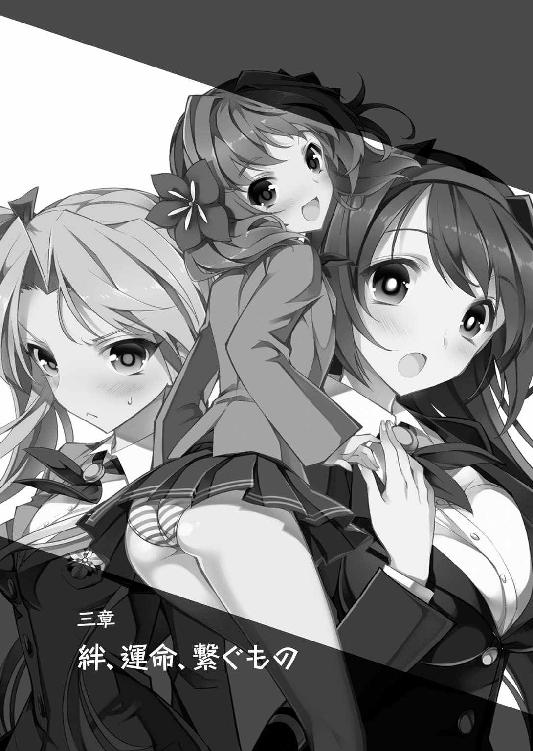
三章 絆、運命、繋ぐもの
聖エスタド学園寮の一階、美しい庭に面した食堂。
乙女達の華やかなお喋り、時には口喧嘩――そして、もっと過激な闘争。形は何にせよ、普段ならうら若き思春期特有の活気で常に満ち溢れている場所が、今はまるで野戦病院のように凄惨な状況になっていた。
「いつっ......桜小路の奴、思いっきりぶん殴りやがって」
「刀なんて、か弱い乙女相手に振り回していいものではないと、絵里奈は心の底から思うのですよ。桜小路さんの暴走には、慣れたつもりでしたけど......」
「今日は、いつも以上に凄かったですね。それに、あの瞳の赤い輝き......」
「ボク、凄く怖かった......見られただけで、身体が強張って......はぅぅっ」
椅子に腰掛けたまま、ぐったりとテーブルに突っ伏して呻く乙女達。
蔦に覆われた屋敷からここまで、翠が用意した小型バスで運ばれた彼女達は、先程この食堂で応急処置を終え、ようやく目を覚ましたばかり。みんな、軽い打撲程度。本格的な治療が必要なほどの怪我を負ったものは誰もいなかったのが、不幸中の幸いだ。
「わかんない！ 理解不能!! だって、しーちゃんはもう......乙女の破片をなくしているはずでしょう！ それなのに......何なのよ、あれはっ!!」
気を失う前、唯一、ヤンデレ幼馴染みの身に起こった異変を目の当たりにした美緒が、固めた拳でテーブルを割らんばかりに打ち叩き、椅子を蹴飛ばしながら立ち上がる。
「俺も、さっぱりだよ。でも、詩音の身体に何か起こったのは......現実だ」
憤る金髪の幼馴染みの隣で、遼人は目の前の冷め切ったコーヒーの入ったカップに手を伸ばす気力もなく、ただ呆然と黒い液体の表面を見つめながら呟く。
底の見えない漆黒が、何だかこれから先のことを示唆しているかのよう。
不安ばかりが、まだ鈍痛の残る胸の奥から込み上げてきて、落ち着かない。
「事情を知っている人間に、今日こそ話を聞かなければいけないと思うのですよ」
三つ編み髪の腹黒少女が、いつもの本心を隠す柔らかい笑顔の仮面を外し、見たことがないくらい硬く真剣な表情で呟く。
「......だなぁ。桜小路のことはもちろん......こうやって好き勝手振り回されるのも、いい加減我慢の限界だぜ！ 力ずくでも、吐かせてやらぁっ!!」
「乱暴はいけません、不道徳です......と、今は言っていられないかもしれませんね。桜小路さんのこともありますし、あまり時間は......」
ヤンキーという属性上、誰よりも好戦的な癖毛の少女はもちろん、普段は暴走しがちな周りを引き止める役を務めている委員長までも、その言葉に同意する。
「昨日、ボクがおにぃを傷つけちゃいそうになったのも、全部、あの人の仕組んだことなんだし......やっぱり、許せない!! 絶対......絶対に許せないよっ！」
唯一年下のふわふわツインテールの少女まで、ぷぅと怒りに頬をふくらませて叫ぶ。
胸に込み上げる様々な怒りを、すべて諸悪の根源と言えなくもない淑女にぶつけようというのだろう。肌がひりつくほど殺気立った、一触即発の空気だ。
「ちょっと待ってくれよ、みんな！」
ただ一人、その空気から外れていた遼人が、慌てて呼びかけた刹那。
「お待たせしました」
まさに最悪のタイミングで、怒りの矛先を向けられている学園長が、いつもどおりの落ち着いた足取りで食堂に入ってきた。
「藍花ちゃん、部屋に寝かせてきたわ。魔物を生んだ反動で、まだ目を覚ましていないけれど......特に怪我もないし、すぐに目を覚ますはずよ。......安心してくださいね」
反射的に席を立った遼人へ、問われるよりも先にそう答えながら、乙女達の突き刺さるような視線を気にすることもなく、隅に置かれたティーセットに手を伸ばす。
「とりあえず、お茶でも入れましょうか。ちょうど、いい茶葉が......」
「ざけんなっ！ 悠長に茶を飲んでる場合かよ、学園長さんよぉっ!!」
「絵里奈も割と、空気を読まずに発言するタイプなのですけど......それでも、今の学園長にはかなわないと白旗を上げてしまうのですよ」
ペースを崩さぬ淑女に、誰よりも好戦的なヤンキー少女と、同じように腹に本心を隠して見せることのない三つ編みの少女が揃って噛みついた。
「翠さん、ちゃんと話をしてくれないと......ボクも、そろそろ我慢の限界だよ」
「学園長という責任ある立場にある者として、相応しい説明をしてください。そうでなければ納得できません！ 今のあなたは、あまりにも不誠実です!!」
傍に立つ兄の袖を掴み、怒りを堪えるように肩を震わせるブラコン妹。
そして誰よりも正論で、真正面から斬りつけた委員長の言葉を聞いても、翠は淀みない手つきで茶葉をティーポットに入れ、慣れた手つきでお湯を注いでいた。
「ちゃんとあたし達の話を聞いてください、学園長！ さっきのしーちゃんの暴走も、あなたが仕組んだことなの!? だとしたら......」
堪忍袋の緒が切れたと言わんばかりに、椅子を蹴飛ばすようにして立ち上がった美緒。
掴みかからんばかりの勢いで詰め寄るツンデレ少女に続き、他の乙女達も一向に釈明しようとしない淑女へ歩み寄っていく。
全員が乙女の破片を既に失っていることが、不幸中の幸い。もし、超常的な力を持つそれを未だ身体に宿していたとしたら......既に惨劇が始まっていたはずだ。
「話したくないなら、もう聞かない!! 黒幕のあんたをぶっ飛ばして、それから......」
「落ち着けよ、美緒！ みんなも......少し、待ってくれ!!」
お湯を注いだポットを手に取った翠へ、先頭に立った金髪少女が掴みかかろうとした刹那。横から割り込んだ遼人が、その手を払いながら必死に訴える。
「おにぃ、どいて！ そいつ潰せないっ!!」
「涼邑、てめぇだって被害者だろうが！ それなのに、どういうつもりだ!?」
「色仕掛けで、籠絡でもされたのですか？ それはちょっと納得いかないのです！」
「そうじゃないって！ ただ......さっき、俺達を助けてくれたのは、翠さん。それは間違いない事実なんだぜ？ それなのに、いきなり喧嘩腰になるのはおかしいだろ」
血気盛んな乙女達の顔を見渡し、必死になって訴える。
静かな微笑みの下に本心を隠した淑女に対して、複雑な思いを抱いているのは遼人も同じ。だが、はっきりと彼女を敵と断定できないのもまた本心。
（色仕掛けに騙された......わけじゃない）
先日、浴室で彼女から誘惑され、肌を重ねてしまったのは事実。今朝も、話を聞き出そうとしたときにそれではぐらかされそうにもなった。
だが、今、こうして彼女を庇っている理由はそれではない。
「翠さん、今朝、言ってましたよね......自分の目的は、ただ守りたいだけって。それって......もしかして、詩音のことだったんじゃないですか？」
単刀直入に切り込んだ一言に、普段どおりの落ち着いた手つきでカップに淹れたてのお茶を注いでいた淑女の手が、一瞬だけ大きく揺れた。
琥珀色の液体が跳ね、カップの外に飛び散ってしまう。穏やかな光をたたえた瞳が揺らぎ、その表情を保てなくなってきている。
「それ、どういうこと？ 守りたいって、何？ どうしてしーちゃんの名前が......？」
袖を引いて尋ねてくる金髪の幼馴染みを、『少し待ってくれ』と目配せで制しつつ、明らかに動揺の色が浮かんで見えてきた淑女に、今一度声をかける。
「さっき、詩音が閉じ込められた屋敷を見ていたときの翠さん......いつもと全然違った。あんなに慌てて......取り乱しているところを見るの、初めてだったから」
日頃、学園で一歩間違えれば命の危険もありそうな闘争を、落ち着きある笑顔で見守っている彼女が、あそこまで平静さを失っていたのだ。何か理由があると疑問を持ち、それと今朝、聞かされたばかりの事実をつなぎ合わせるのは、決して難しくはなかった。
どうして、その結論を導き出せたのか。理由を説明する少年の声を聞いて、翠は手を震わせながら、並んだ人数分のカップへお茶を注いでいく。
「ここ一番の大事なときには、勘が冴える......それも、主人公の特性なのかしら」
「っ！ それじゃあ、やっぱり......」
問い詰める少年へ、学園長はただ一度、小さく頷き返してきた。
「紅茶は、最後の一滴までちゃんと注ぐことが、美味しさを出す秘訣なの。ゴールデンドロップと言って、その一滴に茶葉の美味しさが詰まっているから」
緊迫した空気の中、いつもどおり料理絡みの豆知識を呟きながら注ぎ終えた直後。
淑女は寂しげな笑みを浮かべ、改めて自分に迫る少年や乙女達の方を振り向く。
「ゆっくりと時間をかけて注ぐ。その余裕をなくしてしまったことが......原因かもしれないわね。遼人君、あなたを少しでも早く『主人公』として目覚めさせ......あの子を救いたい。その思いを抑えきれず、焦りすぎて......」
深く息を吐き、自虐的に呟くと、淑女は湯気の立つカップを差し出しながら、覚悟を決めたように小さく頷き返してきた。
「冷めないうちに飲みながら......話しましょう。あの子......詩音のことも、乙女の破片のことも......わたしが犯してきた罪、すべてについて――」
「乙女の破片の伝承については......知っているかしら？」
カップを手に、テーブルを囲むように座った一同の視線を集める、上座の淑女。香り高い琥珀の液体を一口啜った後、静かに切り出された話に遼人が相づちを打つ。
「御伽噺......ですか？ 魔女がお姫様に......何とかいう」
「そう。あれは完全に創作の御伽噺というわけではなく、事実に基づいた話なの。昔、欧州では錬金術が盛んだった時代があることは、みんなも歴史の授業で知っているわね？」
本当に講義を受けている最中のような問いかけに、一同は揃って頷く。
「れ、錬金術って......ゲームによく出てくる？ あれって、マジであったのか？」
「マジなのです。よくわからないなら、とりあえずそう流して無問題なのですよ」
「うっ、あ、あたいもちゃんとわかってるぞ！ ただ確認で聞いただけだ!!」
ムキになって訴える樹里の声に、隣の絵里奈は顔を向けもせず頷くのみ。
普段なら、こうして感情をさらけ出す彼女をからかって遊ぶことを趣味の一つとしている腹黒少女も、今ばかりはそれよりも淑女の話に興味が集中しているようだ。
「当時でも異端とされた、一部の錬金術師達が生み出したもの......それが、乙女の破片。結晶化したものは......みなさん、もう知ってのとおり......これです」
説明を続ける淑女が、懐から取り出した輝く小石のようなもの。
それは種――破片の力で生み出された魔物が倒された後、残される結晶だ。
「この種と呼ばれる状態の乙女の破片は、特殊な培養液で育てることで、発芽し......草木が花粉を飛ばすように、その力を宿した粒子を遠方まで飛ばすことができるの」
「それが心に傷......トラウマを持つ乙女に入り込んで、根づく？」
授業のように手を上げて発言した眼鏡の委員長に合わせて、学園長は教師のように堅苦しく引き締まった表情で頷き返す。
「そのとおりよ。そして、その傷に関する記憶を封印する代わり、本来、その傷を自力で乗り越えようとする精神の力を吸い取り、成長していく。それによって、この種は様々な超常現象を引き起こす、凄まじいエネルギーを持つ物質となるのよ」
テーブルの上に転がした種を、厳しい表情で見下ろす淑女。
その言葉に、遼人はついさっき自らが経験した超常現象のいくつかを思い出す。
（詩音の力を抑え込んだり、俺達を屋敷の外へワープさせたり......あれが、あの種の力で起こったことだとしたら......洒落にならない、凄い力だな）
少年の心の声を聞いたように頷いた翠が、種を摘み上げ説明を続ける。
「錬金術師達は、もっとも多感な成長期、思春期の乙女達の心の力に目をつけ、それを効率よく集める方法として、乙女の破片を生み出したようです。もっとも......当時は、結局、失敗で終わってしまったのですけれど」
そこで言葉を止めた淑女は、この場にいるただ一人の男である遼人に目を向ける。
「成長した種を乙女から取り出す手段――『主人公』が存在しなかったから」
その言葉を合図に、一同の視線が戸惑う少年に集まる。
『主人公』
御伽噺の王子様のように、破片に捕らわれた乙女を救い出す救世主。
その力――主人公の力で魔物を倒したときのみ、種となって乙女の破片が排出されるというのは、既に幾度となく実践してきた事実だった。
「そっか。いくら強い力を持っていても、取り出す方法がなかったら意味ないもんね」
納得したように頷くツンデレ少女が、ほんの数時間まで自らが抱いていた乙女の破片を名残惜しむように、形よくふくらんだ胸元に視線を落とす。
それに同意するように頷いた翠が、その表情を今までよりも冷たく強張らせ、胸に込み上げてくるものを吐き出すように話を続ける。
「乙女の破片の存在は、その頃から現代まで、裏の社会や権力階級にいる人間達の間で密かに語り継がれ......それをどう活用するか、様々な試みが行われてきたわ。取り出すために非人道的な実験を行う者も居れば、破片を持つ乙女が人外の力を発揮できるようになることを利用して、世界を動かす女帝を作ろうとした者も。......その計画の中で、どれだけの罪なき乙女達が犠牲になってきたか......とても数え切れない」
その衝撃的な内容に、テーブルを囲む乙女達は一斉に息を飲み、自らの胸元へ視線を落とす。もしかしたら、自分達も同じように欲深き者達の手で利用され、犠牲になった乙女達と同じ運命をたどることになっていたかもしれないのだ。
そんな彼女達と同じ――それ以上に沈鬱な表情を浮かべる淑女は、気持ちを静めるようにカップのお茶を一口啜り、重苦しい思いを吐き出すように深く息をつく。
「乙女の破片の存在を知った人間、すべてがそれを利用しようと考えたわけではないわ。中にはその存在を危険視したり、倫理的に間違っていると感じる者も少なくなかった。......この聖エスタド学園を創設した一族......桜小路家の人間のように」
「さ、桜小路って......詩音のっ!?」
「桜小路家は、古来より魔術に関して造詣が深い、その筋では著名な一族なの。......明治初期、一族の中でも異端で非人道的な魔術ばかりを研究していたはぐれ者が、乙女の破片の存在に目をつけて、欧州からわざわざ種を持ち帰り......それを研究のため、国中にばらまいてしまったの。当人は、その直後、桜小路一族の手で裁きを受けたのだけれど......ばらまかれた破片を回収することは不可能だった。責任を感じた当時の当主は、破片を研究し、その呪縛から乙女を完全に解き放つ方法を研究することを誓ったそうよ」
そこでまた言葉を止めた翠は、おそらく投げかけられるであろう疑問を先読みしたかのように、自らの豊かな西瓜大の胸元に手を当て、言葉を続ける。
「なぜ、わたしがここまで詳しく事情を知っているのか。それは......わたしの一家、萩野家は桜小路家の分家の一つだから。研究を進める本家の代わりに、既に乙女の破片にとりつかれてしまった乙女達が、その昂る感情と力を発散させる唯一の手段――闘争を、安全かつ定期的に行い、一番不安定な思春期を無事に乗り越えるための環境......この聖エスタド学園の運営と、秘密保持を任されている一族だからよ」
「分家ってことは......じゃあ、翠さんは詩音の親族......っ!?」
その事実を聞いた途端、つい先程聞かされた詩音の思い出話が蘇ってきた。
（たまに様子を見にくる、遠縁の人がいたって言ってたけど......それ、まさか）
早く続きを聞かせて欲しい。その思いを込めた少年の視線に目配せで答え、学園長は少し悲しげに目を伏せてから、話をより深い核心へと進めていく。
「長い年月が流れて......その頃には、それぞれの一族の中でも、直接関わる人間はごく一部になっていたわ。萩野家は現在の当主であるわたし。桜小路家は、先々代当主の一人娘......私を妹のように可愛がってくれた、桜小路綾音。私の従姉妹で......詩音の母親」
「詩音のお母さん......？ ......さっき詩音に話を聞いたんですけど、両親の記憶がまったくないって......その......もう、お亡くなりに？」
聞きづらいことだが、今回の一件の根深いところに関わっているに違いない。
思い切って切り出した遼人に、翠は少しためらった末、小さく一度、頷き返してきた。
そろそろ冷めて湯気が消えてしまったカップを手にうつむいたまま、なかなか話を再開しようとしない。淑女が背負った重苦しい雰囲気を感じていると、細かく事情を問うことにためらいを覚えてしまう。
これ以上踏み込めば、心が抉られるような辛い話になる。そんなフラグが立っていると胸が息苦しいくらい締めつけられているが、今、引くわけにはいかない。
「お願いします、翠さん。俺......詩音のこと、ちゃんと知りたいんです」
自分を真っ直ぐ想ってくれている少女を深く理解し、前に進む。
その固い決意を秘めた遼人の問いかけに、言い渋っていた淑女も覚悟を決めたように深い息を吐き、またポツポツと語り出した。
「誰よりも優しくて、素敵な人でした。小さい頃から、どれだけ彼女に......綾音姉さんに助けられたか。研究者としても優秀で、同じ一族で幼馴染みだった旦那さんと結婚してからは、以前にも増して仕事に熱を入れるようになっていました。そのとき、既にお腹に宿っていた子が女の子だとわかってからは、尚更。......こんな過去の遺物のせいで人生を狂わせるような悲しい想いを、自分の娘には決してさせたくないと」
青空が広がっている外の景色を、懐かしむような遠い眼差しで見つめながら語る翠。
一言ずつ、思いを噛み締めながら語る声に、彼女が姉と慕っていた詩音の母親への深い想いが滲み出ている。この淑女にとって、桜小路綾音という人物がどれだけ大切な存在であったのか、細かく問いかけるまでもなくはっきりと伝わってきた。
「でも、破片の力を分析するための実験中、力の暴走で起こった爆発事故で詩音ちゃんの旦那さんが亡くなってしまった。その日を境に、あの人は変わってしまったの。破片の超常的な力を解析し、自分の望みを叶える......その妄執に囚われて」
そこで言葉を切った後、翠は唇をわずかに震わせる。これから口にすることは、彼女にとっても思い出したくないことなのだろう。どこまで話すべきか、迷っているようだ。
事情を知りたくて焦る面々も、普段の余裕が欠片も見えない淑女の姿を見て、さすがに急かすことをためらい、ただじっと見つめて言葉を待ち続ける。
どれだけの時間が過ぎたか。踏ん切りをつけた淑女が、吐き捨てるように語り出す。
「彼女は実の娘である詩音ちゃんを実験台にして、研究を始めたのよ。一人の乙女に複数の乙女の破片を植え付け......その力を濃縮させた新しい物質、女帝の破片と名付けられた力の結晶を作り出すために。具体的に何が行われていたかは......口にしたくもないわ」
具体的な説明がなくても、苦いものを噛んだように歪んだ表情を見ているだけでも、その凄惨さを察することはできた。乙女の破片は、トラウマを持つ乙女に引かれてやってくるもの。それを複数宿らせるというならば......一人の乙女に複数のトラウマ、深い心の傷を負わせればいいということになる。
（詩音の記憶が曖昧なのは、そのせいか......）
翠が言うとおり、具体的に何が行われていたのかは知りたくない。詩音自身も思い出せないでいるのなら、一生、そのままの方がいいだろう。
下手をすれば......心が壊れ、二度と戻れなくなってしまうかもしれないのだから。
「......綾音姉さんは、亡くなった旦那さんを心から愛していた......詩音が遼人君を思うのと同じくらいに。......その強すぎる思いが、あの人を狂気に走らせたのでしょうね」
やりきれない思いを吐き出すように息をついた淑女が、そのまま淡々と話を続ける。
「わたしが、綾音姉さんの暴走を知らされて、彼女を止めに駆けつけたときには......もう手遅れだったわ。彼女は実験の最終段階......致命的なトラウマを負わせるために、最後の実験を終えたところだったの。目の前で実の親を失う。幼子にとって、一番辛いトラウマを与えるために、詩音の前で自らの命を......」
語り続ける翠の声が、力なく震え、嗚咽混じりになる。
その瞳に浮かんだ涙の粒が一滴、目元の黒子を濡らしながら頬に垂れていく。
この淑女の艶やかな魅力を生み出している泣き黒子は、自らの大切な人が起こした凶行を嘆き悲しむ日々の中、できあがったものなのかもしれない。
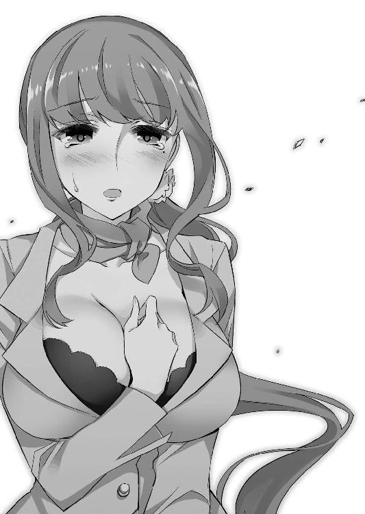
テーブルを囲む面々は慰めの言葉もなく、ただ聞かされた辛すぎる話を自分の中で消化することに精一杯。揃って、鉛でも飲まされたように重苦しい表情になっていた。
それでも、話を進めなければいけない。今、このときも苦しみの中に捕らわれている黒髪の幼馴染みを救うためには。
そんな悲痛な決意で沈鬱な思いを振り払った少年が、話の続きを促す。
「女帝の破片。それが......さっき、詩音が暴走した原因なんですね」
「そうよ。詩音ちゃんに植え付けられた無数の乙女の破片......それが凝縮してできあがった、普通の乙女の破片とは比較にならない力を持つもの。一度、覚醒したら最後、他の乙女の破片を求めて暴走を続け、世界を喰らい尽くすほどの力を生み出す。綾音姉さんが残した研究資料によれば、そんな特性を持つらしいの」
翠の説明を聞き、遼人は藍花が生み出した魔物が、赤い光の中に飲み込まれ、そのまま姿を消したことを思い出す。あれは魔物という乙女の破片が生み出した力を、そのまま吸収したということなのだろう。
「十年以上、わたしは新たに植え込んだ乙女の破片の力で詩音ちゃんの感情を抑制し、女帝の破片が活性化しないように注意しながら、研究を進めてきたわ。あの子の体内から女帝の破片を除去する、唯一の可能性......主人公について」
再び登場したその単語に、遼人がすぐさま食いつく。
「その主人公って、何なんですか！ どうして、俺が......？」
なかなか尋ねる機会を得られず、ずっと胸の奥でくすぶり続けていた疑問。
ようやく投げつけることができた問いかけに、遼人だけではなくその場に居る全員が答えを待つように真摯な眼差しで淑女を見つめる。
「特異体質......本来なら女の子にしか宿すことができない乙女の破片を、その身体に宿すことができる男の子のこと。それが桜小路家で研究を進めた結果、わかったことよ」
ようやく明かされた、物語の中心となる存在についての真実。
声もなく驚く乙女達の中、当事者である遼人だけは、ある程度その答えを予期していたこともあり、ただ硬い表情で自らの胸――まだ鈍い疼きが残る部分を見つめる。
（やっぱり、そうなんだ。俺にも乙女の破片が......）
トラウマを抉られる度に強くなり、ついには魔物まで生み出しそうになってしまった胸の痛みと異変。自分にも乙女の破片があると仮定すれば、すべて納得がいく。
「具体的にどういう条件なのかまでは、はっきりとわからないわ。......わたしも驚いてしまったもの。詩音ちゃんが怪我をさせてしまった男の子......遼人君のお見舞いにいったときに、ポケットに潜ませていた乙女の破片が反応を示したのを見たときには」
「待って、それじゃあ......おにぃに乙女の破片を植え付けたのも翠さん!? ボクにしたみたいに、おにぃまで同じように......」
返答次第では容赦しない。その小さな背中から蜃気楼のように激しい殺気を立ち上らせつつ叫ぶブラコン少女に、淑女は硬い表情のまま頷く。
「あのときの遼くんが負っていた、女性恐怖症......そして、自分のせいで喧嘩を激化させてしまったというトラウマをすぐ消すには、それ以外方法がなかった。......そんなこと、言い訳にならないわね。遼人君が主人公になり得る体質だと知ったとき、わたしはすぐにそれを利用することを考えた。詩音ちゃんの身体から女帝の破片を除去し、あの子に普通の女の子として生きる日々を取り戻すために」
「だからって、おにぃにそんなものを勝手に植え付けるなんて！ 信じられない!!」
「まさか、あたしの乙女の破片も学園長が!? そうだとしたら......」
「落ち着け、紗々羅！ ......美緒も、他のみんなも!!」
激高し、今にも飛びかかりそうだった妹の腕を掴んだ遼人は、立ち上がりかけていたツインテールの幼馴染み、それぞれ怒りの形相を浮かべていた他の乙女達も制する。
それぞれ何か言いたそうに不満げな表情を浮かべるが、いつになく強く、厳しい口調で叫んだ少年の気迫に押されるように、渋々とその矛先をおさめていった。
場の空気が静まったのを確認した遼人は、更なる説明を促すように翠を見つめる。
「美緒ちゃん、あなたの破片は直接、わたしが仕組んだことではないわ。おそらく、無数の乙女の破片を持つ詩音と長く触れ合っているうちに......その粒子が身体にまとわりついていたのでしょうね。それが、トラウマが産まれた瞬間、心の中に......」
睨みつけるツインテールの少女に答えた淑女は、そのまま遼人の方を向き直る。
「男の子に宿った乙女の破片は、女の子に宿った乙女の破片と共鳴し、より強い力を生み出す不思議な性質を持つようになるの。その力だけが、他の破片の力を封印し、こうして種の形に戻すことができる。王子様とお姫様が手を取り合って、平和を取り戻す......あの御伽噺は、このことを元に作られたのでしょうね」
「じゃあ、代価って言うのは......？」
「共鳴させた破片同士は、すぐに引き離すと互いを求めてますます活性化して......その結果、暴走してしまう危険性が高まる。だから、しばらくは離れずに傍にいなければいけないのよ。恋人同士がするようなことなら、自然とそうなるでしょう？」
「な、なるほど......」
それなら、いくらでも曲解できる言い方ではなく、そう伝え残して欲しかった。
おかげで随分と振り回されてきた遼人は、その伝承を残した過去の人物にぶつけてやりたい恨み言を、心の中で呟き漏らす。
「研究を進めながら、わたしは時が来るのを待ち続けたわ。遼人君が思春期を迎え......植え付けた乙女の破片が一番活性化し、強い力を持つようになるときを。ちょうど転校を考えていてくれて、助かったわ。おまけに、わたしが仕掛ける前に詩音ちゃんと再会するなんて......乙女の破片が引き合った影響なのかしら」
そう話をまとめた淑女は、テーブルに置かれた種を摘み上げ、静かに席を立った。
「長くなってしまったけれど、これでわたしの知っていることはすべて話したわ。わたしに対して言いたいことも、ぶつけたい気持ちも色々とあると思うけれど......少し、時間をちょうだい。......今は、急いで事態を収束させなければいけないから」
「待ってください！ 事態って......詩音のことですか!? まさか、翠さんが一人で......」
立ち去ろうとした淑女を、遼人は慌てて呼び止める。
今までの話から推測すれば、彼女がやろうとしていることはそれ以外考えられない。
「女帝の破片が暴走してしまった今、悠長にしていられないわ。除去することはできなくても、わたしの手元にある種を使えば、鎮めることは不可能ではないはずだから......」
手にした種を見つめ、重々しい口調で語る淑女。
その超常的な力をさっき目の当たりにした遼人だったが、それでも素直に頷けない。
あの詩音が生み出した赤い球体の中から感じられた、嫌な気配。それは......そんな凄まじい力すらも超越する、もっと恐ろしいもの。そんな気がしてならなかった。
「俺もいきますよ！ 主人公なら、破片を除去できるんですよね」
「今の遼人君は、トラウマが表面化しかけた影響で、体調がまだ完全ではないはず。それに......肝心の主人公の力を使う相手が、誰もいないでしょう？」
振り返った淑女は諭すような静かな声で、焦る少年に語りかける。
彼女が言うとおり、この場にいる乙女達は全員、既に乙女の破片を失った状態。
主人公の力なしで、女帝の破片という普通よりも強い力に支配され、暴走してしまった詩音相手に立ち向かうことがどれだけ無謀か、考えるまでもなく明らかだ。
「何より......今回のことは、すべてわたしのミスよ。遼人君と再会して、すっかり明るくなった詩音を見て、急ぎすぎてしまった。本来なら、詩音の心を揺さぶらないように、できるだけ穏便にことを進めなければいけなかったのに......」
立ち尽くす遼人と、声もなく見守る乙女達。寮で暮らす面々を一人ずつ見渡しながら、淑女はその瞳に涙の粒を浮かべて言葉を続ける。
「みんなと一緒に喋ったり、騒いだり、喧嘩をしたり......楽しそうに過ごしている詩音ちゃんを傍で見ていたら、少しでも早く、普通の女の子としての幸せを取り戻してあげたいという気持ちを、我慢できなくなってしまったの。......ごめんなさい」
「翠さん、待って......っ!?」
折り目正しく頭を下げる学園長を、今一度呼び止めようとした刹那。彼女が手にした種から、屋敷から脱出したときと同じ眩い光が放たれ、視力を完全に奪われてしまった。
それがおさまるまで、ほんの数秒。両手で目を擦り、無理矢理痙攣する瞼を開いたときには――翠の姿は、既に影も形もなくその場から消え去ってしまっていた――。
（どうすればいいんだろうな、俺......）
寮の廊下。力ない足取りで自室に向かいながら、遼人は心の中で重々しく呟く。
詩音を救うため、翠が姿を消した後。食堂に残された面々は、明かされた衝撃的な事実をすぐに消化しきれず、普段の勢いが嘘のように黙り込んでしまっていた。
その空気に耐えられず、自分一人で考える時間も欲しいとその場を後にした遼人だったが、歩みに合わせて気持ちは暗く沈み、歩む速度も段々遅くなってくる。
「現実じゃない。......なさすぎる、こんなの」
力なく呟き漏らすと同時に、その場で立ち止まった。
ふと正面を見ると、もう少し先に自分の部屋が見える位置。
この廊下でつい先日、今、苦境の中にいる黒髪の幼馴染みが、金髪の幼馴染みやブラコン妹と自らの洗濯物を争って賑やかに喧嘩をしていたことを思い出す。
（確かに......最近の詩音、楽しそうだった。翠さんが焦るのも無理ないよ）
闘争が日常茶飯事。そんな聖エスタド学園らしい殺伐さもあったが、それでも寮に住む乙女達や自分と一緒に居るときの詩音は、生き生きとしていた。
少年がここにやってくるまでは、周りと関わろうとせずに常に一人。
自分が何をしていたかもはっきり思い出せない、薄もやの中で日々を過ごしていた。
周りや詩音自身から聞かされた話と比べると、彼女の変化がどれだけ大きかったのかよくわかる。それに自分の存在が影響していると思うと、何だか胸が少しくすぐったい。
「詩音......」
その名前を呟くだけで、赤い光に飲み込まれていった姿が脳裏に浮かび上がる。
女帝の破片。狂気に囚われた彼女の実母が植え付けた忌まわしい呪縛の暴走が、具体的にどんな影響を与えるのか、そこまで翠は話してくれなかった。
だが、光の中に消えていった苦しそうな姿を見る限り、命に関わるような重大な問題であることには間違いない。もしかしたら、既に手遅れの可能性も......。
「何をやってるんだよ、俺！ 主人公が、こんなときに......ヒロインがピンチになっているっていうのに、何もできずに......全部、人任せにするしかないのか!?」
絶体絶命の窮地のとき、その打開策を必ず思いつくのが物語の主人公。主人公の力という切り札が使えないというだけで、何も浮かんでこない自分が情けなくて仕方ない。
翠の手で乙女の破片を植え付けられて『作られた』主人公でしかない自分には、所詮、これが限界なのだろうか。だとしても、何もせず諦めることはできなかった。
（こういうときは......何も考えずに、とにかく突っ走る！ ......それしかないか）
この身を危険に晒せば、一発逆転のアイデアが浮かぶのではないか。
そこまで思い詰め、善は急げとばかりに玄関の方へ駆け出した――刹那。
――ギィッ。
「んなぁっ!?」
重く軋む音と共に、ゆっくりと開いた扉。勢いよく走っていた遼人は止まることもできずに――ゴンッと大げさな音が辺りに響くほど、したたかに額を打ちつけてしまった。
「こ、こんな......ギャグ漫画みたいなタイミング、現実じゃ......ない」
扉から、目を丸くした水色髪の少女が出てくるのを見つめながら......遼人は目の前でいくつも火花が散るような衝撃に意識を吹き飛ばされ、その場に崩れ落ちてしまった――。
「......うぁ」
額に当てられた、少しひんやりとした感触。暗く沈んだ意識が覚醒してきた途端、ミントに似た爽やかな香りに鼻腔をくすぐられた。
「起きた？」
淡々と呟き、前屈みになって自分を覗き込んでくる、空色の澄んだ瞳。
見慣れたクールな表情とは違う、眉をわずかに顰めて少し心配そうにしてくれている藍花の顔が、視界いっぱいに飛び込んできた。
「周防さん、どうして......？」
「外へ出ようとしたところで、涼邑君が......私の不注意、謝罪する」
「あっ、そ、そっか。いや、あれは俺が悪い！ だから、気にしないでって......」
説明してくれるクール少女にフォローの言葉を返したところで、後頭部に枕やクッションとは違う、温かくて張りのある肌の感触が伝わってきていることに気づいた。
（周防さんが、俺の顔を上から覗き込んできてるってことは......まさか!?）
慌てて首を左右に振ると、短いスカートと黒のニーソックスの間から覗く、雪のように眩しい白さの太股が見えた。
ベッドの上、行儀よくちょこんと正座した乙女の脚に頭を乗せている――膝枕状態だ。
「うぁっ、ごめん、俺っ！」
「ダメ。頭を打ったのだから、急な運動は禁物」
反射的に飛び起きようとした刹那、クール少女の小さな手で両肩を強く押される。
体重がかけられた手を押し返すこともできず、またその場に横たわってしまう。
ポンッとスカート越しに軽く後頭部と衝突した、スポンジのような柔らかさ。
周りにいる乙女達の中、一番スレンダーな少女。太股も少年の腕と大差がない細さだというのに、驚くほどふわふわと優しい感触だ。
（というか、これ、太股だけじゃなくて、もっとやばいところも当たってるような）
頭は足の間に深く食い込み、その付け根――恥丘の辺りにも密着していた。
薄いスカートとショーツの布地越しに、クール少女の大切な部分を感じている。
プニプニと独特の弾力があり、太股よりも湿り気を帯びた熱さ。ミントのような藍花の香りがそこから特に強く漂ってきて、呼吸をするだけで頭がクラクラする。
意識すると否応なしに鼓動が高まり、身体が強張ってきてしまった
（どうしてこんなことに......現実じゃない!!）
どうにもできず、心の中で口癖を叫ぶしかない。そんな少年の顔を見下ろしたまま、物静かなクール少女はポツポツと力ない声で囁きかけてきた。
「痛みは？」
「いや、もう大丈夫。えっと......それより周防さんは？ 魔物を生み出した反動とか」
「......問題ない。学園長が適切な治療を行ってくれた。体調は良好」
そう答える藍花だったが、その声は弱々しく、わずかに震えていた。
とても、回復したとは思えない。心配して様子をうかがう少年の視線に答えるように、水色髪の少女は小さく息を吐きながら言葉を続ける。
「改めて、謝罪する。今日の騒動は、すべて私の責任。好奇心を満たしたい......それだけの自分勝手な思いを抑えきれず、涼邑君や桜小路さんを追い詰めてしまった」
懺悔をするような重い口調に合わせ、少女の慎ましいサイズの胸元が小さく震える。
空色の瞳に輝く涙の粒が浮かんできていて、それがポタリと少年の額に落ちてきた。
常にクールなマイペースを崩さない。そんな藍花が、こんなに感情を表して沈む姿を見るのは、彼女と知り合ってから初めてのこと。遼人は驚き、言葉を失ってしまう。
「桜小路家については、学園長から聞かされた？」
「うん、乙女の破片の研究をして、乙女達を救おうとしている一族だって......」
「周防家も、乙女の破片について研究を進めていた一族だった。もっとも、それは大昔の話。私の両親は、ごく普通の科学者だった。......私が、昔の周防一族がまとめた乙女の破片の資料に興味を持ち、それを深く調べる前までは」
淡々と語る声に合わせ、遼人の肩にあてがわれた藍花の手に力が篭る。
吐き出すことで傷を抉ることになるのか、それとも楽になれるのか。どちらか判断できずに遼人が言いよどんでいる間に、クール少女は続けた。
「私のまとめた資料に父と母は興味を示し、乙女の破片の研究に没頭し始めた。そして、実験の最中に生まれてしまった魔物に襲われ......っ......知らないままの方が幸せな真実も存在する。そうわかっていたはずなのに、私はまた......」
話が終わると同時に、少女の瞳から本格的に涙が溢れ出す。
少し青ざめた頬を濡らし、膝枕された遼人の顔にも雨のように振り続ける。
「ごめんなさい、涼邑君。私は......私が、桜小路さんとあなたを追い詰めて......」
「......そんなことはない。絶対に......ないっ！」
『考えるより、突っ走れ』
扉と衝突し、気勢を削がれる前に決意したことを噛み締めながら、遼人はどう励ますべきか思いつくよりも早く、肩にあてがわれた少女の手にそっと自らの手を重ねた。
「周防さんのせいじゃない......ほら、俺ってフラグ体質だろ？ 周防さんが何かしなくても、どうせ似たようなことになってたさ。いつも、そういうパターンだし。周防さんには何度も何度も助けられてるし......感謝することはあっても、恨んだりはしないよ」
その思いが上辺だけではなく本心だと伝えるように、遼人は自らの手で完全に覆い隠せそうなくらい小さな手の平を強く握り締める。
「涼邑君......私......私は......」
「......大丈夫、大丈夫だから」
顔に降り落ちてくる涙雨を避けることなく、幼子のように小さな手をしっかりと握り締めたまま、繰り返し優しい言葉を投げかける。
（俺、また女の子を泣かせちゃってる。......成長してないよな、昔から）
すべての始まりとなった、脇腹の傷を負った日。自分を気遣って泣きじゃくる、まだ幼かった詩音と美緒。その事件を境に女の子と関わりを持つことを恐れて悲しませてしまった、自分を一途に慕ってくれていた妹の紗々羅。
この学園に来て知り合った乙女達も様々な騒動に巻き込み、困らせてしまっている。
（俺が、しっかりしていないから。......やっぱり主人公失格だ......）
そんな自虐の思いと共に胸が痛み、また気持ちが暗く沈んできてしまった刹那。
涙ながら顔を覗き込んできていた水色髪の少女が――いきなり唇を寄せてきた。
「周防さん!? ちょ......んぁっ、な、んんぅっ！」
わずかに震える、薔薇の蕾のように赤く小さな唇。それが、まるで泣きじゃくる幼子をあやす母のような優しさで、額にそっと押しつけられた。
ほんの少しくすぐったく、きつく締めつけられる心がホッと解れるような、柔らかい温もり。声も出せずにその感触に浸っている間に、また甘いキスが落ちてくる。
「涙で、濡らしてしまったから」
「んっ、な、涙って。別に、大丈夫......んぁっ、あっ......」
そんなもっともらしい理由を呟きながら、クール少女は涙の代わりにキスの雨を休みなく落としてきた。額から目元、頬、顎、そして鼻先。
あえて唇を避けて降り注ぐ、無数の口づけ。青空の下、広がる草原を思わせるミントの香りが強く顔を包み込み、遼人は抵抗もできず、ただその心地よさに浸ってしまう。
「私が悪くないなら......涼邑君も、悪くない」
「俺も......？」
「そう。トラブルを引き起こしているのは、乙女の破片。......『主人公』の正体については、さっき学園長に看病してもらったとき、おおまかに聞かせてもらった」
垂れ流れた涙の跡を拭うように、少年の頬を押し当てた唇でなぞりながら、藍花はようやくいつもと変わらぬクールで落ち着きある声を取り戻し、静かに語り続ける。
「答えを出せない。それを気にする必要もないと、私は思う。思い悩んでいるのは、それだけ涼邑君が真剣に答えを出そうと考えてくれている証。それを待たず、強引に迫り続ける周りの方が身勝手......そう解釈することもできる」
「でも......」
そう慰められても、やはり自己嫌悪の気持ちは消えない。でも......ほんの少し、今にも潰されそうになっていた重みが軽くなったような気はした。
「周防さん、その......ありがとう」
「お互い様。私も、涼邑君の言葉で救われたから。だから......」
わずかに口元を緩め、微笑を浮かべながら囁いたクール少女が、丁寧に拭った涙で濡れた唇を――ついに、少年の唇へ押し当ててきた。
「ふぇっ!? ちゅっ、むぐっ、んんっ！ 周防さん......んぁっ、ああっ」
今までのような、優しい接触ではない。唇の表面が隙間なく密着し、裏側が歯の表面に強く押しつけられるような激しいキス。戸惑いの声を漏らすと、そのために開いた唇の隙間へ舌先が滑り込んできて、すぐさま口内粘膜を丁寧に舐めしゃぶられてしまう。
「これは......代価。ちゅっ、はぁむっ、んっ、はふ......」
「いや、代価って......さっき、主人公の力は使ってない......れろっ、はむっ」
「......建前。そう思えば、大胆になれるから......れろっ、はぁ、ちゅぱっ」
頬を桃色に染めながら、藍花はその胸の羞恥を振り払うかのような激しさで、より深くまで舌を侵入させてきた。戸惑い、硬直していた少年の舌があっという間に搦め捕られ、根元から先端まで、表面を覆う唾液を舐め削がれるようにしゃぶられる。
「ちゅ、ちゅぱっ、んふっ、はぁはぁ、これ、むぐっ、んぅっ!!」
彼女特有のミントの香りが口内いっぱいに広がり、そこによく熟れた柑橘類を搾ったように爽やかな甘さが混ざって、舌全体に染み込んでくる。
頭の芯が少しずつ痺れ、身体の力も抜けていく。自然と後頭部がより深々と少女の膝の間へ沈み、湿り気のある熱気がより強く感じられた。
首を少し動かすと、ショーツと秘裂が擦れる水音が、わずかに聞こえてくるよう。
重なる唇の隙間から漏れる吐息も、次第に荒くなってきている。
鼻先を撫でるそれが異様にくすぐったく、自然に震えてしまう身体。頭がグリグリと少女の恥丘をスカート越しに刺激する形になってしまい、呼吸がより速まってきた。
「ぷはぁっ、はぁ、あの、周防さん。えっと......」
「問題ない。さっきも言ったとおり、これは気持ちを抑えられずに暴走している私の責任だから。......涼邑君は、襲われているだけ。罪悪感を覚える必要はない」
「いや、そ、そういう問題じゃなくて......って、ちょ、手ぇっ!?」
潤んだ瞳に恍惚とした光を浮かべた水色髪の少女が、いつの間にか股間の方へ手を伸ばしてきていた。熱いキスのせいで高まり、もうふくらみ始めていたそこを軽く撫でられただけで、背筋がビクッと大きく跳ねてしまう。
「涼邑君の優しさに感謝しているのに、このまま続けたい......もっとあなたを困らせたいという気持ちを抑えられない。......知りたい、この気持ちの正体を」
「い、いや、知りたいって。そんな......んちゅっ、待って！」
乙女の破片の影響で肥大化した、飽くなき好奇心。失ったばかりでは、まだその影響が完全に抜けていないのか、完全に暴走気味のクール少女に気圧されるままだ。
しかし、さすがに今は流されるわけにはいかないと、遼人は必死に叫び返す。
「時間がない！ 俺、早く詩音を助けに......」
「うん。しーちゃんを助けに一人で出ていったと思ってた、あたしも」
――ガチャリ。扉が開く音とほぼ同時に聞こえてきた、冷めた声。
ドンドンと、わざと苛立ちを訴えるように乱暴な足取りで近づいてくる気配。顔を上げて確かめるまでもなく、その聞き慣れた黄色い声だけではっきりとわかった。
「楽しそうねぇ～、遼人。こんな状況で、よくもまあ......」
「い、いや、あの......美緒。これは、その、なんていうか......」
ベッドの傍ら。自分を見下ろしながら、青筋の浮かび上がったこめかみをヒクヒクと痙攣させている、金髪ツインテールの幼馴染み。
確かに、この状況に似つかわしくない甘い空気から脱出したいとは願った。
だけれど、こんな物騒な解決方法を望んだ覚えはない。
何で、いつも計ったようにこうなってしまうのか。遼人は乙女の破片が宿っているであろう胸元に手をあてがい、ただ心の中で繰り返し嘆くことしかできなかった。
「部屋を覗きにいったら、遼人がいなくて......みんな大騒ぎで探してたのよ。それなのによくも......ふふっ、うふふ......」
「これには深いわけが！ ......って......み、みんな？」
そう問い返したことで、新たなフラグが立ってしまったのか。
開け放たれたままの扉から、また乱暴な足音と共にいくつかの影が飛び込んできた。
「涼邑、こんなとこに......って、何してやがるんだ、こらっ！」
「ヒロインのピンチに、のんびり乳繰り合ってる主人公......これはなしなのですよ」
「わ、私も昨夜、あんなことをしでかしてしまいましたけど......それでも、これはさすがにありえません！ あまりにも不誠実です!! 不道徳すぎますよ！」
「おにぃ......ちゃんと説明してくれるよね？」
少し息を切らしながら、まくし立てるように訴えてくる乙女達。
ツンデレ少女が説明してくれたとおり、姿が見えない自分を気遣い、寮の中を探し回ってくれていたのだろう。だからこそ、怒りが尋常ではないのがひしひし伝わってくる。
「いや、その......何て説明すればいいのか、えっと......」
今、自分が何を言っても危険なフラグを立てるだけ。
過去の経験上、それがわかっているからこそ言葉が浮かばず、情けないと思いながらも自分を膝枕してくれているクール少女に、目で救いを求めるしかなかった。
その意図を、読み取ってくれたのか。藍花はコクリと小さく頷くと、そのまま取り囲む乙女達を見渡しつつ――きっぱりと言い放つ。
「......早いもの勝ち」
「な、何を言ってやがるっ！ この、おとなしい顔で油断させやがって!!」
「ふむふむ。それなら......横取りもありなのですよね♪」
激高する癖毛のヤンキー少女の傍らをすり抜け、いつもどおりの腹黒い底知れぬ笑顔を浮かべた三つ編みの少女が、いきなり藍花の隣に腰を下ろす。少年が何事かと行動を起こすよりも早く、その身体を掴んでゴロンッと横に転がし、自分の膝に導いてしまった。
「ふふっ～、いかがですか、涼邑くん♪ 絵里奈のふわふわなお膝の上は」
「な、何を......いや、ちょ......」
クール少女よりも肉づきがよく、女らしい肢体の腹黒娘。可愛く飾られたスカート越しに感じる膝の感触は、本人が言うとおりにふわふわとしたものだった。
「遠慮なく、リラックスしてくれていいのですよ。今日は、ちょっと堅苦しい空気が続いていましたし～。確かに息抜きも必要だと、絵里奈は思うのです♪」
クスクスと、悪戯っぽい微笑みで覗き込んでくる。それに合わせて、垂れた桃色の三つ編み髪が頬を撫で、まるで筆先でくすぐられるようなむず痒さを与えてくれた。
「いや、こんな息抜きっておかしい！ リ、現実じゃ......」
そんないつもの口癖を呟こうとした直後、再び誰かがぽすっとベッドに腰を下ろす音が聞こえてきて、それを確かめる間もなく伸びてきた手で身体を転がされる。
「んなぁっ、むぐっ、んんんんっ!?」
距離が近すぎたせいか、今度は身体を半回転させたところでほっそりとした脚の間に埋まってしまう。――後頭部ではなく、顔から。
口元を太股に、鼻先を恥丘に塞がれた、ある意味男の子にとって幸せは息苦しさ。
必死に呼吸をしようとしていると、甘ったるいミルクの匂いに鼻腔をくすぐられた。
その匂い、そして薄暗い中、それでも目視できる縞模様の愛らしいショーツ。それから連想される乙女の名前は、ただ一人だ。
「えへへっ、おにぃったら、大胆～！ 膝枕じゃなくて、もっと凄いこと......先輩達の前でしたいの？ 恥ずかしいけど、ボク......いいよ。おにぃがボクにメロメロだって、いけない近親相姦でみんなに証明しちゃう......はぅ、考えるだけで頭が沸騰しそう」
「んぐっ、バカなこと言うな、紗々羅！ って言うか、お前、絶対わざと......んぐっ」
背筋を思い切り反らして顔を上げ、恍惚としているふわふわ髪の妹を叱咤する。
「みんなの前で、おにぃのお嫁さんにしてもらえる......えへへっ、ボク、幸せ～」
だが、そんな兄の声を無視し、少女は夢見心地な表情で身体をくねらせるだけだった。
（そういう妄想癖は、詩音だけで間に合ってる！ 人の属性を真似るのはよくない!!）
そう、無意識に生真面目な委員長の口調を真似し、心の中で叫んだ直後。
「きょ、きょ、兄妹でそんな......いけないです！ それは絶対に不道徳です!!」
「間違った道に進むくらいなら、あたいと真っ当な恋愛しやがれ！」
本家本元のお説教、そしてぶっきらぼうなヤンキー少女の声と共に、いきなり両肩を掴まれて、そのまま力任せに引き起こされてしまった。
「涼邑、あ、あ、あたいにここまで言わせたんだからな！ 責任、取ってもらうぞ」
ミシミシと骨が軋む音が聞こえそうなくらい力いっぱい右肩を掴み、頬に唇が触れそうな至近距離まで詰め寄ってきて叫ぶ、癖毛のヤンキー少女。
わざとか、それとも偶然なのか。今まで迫ってきていた乙女達とは一回り次元の違う巨乳が、楕円に弛んでしまうほど二の腕に押しつけられてきている。
「それなら私とお願いします！ 間違った道に進もうとしているクラスメイトを引き戻すのは、委員長の務めです!! 想い合っているなら、不純な異性交遊にはなりませんし！」
それに張り合おうと言わんばかりに、まるで枝にぶら下がるコアラのように左腕に抱きついてきている、眼鏡の学級委員長。ヤンキー少女に負けないサイズの乳房の谷間に肘の辺りが埋まり、ふよふよと独特の弾力が実に心地よい。
（何で、こんな......現実じゃない!!）
美女に迫られまくる。男の子なら誰でも妄想する美味しい場面ではあるが、それを素直に喜べる心理状態ではなかった。それでも頬が少しにやけてしまいそうにヒクヒクと痙攣してしまっているのは、思春期の少年の業深さというものだろう。
「あのさ、み、みんな落ち着いて......」
「......りょ～う～とぉ～！」
真打ち登場とばかりに、正面から迫ってくる殺気立った気配。
普段は強気に吊り上がった瞳をジトーッとした三白眼に変えたツンデレ少女が、一歩ずつその感情の昂りを発散させるかのように床を踏みしめ、迫ってきていた。
「み、美緒！ あの、これは......えっと......」
背筋を垂れる、冷や汗の感触。
こういう混沌とした状況に幕を下ろすのは、ツンデレ少女の怒りを乗せた一撃か、ヤンデレ少女の止まらない大暴走。それが、ここ最近の定番だ。
収拾のつかない場が静まるのなら、多少の犠牲を払うのは仕方ない。
......本当に、多少で済めばいいのだけれど。
そんな覚悟を決め、歯を食いしばってうつむいた直後。
――ちゅっ。
「んっ、え......なっ、い、い、今!? キス......え......」
拳か、平手か、それとも蹴りか。そんな予想と違い、頬を赤く染めた美緒はいきなり少年の胸に飛び込んでくるや否や、見上げるように背伸びをして唇を押しつけてきたのだ。
「な、え、えっと......」
「あたし、負けないんだから。ちゃんと遼人に告白したから......もう、諦めない」
羞恥を無理矢理押し殺すように、真っ赤に上気しながらも厳しく引き締まった表情で、ツンデレ少女は遼人の身体にギュッと力いっぱいしがみついてきた。
自分の感情を素直に出すことに慣れていない、そのぎこちなさが逆に何とも言えない健気な可愛らしさを感じさせてくれて、ドキッと心臓が高く跳ね上がってしまう。
四方から投げかけられる、熱っぽい真っ直ぐな視線。
答えを迫られるような雰囲気に、先程、クール少女に慰められて和らぎつつあった胸の痛みが蘇りそうになったとき――美緒が、寂しげに胸へ顔を埋めてきた。
「でも、今はダメ。全員、揃ったときじゃないと......やっぱりフェアじゃない」
ツンデレ少女がぽつりと呟いた声に合わせ、残りの乙女達も言葉を続ける。
「......情けをかけてもらった身としちゃ、あまり後味の悪いことはしたくないよな」
「情けって？」
遼人から身体を離し、仕方ないと言わんばかりに頬を掻き始めた樹里に問いかけると、代わってベッドから勢いよく立ち上がった絵里奈が答えてくれた。
「涼邑くんが食堂を出た後、みんなで話し合ったのですよ。桜小路さん、あれだけ派手に暴走していたのに......襲われた絵里奈達が、どうして無事だったのか」
「本当に私達を消すつもりなら、峰打ちではなく刃の方を使っていたでしょうし......」
「ボク達こと......ギリギリで守ってくれたのかなって」
身体を離しながら補足してくれた委員長。少し悲しげにうつむきながら呟く紗々羅。
彼女達の説明に、遼人も納得して頷く。
「そう......だな。確かに......」
一番敵視していた美緒に切っ先を突きつけたときも、長々と葛藤していた。
あれは狂気に走る心と、乙女達――共に寮で暮らす仲間を傷つけたくない、そんな思いがぶつかり合っていたからではないか。
そう目で問いかけた少年に、ツンデレ少女が硬い表情で頷き返す。
「助けたい、しーちゃんを。乙女の破片に惑わされるんじゃなくて、もう一度、ちゃんと喧嘩して......正々堂々、遼人を奪い返したい。......このままお別れは、絶対に嫌！」
顔を上げた美緒が、少年のシャツの胸元を掴んだまま固い決意を叫ぶ。
「私も、みんなの意見に賛同。涼邑君は私に問題はないと言ってくれたが、それでもこのままでは気持ちの整理がつかない。......けじめを、この手でつけなければ」
「美緒、みんな......」
乙女達の固い決意を受け止め、遼人も力強く頷き返す。たった一人で、当てもないまま突っ走るつもりだった少年にとって、これほど心強い援軍はなかった。
（あとは、何かいい切り札が一つでもあれば......それは、主人公の役目だぞっ！）
自分にその属性を与えてくれている、胸の中の乙女の破片。
それに対して呼びかけるように、心の中で叫んだ直後。
「うにゃっ!? にゃ、何、遼人の胸、いきなり熱くなってきて......」
少年のシャツの胸元を掴んでいた幼馴染みが、いきなり黄色い声を上げる。
何事か。そう問いかけるよりも早く――そこから眩い光が溢れ出した。
「どうした、涼邑!? それは魔物......じゃねぇよな」
「むしろ、その......主人公の力？」
左右に立つ樹里と智子が、揃って目を丸くして見つめる、青い輝き。
それは少女達が言うとおり、主人公の力の発動を知らせる合図と言える光。
今まで、窮地で幾度となく見てきただけに、見間違うはずがない。
「ど、どういうことなのですか、涼邑くん!?」
「いや、俺に聞かれても......」
興味深そうに覗き込んでくる絵里奈に、遼人も戸惑い気味に返すしかなかった。
昨日から幾度も襲われた、今にも魔物が生まれそうな苦痛とはまるで違う。胸の奥がじわじわと熱く火照り、言い知れぬ力が全身に漲ってくる。
「確か主人公の力は、乙女の破片の力が共鳴して発動するって......翠さん、説明してくれてたよな。それが、どうして......」
「あたし、もう乙女の破片持ってない！ と言うか、この部屋に居る中で持ってるのは遼人一人でしょう!? それなのに、どうして......」
シャツを掴んで光を見つめたまま、戸惑い気味に叫ぶツンデレ少女。
疑問に答えたのは、無言で様子を見守っていた――冷静沈着なクール少女だった。
「......乙女の破片を失っても、その影響から完全に解放されるまで、かなりの時間がかかると私は推測している。小林樹里や七海絵里奈、相当前に魔物を倒された二人も、未だその極端な性格に大きな変化がないことが、その証拠」
「それって......ボク達に、まだ乙女の破片の力が残っているってこと？」
自らの薄い胸元をペタペタと撫で触りながら問う紗々羅に、藍花は重々しく頷く。
「乙女の破片の残滓。主人公の力を生み出すには足りないながらも、この場にいる全員のそれを集めれば......涼邑遼人に宿る乙女の破片を共鳴させ、力を引き出せるのかも」
少し興奮したように、段々と早口になって説明する水色髪の少女。
遼人はそれを聞きながら、自らの胸から放たれる希望の輝きをじっと見つめる。
「いける......いけそうな気がする！ みんな......」
「その先は、言わなくてもわかってる！ いくわよ、遼人!! 闘争じゃない......しーちゃんとちゃんと喧嘩して......決着つけたい。そして......仲直りする！」
「......ああ！ いこうぜ!! 最後の闘争にさ」
温かい光に勇気づけられ、明るく微笑む少年と乙女達。
誰かに命じられたわけではなく......自ら、主人公とヒロインを演じる。物語を、最高の幸せな結末に導くために。
そんな思いを分かち合った面々は、取るものも取りあえず部屋を飛び出していった――。
「はぁはぁ......つ、着いた......」
駅からほぼノンストップで走り続け、汗だくになってようやくたどり着いた、町外れの洋館。その門で足を止めた遼人は、大きく肩で息をしながら様子をうかがう。
「ま、まったく......決戦の前に体力を使い果たしてしまったのですよ。電車と歩きで戦いに赴く主人公とヒロインなんて、あまりにも雰囲気がないと絵里奈は思います！」
「仕方ねぇだろ。車を捕まえる持ち合わせなんてなかったんだしよ......」
愚痴っぽく呟く絵里奈に、その頭を軽く小突いて窘める樹里。ここまで共に走ってきた乙女達も揃って、長丁場の移動に疲労を隠しきれない様子だった。
「......涼邑君、あれを」
その中で特に、走りすぎて気分が悪くなっているのか、いつもより顔を青白くしているクール少女が、屋敷の入口を指差す。深い蔦に覆われている中、そこだけが黒く焼け消え、重そうな扉がはっきりと見えていた。
「もう、学園長は中にいるのでしょうか？ 詩音さんも......」
眼鏡を取り、ハンカチで額や目元の汗を拭っていた委員長の呟きがフラグを立てたかのように、静かだった洋館の中から低い振動音が聞こえてきた。
パラパラと辺りに埃が舞い、無数に這い回る蔦が蛇のごとく不気味に蠢く。
「お、おにぃ......これって......」
兄の袖口に掴まり、怯えたように小さく震える紗々羅。遼人は短いツインテールにまとめられた彼女の頭を優しく撫でて宥めつつ、様子をじっとうかがう。
「始まってるみたいだな、確実に」
「うん。遼人、急ぎましょう！ ここまで来てクライマックスに間に合わないなんて、主人公失格！ 意味がないわっ!!」
「ああ。......みんな、打ち合わせどおり......頼むぜ！」
切り札が宿る自らの胸元に手を当て、深く息を吐いて気持ちを鎮める。
（ヒロインを守って......きっちり答えを出す。主人公の務め、果たさないとな）
後悔して思い悩むよりも、それを挽回するために一歩踏み出す。
改めて決意を固めた遼人は、男の子として、そして主人公として当然の役目として真っ先に駆け出し、入口に飛び込んでいった――。
「何よ、これ......酷い」
「......こんなの、現実離れしすぎてるぜ」
靴を脱ぐ間も惜しんで玄関から廊下に上がった遼人は、続いて入ってきた金髪の幼馴染みと肩を並べ、想像をはるかに上回る状況に足を止めてしまう。
重い扉を開けて飛び込んだ館の中は、外観よりもおぞましい光景になっていた。
元々の壁が見えなくなるほど、縦横無尽に這い広がった蔦。
それは外のものと違い、内部に血管が走っているかのように赤い線がいくつも浮かび、表面が毒々しく緑がかった粘液で覆われている。
絶え間なく蠢いているそれを見るだけで、この先にただならぬものが待ち受けているとひしひし感じられ、自然と表情が強張ってしまう。
「しーちゃんと学園長、どこにいるのよ。......上かな」
「さっきのままだと、そうだけど......」
同じく蔦に覆われた天井を見上げるが、その方向から特に騒ぎの音や人の気配は感じられない。別の場所に居るのか。それとも――既に終わってしまった後なのか。
（大丈夫だよな。主人公が来る前に終わりなんて、そんな物語、現実じゃない!!）
不安をそんな台詞で押し殺しながら、改めて周囲を見渡していた少年に、廊下の向こうを探していた乙女達から声がかかる。
「おい、涼邑！ こっち......地下室あるみたいだぞ!! ひっ、う、動くな、この蔦！」
「ふふっ、今の声、なかなか乙女度が高かったのですよ、小林さん。うーん、絵里奈、手強い恋の宿敵を自分で育ててしまったようで、実に複雑な気分です」
「そんなこと言ってる場合か！ って......ひっ、ああ、もう、早くこいよ!!」
蠢く蔦に怯えながらも掻き分け、そこに埋もれていた階段を指差し叫ぶ樹里。
その横で、しみじみと感慨に耽っている絵里奈。何だかんだ、名コンビ振りが板についてきた二人の声に、一同が小走りで集合する。
「蔦......この下から、伸びてきているように見えますね」
「戦いが既に終わっているなら、屋敷の内部に痕跡があるはず。それが見当たらないということは、おそらくは......」
――ドガァァァァァァァァァァァァンッ！
知的な委員長とクール少女の推測を裏付けるように、下に続く階段から何かが衝突する大きな音が響き聞こえてきた。
「ひゃうっ、お、おにぃ......今の......」
「ちょっと妹ちゃん、さっきからすぐ遼人にしがみつきすぎ！ 絶対、いいチャンスだと思ってわざとやってるでしょ！ あたしにはわかるっ!!」
ギュッと兄の腰にしがみつくブラコン妹に、少しむっとした表情で噛みつく美緒。
そんなツンデレ少女の指摘が的を射ていたと証明するように、紗々羅が小さく唇の隙間から赤い舌を覗かせているのが見えたが、それに突っ込んでいては話が長くなる。
「......いこう、みんな！ この下だっ!!」
遼人はほどほどにしておけと言わんばかりに妹の肩を叩いて押し離すと、乙女達を先導するように細い階段を駆け下りていった。
ぬめる蔦に覆われ、何度も折れ曲がりながら、かなり深くまで続いている階段。
いくら豪華な洋館とはいえ、普通に人が住む場所としては違和感のある構造。桜小路家が昔から乙女の破片の研究を極秘に続けていたという話から想像するに、この下にはそれに関する何かの施設があるのかもしれない。
少しずつ大きくなってくる、争うような激突音。肌がひりつくようなクライマックスの雰囲気を感じながら、ついに階段を降りきった面々の視界に飛び込んできたのは――想像を軽く上回る、おぞましい激戦の光景だった。
「な......何だ、これ......」
粘液塗れの蔦に覆われた床の上、無数に飛び散っている様々な破片。
割れたビーカーやフラスコ、よくわからない機材の残骸。そして打ち砕かれた壁。
予想どおり、ここは実験施設だったのだろうか。ほぼすべての壁が這い蠢く蔦になぎ払われ、ちょっとした体育館並の広さになっていた。
伸び蠢く蔦を目で追い、たどり着いた最奥。そこに浮かんでいたのは真紅に輝く球体――まるで巨人から取り出された心臓のように蠢く、大きく不気味な物体だ。
「遼人、あれってもしかして......」
「ああ......嫌な予感がする」
ここから撤退する間際、詩音は赤い光の球体に飲み込まれていた。
その形は、まさに今、目前で蠢く心臓状の異物そのもの。
金髪の幼馴染みと肩を並べつつ、悪寒に背筋を震わせた――刹那。
グォォォォォォォォォォォォォォッ！
まるで地面が波打つような激しい揺れを伴いながら、赤い球体の奥から不気味な呻き声が聞こえてくる。血管のように這い回った太い蔦が苦しげに蠢き、その下に見える亀裂から、眩い黄色い光が漏れてきていた。
「お、おい、何だよ、ありゃ！ 一体......」
「前に出ない方がいいのですよ、小林さん！ 何だか、嫌すぎる予感が......」
威勢のよさを発揮して進み出ようとしたヤンキー少女を、三つ編み髪の腹黒娘が小さく震えながら引き止めた刹那。光が漏れるひび割れが全体に走り、球体はまるで蕾が開くかのようにゆっくりと広がり始めた。
さらけ出された内部は、脈打つ真紅の蔦が縦横無尽に這い、生き物のはらわたを切り広げたようにグロテスクな見た目。その中央には大きな真円の穴が空き――そこから、ギョロギョロと周囲を見渡す、血走った瞳が二つ付いた極太の触手が伸び出ている。
「魔物......ですよね。詩音さんの女帝の破片が生み出した......？」
「......っ！ 涼邑君、あれを」
呆然と呟く智子に続き、藍花が珍しく慌てた声で叫び、伸び蠢く極太触手を指差す。
不気味にとぐろを巻く、幹胴。そこに搦め捕られている人影は――普段、穏やかな笑みを浮かべている顔を、苦しげに歪めている淑女だった。
「翠さん！ くっ......」
遼人が反射的に駆け出した直後、蠢く触手が解け、捕らわれていた翠の身体が無造作に投げ飛ばされた。鋭い破片が飛び散る床に、受け身も取れずに落下してしまいそうになったギリギリのところで、少年の腕がぐったりとした身体を無事に受け止める。
「翠さん、しっかり......しっかりしてください！」
抱き上げた淑女は、見るも無惨な姿になっていた。
あの球体の内側に滲んでいるのは、溶解液なのだろうか。その艶やかな肢体を包む衣服は、まるで硫酸でも浴びせかけられたかのようにボロボロ。
胸元には大きな穴が空き、ブラジャーも破れてこぼれ落ちた巨乳がほとんど丸見えに近い状態。スカートも半分以上溶け破れ、形よい尻房や恥丘の辺りが覗いている。
白い肌がねっとりと艶めかしい液体に塗れた姿は、こんな危機迫る状況でなければ、思わず生唾を飲んでしまうほどの卑猥さだ。
「翠さん、お願いですから目を開けて！」
繰り返す呼びかけに合わせ、露出した双丘がゆったりと上下に揺れ動く。
ちゃんと呼吸をしている、何よりの証。それに気づいてホッと息を漏らすと、今度は重そうに閉じていた瞼が、ゆっくりと開き始めた。
「......ぁ......りょ、遼人......君？ どうして......」
力ない声と共に、固く握られていた淑女の手から光り輝く粒が落ちる。
それは間違いなく、乙女の破片の力が凝縮された種。先程の漏れてきた光は、球体の内部から脱出するため、この種の力を発動したときのものだったのだろう。
「学園長、大丈夫ですか？ あと遼人、あんまりジロジロ見るな！ 禁止っ!!」
「なっ、し、仕方ないだろ！ 今は!!」
翠を気遣いつつ、ジト目で注意してくる金髪の幼馴染みに、少しうろたえつつ抗議する。
ほんのちょっとだけ、チラチラと見え隠れしていた桜色の乳輪に目線を奪われかけていただけに、あまり強くは言い返せずに視線を逸らすしかなかった。
「うぅ、おにぃのバカ!! そんなに大きな胸の方が好きなの？」
「この状況で性欲に流されるなんて、さすがに絵里奈も引いてしまうのですよ」
「ふ、不謹慎です、不道徳です、あまりにも不真面目ですよっ!!」
「空気読めよ、涼邑」
「......エッチ」
歩み寄ってくる乙女達の突っ込みが、胸に突き刺さる。特に、今まで自分を責めるようなことを言わなかったクール少女の端的な呟きが、酷く堪えた。
「あなた達、なぜ......危険ですから、早く逃げて......くっ」
遼人の腕から抜け出て、気丈に立ち上がろうとした淑女だったが、すぐその場に膝から崩れ落ちてしまう。あの魔物との戦いで、見た目以上に消耗してしまっているらしい。
「翠さん、無理をしないで！ ......詩音は、あの中に？」
そんな淑女に肩を貸しつつ、遼人は開いたまま蠢いている魔物を睨みつける。
いつの間にか蔦の一本を伸ばし、床に落ちていた種を拾い上げていた魔物は、その中央の穴口でそれをパクリと飲み込んでしまう。
その刹那。奥に黒い髪の少女の影が見え、遼人は思わず顔を強張らせた。
「やっぱり、詩音はあそこに......っ......」
「しーちゃん、前のときも魔物の中に飲み込まれてたんじゃなかったっけ？」
「実は丸呑みフェチとか、マニアックな趣向をお持ちだったりするのでしょうかねぇ」
硬い表情のツンデレ少女と、この状況でも軽さを失わない腹黒娘の呟き。
その二人に応えるように、水色髪の少女が辺りに落ちていた本の一冊を拾い上げ、そのページを広げながら自らの考えを語り出す。
「桜小路詩音の特に強いトラウマは、孤独。親の愛情を与えられずに育てられ、唯一自分の手を取ってくれた王子様......そして同時に得た友人を失った反動の寂しさが大きな傷となっている。彼女が魔物の内側にこもるのは、外界との接触を拒む閉じた心の象徴」
本の内容に関係なく、こうして文字に目を通すことで自分の考えをまとめる癖があるのだろう。淡々といつもの調子で語るクール少女の推測に、一同は納得して頷く。
「引きこもるなら、普通に部屋でいいだろ。悪趣味にも程があるっての」
「そもそも引きこもること自体がよくないです！ 後ろ向きです!!」
呆れ顔のヤンキー少女に、こんなときも生真面目に返す委員長。
そんな二人に、いつもの余裕もなく青ざめた表情になった学園長が、悲痛に叫ぶ。
「お願いだから、言うことを聞いて！ あの魔物は、女帝の破片が詩音を核にして生まれた......乙女の破片の力を求めて暴走する、恐ろしい存在なの。ここにいたら、遼人君はもちろん、乙女の破片の残滓がを宿しているあなた達も無事では済まないわ！」
「それなら、尚更、解決を急ぐ必要がある。放置しておけば、あの魔物は乙女の破片の力に導かれ......聖エスタド学園を襲うはず」
本に目を通しながら、淡々と状況を分析して語るクール少女。
その指摘どおりなのだろう、翠は沈鬱な表情でうつむき、唇を噛み締める。
「そうよ。だから、わたしが責任を持って......たとえ刺し違えて、核として捕らわれている詩音を犠牲にしてでも、あの魔物を......女帝の破片の封印を......っ......」
「ふ～んだ！ ボク、黒幕の悪いお姉さんの言うことなんて聞かないよ！ だって......正義の主人公の妹だもん。逃げるなんて、格好悪いことできない!!」
「そう言って、またちゃっかりと遼人にしがみついちゃダメ！ もうっ......」
「そういう響さんも、さっきからずっと涼邑くんに寄り添ったままなのです。うぅ、素直になったツンデレが、ここまで強大な乙女力を持つとは......」
悲痛な決意を語る淑女を尻目に、いつものペースで小気味よく言い合う乙女達。
さすがの翠も呆気に取られ、一瞬、言葉を失ってしまっていた。
「あ、あなた達、わかっているの!? 本当に危険が......」
必死に危険を訴えようとした淑女の肩に手を置き、遼人は静かにその決意を語る。
「みんなで決めてきたんです、詩音を助けるって。だから......後は、俺達にやらせてくれませんか？ 切り札も、ちゃんと用意してありますから」
「ですが、これ以上、遼人君やみなさんを巻き込むわけには......」
「あ～っ、もう、今更、そんなしおらしいこと言うなっての！ ここまで散々利用してきたんだから、ついでだろ!! 悪いと思うなら、今夜のおかずに一品追加で手を打つぜ」
「あっ、それはナイスアイデアなのです！ 絵里奈は、デザートに手作りのレモンクリームタルトを所望するのですよ♪ ふふっ、俄然やる気が湧いてきましたよー！」
「......悩む。いっぱい浮かんできて、まとまらない......どうせなら十品くらい追加希望」
ヤンキー少女の提案に、可愛らしく三つ編み髪を振り、ノリノリで同意する絵里奈。
食欲に関しては食べ盛りの少年も上回るクール少女は、この魔物の対策を考えていたとき以上に真剣な表情で、豪快な提案を口にしていた。
「あなた達......」
まだ立ち上がることができず蹲ったまま、その穏やかな瞳に驚きの色を浮かべて言葉を失う淑女。目尻に輝くものが浮かんで見えるが、遼人はそれを指摘する無粋な真似はせずに、ただ彼女が胸に抱えている重荷を少しでも軽くできればと、笑顔を投げかける。
「友達......助けたいんです、みんな。......だから、見ていてください！」
その熱い決意をはっきりと口にし、改めて魔物と対峙する。
まるでヒトデのように広げた肉花弁を蠢かせ、無数の蔦と中央の極太触手が、獲物を狙い定めるかのように揺れ動く。ホラー映画の大トリを飾っても不思議ではない、見るだけで生理的な嫌悪を感じさせる外観だ。
こうしているだけで、胃を握り潰されるような強いプレッシャーを感じる。その力も今までの魔物と比べ、圧倒的なのは間違いない。超常的な力を持つ種を、いくつも駆使して戦った淑女が、完膚なきまで返り討ちになってしまったのだから。
（本当は、俺一人で決着をつけられたらいいんだけど......）
か弱い......とはお世辞にも言えない乙女達だが、それでも女の子をこの恐ろしい戦いに巻き込むことに、今更ながらためらいを拭いきれなくなる。
眉を顰め、厳しい表情になっていた少年の胸を、隣に立つ幼馴染みが軽く打ち叩いた。
「この土壇場で、そんな顔するな！ テンション上げていきなさいよ!!」
「うっ、うん。でも......」
「へっ、でもも、何もねぇ。別に、てめぇに頼まれてやってるわけじゃないんだぜ」
「涼邑くんが気にするのは、とんだお門違いなのです」
美緒の手に重ねるように、樹里と絵里奈が彼女達らしい励ましの言葉と共に少年の胸へ手を伸ばす。乙女達のそんな強い意志に応えるかのように、そこから先程と同じような青白い光が溢れ出してきた。
「......頑張りましょう、みんなの力で！」
「実は......一度、自分でも使ってみたかった。だから......ちょっと、嬉しい」
「ボクの格好いいところ見せて、おにぃをメロメロにしちゃうんだから♪」
乗り遅れてはいけないと、残りの乙女達も続けざまに少年の胸から放たれる光へ手を伸ばしてくる。それぞれの思いに反応し、光は更に強く、熱く輝き出す。
「仕方ないから、最後は譲ってあげるわよ。......べ、別に、実は遼人が主人公の力で締めるところ、格好いいからやっぱり見てみたいとか、そういうのじゃないからね！」
天然か、それとも少年の気持ちを和ませようと意識してか。いつものツンデレ口調で訴える金髪の幼馴染みに、遼人は決意を固めて頷き返す。
「ああ。それじゃあ、クライマックス......始めようぜ！」
主人公。物語を主導する存在が、そう告げることを待っていたかのように、星型に開いた魔物の内側から伸びる蔦が、一斉に迫ってくる。
狙いは青く輝く、少年の胸元。この場で一番、乙女の破片の力を強く放っている場所。
「――させない！ 遼人も詩音ちゃんも......あんたなんかに傷つけさせないっ!!」
――ゴォォォォォォッ！
美緒の力強い叫びに合わせ、放たれた炎の渦が迫りくる蔦を一瞬で灰へ変えていく。
少年を庇うように立つ金髪ツインテールの少女、その両腕には彼女の乙女の破片で主人公の力が発動したときのような、炎をかたどる刻印で飾られた手甲が装着されている。
拳は赤々とした炎でグローブのように覆われていて、床で蠢く蔦も、その熱気にやられたかのように動きを止め、急速に枯れ始めていた。
「ちっ、抜け駆けはずりぃぞ、響！ あたいにも――暴れさせろぉぉっ!!」
次に駆け出したのは、乙女達の中でも特に好戦的なヤンキー少女。
彼女に向かって伸びてきているのは、絡まって丸太のように太くなった蔦の束。多少の炎では芯まで燃やされないと、対策を立ててきているよう。
先端で無数の細い触手が蠢いているような、不気味な見た目となったそれと正面から対峙しても尚、強気な少女が臆することはなかった。
「邪魔なんだよ、おらぁっ！ とっととぉ......ぶち消えろぉぉっ!!」
ドガァ、ドゴォォッ!!
豪快な叫びに合わせ、彼女の手に宿っていた青白い光が形を変える。
その手に握られたのは、彼女の背丈よりも長く、巨大なハンマー。それを彼女が闘争のときに愛用していた金属バットのごとく振り回し、迫る触手の先を軽々弾き飛ばす。
打ち飛ばされた蔦の束は天井を突き破らんばかりの勢いでぶつかり、その衝撃で力なく解けてピクリとも動かなくなってしまう。
「おらおら、まだいくぜーっ！ 潰されたけりゃ、かかってこいやっ!!」
前髪の癖毛をひょこひょこと可愛らしく揺らし、それに似つかわしくない威勢のいい叫び声で駆け出すヤンキー少女。そんな彼女の隙を突くように、足元から密かに迫ってきていた蔦の一本が頭を上げ、その先から何やら怪しげな液体を迸らせた。
「不注意は禁物ですよ、樹里さん！ とっても危ないですっ!!」
そんな生真面目な声と共に、暴走気味なヤンキー少女を庇うように立ちはだかった、眼鏡の学級委員長。彼女が両手を前に出すと、そこに音もなく光の壁が現れ、放たれた液体をあっさりと弾き返してしまった。
床に落ちたそれは、ジュッと不気味な音を立てながら、転がっていた金属やガラスの破片、更に蠢く蔦までも溶かし消してしまう。学園長の服を溶かしたものよりも更に強力な溶解液だったのだろう。まともに浴びていたら、服だけで済まなかったはずだ。
「おっ、なかなか便利な力じゃん！ その調子で、ガードは任せたぜ!!」
「ひ、引き受けますけど、でも、あまり先走られると追いつけないですよ！ うぅ、自分勝手な行動は、集団戦では禁物です！ とってもよくないことです～！」
調子よくハンマーを振り回し、迫る触手を次々打ち払う樹里。弱々しく泣き言を漏らしながらも、智子はその後を必死に追いかけ、隙を突いて浴びせかけられる溶解液や蔦の直接攻撃から、癖毛の少女を一生懸命守り続けていた。
「ふふっ、乙女度が高くなっても、そういうところはまだまだ修行不足なのですよ、小林さん！ より可愛い乙女を目指すなら、どんなときでも玉のお肌に傷を負うような危険は避けるべきだと絵里奈は思うのです」
後方に残ったまま、いつもの調子で軽く微笑む絵里奈は、まるでピアノでも弾くかのように指を動かし、その爪先に絡まっている細い糸を操っていた。
それぞれの糸の先にぶら下がっているのは、針のように細い剣を持った、金髪のフランス人形。制服すらヒラヒラと可愛らしく改造している彼女の好みの、豪華なドレスを着た人形が、糸の動きに合わせて生き物のように動き、その剣で迫る蔦を切り払う。
玩具のような細さとは思えない、鋭利な切れ味。彼女の周りには瞬く間に切り裂かれた蔦の残骸が積み上げられていく。
「後ろから密かに場を支配する、これこそ乙女の醍醐味ですよね、周防さん♪」
「前衛も後衛も、戦いには必須。......ちょうどいい、役割分担」
腹黒い彼女らしい台詞に、その隣に立つクール少女は淡々と返す。
片手でいつものように本を広げたまま、もう片方の手で古めかしいマスケット銃を構えて、蠢く周囲の蔦を的確に打ち抜いていく。
弾を撃ち尽くした銃を放り投げると、それと入れ替わるように宙から新しい銃が落ちてくる。淀みない流れ作業で続く銃撃は、全自動拳銃のような隙のなさだ。
「これは......まさか、主人公の力？」
後衛を自称する二人の乙女に庇われたまま、呆然としゃがみ込んでいる学園長。
未だ胸に青白い輝きを宿したままの遼人が、その呟きに頷き返す。
「そうです。これが......俺達の切り札ですよ、翠さん」
やっていることは、単純に普段と逆。
ただ共鳴を引き起こすだけなら、彼女達の身体に残っていた乙女の破片の力の残滓で十分だった。その実に幸運な現実がもたらした、奇蹟がこれだ。
「土壇場で、こんな切り札が見つかっちゃうなんて、やっぱりおにぃは主人公だね♪」
「ああ。......さて、主人公がいつまでも後ろで突っ立ってるわけにはいかないよな。紗々羅、予定どおりに頼むぜ！ ......いけるか？」
「うんっ、ボクもおにぃに格好いいところ見せちゃうんだから!!」
大好きな兄に頼られる喜びを隠さず、満面の笑顔で答えたふわふわツインテールの少女が、兄から受け取った光を帯びた両手を高々と掲げる。
「それじゃあ、ついてきておにぃっ！ おにぃを邪魔する奴は......ボクが蹴散らすっ!!」
直後、跳ねるような軽い足取りで駆け出したブラコン妹。その手に握られていたのは、彼女が生み出した魔物が持っていたような、幅広の刀身が特徴的な二本のシミター。
「邪魔、邪魔だよ！ ボクとおにぃの道を邪魔する奴は......叩き斬っちゃう！」
そんな可愛らしい声からは想像もつかない激しさで振られる剣が、まるで編み目のように絡み、行く手を遮っている蔦を次々に切り裂いていく。
「あはははっ！ 邪魔、邪魔ぁ～!!」
異様に高いテンションのまま、止まることなく突き進む紗々羅。
「何で、そんなに楽しそうなんだよ。妹が戦闘狂なんて、現実じゃない......」
妹の背中を呆然と見つめていた遼人は、口癖を呟くと共に、気を取り直して駆け出す。
「遼人くん......詩音を......」
その背中を呼び止めるように、悲しげに訴える学園長。
遼人は振り返ることなく、ただ『任せてください』とその決意を告げるように片手を上げて答え、乙女達が切り開いてくれた道を突き進む。
「さあ、クライマックスは任せたのですよ、涼邑くん！」
「......以前、桜小路詩音を救ったあなたなら......きっと」
「しくじるなよ、涼邑ぁ！」
「後ろは、私達に任せてください!!」
少女達の励ましの声に背を押され、そのままたどり着いた部屋の最深部。
「おにぃ、周りの邪魔なのはボクが相手をするから！」
「ああ、頼むっ!!」
排除しようと執拗に迫ってくる蔦の群れを妹に任せ、遼人は不気味に開いた星型魔物の真正面に駆け寄り、そこで中央から伸びる、不気味な瞳つきの極太触手と激戦を繰り広げていた金髪の幼馴染みと合流する。
「くっ......遅いわよ、遼人！ この......ああ、もう、鬱陶しいわねっ!!」
少年の方を振り向く余裕もなく、美緒は手甲を装着した両手を振り回し、矢継ぎ早に炎の弾を放ち続けている。極太触手は先端でギョロギョロと動く瞳から、赤いレーザーのようなものを断続的に放ち、迫る炎を残さず打ち落としてきた。
さすがは女帝の破片という、特別な力で生み出された魔物。学園長が一方的にやられた能力は伊達ではなく、そう楽に倒せる相手ではなさそうだ。
「美緒、しっかり......っ......くそ、詩音！ おい、詩音......起きてくれよ!!」
この難敵から囚われの乙女を救い出すには、内部からの協力も必須。
かつて、同じように魔物の中に埋まった少女を救い出したときのように、遼人はわずかに開いた中央の口に向かって必死に呼びかけを続ける。
「詩音、聞こえるだろ？ 俺だけじゃない！ 美緒も紗々羅も......樹里や絵里奈、委員長や周防さん......それに翠さんも!! みんな、詩音を助けたくて頑張ってるんだ！」
美緒と激戦を続ける極太触手の根元、未だ閉じている口の部分は、その呼びかけにもまるで変化は見えない。彼女の心に届いていないのか、それとも既に――最悪の結末が脳裏を過ぎるが、遼人は必死に首を横に振り、その忌々しい予感を振り払う。
「おにぃ、ちょっと急いで！ 結構、こいつ......強い」
後ろから聞こえてくる妹の声に反応し、背後の様子をうかがう。
調子よく蠢く蔦を圧倒していた乙女達も、次々と新しく伸びてくるそれに、少しずつ押されてきていた。時間をかければ、状況が悪化していく一方なのは間違いない。
「もう......いつまでも引きこもってるな！ あたしと喧嘩したいなら、こんな化け物使わずに、しーちゃんが自分でかかってきなさい......ってのっ!!」
最前線で戦うツンデレ少女が、その長い金髪ツインテールを振り乱し、両手を重ねて作り出した巨大な炎の塊を、触手の根元めがけて叩きつける。
――ドゴォォォォンッ！
爆発音と共に、今まで怯むことのなかった触手が苦しげに幹胴を震わせる。閉じていた付け根の口に亀裂が走り、その隙間から捕らわれた乙女の姿がわずかに見えた。
「遼人、今よ！ しーちゃんも一人でサボってないで......さっさと出てきなさい!!」
頼もしいツンデレ幼馴染みの叫びに答え、遼人はまだ輝きを保ったままの胸元に手をあてがい、思いの限りを込めて力いっぱい叫ぶ。
「俺もみんなも......ここにいる!! 詩音を......二度と、一人にはしない！」
決意の声に合わせ、胸から放たれる青白い光が一気に強くなった。
その閃光に答えるように......魔物の口に走った亀裂が、一気に広がる。
「......お待たせしました、遼くん！」
待ち望んだ乙女の声と共に、大きく広がった亀裂から、青白い光を帯びた刀を手にした腕が伸びてきた。直後、素早く振り下ろされたそれが、捕らえている獲物を逃がさないと言わんばかりに閉まり続けている口の部分を、縦横無尽に叩き斬っていく。
「邪魔です！ 私と王子様の逢瀬を邪魔するものは......容赦しませんっ!!」
『ヤンデレ』。狂気を伴うほど一途な想いを秘めた少女らしい叫びと共に、粉みじんに切り開かれた口の部分。そこから飛び出してきた黒髪の美少女が、目前で待ち構えていた主人公の胸に満面の笑顔で飛び込んでいく。
「詩音っ！」
「......幸せ者ですね、私。二度も、こうして王子様に救ってもらうなんて」
少年の肩に顔を埋め、その喜びを噛み締めるように呟く詩音。翠同様、その制服は溶解液のせいで見るも無惨なほどボロボロになっているが、それでも特に大きな怪我はなく、押しつけられた豊かすぎる乳房越しに伝わってくる鼓動も安定している。
ひとまず、大切な少女を無事に取り戻せた。伝わってくる温もりでそれを実感した遼人は、目頭が熱くなってくるのを堪えつつ、腕の中の幼馴染みを抱き返す。
「二度あることは三度とか言うけど......これっきりで勘弁してくれよ。こんな心臓に悪いこと......もう俺は嫌だぜ、絶対に」
「ふふっ、遼くんがそんなこと言うと、また怖いフラグが立ってしまいそうですよ。でも......わかりました。私も、大切な王子様を泣かせたくはありませんし......」
そこで言葉を止めた詩音は、珍しく自ら愛しい少年の胸から離れ、傍らで様子を見守っているツンデレ少女に悪戯っぽい微笑みで呼びかける。
「遼くんだけならまだしも、美緒さんや他の方々に借りを作るのは、後が怖いですから」
「ふんっ。グズグズしすぎ！ もっと早く出てきなさいよ。......もったいつけないで」
「仕方がないでしょう。遼くん以外の耳障りな黄色い声が聞こえてきたせいで、気持ちが萎えてしまったんです。お姫様を救う王子様に女がついてくるなんて......無粋です」
「な、何よ、その露骨な邪魔者扱い！ それが、命がけで助けにきてあげた幼馴染みに対する態度!? 理不尽！ 男女差別!! もっと素直に感謝しなさいよ！」
「お断りします。そもそも、素直に言えば言ったで、照れてしまうくせに」
「あぅっ、そ、そ、そんなことない！ 別に......うぅっ」
「まったく......ライバルをわざわざ助けるなんて、酔狂な人ですね」
「ふん......そのライバルを正々堂々倒さないと、目覚めが悪いのよ」
顔を合わせて数秒、あっという間にいつもの調子で言い合う幼馴染みの少女二人。
その表情が今までよりもずっと自然で綻んでいるように見えるのは、傍らで見守る少年の見間違いではないはずだ。
場の空気が少し緩みかけた――刹那。まだ幸せな結末は認めないと言わんばかりに、勢いを取り戻した中央の極太触手がシュルシュルと音を立てて襲いかかってくる。
その瞳から放たれた赤いレーザーが、小気味よい息の合ったテンポで口論を続ける二人へ命中しそうになった――その寸前。
「させませんよ！」
「っと、いい加減しつこいぜ、てめぇはよ！ 失せろぉっ!!」
飛び込んできた智子が作り出す光の壁が赤い光を弾き返し、続けて駆けつけた樹里の振り回すハンマーが、蠢く極太触手を豪快に殴り飛ばす。
「さあ、一気にイケイケでクライマックスなのですよっ！」
「......決着、急いで」
続けて駆けつけた、絵里奈が操る何体ものフランス人形が蠢き悶える触手を切り刻んでいき、藍花が淡々と放つ銃弾が、切り裂かれた魔物の中央の口を的確に打ち抜く。
「おにぃ！ 決めちゃっていいよ!!」
後ろは任せろと言わんばかりに兄の背中に密着し、傍で蠢いている蔦を滅多切りにして叫ぶ紗々羅。その声に頷き、遼人は語り合う幼馴染み二人に駆け寄っていく。
「詩音、美緒！ ......準備はいい？」
「もちろん！ ......合わせるわよ、しーちゃん、遼人!!」
「夫婦の共同作業にまで、割り込む気ですか!? 本当に空気が読めないツンデレ女ですね......まあ、今日くらいはいいでしょう。......昔馴染みの仲に免じて」
そんな憎まれ口と共に、詩音が未だ光り続ける遼人の胸に片手を伸ばす。
すぐさまそこから引き抜かれた、反対の手に持っているのと同じ青白い刀。黒髪の美少女はそれをそのまま、少年の方へゆっくりと差し出した。
「一緒に断ち切ってくれますか、遼くん。私の......忌まわしい過去。今日、この瞬間から生まれ変わって......新しい私を手に入れるために」
「......ああっ！ いくぜ、詩音!! ......美緒！」
刀を受け取った主人公が、悶え苦しみながら開いた花弁のような身体を不気味に蠢かせる魔物に、厳しい表情で向き直る。
「これでーっ！」
愛らしい黄色い声で叫びながら、先陣を切って飛び出した美緒。彼女の拳から放たれた特大の炎が、魔物の巨体をすべて飲み込む。
「終わりです......私の忌まわしい......魔物っ！」
「これ以上、詩音を......俺達を縛らせない！ 消えろぉぉぉぉっ!!」
直後、対の刀を手にした王子と姫が、紅蓮の炎に包まれた巨体を斜めに切り裂く。
――ズシャアアアアアアアアアアアアアアッ!!
それぞれ斜めに。ちょうど×の字型に重なった青白い軌跡。
その瞬間、まるで凍りついたかのように動きを止めた真紅の魔物が、隅から瞬時に白い灰へと姿を変えていき......断末魔の叫びもなく、脆く崩れ去っていった。
辺りを覆う蔦も一気に枯れ、こちらは灰すらも残さず跡形もなく消えていく。
崩れた壁や、様々な破片だけを残し......広々とした地下室が静けさを取り戻すまで、要した時間はほんの数秒足らずだった。
「終わった......わよね？」
確かめるように呟き、いつの間にか手甲が消えた両手を下ろすツンデレ少女。
「ロールプレイングゲームなら、油断したところで第二形態に変わったボスが現れたりするところですけどぉ～......わっ！ なぁ～んて♪」
「ひゃうっ、そ、そういう不穏な想像はよくないです！ 心臓がドキドキします!!」
「涼邑、てめぇは何も言うな！ 余計なフラグ立てるんじゃねーぞ!!」
早くも平常運転でおどける腹黒娘を、涙目で叱りつける委員長。その横に立つヤンキー少女は、半ば本気、半ば冗談という感じで少年に訴えてくる。
「......問題ない。もう、魔物は完全に消滅している......これが、証」
「あっ、それって......種？」
崩れ落ちた魔物が残した灰を調べていたクール少女が、真紅に輝く小石のようなものを拾い上げる。隣で見ていたブラコン妹の言うとおり、それは種――長年、黒髪のヤンデレ少女の身体に巣くっていた、女帝の破片の結晶に間違いはない。
差し出されたそれを無言で受け取った遼人は、扱いをどうするべきか問うように、後ろで自分達の様子を見守ってくれている淑女に目を向ける。
『――お任せします』
そう言わんばかりに小さく目を伏せ、一度、小さく頷いた淑女。
それを見つめた遼人は、改めて摘み上げた種を見つめる。
まるでルビーのような輝きを放つ、こんなものが......黒髪の美少女から家族を、友人を......普通の少女としての幸せを奪い続けていた。
改めて思うだけで、手が震えるほどの激しい怒りが込み上げてくる。
「こんなもの......っ」
摘む指に力を込めた――その刹那、横から白魚のように美しい手が伸びてきた。
「......遼くん、私に」
静かな表情で訴えてくる、その被害者であった黒髪の美少女。
彼女の片手には、まだ役目を終えていないと言わんばかりに、主人公の力で生み出された刀が握られたままになっていた。
「......いいの？ その......」
気遣う少年にそっと頷き返してから......詩音は摘み上げた結晶を高々と放り投げる。
「......さようなら」
長年、自らの身体に宿っていた種そのものへか。それとも、それを植え付けた主である――母親を思い浮かべてのものか。
小さな呟きと共に、それにまつわる因縁すべてを断ち切らんばかりに鋭く振り下ろされた刃が、真紅の小粒を真っ二つに切り割る。
その破片と刀が、音もなく消え去ったのは――ほぼ同時のことだった。
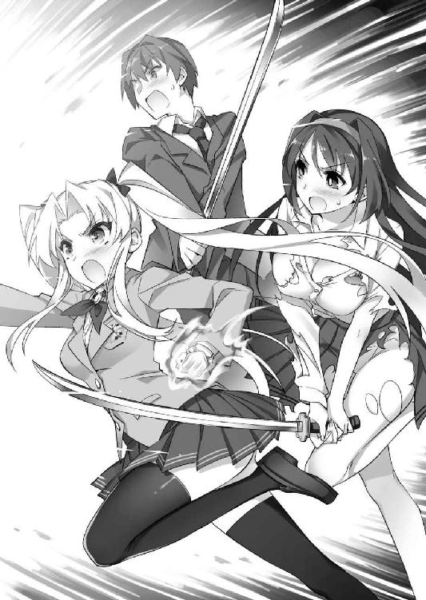
「......いくらお礼を言っても足りないし、いくら謝っても......足りないわね」
戦いの後。荒れ果てた地下室から、広々とした玄関ホールまで戻ったところで、それまで沈黙を保っていた淑女が、後に続く少年と乙女達に深々と頭を下げる。
「何だよ、まだうじうじ言ってんのか、学園長」
「その件については、当分の間、食後にお手製スペシャルスウィーツを追加ということで話がまとまったと、絵里奈は記憶しているのですよ」
「デザートだけではない、おかずも十品追加」
「待ってください!! そこまで過剰な要求を飲んでいただいた記憶はありません！ 人の弱みにつけ込むのは、よくないです！ 不誠実ですよ、みなさん!!」
突っ込む委員長から、絵里奈と藍花が揃って顔を背け、小さく舌打ちを漏らす。
普段は冷静なクール少女も、こと食べ物が絡むと腹黒い一面が出てくるらしい。
「......あたし達は、まあ......もう済んだことだし」
「ボクも。色々考えてみたけど......おにぃに気持ちを伝えて、初めてを捧げられたのは、翠さんが起こしてくれた騒動のおかげだもん。......恨めないかな」
「俺も......まあ、この体質には色々面倒な思いをさせられましたけど、でも、あのとき、乙女の破片の力で立ち直ってなかったら、今、どうなっていたかもわからないし......この力のおかげで、大切な人を何度も救えたのは、事実ですから」
美緒や紗々羅に続いて答えながら、遼人は残された一人に視線を向ける。
（あとは詩音がどう思っているか......だよな）
今まで、どうしてすべてを秘密にしていたのか。そして、どうしてもっと早く彼女の実母の暴走に気づいてくれなかったのか。言いたい不満は山ほどあるだろう。
見守る少年の隣に立ち、しばらくはその気持ちをまとめるように無言でうつむいていた黒髪の美少女は......ただ一言、呟き返した。
「事情はどうあれ、学園長は私のために長年尽力してくださっていた。感謝して当然......恨むはずはありません。過去は――さっき、切り捨てましたから」
淡々と語る最中、詩音の肩が小さく震えたことに遼人は気づいた。
女帝の破片に封じられた、悲しく、辛すぎる過去の記憶。それは完全に消えてしまったわけではなく......やはり、ある程度は蘇っているのだろう。
そこに言及するのは、自分を責める学園長を庇おうとしている、彼女の心遣いを無にすることになる。その想いが伝わってくるからこそ、少年はあえて何も言わず、ただ無言で少女の肩を自分の方に抱き寄せた。
周囲の乙女達もそれに気づいているのか、あえて騒ぐことはない。
「......そうですか」
教え子達の気遣いを察したのか、淑女は長年背負い続けていた重荷を吐き出すように、深々と息を吐きながら肩を落とす。
「これで、あの人の......綾音姉さんの墓前に報告ができます」
かすかに聞こえてきた呟きと共に、今まで見せてきたものとは違う、本心から浮かべている柔らかな笑顔を浮かべる淑女。
愛する人を失った悲しさで、狂気に走ってしまった恩人。その人の罪をようやく清算して、その忘れ形見を救い出せた。その喜びがひしひしと感じられる。
（......これで、やっと幸せな結末完成だ。......もう、当分、騒動はいらないよ）
ホッとして心の中で呟いた直後、慌てて自戒する。こうやって油断していると、また余計なフラグが立つ。もう何度も繰り返してきた失敗ではないか。
だが――そう思ったときには、もう歯車が動き出してしまっていた。
「さて......今、車を呼びますから、みなさんは先に帰っていてください。わたしは、少し残って後始末をしなければ。この周りに民家がないとはいえ、これだけ大きな騒ぎを起こしてしまったのですし、隠蔽工作をしなくてはいけません」
そう説明しながら、車を呼ぶためであろう携帯電話を取り出した学園長が、直後、少し悪戯っぽい笑みを浮かべて言葉を続けた。
「遼人君達は、帰ったら代価を忘れてはダメよ。ふふっ、全員と一度に使ってしまったのだから......少し、大変でしょうけど」
「代価......あっ!?」
いつもと違って自分が力を分け与える立場だったので、すっかりそれを忘れていた。
（全員と代価って......いや、待て、落ち着け！ あれは、ただ傍にいればいいだけって話だったよな。うん......それなら大丈夫だ、問題ない！）
それこそ、ここから寮まで戻る車中、みんなと一緒に居るだけでも十分。
そのはずなのだが――。
「いいわね、代価。......ちょうどいい機会だし......決着つけましょう、しーちゃん！」
「そうですね。先送りにしても、いいことはありませんし」
向き合い、火花を散らす幼馴染み二人。彼女達を中心に、少年の想いとは裏腹に、乙女達の暴走は始まってしまっていた。
「ぜ、全員でいっぺんにって......面白いじゃねぇか！ やってやるよ!!」
「ふふっ、そうやって照れて乙女度全開な樹里さんを愛でつつ、しっかりと涼邑くんのハートもいただいちゃうのですよ♪」
「さっきは邪魔されたけれど......今度は、負けない」
「い、いけませんよ！ そんな不道徳な......いえ、でも、ここで引いたら私だけ除け者に......そ、それはもっといけないです！ 不本意です!!」
「いいよ、他人には絶対入り込めない、兄妹の絆を見せちゃうんだから♪」
それぞれ視線をぶつけ合い、一歩も引かずに燃え上がる乙女達。
制止するタイミングを逸した遼人は、火をつけた学園長を恨めしげに睨み、ぎこちなく乾いた笑みを浮かべることしかできないでいた。
（お、終わったと思った後に、こんな修羅場......現実じゃない）
「覚悟しなさい、遼人！ 今日こそはっきりさせるんだから!!」
「私達の愛を、しっかりと証明してみせましょう、遼くん♪」
「......あはは......」
現実じゃない。誰か、現実じゃないと言ってくれ。
目前に迫った、幸せな結末の前。案の定、修羅場のフラグを立ててしまった主人公は、そんな現実逃避の言葉を心の中で繰り返し叫ぶのだった――。
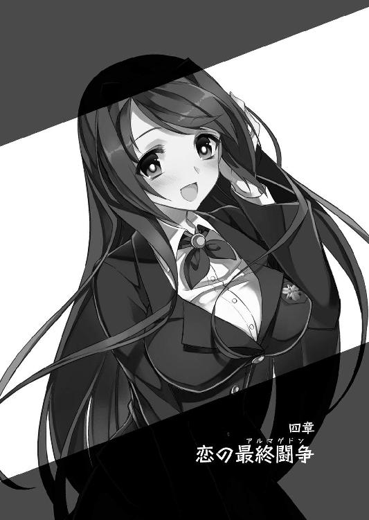
四章 恋の最終闘争
「それでは、ルールはこれで無問題！ オールオッケーでよろしいですね」
「ああ、いいぜ。......へっ、最初とは縁起がいいぜ!!」
「ボクも負けない！ 真っ先に、おにぃとボクの愛を証明しちゃう!!」
「うぅ、こんな方法、とっても不道徳でよくないです......けど......わ、私だけが逃げるのは不本意です！ 絶対、後悔してしまいます。だから......」
部屋の中央、紙を折り曲げて作ったくじを広げつつ、それぞれ意気込みを語る乙女達。
（現実じゃない。こんな勝負、絶対に現実じゃない！）
ベッドに寝転がされた遼人は、何から何まで現実離れした展開に心の中で悲痛な叫びを上げることしかできなかった。
翠が準備してくれた車の中。一番後ろの座席に放置された遼人だけを除け者にして、何やら密談を続けていた乙女達。
嫌な予感が止まらず、寮に着くなり自室に引きこもろうとしたが、なぜか一緒になってついてきた彼女達に服を剥ぎ取られ、一糸纏わぬ姿でベッドに転がされてしまったのだ。
「第二陣......作戦を立てる時間があるのは、好都合」
「むぅ、何であたしは最後なのよ！ しかも、コンビになるのが......」
「不満なのは、私も一緒です!! 何だか最近、あなたと一緒に行動させられる機会が妙に多い気がします。人を散々ストーカー呼ばわりしておいて、自分がそれですか！」
「ち、違うわよ！ というか、これくじ！ くじ引きで決まったことでしょ!!」
一度に全員で挑むのは、効率が悪い。そんな絵里奈の提案で、くじを引いてチーム分けを始めた乙女達。逃げだそうにもベッドがグルリと囲まれていて、どうにもならない。
異様に燃え上がっている彼女達を下手に刺激すると、また危険な闘争が始まってしまいそう。そんなフラグもひしひしと感じ、なすがままでいるしかなかった。
「あ、あのさ......どうして、こんなこと？」
さすがに事情もわからず、ただ流されるままでいるのは耐えられない。
遼人はなけなしの勇気を振り絞り、恐る恐る話に混ざる。
だが、そう切り出した少年に――その場に集まった七人の乙女の冷たい視線が、まるで事前に打ち合わせでもしていたかのごとく、息をぴったり合わせて突き刺さった。
「仕方ないよ......だって、いい加減におにぃの気持ちにも決着つけて欲しいし」
「テンションも上がっているし、滅多にないチャンスだと絵里奈は思うのですよ」
「そ、そうよ！ それとも遼人は、いつまでも自分を巡ってあたし達が喧嘩してた方がいいっていうわけ!? そ、それがちょっと楽しいとか、ふざけたこと思ってる？」
ジロリと目を細めて睨みつけてくる妹と腹黒少女に続き、すっかり熱くなってしまっているツンデレ少女が、厳しい表情で詰め寄ってくる。
「お、思ってない！ そんな失礼なこと、思うわけないだろ!! でも......」
「......そうですね。今日はみなさんに救われた恩があるから、自重しようと考えていましたけど......遼くんがそうおっしゃるのなら、私も覚悟を決めます！」
言いよどむ少年を思い詰めた表情で見下ろしていたヤンデレ少女が、いきなり懐から大きな裁ち切りバサミを取り出した。
「ひっ!? 詩音、そのハサミどこから出したんだよ！ し、しまえ！ 危ないって！」
見ているだけで脇腹の古傷が痛んでくる、トラウマを抉る凶器。ある意味、今まで散々彼女が振り回していた日本刀よりも危険な得物に、身体の震えが止められなくなる。
「今までのように乙女の破片の力で刀を取り出せなくなったので、万が一のときのために部屋から持ち出してきたのですけど......これだと、いまいち迫力不足ですね。実家には真剣が何振りかあるのですが......さっき、持ち帰っておくべきでした」
「ダ、ダメですよ！ とってもよくないです！ というか、法律違反ですから!!」
真顔で呟くヤンデレ少女の手からハサミを奪いつつ、必死に訴える委員長。
この場に残された、最後の良心。その期待を胸に彼女に視線を送る――が。
「遼人君のトラウマを抉ってしまいそうだということで、物騒なやり方ではなく......その......不道徳ですけど穏便な方法で闘争しようと決めたのです！ 理解してください!!」
期待と裏腹の、この状況を肯定する発言に、乙女達が一斉に頷く。
「遼くんが汚されてしまうのを見るのは少し辛いですけれど、これも勝負のためです」
「負けないんだから......絶対！ しーちゃんにも、みんなにも......」
思い詰めた表情で呟きながら、制服のタイを解き始めた幼馴染み二人。
彼女達に合わせるように、他の面々も手早く制服の前をはだけさせていく。
ふわりと部屋に漂う、ミントや蜂蜜やミルク、様々なものが入り交じった、若い少女達特有の甘い香り。鼻腔をくすぐる匂いに思わず生唾を飲みつつ、遼人はさすがにおとなしくしている場合ではないと、ガバッと跳ね起きて叫ぶ。
「だ、だから、それがどうして......エ、エ、エッチすることになるんだよ!!」
全員で遼人とエッチした後、改めて一人を選んでもらう。
それが服を剥ぎ取られながら告げられた、今回の闘争の趣旨なのだ。
「そんなの、あまりにも現実じゃない......というか、不誠実というか......」
「だーっ、もう、いい加減に腹をくくれよ、涼邑！ ......おい、始めるぜ!!」
「ひゃっ、ひゃいっ......ごめんなさい、涼邑君！ でも......でもぉ......」
何とか思いとどまってもらおうと訴えかけた刹那、業を煮やしたように叫んだ樹里と、彼女に手を引かれるまま迫ってきた智子にのしかかられ、ベッドに倒れ込んでしまう。
「こ、言葉だけで伝えるより、行動が伴っていた方が、あたい達の本気がわかるだろうしよ......だから......き、気にせずにご奉仕されてればいいんだよ、てめぇは！」
「不道徳ですけど、でも、合理的ではあります。その......わ、私も昨日のことはあまりよく覚えていないので、ちゃんと素面で経験したいという気持ちもありますし......」
横たわる遼人の胸板へ覆い被さり、上目遣いで訴えてくる乙女二人。
制服とシャツのボタンがすべて外され、大きく開いた胸元。さらけ出された乳房が、惜しげもなく擦りつけられている。
健康的な空色のスポーツブラが捲り上げられ、そこから飛び出した弾力のあるヤンキー少女の乳房。その生真面目な性格に相応しい、装飾のあまりない純白のブラからこぼれるふわふわとマシュマロのように柔らかい委員長の乳房。
大きさは互角だが感触はそれぞれに特徴の違う双乳が、身じろぎに合わせて汗で湿った胸板の上で、グニュリと形を変えながら滑る。
「ちょ、ちょっと待って！ んぅっ、こんな......おかしいって、やめ......ふぁあっ!!」
乳肌も汗で濡れているおかげで、しっとりと吸いつく感触がかなり強い。
「くっ、んぅっ、はぁ、動かないで......うぅっ」
数時間前、詩音に刻み込まれた歯形が未だに残る肌を、双丘で撫でられる。
擦れる動きに合わせて表皮が引っ張られ、そのくすぐったいようなむず痒いような刺激に、我慢できず声が上擦ってしまう。
（こんな......まずいって！）
何人かと同時に交わる、そんな非現実的な経験は幾度も味わったことがある。
だが、顔見知りの乙女達全員に取り囲まれて同時に襲われるというのは、目が眩みそうな羞恥と、お腹の底が握り潰されるような不安を感じてしまう。
（絶対、ただじゃ済まない！ 済むはずがないっ!!）
もう心の中で叫ぼうが黙っていようが、フラグが立つに決まっている。
そんな諦めに似た気分で、ベッドの脇に並ぶ乙女達の中――こういうときに必ず暴走をする二人の幼馴染みの様子をうかがってみた。
昨夜も自分が多くの乙女達に群がられる姿を見て、大爆発したのだ。勝負として表面的には納得しているとしても、実際に目の当たりにして耐えていられるかどうか。
（でも、いっそ爆発してくれた方が、うやむやになっていいかも......）
そんなやけっぱちな期待を胸に、二人の口から怒声が飛び出すのを待つ――が。
「そんな不安そうな目をしなくても、暴れないから安心しなさい！ こ、これは勝負......遼人をあたしのものにするために、乗り越えないといけない試練だもん!!」
「最後までできるのは選んでもらったものだけの特権として、挿入はなしというルールですから、遼くんの赤ちゃんを私以外が孕むという、最悪の事態は起こりえませんし......辛いですけど、これも愛の試練です。......た、耐えてみせます！」
そんな遼人の期待と裏腹に、二人は悔しそうに歯を食いしばりながらも暴走せず、おとなしく成り行きを見守るつもりらしい。
（どうしてこういうときに限って、そんな物わかりがいいんだよ！）
長年秘めていた想いを告白できたことで、心に余裕を持てるようになったのか。
みんなに救われたことを、内心相当嬉しく思い、また感謝もしているのか。
それぞれ理由は違うだろうが、いつもとはまるで違うおとなしさの幼馴染み達を横目に、遼人は胸肌をくすぐるように擦る双丘の感触に悶え、泣きたい気分で叫ぶしかなかった。
「ふふっ、覚悟を決めるのですよ、涼邑くん♪ いくら『主人公』の運命とはいえ、こんなに大勢の乙女の心を虜にした上、初めてまで奪ってしまったのです。最後のけじめとして......おとなしく玩具になるべきだと、絵里奈は思うのです」
「玩具って......んふっ、はぁ、それにけじめ......何で......ふぁんぅっ！」
「恋人を選ぶにおいて、セックスの相性はかなり重要。そう、七海さんに薦められたいくつかの本に書いてあった。涼邑君は、特に色を好むようだし......妥当」
「色を好むとか言わないでくれ！ そんなこと......なぁ、い......んぁっ」
愉快そうに告げる絵里奈と、いつもどおり本を開き淡々と説明する藍花。
身悶えながらも、何とか弁解しようと口を開きかけた刹那。
「えぇ～、今更、言い訳してもダメだよ、おにぃ♪ だって......おにぃは、妹のボクとも子作りエッチしちゃう、いけないお兄ちゃんだもんねぇ......ふふっ」
足元から聞こえてきた、昔から馴染みあるブラコン妹の弾んだ声。トランクスがまさぐられ、取り出された屹立を柔らかい手の平でギュッと包み込まれる。
「んふっ、あぁ、さ、紗々羅！ お前......んくっ、ああっ!!」
胸元にのしかかる二人の先輩を真似るように、大きく服の前を開いた紗々羅が足元で四つん這いに蹲り、手にした屹立を熱っぽい瞳で見つめていた。
竿幹を両手でしっかりと握り、今にも頬ずりしたいと言わんばかりに、赤く頬を火照らせた顔を近づけてきている。少し荒い吐息がふくらみかけている亀頭粘膜を撫で、そのむず痒い刺激に自然と腰が震えてしまう。
「あはっ、おにぃのオチンチンの匂い、一日振り～......んふっ、やっぱりボク、この匂い大好き......嗅いでるだけでお腹の奥が熱くなって......あふっ、頭、ボーッとしちゃう」
ピンッと張ってきている竿肌を上下に擦り、先端の穴口に鼻先を押しつけ、まるで子犬のようにクンクンと可愛らしく匂いを嗅ぐ、ふわふわ髪の少女。
間近で吹きかけられる吐息に、亀頭だけではなく裏筋の方までくすぐられる。
理性ではどうにもならない甘い快感が竿の芯を走り、次第に勢いづいてきてしまう。
「やめ......ろって、こら、紗々羅！ そんなところの匂い......か、嗅ぐなって！ 俺、まだシャワーも浴びてないし......そ、そうだ、せめて汗を流してから......」
むず痒い刺激に戸惑いながらも、遼人はハッと思いついて乙女達に訴える。
シャワーを浴びるからと少し間を置けば、熱くなって暴走している彼女達も頭が冷えるかもしれない。これが、最後のチャンスだ。
だが、そんな少年の淡い期待を打ち壊すように、兄のペニスを夢中で弄んでいるブラコン妹が、にっこりと嬉しそうな微笑みを浮かべた。
「それなら、大丈夫！ おにぃの身体......ボクが綺麗にしてあげる。ふふっ、凄くいい匂いの汗......シャワーで流しちゃうなんて、もったいないもん。ちゅっ、はむっ、んぅっ！」
「んぁっ、んんんっ！ おまっ......うあっ、あああっ!!」
弾んだ声に合わせ、間近に迫ってきていた桃色の唇が、赤黒く張った隆起の形に沿ってぴったりと押しつけられた。すぐに舌が伸びてきて、吐息で責められて感度が増してきていた鈴口や雁首の裏が、チロチロと小刻みな動きで舐められる。
「はむっ、ちゅっ、あはっ、おにぃのオチンチンの味......少ししょっぱくて、美味しいよ......んちゅっ、ちゅぱっ！ 舐めてるだけで、ドキドキして......幸せぇ♪」
汗ばむ肉幹を夢中で舐めしゃぶり、瞳から光が消えてしまうくらい恍惚と酔いしれている紗々羅。考えてみれば彼女は、洗濯物を舌で舐めて綺麗にすると豪語するくらい、兄である少年の匂いフェチでもあった。こんな理由で、止められるはずもない。
「はっ、んんっ！ 本当、やめ......やばいって、そんな......んぁっ!!」
断続的に脳天まで響いてくる、小さな舌が小刻みに蠢く刺激。
亀頭だけではなく、裏筋や睾丸袋、更に股の付け根の方にまでブラコン妹の舌は這い、熱く滑る唾液を擦り込まれてしまっている。
舐められた瞬間は温かく、離れると外気に触れてひんやりとする、緩急のある感覚。
吐息が自然と荒くなり、身体の力が抜けていくのを我慢できない。
「妹に舐められて、そんな気持ちよさそうな顔するとか......うぅっ、やっぱり、黙って見てるだけだと、何だかモヤモヤしてくる！ お、落ち着かない!!」
そんな蕩けそうな少年を、不服そうに頬をふくらませて見下ろすツンデレ少女。
隣に立つヤンデレ少女や、その向かいの腹黒娘やクール少女も、背徳の快感に悶えている少年を、実に複雑そうな表情で見つめていた。
ただの交わりではなく、許されない禁忌を犯している瞬間を観察されている。
その思いがより深い羞恥を感じさせて、まともに視線を合わすこともできない。
逃げるようにうつむくと、今度は胸板に覆い被さっている残りの二人と視線が合った。
「綺麗にして欲しいって言うなら......あたいだってやってやるよ！ 涼邑の妹には真似できねぇ、とっておきの武器もあるしな!!」
「は、はしたないですけど......今日ばかりは、不道徳もやむを得ません！」
頬を赤く染め、覚悟を決めたように叫んだ直後、樹里と智子が揃って身体を滑らせる。
首筋から、みぞおちまで。ゆっくり肢体を前後に動かすのに合わせ、押しつけられて楕円に弛んでいたそれぞれの巨乳に、汗ばむ肌をズリズリと強く擦られていく。
「なっ、んっ、はぁ、うううっ！ そんな......や、やめ......くすぐったぁ......うぅっ」
休みなく形を変える乳房の動きに合わせて、きめ細やかな肌に擦り拭われる。
くすぐったく、表皮が少しずつ蕩けてしまいそうな心地よさ。手やスポンジで擦られるのとは次元が違う、まともに言葉を紡ぐのも難しくなる強烈な快感が込み上げてきた。
「へっ、何だよ、その情けない顔......本当、胸が好きだよな、涼邑って。ま、まあ......おかげであたいにとっては、好都合なんだけどな」
悶える少年をからかうように呟きながら、嬉しそうに微笑むヤンキー少女。
特徴的な癖毛を揺さぶるように、全身を大きく円を描くように動かし、胸板だけではな く脇腹や二の腕の方にまで乳房を擦りつけてくる。
肌が強く押される弾力と、強めの摩擦で高まってきた熱感。肌の快感神経が否応なしに活性化させられ、何だかますます身体が火照り、汗ばんできてしまうようだ。
「懐かしいです。前、こうして......んっ、む、胸で遼人君のあそこ、ご奉仕してあげたことを思い出してしまって......はふっ、私も不謹慎な気持ちに......んふっ、ひゃんんっ」
樹里よりはやや控え目に身体を揺さぶる委員長は、その摩擦で自らも感じてしまっているらしく、既に声が甘ったるく変わってきていた。
淡い桃色に染まり始めた、ふわふわの巨乳。今にも潰れてしまうのではないかと心配になるほどの柔らかさの中、頂点でぷっくりと豆粒のようにふくらみ始めたニプルの硬い感触がアクセントになり、より摩擦の甘美な刺激が強くなってきた。
「ほら、もっと擦ってやるよ。あたいが、こんな......んぅっ、む、胸でしてやろうなんて思える男、お前だけだ......あたいを可愛いって認めてくれたお前と一緒にいれば......ちゃんと乙女らしくなれる......だから......んぁっ、はぁ、はむっ、ううっ」
「私も......空回りしてしまいがちですけど、そんな私でもちゃんと認めてくれる、頑張っているって励ましてくれる遼人君と......ずっと一緒に居たい」
それぞれ胸に秘めていた想いを呟きながら、その気持ちを乳脂肪越しに伝えようと言わんばかりに、強く押しつけてくる乙女達。
重量感たっぷりに揺れ弛む乳肉は、視覚的にも少年を昂らせてくれる。
休みなく扱かれるペニスの感度が増し、そこを掴む妹の手を押し返さんばかりの強さで幹胴がふくらんできてしまうのが、自分でもはっきりとわかった。
「むぅ、おにぃ、大きなおっぱいばっかりに気を取られちゃダメ！ ボクのおっぱいだって、おにぃを気持ちよくしてあげられるって......また、証明してあげるよ!!」
「え......んうっ、ふぁっ、ああっ！」
少しムキになったふわふわツインテールの声に合わせ、じわじわと熱いカウパー腺液を滲ませていた鈴口に、硬い感触が押しつけられた。
小さな穴口を執拗に穿り、奥に入り込もうとしてくる。その乱暴な動きに、軽い痛みとそれをはるかに上回るジンと痺れる鋭い快感に襲われてしまう。
「あはっ、早速、オチンチンがビクビクしてきたよ。んふっ、ふふっ、やっぱりおっぱいフェチだよねぇ、おにぃって。ほら......気持ちいいよね、ボクの小さなおっぱいも」
敏感に反応する屹立の根元を掴んだまま、火照る頬を恍惚と緩めるブラコン妹。
大きくはだけた胸元、限りなく平野に近い隆起の中央を飾る突起が、亀頭の先端へ執拗に擦りつけられている。
「ま、また、それかよ......やめ......うぅ、そんなに擦りつけるなって......うぁあっ！」
叱りつけようとする声は甘く上擦り、威厳も何もかも吹き飛んでしまう。
小さなおっぱいでするパイズリだから、チッパイズリとでも略せばいいのか。
十円玉よりも小さな乳輪の中央、可愛らしく尖った乳首でペニスを刺激される。昨日も味わわされた紗々羅の得意技。穴口から尿道に向かって腰が浮いてしまいそうな甘美な痺れが走り、何も抵抗することができずにただ身悶えるしかない。
「どう、大きさなんて関係なく......おにぃを喜ばせてあげられるんだから。おっぱいの大きさなんかで選んじゃダメだよ？ ふふっ......んぁっ、はぁ、くふぁっ」
悪戯っぽく桃色の唇を綻ばせながら、ふわふわ髪の妹は鈴口に押し込もうとしていた乳首を、そのまま裏筋の方へと滑らせてきた。
滲み出る先走り汁をたっぷりと塗り込んだおかげか、スムーズに肉傘を乗り越え、竿の中程まで擦れていくニプル。コリコリと小気味よい感触が、特に敏感な部分だけを集中的に擦り、弾き、刺激してくる。その絶妙な動きで剛直は更に勢いづき、今にも破裂してしまうのではないかと不安になるくらい、表皮がパンパンになってきた。
「ほら、気持ちいいよね？ 射精しちゃいそうだよね？ ......ボクはずっと、おにぃだけを見てきた......おにぃのことなら、誰にも負けない......んっ、だから、兄妹としてだけじゃなくて......恋人としても、おにぃを独占したい！ いいでしょ？ いいよね？」
「はぁっ、ううっ！ ダメだ、そんな......お、俺、もう......んぁっ、うぅっ」
荒く息を切らしながら、再び鈴口に乳首を当て、執拗に押し込んでくる紗々羅。
その情熱的な想いと、穴を無理矢理拡張されていくジンジンと強い刺激に、遼人も呼吸が乱れ、腰が痺れてしまうような射精の欲求を堪えきれなくなってきた。
「ちょっと待った！ そのまま一人だけいいところは持っていかせねぇぞ!!」
「私だって、と、とっても不道徳ですけど......できます！ したことありますから」
ふわふわ髪のブラコン妹一人にペースを握らせてはなるものかと、お腹や胸元へ隆起を擦りつけてきていた二人が、そのまま下腹部まで弛む乳房を滑らせてきた。
垂直にそそり立ち、休みなく脈動する肉槍。右から樹里、左から智子、押しつけられる豊かなふくらみの谷間に、根元から中程まで挟み込まれてしまう。
「ほら、これも感じるだろ？ 前、呆れるくらい射精しまくったろうが！」
「私も覚えています。樹里さんとの闘争で熱くなってしまったとき......おっぱいが真っ白になってしまうくらい、出してくれました......とっても熱かったですぅ」
かつて保健室で、二人から闘争の名目で迫られたときと同じように、左右から寄せられた双丘で勃起竿を執拗に擦られる。
肌との摩擦で更に火照り、汗ばんできている乳肌。血管が浮かび出るほどふくらんでいる幹胴の表皮が軽く引っ張られると、その部分で小さく火花が散るかのような激しい快感が弾け、呼吸もままならないほど昂ってきてしまう。
「あはぁ、オチンチンの先っぽから、ヌルヌルたくさん出てきてるよ。おにぃ......出ちゃうの？ ボクの乳首、精液でドロドロにしてくれる？」
「へへっ、やっぱり大きな方が気持ちいいか？ チ、チンポ......また大きくなってきてるじゃねぇかよ。本当......元気だ......げ、元気よすぎるチンポだぜ、これぇ」
「でも......はふっ、か、管理します。委員長として、恋人として......遼人君が健全な学園生活を送れるように、私が......してあげたいぃ、はぁ、はふっ！」
少年の興奮が移ったかのように、うっとりとした表情で口々に訴える乙女達。
より硬くふくらんだ紗々羅の可愛らしい乳首で鈴口を穿られ、縦長になるほど寄せられた樹里の乳房で、雁首を繰り返し弾かれる。
根元の部分をふわふわと柔らかい智子の隆起に包み込まれ、そこに溜まっている迸りの予感を押し出そうとせんばかりに、先端に向かって扱かれていく。
それぞれの情熱的な想いが伝わってくる、熱心な乳奉仕。
荒く息を切らしながら、背筋を駆け上ってくる絶頂の予感に身震いしていた遼人は、何も考えられなくなるくらい頭の中が白濁し、ただ息を切らすことしかできなくなる。
「ほら、射精しちまえよ......あたしの胸で、いっぱい出せぇ」
「ど、どうぞ。ご遠慮なく......んふっ、はぁ、ふぁっ、あぁ......」
「きて、おにぃ！ ボクのおっぱいも顔もぉ......おにぃの精液でマーキングしてぇ」
グチュッ、ヌチュウッ......ヌチュゥッ......。
熱っぽく甘い言葉に合わせ、より激しくなってくる乙女達の奉仕。
鈴口や雁首、そして玉袋まで。乳首で突き穿られ、弛む乳肉で擦られ、圧迫される刺激に、腰の奥で燃えるように熱い昂りが一気に弾けた。
「で、出るっ！ 俺、もう......うぐっ、はぁうううううっ！」
ドプリュッ、ビュブゥッ、ビュルルルルルゥッ!! ドップゥッ、ブリュルルルルッ！
茹だるように熱く火照る乳房に囲まれた幹胴を駆け上り、押しつけられた乳頭に当たって辺り一帯に飛び散っていく、真っ白な熱液。
その白い雨を、屹立を囲む乙女達は恍惚の表情で浴びていた。
「くんっ、はぁっ、ああ......あ、相変わらず濃いな、涼邑の......んふっ、はぁ」
「とっても健康的で......す、素敵ですぅ。はむっ、はぁ、ちゅぅっ」
「えへっ、おにぃの匂いの中でもぉ......やっぱり、これぇ......精液の匂いが、ボク、一番好きぃ......んふっ、子宮がキュンってしてぇ、に、匂いだけでイキそぉっ」
すっかりとスイッチの入ってしまっている紗々羅は、綻ぶ唇の隙間から舌を伸ばし、口元に付着した白濁の残滓を美味しそうに舐め取り始めていた。
射精の勢いに圧倒され、噴き出る白い液体をうっとりと見守ることしかできないでいた樹里と智子も、それを真似するようにおずおずと舌を伸ばしてくる。
「お、お掃除......後始末も大切ですし......んちゅっ、れろっ、ちゅっ、はむぅっ」
「ああ、んっ、こら独り占めすんな。あたいの分も取っておけよ......れろっ、んぅっ」
「ちゅっ、はぁ、もぉっ、ボクもぉ......もっと舐める......ちゅぱっ、あはぁっ」
「ちょ、み、みんな、舐めすぎ！ そんな......んくっ、ひぅっ、あああっ!!」
射精直後で敏感になっている亀頭を、競い合うように這う三人の熱い舌。
飛び散る精液の代わりに唾液を塗り込まれ、たぷたぷと揺れる左右の巨乳に擦り促されるまま、尿道に残った最後の一滴まで舐め味わわれてしまう。
「やぁっ、ひっ、はぁはぁ......ちょ、んんっ、く、くすぐったいって！ うぅっ」
すっかり脱力してしまっている遼人は、腰の感覚が麻痺してしまいそうなくすぐったさに翻弄され、ただ情けない声で訴え続けることしかできなかった。
熱心に後始末を続ける三人の姿から、自分への強い想いが改めて伝わってくる。
嬉しいような、申し訳ないような。複雑な想いに胸を痛いくらい締めつけられ、思わず顔を悲しげに顰めてしまっていた――最中。
「むぅ、涼邑くん、まだ始まったばかりなのにそんなローテンションじゃ、後が続かないのですよ！ もっとアゲアゲでいって欲しいと、絵里奈はお願いするのです!!」
「い、いや、そう言われても......」
「それなら......絵里奈が、無理矢理テンションマックスにしちゃいますけど、覚悟はよろしいですか？ さあ、お三方、一度射精させたら交代のルールですし、そろそろ絵里奈達に場所を譲ってくださいませ！ 第二チーム、出陣なのです!!」
少年の重苦しい雰囲気を吹き飛ばす、三つ編み少女の楽しそうに弾んだ声。
少し名残惜しそうに赤黒く勃起したペニスを見つめながらも、素直に引き下がった三人の乙女に代わり、今度は彼女が足元に蹲ってきた。
「むむむっ、何だかオチンチンまでローテンションになりかけているのですよ！ こんな美少女を前にしてちょっと失礼だと、絵里奈はむくれちゃいます!!」
「そ、そう言われても、今、射精したばかりだし......」
この非現実的な状況でも、いつもの調子を崩さずに飄々としている腹黒娘。
彼女がその白魚のようにほっそりと美しい指でつつく剛直は、ようやく射精の余韻も鎮まり、少しずつ勢いを失い始めていた。
幼馴染み二人と順々に交わった上に、今まで一番激しい闘争を戦い抜いたのだ。さすがに体力も精力も限界が近く、いつもほどの元気はない。
（このまま萎えちゃえば、終わりになる......かな？）
男としてはちょっと......いや、かなり情けなく、あまり好ましい解決方法ではないが、それでもこの修羅場が続くよりは――そう淡い期待を抱きかけた刹那。
「ふふっ、面白いのです♪ それでは......このチャンスに、しっかりとアピールさせてもらうのですよ。涼邑くん、絵里奈ちゃんの妙技、とくと味わうのです！」
半立ちになってきていた肉槍を鈴口から根元まで指先で撫で、ほんの少しだけ残っていた白濁の残滓をすくい取り、それを見せつけるようにチュッと唇で舐め取った直後。
たっぷりと唾液を塗されたその細い人差し指が、裏筋や陰嚢、そこから股の間を伸びている縫い目のような部分をくすぐるように滑っていく。
「ひぅっ！ なっ、うっ、どこ......くんんっ!!」
触れるか否か。ツーッと淡い接触で撫でられ、もどかしい刺激に声を震わせてしまう。
「ここが感じますか？ 蟻の門渡りと言うのですけどぉ......あはっ、くすぐっているだけで、オチンチンが可愛らしく震えてきましたねぇ♪ ほら、こちょこちょ～」
少年を楽しそうに見つめながら、絵里奈は爪先で股間の筋を執拗に刺激してきた。
縫い目のように盛り上がった部分を左右に弾かれ、その頂点をなぞられる。手慣れた指使いにくすぐったさは強くなる一方で、耐えられずに腰を浮かせて身悶えてしまう。
「やめっ、くうっ、そんなにくすぐるなって！ あふっ、んんんっ!!」
「あははっ、まだまだ、これは前菜ですよ？ 絵里奈の本命は～ここっ！」
腹黒という属性に相応しい、悪戯っぽく意味深な微笑みを薄くリップの塗られた口に浮かべた絵里奈が、その指を一気にお尻の方へと滑らせてくる。
絶え間なく与えられていた刺激を堪えるように、皺同士を噛み合わせて固く閉じていた尻穴。そこを唾液で濡れた指先で、解すようにグリグリと強くまさぐられてしまう。
「んふっ、あっ......なっ、そこ......ま、まさか......」
「たまには入れられる快感を味わってみるのも、新鮮ではないでしょうか？ 大丈夫なのですよ、ちゃんと優しく......気持ちよくしてあげますから♪」
――ツプゥッ、ヌップウゥゥゥ......。
「あぉっ、おおおっ!? んぁっ、そこ......んぐっ、うううっ！」
チロリと獲物を狙う肉食動物のように舌先で唇を舐めながら、腹黒娘はその指を一気に遼人のアナルへ突き入れてきた。侵入者を拒むように収縮した穴口を強引に広げられ、細い指が直腸の方まで滑るように突き進んでくる。
「んがぁっ、ああっ、うううっ！ なっ、何を考えて......んぁぁっ!?」
必死に腰を浮かせて異物の挿入を拒もうとするが、絵里奈の指はすぐにそれを追いかけてきて、どうにもならない。
折れてしまいそうなくらい細い指が、ただ一本。それだけなのに、お腹の中が強く圧迫されるかのような息苦しさが込み上げてきて、身体に力が入らなくなる。
「ゆ、指、何で、こんな......にっ、くぁっ、うぐぅっ！」
「ふふっ、入口がギュッと締まって、絵里奈の指を離してくれなくなってます。エッチなのはオチンチンだけではなかったのですね、涼邑くん♪」
悶える少年の羞恥を煽るように、にっこりと笑顔で囁きかけてくる腹黒娘。
そんな声に合わせ、尻穴を広げるように突き立てられた指が左右に捻られ、軽く折り曲げられた指先で腸道をそっと撫でるように擦られる。
「はぁっ、うううっ！ う、動かすなって、そこ......やめ......んぁっ!!」
（しゃ、洒落になってない！ 女の子にお尻いじめられて悶えるとか......）
息を切らしながら周囲を見ると、黒髪と金髪の幼馴染みも、今さっき、自分へ想いを伝えながら奉仕してくれていた三人も、息を飲むように熱い視線を向けてきていた。
ある意味、人生で一番恥ずかしい姿を、自分を想ってくれている乙女達に凝視されている。顔から火を噴きそうなくらい羞恥が高まり、身体の震えが止まらなくなってきた。
「頼むからぁ、や、やめてくれよ！ そんなっ、んぐ、お尻の中......とかぁっ!!」
「でも、涼邑くんのオチンチン、少しずつ元気になってきていますよ？ 恥ずかしくて苦しいのに、興奮しちゃっているのですかぁ～？ ふふっ、エッチのときは何だかんだとたくましいから、実はドＳなのかもと思っていたのですけど......受けもいける万能型だったのですねぇ。絵里奈、ますます好きになっちゃいそうなのですよ」
遼人の悶える姿をうっとりと見つめながら、腹黒娘はその反応を楽しむようにゆっくりと肛門に突き立てた指の抽送を続けていた。
入口の皺が捲られ、狭苦しい直腸や入口の傍を擦られる。
延々と続く、生まれて初めて味わう挿入の刺激と羞恥に、自分でも不思議なくらい身体の火照りが増してきた。
「くふっ、はぁ、お、俺はそんな......受けとか、きょ、興味ないぃ、んぁぁっ」
「......問題ない。私も......そういう性癖に対応できるよう、知識は仕入れてあるから」
必死に弁明する遼人に、傍らからクール少女の淡々とした声が投げかけられる。
また、何か嫌なフラグを立ててしまった。そんな予感に背筋を震わせた直後。
ふわりとスカートを捲った藍花がベッドに上がり、戸惑う遼人の顔を跨ぐように立つ。
淡い薄緑のショーツは辛うじて右の足首に引っかかるところまでずり下ろされ、本来なら隠されるべきキュッと小さく引き締まった尻房も股間も、丸見えの状態。
思わず呼吸をすることも忘れてしまうような魅惑の光景に息を飲んでいると、小刻みに震える真っ直ぐな縦筋が、そのまま顔の方へ迫ってきた。
「むごぉっ、んんぅ、はむ、ううぅっ!?」
唇の辺りに押しつけられた、グチュグチュと濡れた肉唇。鼻先は小ぶりな桃のように愛らしい尻房の谷間に挟み込まれ、見た目以上に柔らかな感触が伝わってくる。
（か、顔に乗っかられてる......!? な、何だ、これ！）
声を出せず、心の中で信じ難い現実を叫ぶ。
普段、誰よりもおとなしく冷静な少女がしたと思えない、大胆な行動。むせ返るように強く漂ってくるミントに似た香りに翻弄されつつ、何もできずに驚くしかなかった。
「責められるのが好きな男の人は、こうして......女性の恥ずかしい部分を押しつけられ、奉仕を強要されることで発情する例も多いと、本で学んだ......から」
「おーっ、周防さん、絵里奈が貸した本でちゃんと勉強していたのですね！ 感心なのです！ 絵里奈秘蔵の本を、特別に提供した甲斐があったと言うものなのですよ」
淡々と説明するクール少女と、それを明るく弾んだ声で褒める腹黒娘。
「ど、どんな本で勉強してるんだよ！ 女の子同士でそんな本の貸し借りするとか、現実じゃないし、不誠実だし......んぐっ、ううっ、はぁ、なぁ......んんんっ!!」
抗議しようとする声も、執拗に擦りつけられる藍花の割れ目に妨げられてしまう。
唇が大陰唇と擦れる度、そこがクチュリと小さな音を立てて捲れ、爽やかな香りの蜜液が溢れ出てくる。隙間から口内にも入り込んでくる甘液の味わいに、頭の中がまるでサウナにでも入っているかのように朦朧としてきてしまう。
（周防さん、もう凄く濡れてる......興奮してる......のか？）
「舐めて欲しい、涼邑君。さっき、部屋でしていたことを思い出してしまって、私も身体が熱い。奥の方が疼いて......んふっ、はぁ、あぁ......」
少し恥ずかしそうに震える声で呟きながら、水色髪の少女は腰を休みなく前後へ振り動かし、肉裂を口や鼻先へ強く擦りつけてくる。
濡れた粘膜肉が卑猥な水音を響かせながら擦れ、口元があっという間に少女の熱い愛蜜塗れになっていく。熟れすぎた果実を潰したような、グチュグチュと柔らかい粘膜肉。表面がツルツルとして張りがある、雪色の尻肌。
それぞれに魅力的な感触に顔全体を押し潰され、呼吸もままならない状態。ある意味、屈辱的とも言える姿勢なのに、遼人はまるで嫌悪を感じず、むしろ身体の芯が熱く疼いてくるのを堪えられなくなっていた。
（顔中、周防さんのお尻やオマ○コで......温かくて、甘くて、いい匂い......）
息をする度、濃厚な蜜臭に頭の芯が痺れる。
視界も妨げられているせいか、自分が今、多くの乙女達に取り囲まれている状況だということを意識せずに済み、それが理性のタガを急速に緩めていく。
「んっ、ちゅっ、はぁ、周防さん、俺......んちゅっ、はむっ、ちゅっ！」
熱心な腰使いに応えるように舌を伸ばし、押しつけられた肉唇にしゃぶりついた。
摩擦で程よく綻び、色素の薄い小陰唇が露出してきている割れ目。溢れる蜜をすくい取るように舌を動かし、端から端まで丁寧に舐め上げていく。
「んっ、あ......涼邑君の舌が、動いてる。私の......オマ○コ......んぁっ、ああっ」
本で覚えたであろう卑猥な言い方で呟き漏らし、より強い刺激を求めるように腰を落としてくるクール少女。その可愛らしい反応に、気持ちが燃え上がってくる。
（何か俺、また凄く興奮して......やばい、あそこも元気になってきてるような......）
その思いに合わせて舌の動きも活発になり、しっかりとディープキスをするように割れ目と唇を密着させながら、蜜を滴らせる穴口を重点的に突き責めていく。
「はぁ、くふっ......あぁ......涼邑君にしてもらっていると思うと......敏感になって、止まらない。本で調べて、自分でしてみたときと全然違う。これは、私が涼邑君を愛しているから......？ 愛情が何よりも乙女の身体を敏感にすると、本に書いてあった......」
「んあっ、はぁ、そ、そうなのかな。俺もよくわからない......けど......ちゅっ」
「きっと、本当。好き......知りたがりで、周りを振り回してしまうような私でも受け入れてくれる。優しく応えてくれた涼邑君が......私は、大好き」
途切れ途切れに漏れる告白の言葉に合わせ、藍花の太股が遼人の頬を挟むようにギュッと閉じられる。ほっそりとしていても、ちゃんと乙女特有の柔らかさを持つそこの感触を顔全体で感じると、息苦しさと同時に胸が熱くなるような喜びも感じてしまう。
（周防さんも、俺のこと本気で......何か、ドキドキしてきて......やばい）
「やっぱり責められるのもイケるみたいですねぇ、涼邑くんは♪ オチンチン、もうバキバキに勃起してきているのですよ。それじゃあ、絵里奈も奥の手を出しちゃうのです」
少年が自らの昂りを自覚した直後、尻穴を弄っていた腹黒娘が弾んだ声で呟いた。
何をするつもりなのか。それを問いかける間もなく、直腸へ深く突き入れられていた彼女の指が、大きく『く』の字に折り曲げられる。
「はぉっ、うううっ、んぐっ、うううっ!?」
薄い腸壁越しに、身体の前方、ちょうど屹立の付け根辺りを指先で圧迫される。
コリコリと硬い感触を執拗に撫で弾かれると、その度に背筋を電流のように激しい快感が駆け上り、目の前が白く染まってしまった。
「どうですかぁ～、前立腺責め♪ ふふっ、我慢できないくらい気持ちいいですよねぇ。オチンチンが、可哀想なくらいビクビク痙攣して、カウパーもだだ漏れですし」
「んぷっ、はぁ、ぜぇ、前立腺......んちゅっ、ううっ、くんんっ!! そ、そんなところまで......あぐっ!? こ、これ......洒落にならない......んちゅっ、うううっ！」
思わず割れ目から唇を離し、未知の快感に声を張り上げてしまう。
前立腺というものの存在はその手の本で知ってはいたが、味わうのは初めて。肉幹を直接弄られるのとはまた違う、意識を持っていかれそうな強すぎる刺激。
振り払うこともできず、ただ情けなく身じろぎしながら悶えるしかなかった。
「あは、みんなのために戦う涼邑くんも素敵ですけど、こうして可愛らしく喘いでいる姿も悪くないのです。ふふっ、もっともっと声を出していいのですよ？」
「んぁっ、な、何を......このぉ......わ、悪ふざけしすぎ......んぐっ、ああっ！」
「だって、これが絵里奈ですから♪ 悪戯好きで腹黒い小悪魔......そんな絵里奈に気に入られてしまったのが涼邑くんの運の尽きなのです。諦めて、絵里奈の物になってください」
いつもどおりの本心が見えない笑みの中、一瞬、つぶらな瞳に真摯な光を浮かべて囁く腹黒娘。その真意を問おうと思っても、休みなく与えられる前立腺の快感に息が詰まり、まともに言葉を紡ぐことができない。
「あはっ、もう出ちゃいそうですか？ オチンチンの先から、カウパーがいっぱい漏れてきてしまっているのです。いいですよ......絵里奈の黄金の指で射精しちゃってください」
「......七海さんに負けていられない。私も......」
突っ走る絵里奈に対抗心を燃やしたのか、少し強い口調で呟いた藍花の指が、いきなり遼人の胸元へ伸びてきた。樹里と智子の双丘摩擦の名残で、今もまだツンと硬く尖ったままになっている乳頭。そこを指先で器用に摘まれ、強く引っ張られる。
「んぐっ、ちゅっ、ううううっ！ んぁぁっ!! そ、そんな......うぐっ、ううっ！」
乳首の先から胸の奥まで、ジンと痺れる強い快感で貫かれる。不意打ちで与えられた刺激に意識が吹き飛び、込み上げてくるものを堪えることができなくなる。
ビュルゥッ、ビュルルルゥッ、ビュブブブブゥッ!!
「きゃはっ、出た、出ちゃったのですよ！ オチンチン、直接弄られてないのに......真っ白な精液、ドクドク出ちゃいましたねぇ～」
「射精へ導くのに、必ずしも性器への直接的な刺激は必要としない。......新しい発見」
「んぁっ、はぁっ、れ、冷静に......観察しないで......うぐっ、はうううっ!!」
耐え難い羞恥と快感に身震いしながら、遼人はどうすることもできず、込み上げてくる快感に促されるまま白濁を撒き散らしていく。
普通に屹立を扱かれるときとは少し違う、腰が抜けてしまいそうな甘い疼き。
半ば無意識のうちに舌を動かし、押しつけられたクール少女の愛蜜を味わいながら、暴れ狂う嵐のような刺激が静まるまで、延々と熱液を迸らせるしかなかった。
「ふふっ、いかがでしたか、絵里奈、意外と技巧派でしょう？」
「新しい涼邑君の一面を見られたし、いい勉強になった」
絵里奈と藍花は飛び散る熱液を両手で受け止め、嬉しそうに頬を緩めていた。
「べ、勉強って、そんな......はひぃっ、はぁはぁ......んふぅっ！」
さすがにやりすぎだろうと抗議しかけた声も、尻穴からツプリと指を抜かれたときの衝撃で情けなく上擦ってしまう。
「んぅっ、濃くて健康的な匂いなのです。ふふっ、これなら闘争の最後まで頑張ってもらえそうですねぇ～。ここで棄権されたら、後のお二人が拗ねてしまいますし」
そんな遼人を更に煽ろうと言わんばかりに、腹黒娘は手の平の白い液溜まりに鼻先を近づけ、その青臭い匂いをうっとりと嗅ぎ出す。
「精液......んっ、しょっぱくて汗に似た味。あまり美味しくはないのに......なぜか、凄く胸の奥が熱くなって......ちゅっ、はぁっ、んっ、もっと舐めたくなってしまう」
片やクール少女は、指先にねっとりとした液体を絡ませて眺めたり、それを舌先で舐め味わってみたりと、その好奇心を存分に満たしていた。
「そんな、観察しないでくれよ......に、匂いも嗅ぐなぁっ！」
何だか、男としての尊厳を一気に打ち砕かれてしまったよう。射精の余韻が落ち着いてくるのに合わせ、泣きたいような情けない気持ちが込み上げてきた。
できることなら、しばらく一人で沈んでいたい。――だが、闘争に燃える乙女達は、そんな少年に気持ちを鎮める間も与えてくれなかった。
「......交代ですよ」
「あははっ、何だか随分と気持ちよさそうだったわねぇ、遼人～」
部屋の温度が一気に下がるような、冷たい声。
刺激するとまずいと察したのか、特に抵抗もなく身体を離した腹黒娘とクール少女に代わって遼人の視界に映ったのは、完全に目が据わっている幼馴染み達だった。
仲良く揃って瞳から光が消え、怒りを堪えるように肩が小刻みに震えている。
「あ、あの......」
「ふふっ、そんなに不安そうな顔をしないでください、遼くん。怒ってはいません、こういうルールで闘争をしようということに、私も同意したんですからね」
「そうそう。別に、遼人がまったく抵抗もしないでされるがまま喘いでいる姿が、想像以上にイライラしたとか、やっぱり普通の闘争にしておけばよかったと後悔しているとかはない！ 全然思ってないんだから、気にしなくていいのよ。あはっ、あははっ!!」
強張った表情を少しも崩さず、乾いた笑みを浮かべる乙女達。
間違いなく、怒っていて、不機嫌全開だ。突っ込むまでもなく、二人の荒れ狂う心の内が見て取れるようなのは、気心知った幼馴染みだからというわけでもない。
この肌がひりつくような殺気を受ければ、誰だって一発で理解できるはずだ。
見ると、他の乙女達は『とばっちりはごめんだ』と言わんばかりに距離を取り、部屋の隅の方に引き下がってしまっている。
（みんな、俺のこと好きとか言ってたのに、ちょっと冷たくないか!?）
口に出せない抗議の言葉を、心の中で叫んだ直後。ギシッとベッドのスプリングを軋ませながら、処刑人達ががほぼ同時に迫ってきた。
「証明してあげます。遼くんを......王子様を誰よりも喜ばせられるのは、私だと」
思い詰めた表情のまま呟いた黒髪のヤンデレ少女が、いきなり自らの黒いレースショーツを脱ぎ捨てた。寝転がる遼人の頭の傍らに、ふわりと舞い落ちる小さな布地。その艶やかなデザインの下着に、思わず視線を奪われてしまった直後。
クチュッ......チュプゥッ......。
「んぁっ!? あっ、うぅっ」
白濁の残滓に塗れていた剛直の右側に、ぴったりと吸いついてくる濡れた感触に、思わず声が大きく跳ね上がってしまった。
「挿入はルール違反でも、ここを使うこと自体は問題ありませんよね。私の......んふっ、遼くん専用のお嫁さんオマ○コで、綺麗にしてあげますから......ひんっ、ふぁうう！」
少年の腰の右側に、正座をするように座り込んできた黒髪ヤンデレ少女。
そのまま軽く仰け反るようにして腰を前に押し出し、捲れたスカートから覗き見える肉唇を、そそり立つ幹竿に密着させてきたのだ。
うっとりと声を震わせ、はだけた胸元から覗く巨乳をぷるんっとダイナミックに揺らしながら、膝を屈伸させて身体を上下に振り動かす。
その動きに合わせ、小刻みに蠢く小陰唇に竿肌が熱く擦られる。蜜液に塗れた肉ビラはまるで吸盤のように張りつき、表皮が持っていかれそうな強さで引っ張られてしまう。
「うぁっ、詩音、こ、これ......んっ、うううっ！」
今までに何度も交わり、今日も気が遠のくほど立て続けに精を搾り取られてしまった、馴染み深い肉壺の感触。蠢くヒダに舐めしゃぶられているだけで、その奥の締めつけや壁面の絶妙なざらつきまで肉竿に蘇り、急速に快感が込み上げてくる。
「ふふっ、どんどん大きくなってきていますね、遼くんのオチンチン。やっぱり、私のここが......んはっ、オマ○コが一番って言ってくれてます......んふっ、ああっ！」
うっとりと目を細めたヤンデレ少女は、勝ち誇るように呟き、出遅れて立ち尽くしている金髪ツインテールの少女に小さな笑みを投げかける。
「ま、待ちなさいよ！ 一人で先走って......ずるい!! ひ、卑怯！」
「何とでも言いなさい......んふっ、はぁ、あ、愛に早いも遅いもありません。気持ちを素直に......あふぅっ、より熱く伝えた乙女が、勝者になるのですっ！」
「言ったわねぇ!! 負けない！ もう、昨日までのあたしじゃないし......りょ、遼人を好きだっていう気持ちは、誰にも負けないんだから！ ......見てなさいよね！」
当事者である遼人を蚊帳の外にして言い合う、幼馴染みの少女達。
いつもの調子で武力衝突が始まるのではないか、そんな不安が部屋に流れ始めた直後、真っ赤な顔で自分に言い聞かせるように叫んだ美緒が、詩音を真似るように自らの淡い桜色のショーツを乱暴に脱ぎ捨てた。
「ちょ、美緒......んぐっ、うぁっ、か、顔に......んぐっ!!」
宙をふわふわと舞い、そのまま顔を覆うように落ちてきた小布。
こんなときまでフラグ体質が発動したのか、股の部分がちょうど鼻にきてしまう。
軽く息を吸うだけで、鼻腔の奥まで伝わってきたラベンダーの香り。一瞬、気が遠のきそうなくらい恍惚としてしまった直後、こんなところを持ち主の少女に見られたら、どんなお仕置きをされるかわからないと気づき、慌ててそれを払い除ける。
「ぷはっ、はぁ、美緒、お前、もう少し物の扱いを丁寧に......んぁぁっ!?」
そう抗議しようとした声が、幹胴の左側に押しつけられたねっとりと熱い感触で、情けなく上擦ってしまう。
「あたしだって、で、できる！ これくらい、しちゃうんだからぁ......あふぅっ!!」
そそり立つペニスを挟み、黒髪のヤンデレ少女を睨み合う金髪の幼馴染み。彼女も詩音を真似て少年の腰で正座し、その割れ目を剛直に押し当ててきたのだ。
「美緒、お、お前まで何を......んふっ、うぁっ」
「う、うるさいわね！ はしたないとか、恥ずかしいとか、そんなのわかってる！ それでも......負けない！ 遼人を好きだって言う気持ち......負けてないんだからねっ!!」
『ツン』を越え、すっかり『デレ』全開となった金髪少女は、宥めようとする遼人を一喝すると、ムキになって腰を素早く上下に振り始める。
ヌチュッ、クチュッ......チュプッ、クチュル......。
「んふぅっ、負けない......あたしも遼人のこと......す、好きぃっ。本気で好きなんだからね......あんぅっ、ふぁっ、あふぅっ！ だから、恥ずかしいこともできるぅっ!!」
長い金色のツインテールが大きく揺れ、鞭のように少女自身の二の腕や背中を打つ。
その情熱的な想いのこもった腰使いに合わせ、とろみのある蜜に塗れた肉唇が肉槍の左半分にしゃぶりつき、休みなく扱き続ける。
「美緒......んっ、ううっ！ そ、そんなに激しく......んくっ!?」
まるで生き物のように蠢き、ぴったりと隙間なく吸いついてくる小陰唇。時折、その上端で物欲しげに震えている硬い雌核が雁首と衝突し、一際強い刺激を与えてくれる。
「はひっ、んぁっ、ああっ、遼人......好きっ、くんっ、はふううっ！」
「くぅっ、ツンデレが素直に気持ちを伝えるなんて、ルール違反です！ もう少し、自分の属性に見合った態度で......んぁっ、せぇ、迫りなさい!! この......くんっ、うっ」
愛を真っ直ぐに訴えて悶える美緒を、向かい合う黒髪のヤンデレ少女が忌々しそうに睨みつけて叫ぶ。そのまま身体を大きく前に倒し、これは自分のものだと主張するように割れ目をしっかりと幹胴へ押しつけてきた。
綻ぶ割れ目に竿の中程が強く噛み締められ、蕩けてしまいそうな感覚に思わず腰が引けてしまう。芯を走る痺れが陰嚢まで響き、根元に熱いものが込み上げてきそうだ。
「ツンデレでも、何でもぉ......好きな人に好きって言わないと、後悔する！ やっと、そうわかったから......んふっ、はぁ、もう、に、逃げない！ んふっ、あああっ」
対峙するツンデレ少女も張り合うように身体を前へ押し出し、ライバルである黒髪の幼馴染みを額が衝突しそうな至近距離で睨みつける。
ミチィと濡れた粘膜肉が広がる音と共に、彼女の割れ目もより深くまで竿を咥える。
左右からグイグイと押しつけられた肉裂同士が、剛直を挟んで軽くキスしてしまいそうな状態。あまり濃くはない恥毛同士は既に一部で絡み合っていて、それがふわふわとくすぐるような刺激を亀頭の辺りに与えてくれていた。
「もう、は、離れなさい！ 美緒さんのが当たって......ひゃぅっ、くううっ！」
「しーちゃんこそぉ......んっ、はぁ、こんな......あはぁっ、あんんんっ!! ヌルヌルしたのが......りょ、遼人のオチンチン越しに擦れて......くふっ、はぁ、んぅっ！」
クチュルッ、ヌップゥッ、ジュリュゥッ......ニチュッ。
「二人とも、そ、そんな......激しいって、もぉ......くっ、はぁはぅっ、ううっ」
抗議の言葉をぶつけ合いながら、揃ってリズミカルに腰を揺さぶる乙女達。
熱さも、柔らかさも、締めつけも。それぞれ微妙に違うそれぞれの秘所で、同時に肉竿をしゃぶられる。竿のほぼすべてが濡れた媚肉に包み込まれ、まるで膣内へ埋めているかのような感覚。混ざり合う甘い蜜臭が顔の方まで漂い、それを少しでも多く嗅ぎたいと言わんばかりに、呼吸が自然と熱く、荒くなってきていた。
「んぁっ、はぁ、そ、そんな苦しそうに息を切らして......んふっ、はぁ、もうギブアップして私に任せたらどうですか？ くはぁ、はぁっ、あんんんっ」
「しーちゃんこそ、疲れてるだろうし、無理しないで......はひっ、ふぁああ」
見つめ合ったまま憎まれ口を叩く、黒髪と金髪の少女。だが、その瞳は愛しい少年の剛直に奉仕する喜びで蕩け、いつものような険悪な雰囲気は払拭されている。
少年の胸板の方へ投げ出されていたそれぞれの手が、いつの間にか少し遠慮がちに繋がれていた。昔、遼人が詩音を公園に連れていくようになって少し経った頃、なかなか打ち解けようとしない二人の手をこうして半ば無理矢理繋がせたことがあった。
少し照れながら、それでもあえて離そうとはせず、そのまま共に夕暮れの帰路を歩む。
懐かしい日の記憶が脳裏に蘇り、ようやくあの頃の幸せをこの手に取り戻すことができたのだと、改めて実感が湧いてきた。
「はぁっ、んっ、ああ......美緒さん、身体、前に出しすぎ......です。む、胸......擦れてぇ......んはぁっ、うううっ！ はぁ、きゃふぅっ、ああっ!!」
「しーちゃんのおっぱいが......お、大きすぎるのが悪い！ そのせい!! む、昔はあたしと同じでツルペタだったのにぃ、そっちだけそんなに......にゃぁっ、んんー！」
「動くの......や、止めなさい！ 乳首......んふぁっ、はぁ、あ、当たって......」
「そっちでしょぉ。大きい分、プルプルといっぱい揺れてぇ。んにゃっ、あぁんっ！」
少女達も快感が高まってきているのか、どんどん身体が前のめりに倒れ、互いの身体で支え合うような状態になっていた。小さく震える美緒の美乳と、迫力満点に揺れる詩音の爆乳が動きに合わせて擦れ、見守る少年を視覚的にも欲情させてくれる。
「二人とも......俺、やばい。もう......か、身体、勝手に動きそう......」
目が眩みそうな興奮を堪えきれずに呟き漏らした直後、その宣告どおり、半ば無意識のうちに腰を思い切り突き上げてしまった。
張りつく左右の肉唇を卑猥な形に捲り、包皮に隠れているクリトリスを肉傘で弾く。
「きゃふぅっ、りょ、遼くん......いきなり動かれると、擦れて......くふぁぁっ！」
「ダメっ、も、もう限界だったのに、もっと......にゃふっ、くうんんっ！」
不意打ち気味に与えられた刺激に、幼馴染みの乙女二人が仲良く甘い嬌声を漏らす。
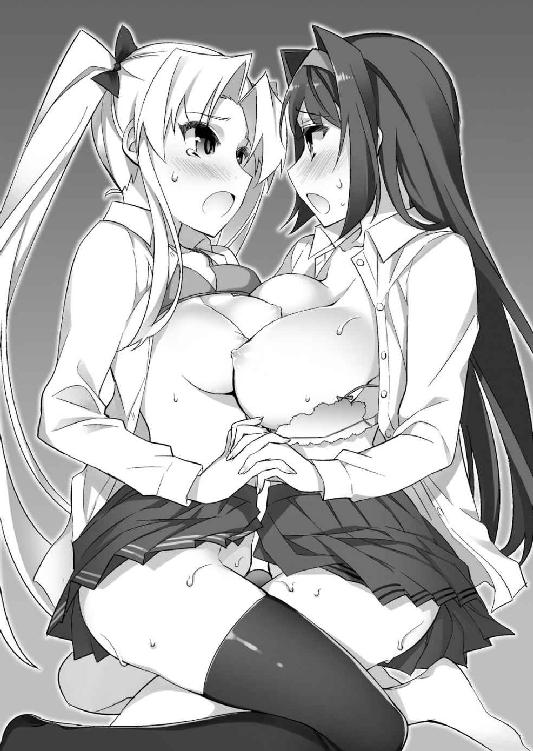
腰が抜けてしまったようにがっくりと崩れ、互いに支え合い、どうにか身体を起こしている状態。激しく上下している双丘の動きが、呼吸の荒さを雄弁に訴えている。
「だって、俺も気持ちよすぎて......んっ、それに、一方的にされてばかりじゃ不公平だからさ。少し......いいところ見せないと。あふっ、んんんっ！」
もっともらしい理由を呟きながら、より強い刺激を求めて一心不乱に腰を振る。
肉ヒダが痙攣を繰り返し、竿肌をくすぐるように絡みつく詩音の肉裂。
表皮を噛み締めるように、全体が硬く収縮し始めた美緒の割れ目。
それぞれに特徴的な反応を見せる秘所を、今にも破裂しそうなくらいふくれあがった剛直で擦っていると、溢れ出てくる愛液が飛沫となって盛大に散り始めた。
「遼くんっ、そこぉっ、はぁ、激しい......きゃふぅっ、イィッ、くんんぅっ！」
「何だか、い、入れられてるみたいでぇ......すごぉ......ひんっ、あふうっ！」
「俺も、二人の中をいっぺんに掻き混ぜてるみたいで、凄くいい......うぁぁっ!!」
ヌチュッ、グチュルッ......ヌプッ、ニチュッ......。
指をしっかりと絡め、抱き合うように乳房を押しつけながら悶える幼馴染み達。
下腹部全体が痺れるような射精の予感を噛み締めつつ、遼人は腰上に正座する二人の身体をはね飛ばすような勢いで腰を振りまくる。
濡れた小陰唇を乱暴に撫で擦る、卑猥すぎる水音。それにますます興奮を感じ、ピストンを加速させようとしていた最中、いきなり左右の手を誰かに掴まれた。
「一方的じゃ不公平......か。それなら、あたいもしてもらっていいよな？」
「私も、お願いしたいです。ふ、不謹慎ですけど、見ていたらお腹の奥が疼いてきて、とても我慢できなくなってしまいました。ここ、あ、熱くなって......あぁっ」
熱に冒されたかのように上擦っている、ヤンキー少女と委員長の声。
いつの間にかベッドに上がり、膝立ちで左右から迫ってきていた彼女達、それぞれの秘所へ、掴まれた手が力任せに導かれていく。
「んっ、はぁ、う、うん......わかった」
快感に支配され、意識がほとんど吹き飛びかけているせいだろう。遼人は抵抗することもなく、指先にヌルリとした割れ目の感触が伝わってきた直後、反射的に指でぷっくりと盛り上がった肉唇を押し分け、それぞれの穴口へほぼ同時に人差し指を突き入れた。
「くぁぅっ、涼邑ぁ......んぅっ、いぃっ、そこ......くふっ、ああああっ！」
「きぃ、きてますっ！ 遼人君の指、わ、私の中に......はひぃぃっ、イイィッ!!」
右手の指で樹里、左手の指で智子。もう入口から蜜が滴るほど濡れていた肉穴は、剛直に比べれば圧倒的に細い指を、いともたやすく咥え込んでくれた。
（やっぱり、感触違うな。樹里の中は凄くきつく締まって、壁もうねうね動きっぱなしだ......委員長の中は最初から窮屈で、愛液の量が凄く多い）
頭の片隅に残った冷静な部分で、それぞれに違った魅力のある秘所の感覚を比べつつ、軽く曲げた指を激しく抽送し、溢れる愛液を掻き出していく。
「おにぃ、ボクも、ボクもぉ！ ここ......おっぱいでいいから、してよぉ」
「ちゅっ、あぁ......紗々羅、んぐっ、ああっ！」
息つく間もなく、甘えるような声で顔に覆い被さってきたブラコン妹。慎ましい隆起が口元へ押しつけられ、頂点の肉粒が刺激を求めるように痙攣を繰り返す。
ねだられるままにそこを唇で甘噛みしてやると、火照る突起は嬉しそうに震え、甘ったるいミルクのような香りが口いっぱいに広がってきた。
「ちゅっ、はむっ、はぁ......甘いな、紗々羅のここ......んぐっ、ちゅぱっ」
「あひぃっ、あぁっ、おにぃっ、くんっ、うううっ、いぃっ、ボク、イクぅ、ああ！」
小さい分、神経が肌面に近くて敏感なのだろうか。舌先で唾液を塗すように舐め弾いていると、紗々羅の声はすぐにうっとりと蕩け、肉粒の震えも激しくなってきた。
「むぅ、手も口もオチンチンも塞がってしまったとなると......ここですねぇ♪」
「ここを使う方法は、まだ本でも見たことがない。......新鮮で、興味深いかも」
除け者はごめんだと言わんばかりに、残された腹黒娘とクール少女も遅れてベッドに上がってきた。唯一空いている、だらりと伸びた両足。その傍らに正座した二人は、ふくらはぎの辺りを掴んで持ち上げ、その指先に自らの乳房を押しつけてくる。
「あはっ、んんっ！ 指で上手く摘んでみてください、涼邑くん♪ ちゃんと、絵里奈のおっぱいも可愛がってくれないと、不平等なのですぅ」
「強くしても、大丈夫。だから......ぁ......して......」
雄弁な絵里奈と、いつもどおり淡々とした藍花。
それぞれの性格を表したおねだりの声に答え、遼人は足先の感触だけを頼りに指をぎこちなく動かして硬く尖った肉粒をまさぐり、望まれるままにそれを摘み転がす。
「きゃうんぅ♪ あはっ、そう......上手ですぅ、んんぅっ！ いぃっ、はふぅっ」
「手よりもぎこちない感じ......でも、それが......不規則な刺激になって......いい」
同時に聞こえてきた、腹黒娘とクール少女の嬌声。足の親指と人差し指で挟んだ肉粒もヒクヒクと可愛らしく悶え震え、より強い刺激を求めてくる。
「こ、こら......あなた達、ルール違反ですよ！ 今は私と美緒さんの番なのに!!」
「堅いこと言うなよ、桜小路！ 一番、美味しいところは譲ってやってるんだしよ」
「それに、せっかく集まっているのですから、最後の締めはこうしてみんなで賑やかにやるべきなのです♪ 涼邑くんも、その方がいいですよね？」
抗議するヤンデレ少女に、悪びれず言い返すヤンキー少女と腹黒娘の声。
話を振られた遼人はそれに応える余裕もなく、必死に全身を動かし続けていた。
（もう、わかんない。こんな......現実じゃなさすぎる......）
乳房や肉裂。美しい乙女達の扇情的な部分を惜しげもなく身体のあちらこちらに擦りつけられ、真っ直ぐな想いを囁かれる。
男として、ある意味究極の幸せとも言える――夢のような現実。
もう戸惑うことも、道徳を気にする余裕もない。ただ自分を求めてくれる乙女達の声に応えたいという、熱い想いに突き動かされる。
「んちゅっ、はぁ、みんな......んぐっ、はぁ、一緒に......ちゅっ、んんっ！」
咥え込む妹のニプルを前歯で軽く挟み、首を前後に振って軽く扱く。
ヤンキー少女と委員長の膣壺に埋める指を大きく曲げ、締まる肉道を無理矢理押し広げながら、入口の方へ向かって素早く擦ってやる。
「ふぁぅっ、ううううっ！ おにぃっ、そこ噛むのらめぇぇ......ボク、もぉっ、おっぱい痺れて......ひぐぅっ、イッ......んくっ、はぁ、ひふぁああああっ!!」
「中、いきなり......あぁ、あたいもぉ......イッ......くんっ、はふううっ！」
「ダメですぅっ、こ、声......恥ずかしい声出ちゃいます......ふぁああああっ！」
昇り詰めていく乙女達の声を聞きながら、足の指で挟む乳首に爪を食い込ませ、その弾力あるふくらみをグッと強く押し込む。
「あはっ、イッ......絵里奈も、イク......もっ、ひゃうっ、あはぁっ！」
「ふぁぁ、ひぃっ、ふわふわ......する。絶頂......この感じ......」
「イク......俺もぉ......はぅっ、うぐっ、で、出る！ 出るよっ!!」
最後の締めとして、もう感覚がなくなりかけている腰に力を込め、左右から押しつけられている肉唇にズリズリと乱暴に擦りつけた。
「んくぅっ、あぁ、りょ、遼くん......イキますぅ、わ、私もぉっ！」
「くるっ、熱いのきちゃう！ もっ、くりゅっ、のぉっ、はひぃぃぃっ!!」
同時に跳ね上がる、幼馴染み達の可愛らしい声。濡れ張りついた肉ビラに表皮を強く引っ張り擦られた遼人もまた、頭の中で白い火花が散るような絶頂に飲み込まれていく。
――ドップゥッ、ビュルルルゥッ、ビュルッ、ビュビュビュッ！
「きゃはぁっ、あああっ！ きてますっ、遼くんのミルクぅっ、オチンチンミルク、ドクドク出てぇ......はひぃっ、はぁ、ふぁあああああっ!!」
「ビクビクしてるぅ......オチンチン、あたしのと擦れて......んふぅっ、あああっ!!」
重なり合う乙女達の嬌声をＢＧＭに、まるで噴火のような勢いで迸る白濁。
剛直を挟んで向き合う乙女達に遠慮なく飛び散り、押し潰し合っている乳房やお腹の辺りをまだらに染めていく。
「んっ、はぁ......ずるいです。美緒さんの方に、多くかかっているような......」
「そ、そんなことない。しーちゃんの方が多い......それに、他のみんなの方にも飛び散ってるし......うぅっ、割り込んできたくせにずるい！」
息を切らして互いの肌を濡らす熱液を見比べつつ、少年を取り囲む他の乙女達を恨めしげに睨みつける詩音と美緒。
「えへへっ、だってぇ、ボクも気持ちよくして欲しかったし～」
「みなさんで一緒に気持ちよくなれたことだし、無問題ということで......ふふっ♪」
したたかなブラコン妹と腹黒娘が悪戯っぽく微笑み、他の面々はそれぞれ余韻に浸りつつ、少し恥ずかしそうに頬を染めたまま視線を逸らす。
いつもなら、このまま闘争になだれ込んでもおかしくない状況だが、さすがに甘い絶頂の余韻が残っている今は、そんな物騒な気を起こす者は誰もいないようだ。
（何か、凄かった......リ、現実じゃないくらい気持ちよかった......）
肉幹はもちろん、全身が性感帯になったかのような恍惚の絶頂。
気が遠のきそうな目眩もおさまらず、すぐには起き上がれそうにない。
このまま目を閉じ、甘い余韻に浸りながら眠ってしまえれば最高に幸せだろう。
だが――その前に、どうしても済ませておかなければいけないことがある。
（みんなが、ここまで正直に気持ちをぶつけてくれたんだ。俺が、いつまでも逃げてるわけにはいかないよな......）
鈍い胸の痛みに顔を顰めつつ少年が決意するとほぼ同時に、先に立ち上がりベッドの傍らに並んだ乙女達から、少し緊張したようにぎこちない声で呼びかけられる。
「さて、お楽しみも済んだことですし......そろそろ、王子様の答えを聞かせて欲しいと、絵里奈は思うのです。もう......大丈夫ですよね？」
「......こっちは覚悟決まってるぜ。あまり焦らすなよ、涼邑」
「ああ......」
口火を切って呼びかけてきた腹黒娘とヤンキー少女に答え、疲労ですっかりと重くなった身体を起こし、ベッドに座ったまま乙女達を順々に見渡していく。
「恨みっこなしですから......どうぞ、ご遠慮なく」
「......抱いたことに、過剰な責任を感じる必要はない。どちらかと言えば、涼邑君が襲われる立場だったことが圧倒的。それを意識せず、素直な気持ちを聞かせて欲しい」
気遣い、優しい言葉をかけてくれる委員長とクール少女。
この聖エスタド学園で繰り広げられた、騒動だらけの日々。彼女達にどれだけ助けられたことか、その恩はいくらお礼を言っても足りないくらいだ。
「どんな答えだったとしても、ボクがおにぃの妹......それは変わらないよね」
少し不安げに尋ねてくる、幼い頃からずっと自分の後をついてきていたブラコン妹。兄離れして欲しいと言いながら、心のどこかでその気持ちを嬉しく思っていたのは事実だ。
「ここまできて、余計な気を回したりするのは禁止！ そういうの、逆に失礼!!」
不安を噛み殺すように、わざとらしく強い口調で釘を刺してくるツンデレ幼馴染み。
小さい頃、いじめっこだと思ってずっと恐れていた彼女の本心を知り、驚くと同時に納得した。小さい頃も、再会してからも。思い返せば、彼女が自分への好意を匂わせるような行動は数え切れないくらいあったのだ。はっきり言われるまで気づけなかった自らの鈍感さに呆れ、心から申し訳ないと思う。
（みんな......俺なんかにはもったいない、いい子だよ）
自分が七人いれば。ここが一夫多妻制の国なら。脳裏を過ぎる現実じゃない解決方法を苦笑で流し、小さく息をついて覚悟を決める。
改めて、自分の心の奥に問いかけ――出した結論。それは......。
「詩音......」
珍しく一歩下がり、不安げに暗い面持ちでうつむいていた黒髪の幼馴染み。
呼びかけると、信じられないと言わんばかりに目を丸く見開いた彼女へ歩み寄り、その震える手をしっかりと掴み、言葉を続ける。
「昔も今も、特に取り柄もない男だけどさ。でも、詩音が胸を張って、最高の王子様だって誇れるように頑張る、努力する！ だから、その、物凄く今更だけど......お、俺と......つ、つ、付き合って......くれないか？」
十数年越し、ようやく告げることができた素直な気持ち。
ところどころ言葉を詰まらせながらの、お世辞にも格好いいとは言い難い告白を受けた詩音は、見開いた瞳に涙を滲ませ、小さく肩を震わせ始めた。
「......私、遼くんにたくさんご迷惑をおかけしてしまいました。今も、昔も......だから、無理だろうって思っていたんです。それなのに......」
常日頃、自分と結ばれることが運命だと豪語していたとは思えない、か細い声。
属性を特化させていた女帝の破片を失ったせいだろうか、今までに見たことがないくらい自信なさげな姿に驚き、思わず言葉を失ってしまう。
「いいんですか、遼くん、本当に私で......？」
「えっと......いいとかじゃなくて、詩音じゃなきゃダメだ!! だから......あの......」
不安そうな黒髪の少女の肩を叩いて宥めつつ、並ぶ他の乙女達に視線を送る。
「まっ、そうだろうな。初志貫徹ってわけだよな」
「そうですね......わかっていました」
「その答えが出る確率が圧倒的に高いだろうと、私も予測済み」
「大どんでん返しならずということで......よき敗者はすごすご退散するのですよ」
「えっ、ちょ、あ、あの......」
遼人が口を開くよりも早く、乙女達は妙にサバサバとした明るい表情で服の乱れを整えつつ、そのまま振り返りもせずに部屋を出ていく。
「ボクも今日のところは引き下がるけど......でも、まだ終わりじゃないからね！」
「出遅れた分が、響いちゃったかな。あ～あ......」
不服そうに頬をふくらませながらも、それ以上粘らず部屋を飛び出していく紗々羅と、去り際、少しだけ寂しげな笑みを口元に浮かべた金髪の幼馴染み。
もう一波乱、あるのではないか。そんなフラグを感じていた遼人の予想と裏腹に、静まり返った室内に詩音と二人、取り残されてしまう。
「みんな......」
あっさりと割り切れるような気持ちだったのか。......いや、そうではない。
（気を遣ってくれたんだよな。俺に、負担をかけないように......）
自分を思う少女達の気持ちを察し、グッと言葉を飲み込む。
今、追いかけてもその思いに応えることはできない。
ありがたく、その優しさに甘えさせてもらうべきだろう。
小さく深呼吸をして気持ちを切り替えた遼人は、改めて想いを伝えた少女を見つめる。
「俺さ......小さい頃、詩音と初めて会ったとき、なんて可愛い子だろうって一目惚れしちゃったんだ。......そして、この学園に転校してきた初日、詩音と道端でぶつかったときも......同じように一目惚れしちゃった。何て、理想的な可愛い子だろうって」
そこで言葉を止めた少年は、まだ不安そうに瞳を潤ませている黒髪の美少女を胸に抱き寄せ、気恥ずかしさを堪えつつ想いを叫ぶ。
「二度も一目惚れしちゃう......これって、絶対に運命だよ。......大好きだ、詩音」
あえて彼女がよく使う『運命』という単語を引用し、真っ直ぐに愛を訴える。
ここまできて、気障とか格好つけているとか、気にする余裕はない。愛しい少女をもっとも喜ばせ、満足させてあげられる方法を選ぶまでだ。
「遼くん......っ......夢ではないんですね、これ......」
「当たり前だろ。こんなに体温が感じられる夢なんて......現実じゃないぜ」
ようやく信じてくれたのだろう、胸板に顔を埋め、言葉を詰まらせる愛しい幼馴染み。
いつもの暴走っぷりが嘘のように弱々しく震える肩を、そっと抱き寄せてあげる。
誰よりも、誰かに愛してもらうことを望んでいた、孤独な乙女。
彼女の『ヤンデレ』という厄介な属性は、母親譲りの過剰な一途さとその狂おしい思いが、色濃く反映されたものだったのだろう。今、ようやくそれを理解できた気がする。
言葉でも、抱き締めるだけでも足りない。愛されることに不慣れで臆病な乙女の心の底まで、この甘い気持ちを伝えるためには――もっと確かな繋がりが必要だ。
遼人がそう思った直後、胸の中からためらいがちに見上げてきた詩音の口から、それを求めるか細い声が漏れ出した。
「遼くん......もう一度、抱いていただけますか？ この不安が消えてしまうくらい、うんと激しく......頭の中が真っ白になるまで、いっぱい遼くんを感じさせてください」
「......うん。俺も、詩音を感じたい。今度こそ......ちゃんと、恋人として」
自らの腕の中、身を縮ませている乙女の求めに応えるや否や、その身体を抱え上げる。
はっきりと決断を下せた達成感のおかげか、それともいつになくしおらしい黒髪の乙女の姿が新鮮で、愛しさが募ってきているのか。――おそらくは両方だろう。
鼓動が異様なくらい高鳴り、早く一つになりたいという衝動を抑えられない。
遼人は抱え上げた恋人の肢体をもどかしくベッドに投げ転がし、緊張でわずかに震えている両足首を掴むや否や、それをグッと大きく持ち上げていった。
「きゃ!? りょ、遼くん、何を......あの......」
「見せて。詩音の全部......」
戸惑い黄色い声を上げる詩音へ答えながら足を左右に広げ、身体を大きく『く』の字に曲げるような姿勢に捕らえる。お尻が大きく突き出された、所謂、まんぐり返しだ。
火照って淡い桜色に染まった尻房が自然と広がり、その奥に隠された小さな肛門も、その上方で切なげに震えている肉裂も、はっきりと見えてしまう。
さっきまで剛直と熱く擦れていた割れ目は十分に綻び、ぷっくりと盛り上がった大陰唇の奥、薄い肉ビラもすべて露出した状態。中央の穴が小さく口を開ける度、ゴボリと音が聞こえてきそうな勢いで、わずかに白濁した蜜が吹きこぼれてくる。羞恥している表情とは裏腹に、そこだけはいつもの積極さで愛しい少年を求めているようだ。
「あぅっ、は、恥ずかしいです。そんなにじっと見つめられると、私......もぉ」
黒髪の乙女は両手で顔を覆い、今にも泣き出しそうなか細い声で訴えてきた。
（詩音って、実は受けに回ると弱いタイプなのかな）
初めて彼女が生み出した魔物を倒した後、代価として肌を重ねたときを思い出す。
あのときも普段の積極的な態度が嘘のように、恥ずかしがっていた。
「あ、あの......遼くん？ おかしいですか、こういう私......」
「そんなことない。凄く可愛い......可愛すぎて、俺、もう限界かも」
興奮のあまり、いつもより少し早口になって答えつつ、我慢できず腰を突き出す。
もう疲れ切っているはずなのに、股間の屹立は今まで散々射精を繰り返してきたとは思えない勢いで、硬く垂直に近い角度で勃起してしまっていた。
竿肌が赤黒く腫れ、表面に太い血管が浮かび上がる程の勢い。
お世辞でも何でもなく、心の底からこの愛しい少女と結ばれたいと願っている。それを身体のどこよりも雄弁に訴え、ビクビクと活発に脈動を繰り返していた。
「りょ、遼くんのオチンチン、またそんなに元気に......嬉しいです。私......」
顔を両手で覆ったまま、その指の隙間から剛直を覗き見ている黒髪の恋人が、恍惚と震える声に合わせて甘い吐息を漏らす。
それに合わせて桃色の肉唇がキュッと物欲しげに締まり、溢れ出てきた淫液が割れ目を伝って菊門の方まで真っ直ぐに垂れ流れる。
息を飲んでその卑猥な光景を鑑賞し終えた遼人は、荒ぶる気持ちを懸命に宥めつつ、今にも破裂しそうな勢いで勃起した肉槍の先を、綻ぶ膣口へ押し当てた。
「くふっ、んんっ！ 遼くん......ほ、本当にいいんですね？ 私で......」
「詩音じゃなきゃダメだ。だから......今日こそ、しっかりと詩音のこと......お、お、お嫁さんにする！ 俺だけのものにしちゃうから。......覚悟してくれよ」
「そんなの......ずっと昔からできています。だから......きて。お願いですぅ......」
ようやく顔から手を離し、熱っぽく潤んだ瞳で訴えてくる詩音。
蜜口は声に合わせて小刻みな開閉を繰り返し、押しつけられた亀頭をしゃぶるように刺激してくる。特に敏感な鈴口の辺りを強く締められると、それだけで軽く達してしまいそうなくらいの甘い疼きが竿の芯を駆け抜け、腰まで響いてきた。
「好きだよ、詩音。だから......ずっと一緒に......くっ、うううっ！」
「はい。一緒です、もう遼くんと離れたくない、寂しいの嫌......んぁっ、くふううっ！」
ヌプリュッ、ズッチュゥッ、ズブブブブブゥッ!!
彼女と再会してから今日まで、物語の山場を迎える度に交わり、今日も枯れそうなくらい何度も精を搾り取られた、ヤンデレ少女の膣壺。
すっかり馴染み深くなった蕩けるように熱い肉道へ、剛直が滑るように侵入していく。
「うぅっ、そ、そう！ 奥ぅっ、もっと奥にぃ......んくぅっ、はひぃ！ んぅうう!!」
最初は優しく包み込んでくるような締めつけだったが、亀頭が行き止まりの子宮口に軽く衝突した瞬間、そこがスイッチになっていたかのように全体がきつく収縮してきた。
「はひぃっ、あぁっ、うううっ！ イィッ......りょ、遼くんのくるっ、奥......い、いっぱい奥にくりゅっ、ひぃぃっ、はぁ、んんっ!! わらひぃっ、もぉっ、ひふぁぁぁっ！」
「詩音......も、もう？ イッ......んぁっ、はぁ、うううっ」
表面に刻まれた皺の痕が残りそうなくらい、竿肌に密着してくる肉壁。そこが甲高く跳ね上がる甘声に合わせ、奥に向かって何度も大きく波打ち始める。
問いかけて、確かめるまでもない。この挿入だけで彼女が達してしまったのだと、その狂おしい動きが何よりも雄弁に訴えてきていた。
「ごぉ、ごめんなさい......私、一人で勝手に......はひぃっ、いいっ、んぅふぁあっ」
詩音は今にも蕩けてしまいそうなのを必死に堪え、瞳を潤ませて必死に訴えてくる。
スイッチ全開で暴走しているときの誰よりも大胆で積極的な姿からは想像もつかない、しおらしく儚げな雰囲気。見つめているだけで鼓動が加速し、もっと喜ばせてあげたいという衝動を抑えきれなくなってきた。
「いいよ、何度でも気持ちよくなって。俺も、加減できそうにないし......二人揃って滅茶苦茶に蕩けちゃうくらい、いっぱいしちゃおう......ね？」
「ふぁっ、そ、そんな風に言われたら。私、嬉しくてまたぁ......す、すぐにぃ」
「イッてもいいよ。ほら......ここも感じるかな」
唇を震わせて悶える恋人を見下ろしつつ、遼人は結合部の上側へ指を滑らせていく。
綻ぶ割れ目の端で、真珠色の顔を覗かせていたクリトリス。さっき、肉竿に擦りつけられていたときから既に硬くふくらんでいたそれを人差し指と親指で摘み上げ、包皮を捲るように根元の方へ力任せに扱いてしまう。
「くふんぅ、ううっ、はぁ、ひいいいいっ！ イィッ、らぁ、らめですぅ、そこぉっ、クリトリス弄るの......おおおっ、はぁっ、んふぅぅぅっ!!」
ニチュリと水音を響かせながら、肉粒の頭が飛び出てきた直後。黒髪の美少女は背筋をガクガクと激しく痙攣させ、さっきよりも乱れた絶頂の叫びを上げた。
膣壺の動きも活発になり、腰を振らなくても奥まで埋めたペニスが扱かれるよう。
敏感な雌核への刺激で、彼女がどれだけの甘い疼きを味わったのか。幹胴を搾るように圧迫してくる膣壺の動きが、何よりもはっきりと教えてくれた。
「はへぇっ、はぁ、遼くんぅっ、もぉぉっ、わ、わらひぃっ、おかひく......んんふっ、おかひくなりゅのぉ......んひぃっ、はへぇ......ぁぁ......」
唇をだらしなく緩め、まるで犬のように舌を伸ばして息を切らす詩音。
その蕩けきった表情で見つめられていると、それだけで頭の芯が痺れ、熱壺に埋まった屹立の感度が、抑えきれないくらい高まってきてしまう。
「詩音、もっと......もっと感じてくれ！ 俺と一緒に......くぅっ、ああっ！」
ズッチュゥッ、ヌチュッ、ズブブッ、ヌプリュゥッ！
声を熱く上擦らせながら、遼人は夢中で腰を振り動かし始める。
雁首がミチィと音を立てて窄む膣口を捲り、今にも飛び出そうになる瀬戸際のところで動きを止め、上から叩きつけるようにして深々と突き下ろす。
「んふぅっ、おおおおっ！ りょ、遼くんのオチンチンぃっ......ズブズブってぇ、響くぅ......し、子宮が潰れちゃいそうなくらい、強く当たってますぅ！」
「うん、この姿勢だと凄く奥まで入る......子宮の中まで、届きそうだよ」
「はぁ、はい、それでもいい......ふぁひぃっ、ああっ！ し、子宮の奥まで遼くんのオチンチンで愛してもらえるのぉ......う、嬉しい......嬉しすぎておかひくなりゅぅぅっ！」
一突きごとに少しずつ速度を上げ、胸いっぱいに込み上げてくる思いを伝えるように奥深くを貫く。子宮口は亀頭が衝突する度に小さく窄み、先から溢れてきているカウパー腺液を舐め取るように、ねっとりと吸いついてきた。
「ふぁぁっ、んふぅっ、うぅっ！ し、子宮も勝手に動いちゃってますぅ......遼くんを感じたくて......いっぱい、はひっ、くふぁっ、あんんんっ!!」
「子宮だけじゃなくて、オマ○コの中も動いてる！ チンポの形に合わせてうねうね動いて、ぴったりと張りついてる......んっ、本当、俺専用になってるみたいだ」
「は、はいっ、なってますっ！ もう、ずっとぉ......ずっと遼くん専用のオマ○コ......これからも一生、そうなりたいですぅっ!! そうしてぇ......はひっ、ふぁああっ！」
普段、詩音が訴えていることを真似て囁くと、膣壁の動きがより活発になってきた。
ゴツゴツとした幹竿の表皮を覆い包むように波打ち、壁面の皺が小刻みに蠢く。
ところどころが吸盤のように密着していて、抽送の度に引っ張られるような感触が、わずかな疼きとそれを塗り潰す強烈な快感を与えてくれる。
「気持ちいいよ、詩音のオマ○コ......俺専用のオマ○コ！ もう、腰が止まらない。もっともっと激しく動く......んっ、はぁ、くうううっ！」
「ふぁ、ふぁいっ、動いてぇっ！ いっぱい、奥までズブズブ......んふぅっ、はぁ、もうずっと遼くんと一緒だって......遼くんが私を選んでくれたんだって、もっともっと実感させてくださいっ！ 足りない......まだ足りないんですぅっ!!」
瞳の端からキラキラと輝く涙の粒を溢れさせ、甘く声を張り上げる黒髪の美少女。
ようやく胸を張って恋人と呼べるようになった幼馴染みの求めに応え、遼人は突き出される形になった尻房を腰で打ち叩くようにして、抽送をより早く荒々しくしていく。
ズチュゥッ、ヌップゥッ、チュプゥゥゥッ！ パチンッ、パァァンッ！
「ひぃぃぃっ、はぁ、イッ......んふぅっ、もっと......くふぅっ、はぁ、もっと身体中で感じるぅっ......遼くんのこと、感じさせてぇ......はひぃっ、んふぁああっ」
「ああ、全部してあげる。オマ○コも子宮も......他も全部！」
熱い吐息を漏らしながら紅色の舌を伸ばしてくる詩音に答え、遼人は身体を前に倒して上から覆い被さるように顔を近づけていく。
互いの吐息を鼻先で感じられる至近距離まで迫ったところで自らも舌を伸ばし、物欲しげに揺れ動いていた詩音の舌を搦め捕る。
「んちゅっ、はむっ、ちゅっ、あはぁっ、お口も遼くんの味ぃ......んふううっ」
「ふぁむっ、れろっ、はぁ、ちゅぱっ、んんぅっ、詩音......ちゅぱっ、あぁあっ」
互いの舌を貪り、唾液を熱心に分かち合う深いキス。
まるで蜂蜜のように濃厚な甘さが口いっぱいに広がるのを楽しみつつ、遼人は身体の横に投げ出され、寂しそうに指を動かしていた詩音の右手に気づき、すぐに自らの左手をそこにそっと重ねてあげた。
どちらからともなく指をしっかりと絡め合う、恋人繋ぎ。茹だるように熱く汗ばんだ手の平の温もりに、心の奥が蕩けてしまいそうだ。
「詩音、もっと......もっと......んちゅっ、れろぉっ、はむううっ！」
もっとこの優しい温度を感じたいと、割れ目をまさぐっていた右手も黒髪の少女の上半身の方へ滑っていく。
ほっそりとしたお腹を越え、指先が触れた高い隆起。身体を折り曲げられているおかげで、少し楕円に潰れている双丘。その左の乳房を反射的に鷲掴みにし、自分が離れず傍にいるという気持ちを伝えようと、乱暴なくらいの強さで揉み解す。
「はひぃっ、んんぅっ！ 胸......はふぅっ、あああっ!! お、おっぱいも躾けられてます......遼くんの手でぇ......形、変えられて......んひぃっ、ふぁあああっ！」
ふわふわとしたマシュマロのようなふくらみを揉み潰す度、黒髪の恋人は重ねた唇の隙間から甲高い叫びを上げ、電流を流されたかのように背筋を震わせた。
膣壺も更に一回り小さく狭まり、入口から奥へ向かって蠢く動きも、めまぐるしく加速してきている。子宮の奥に、決定的な証が欲しい。昼間、暴走する彼女が執拗に訴えていた台詞が、自然と脳裏に蘇ってきた。
「詩音......出すよ、ここ。中に......出しちゃうからね！」
「ふぇっ、はんっ、はぁ、い、いいんですか？ 中......んふっ、あぁっ」
キスの合間に告げた言葉に、蕩けていた詩音が一瞬我に返り、目を丸くした。
危険日と宣言している子宮に、自らの意志で射精しようとしている。遼人の方から、彼女を孕ませたいと言っているに等しい宣告。
過去のトラウマのせいで、未だ拭いきれないでいる彼女の胸の奥に巣くう不安。それを吹き飛ばすには、もうこうしてあげる以外の方法を思いつかない。
「どうにかする！ 赤ちゃんできたら、絶対に俺が幸せにしてみせる!! 俺......詩音の王子様......詩音だけの主人公だから。信じて......んっ、頼む」
「ふぁふっ、んっ、はぁ、はい......嬉しい......もぉっ、私、う、嬉しすぎてぇ......このまま死んじゃってもいいくらい......んふっ、ひんぅ、ああああっ！」
「死なせない。ずっと......んちゅっ、はぁ、ずっと俺と一緒に幸せに......幸せな結末まで手を繋いで歩いてくれ！ 好きだ......大好きだ、詩音！ はむっ、ううっ！」
「ふぁ、ふぁいぃっ、私もぉ......好き、大好きですっ、くんっ、ふぁむう!!」
息ができなくなるほど唇を重ね、二人揃って胸いっぱいの愛を叫んだ直後。狭まる膣壁の痙攣が小刻みになり、入口が根元を噛むような強さで締まった。
力任せに腰を引っ張っても引き抜けず、それならばと、既に子宮口に密着していた亀頭をより深くまで押し込もうと、全体重をかけて肉幹を突き進めていく。
ズプゥゥゥゥッ、ヌチュッ、ズップゥッ、ヌプリュゥッ！
小さな肉室を横長の楕円に押し潰し、震える子宮口に亀頭が突き刺さったような衝撃が腰まで響いてくる。背筋から脳髄まで痺れる、人生最大の甘い快感。全身が硬直し、目の前が白く染まるのに合わせ、尿道に熱いものが込み上げてきた。
「出る、出るっ！ 詩音の奥に全部......た、種付けしちゃうっ！ ふぁあっ!!」
「ふぁいぃっ、出してぇっ！ イク......私もぉっ、んふぅっ、ううううーっ！ 王子様の......旦那様チンポで子宮に種付けされてイクぅっ、孕みアクメしちゃうぅぅっ!!」
ビュルッ、ドブブブブブッ、ビュブゥッ、ビュルビュルビュルビュルゥゥッ！
愛を誓い合う二人が、揃って絶頂の叫びを上げた直後。マグマのように熱い白濁が鈴口から迸り、へこむ子宮口から肉室の中へ怒濤の勢いで流れ込んでいく。
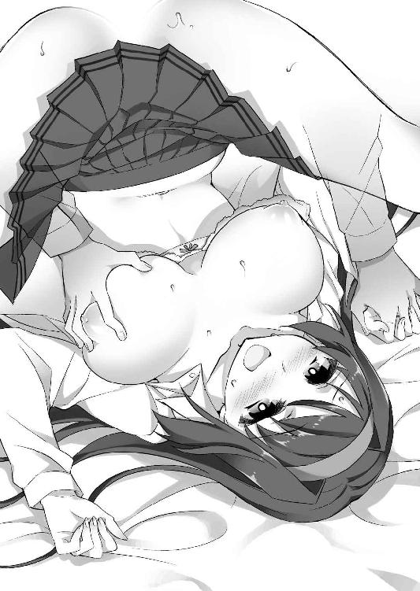
「はひんっ、はぁ、ふぁああああっ!! あはぁっ、あ、熱いのぉくりゅっ......遼くんの精液ぃ......赤ちゃんの種で、し、子宮いっぱい......んふっ、はぁ、あはぁ......」
うっとりと喘ぐ声に合わせて、キュッ、キュッと断続的に締まる膣壺。
その動きに押し出されるようにして、陰嚢から延々と込み上げてくる白濁が鈴口から溢れ出て、子宮をパンパンにふくらませていった。
早くも入りきらなくなった精液が愛液と混ざり合い、結合部からゴボゴボと卑猥な音を漏らしながらこぼれ出てきている。桃色の肉唇に、包皮を剥かれた真珠色の肉粒。そして気持ちよさそうに痙攣を繰り返している、小指ほどの大きさの菊門まで。
黒髪の少女の秘所全体が白く染まっていくのを、遼人は身体がふわふわと浮き上がりそうな余韻に浸りつつ、じっくりと観察し続けた。
「お腹、たぷたぷです......んちゅっ、はぁ、何だか、いつもより子宮で精子が元気に動いてる感じがします。......きっと、遼くんが私を孕ませたいと思って射精してくれたからですよね......んぁっ、絶対にそう......絶対に孕んでます、これ......あはっ」
恍惚と蕩けた目で下腹を見つめつつ、甘えるように軽いキスを求めてくる詩音。
それに応えてキツツキのように繰り返し唇を重ねながら、遼人は指を絡め繋いでいる手に力を込め、今一度、はっきりと想いを告げる。
「もう絶対に離さない......詩音のことが、大好きだから。......これでもまだ疑うなら、今度はもっともっと激しく......壊れるくらいしちゃうぜ？」
「んっ、もう......そんな風に言われたら、信じませんって言いたくなっちゃいます。遼くんに壊されるくらい愛してもらえるなんて......想像しただけで......はぅっ、ちゅっ」
冗談っぽく囁きながら、火照る肌を重ね、いつまでも離れようとしない二人。
今、ここで身体を離したら、また奇妙なフラグで引き裂かれてしまうかもしれない。
そんな冗談と本気の入り交じった思いを噛み締めながら、遼人はしっかりと繋いだ手に力を込めたまま、愛しい恋人の体温を全身で感じる。
「もう、このまま蕩けるまで......ずっと繋がっていたいよね」
「ふふっ、素敵ですね、それ。少なくとも......今日はもう、ずっとこうしていたいです」
悪戯っぽく囁き、再び唇を優しく重ねながら思う。
物語の結末は、王子様とお姫様のキスシーンでフェードアウトが定番。
話の幕が下りたその後も、結ばれた二人はその姿勢のまま。
いつまでも甘い雰囲気を分かち合い続ける――それこそが、主人公とヒロインにとっては何よりも美しく、幸せな結末なのではないかと――。
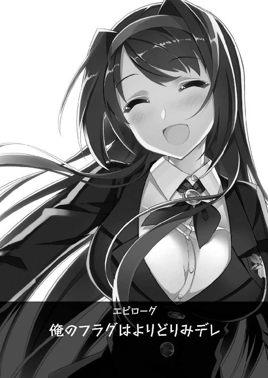
エピローグ 俺のフラグはよりどりみデレ
「隠蔽工作は、無事に済みました。お屋敷の修復は、少し時間がかかりそうですけど」
「それは......仕方ないですよね。地下室なんて、壁が全部崩れてしまっていましたし......あっ、学園長、タルトの生地はこれくらいの厚さで大丈夫ですか？」
「ええ、それを型でくり抜いてもらえるかしら。......お手伝い、ありがとうね」
「これは、みんなに配る昨日のお礼ですよね？ それなら、私にも責任がありますし」
「ええ。絵里奈ちゃんリクエストの、レモンクリームタルト。藍花ちゃんもいるし、かなり多めに作っておかないと足りないから......本当に助かるわ」
放課後の学長室。隅に設置された厨房に立ち、忙しそうにお菓子作りに励む翠と詩音。
まめまめしく働く黒髪の乙女を、学園長はいつにも増して優しげな瞳で見守っている。
（嬉しいんだろうな......詩音と一緒に、料理ができて）
十年以上、詩音を女帝の破片から救うために人生を捧げていたのだ。
その目的を達成し、まるで実の母娘のように仲睦まじくお菓子作りに励む。忙しくも楽しいひとときを心から満喫しているのが、見ているだけで伝わってくる。
「ところで......本当にいいんですか、遼人君。乙女の破片のことは......」
レモンの果汁をたっぷりと搾り入れた甘酸っぱい香りのクリームを泡立てながら、淑女が小首を傾げ、見守る少年に問いかけてきた。
「はい。もう、決めたことですから......大丈夫です」
遼人はソファーに腰を下ろしたまま、決意を改めて伝えるように重々しく頷き返す。
「今、手元に残っている種の力を使えば、遼くんの中にある乙女の破片を安全に取り除くことは難しくないんですよ？ それでも......いいのかしら？」
「俺だけじゃ、ダメですよ。詩音や、寮のみんなはもう解放されましたけど......この学園にはまだ大勢、乙女の破片を持っている生徒がいるんですよね」
確かに、自分にそこまで首を突っ込む義務はないのかもしれない。
だが、乙女の破片によって人生を大きく狂わされてしまった少女達の悲劇を知った今、それを見なかったことにして物語に終止符を打つことは、どうしてもできなかった。
「翠さんの研究がもっと進んで、主人公の力なしでも乙女の破片をどうにかできる方法が完成するまで。......もうちょっとだけ、主人公続けさせてもらいます」
「私は、反対したんですけどね。『主人公』を続けるということは、主人公の力を使って代価を支払う機会が、またあるということになりますし。それに、遼くんに救われた有象無象の雌豚が、身の程知らずの横恋慕をする可能性も低くはありませんから」
遼人がちょっと格好をつけて決めた直後。タルト生地の成形をしていた黒髪の乙女が、包丁をしっかりと握り締めたまま、ブツブツと抑揚のない声で口を挟んでくる。
「だ、だから、それはちゃんとするって！ 代価は、ただ傍に居るだけでいいってわかったんだし......もう、今までみたいに過剰な支払いはしない！ 絶対にしないから!!」
「あまり強く言わないでください！ 遼くんがそう言えば言うほど、嫌なフラグが立ってしまいそうですから。......もし、本当に立ってしまったら、私......ふふふっ」
ダンッ！ ダンッ！ ダァァァンッ!!
言葉尻を濁し、まるでまな板ごと叩き切るような勢いで包丁を振り下ろす詩音。
長年とりつかれていた女帝の破片から解放されたとはいえ、彼女の持つ『ヤンデレ』属性が鎮まるまで、しばらく時間がかかりそうだ。
（というか、鎮まるのかな......？ い、いや、鎮まる！ 絶対に大丈夫!!）
不安に思うと、そっちの方向に嫌なフラグが立ちかねない。遼人は首を小さく横に振って気持ちを切り替え、自分に言い聞かせるように繰り返し心の中で叫ぶ。
「ま、まあ、さすがにしばらくは休ませてもらいますよ。詩音もみんなも色々あって疲れているし、俺も正直、心身共に結構疲労困憊な感じなんで......」
周囲の乙女達が抱える問題は、ひとまず決着がついた。少なくとも、ある程度は普通の学園生活を楽しむ余裕を持てるだろう。
（って、また余計なことを考えちゃったな）
苦笑しつつ、出された紅茶のカップを手に取った直後。落ち着きを取り戻し、瞳に光が戻った黒髪の乙女が、恥ずかしそうにモジモジとしながら問いかけてきた
「あ、あの、遼くん、それなら今度の週末、私と......デ、デートしませんか？」
「あっ、そ、そうだね！ デートか......うん、いいかも......」
昨日、ようやく恋人となった少女からの誘いに、頬が熱くなるような気恥ずかしさを感じつつ、しみじみと頷く。
初デート、新たな日々の始まりを飾るイベントとして、実に相応しいものだ。
「それなら、どこへ......」
早速、具体的な計画を立てようと問いかけた――刹那。
「それなら、久し振りに公園いってみない？ あたし達がよく遊んでたところ！」
バタンと扉を乱暴に開け放ち、誰かがタックルのような勢いで飛びついてきた。
驚く少年の鼻先をくすぐるように、ふわりと舞う金髪ツインテール。
その正体に気づいた直後、遼人は思わず悲鳴のような叫びを上げてしまう。
「み、美緒!? お前、な、な、何を......えっ、えぇっ！」
その驚愕の悲鳴が新たなフラグを立てたかのように、開け放たれたままの扉から次々と人影が乱入し、硬直する少年へ群がってくる。
「それより涼邑、野球観にいこうぜ、野球！ ちょうど、首位攻防の熱い試合だぜぇ!!」
「絵里奈、そろそろ夏物のお洋服を買いにいきたいと思っていたのですよ。お付き合いいただけるなら、涼邑くんの趣味に合わせることもやぶさかではありませんよ～？」
「あ、遊んでばかりでは不健全です！ もうすぐテストも近いですし、よければ図書館で一緒に勉強しませんか？ 私でよければ、わからないところ教えますし......」
「......近くに、また気になる食べ物屋を見つけた。同行してもらえると嬉しい」
「ダメ～っ！ 今度の週末は、ボクがおにぃと遊ぶの!! ねぇ、久し振りに遊園地つれていってよぉ～。おにぃの嫌いなジェットコースターは、乗らなくていいからー！」
腕に、首に、足に。わらわらと群がってくるお馴染みの乙女達。その積極的な勢いに気圧され、遼人は酸欠の金魚のように口をパクパクと開閉させることしかできない。
（な、何で......みんな、昨日、俺と詩音のことを認めて......って、まずい！ このままだと、また詩音のスイッチがやばい方向に......）
ダァァァァァァァァァァァァァンッ！
遼人がハッと気づくのと、木製のまな板が真っ二つに割れた破壊音が学長室に響いたのは、ほぼ同時のことだった。
「何をしているんですか、みなさん。......おかしいですよね？ どうして私の王子様に、そんなに馴れ馴れしく密着しているんです？」
「何でって、き、決まってるでしょ！ 好きな男の子には、できるだけくっついていたいと思うのは、乙女として当然の気持ち!! 何もおかしくない！」
「黙りなさい、このツンデレ改めデレデレ女ッ！ 何が好きな男の子です!? 遼くんのことは、昨日の闘争で決着がついたことでしょう？ 最後の闘争だと言っていたのを一晩で忘れたと言うのですか？ 揃いも揃って、ミジンコ並の記憶力とは呆れます!!」
「デ、デレデレって何よ！ ツンデレもキモいけど、それもキモい!! あたしを、そういう変なレッテルつけて呼ばないでよね！」
「いいから、私の遼くんの半径一キロ以内から離れ、その口を閉じなさい!! 一体、どういうつもりなのですか！ この痴れ者っ!!」
すっかりいつもの調子で言い合いを始める、幼馴染み二人。
その迫力に圧倒され、未だ口を挟めないでいる少年の代わりに、首筋にしがみついてきていたふわふわツインテールの妹が、悪戯っぽい口調で答えた。
「昨日は昨日、今日は今日だよ♪」
「最後の闘争というのは、あくまで昨日行う最後の闘争という解釈でお願いしたいのですよ。本気で好きになった男の子を、たった一度の闘争ですっぱり諦めるなんて、そんな潔いことを言っていたら、恋する乙女なんてできないのです!!」
「恋に心変わりはつきもの。恋愛小説には、必ずある展開」
悪びれもせずに言葉を続ける、腹黒娘とクール少女。その突拍子もない理論に、遼人は口癖を叫ぶ余裕すらなく、ただ無言で目を見開く他なかった。
「なるほど、よくわかりました。色々お世話になったからと、遠慮していましたが......その恩も、昨日までという解釈でよろしいようですね!!」
手にした包丁を勢いよく振り上げ、怒りをあらわに叫ぶ黒髪の少女。その瞳からは再びハイライトの光が消え、狂気の闇に染まった恐ろしいものに変わってしまっている。
「へっ、いいぜ！ 乙女の破片がなくても、てめぇは相変わらずみたいで安心したぜ、桜小路！ やっぱり、あたい達には馴れ合いより闘争が似合うよなぁっ!!」
「ダ、ダメです！ もう乙女の破片がなくなったのですから、闘争を行う正当な理由はありません！ とっても不道徳です！ でも、遼人君を諦めない限りは、詩音さんと争うことになってしまいますし......ああ、どうすればいいのか、わかりませぇ～んっ！」
「恋の闘争は、戦わなきゃ生き残れない！ ボク、負けないんだからね!!」
一気にヒートアップしていく、乙女達の口論。すっかり取り残された遼人は、飛び交う罵詈雑言をぼんやりと聞き流し、乾いた笑みを浮かべるしかなかった。
「ど、どうして......こうなった」
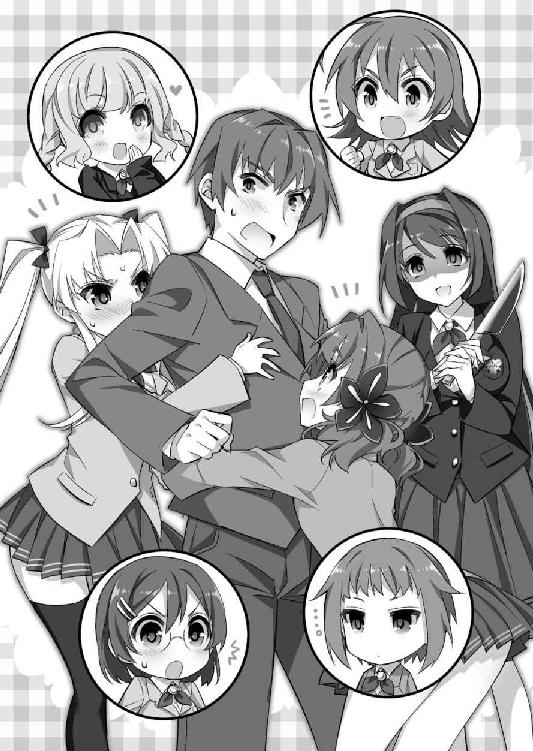
勇気を出して想いを告げ、最愛の幼馴染みと結ばれた。
あとは、薔薇色の甘い恋人生活が始まる。そう思っていたのに――。
「ふふっ、西瓜にお塩、カレーライスに福神漬け。そして......主人公には恋のトラブルがつきもの。決して切り離すことはできないということなのかしらね」
騒動が激化する気配を感じ取ったのか、作りかけのお菓子を慌ただしく部屋の隅の冷蔵庫にしまいながら、おっとりと微笑む翠。
その言葉に、遼人は言い返す余力もなく、ただ肩を落とすしかなかった。
（結局、こうなっちゃうってわけか......あははっ）
犬も歩けば棒に当たる。主人公が動けばフラグが立つ。
これからも、すっかり自分に『デレ』てしまった乙女達が起こす争乱のフラグに翻弄され、振り回される。そんな賑やかな日々から逃れることは、できそうにない。
乙女の破片。すべての元凶となった存在を消し去り、真の幸せな結末を迎えるまでは。
「覚悟しなさい、泥棒猫っ！ 乙女の破片の力は失っても、私には遼くんから分け与えてもらった愛の力があります!! あなた達ごときに遅れは取りません！」
「あたしだってまだまだ負けないんだからねっ!! かかってきなさい、しーちゃん！」
「ああ、もうっ、やめろって！ もっと穏便に解決を......」
こんな風に口を挟むと、また余計なフラグが立ってしまうかも。
でも――そうなったとしても、そのときはそのとき。その先には、必ず幸せな結末に繋がる道が、用意されているはずだ。
主人公である自分とヒロインである彼女が、手を取り合って歩む限り。――必ず。
あとがき
祝！ シリーズ大団円!!
二巻から一年近く間が開いてしまい、お待たせして申し訳ございませんでした。
「俺のフラグはよりどりみデレ」シリーズ、無事に完結を迎えることができました。
最後まで、お楽しみいただけましたでしょうか？
担当編集のＳＨ様。素敵なイラストを仕上げてくださった火曜様。そして読者の皆様のご声援に支えられ、無事にここまでたどり着くことができました！ 本当にありがとうございます。感謝感激、いくら言葉を並べても表現し切れません。こうして無事、書き上げることができて、感無量といった心境です。
我らが『主人公』、涼邑遼人君の物語は、ここでひとまず幕引きです。
これからもフラグメイカーな彼の周りには、様々な事件が起きるでしょう。
それはまた何かの機会に、皆様にお届けできればと思います（時々、Ｔｗｉｔｔｅｒで掌編を掲載したりするかも？ 気になる方は、是非フォローを！）。
次はあとみっく文庫か、二次元ドリーム文庫か、もしくは二次元ドリームノベルズか。
どこかでまた、皆様とお会いできることを祈って――ごきげんよう！
栗栖ティナ
初の長編シリーズということで突っ走らせていただいた本作も、いよいよ完結。嬉しいような、ちょっと別れがたいような。シリーズ物を終える複雑な心境を、初めて味わうことができました。遼人と、彼を振り回す可愛いヒロイン達の最後の闘争、お楽しみいただければ幸いです。
火曜
個人的には樹里ちゃんが萌えでした！ 最後までお付き合いいただき、まことにありがとうございました。
あとみっく文庫
俺のフラグはよりどりみデレ３
著者 栗栖ティナ
装丁 マイクロハウス
発行 株式会社キルタイムコミュニケーション
〒１０４-００４１ 東京都中央区新富１-３-７ヨドコウビル１Ｆ
著作権 ©Tina Chris 2012-2013
当ファイルは、あとみっく文庫『俺のフラグはよりどりみデレ３』（２０１２年７月５日 初版発行）に基づいて作成しております。
※本作品の全部あるいは一部を無断で複製・転載・配信・送信したり、ホームページ上に転載することを禁止します。本作品の内容を無断で改変、改ざん等行うことも禁止します。また、有償・無償にかかわらず本作品を第三者に譲渡することはできません。